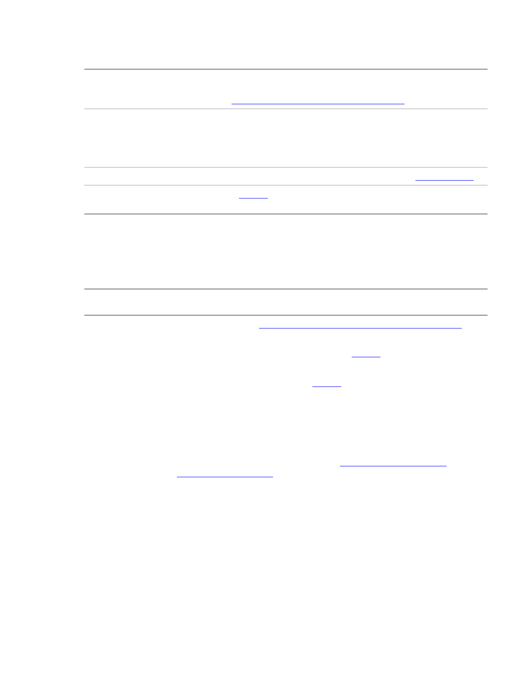
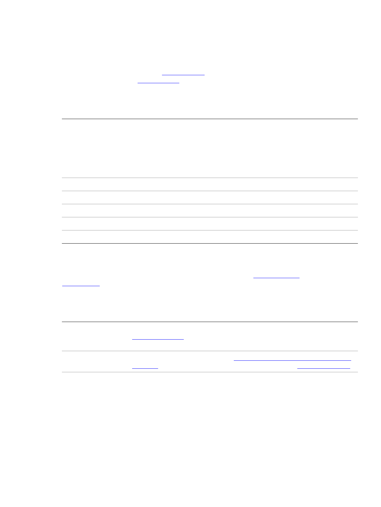
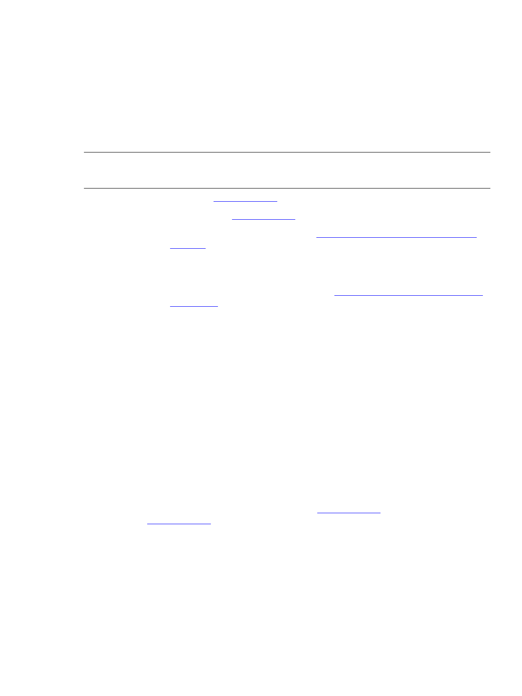

9
1
Introduction
JavaScript is a platform-independent scripting language that you can use to control many features and
automate many tasks in Adobe® applications. Scripting is easier to learn and use than many other kinds of
programming, and provides a convenient way of automating repetitive tasks or extending applications to
provide additional tools for other users.
X If you are new to scripting, see Adobe Creative Suite: Introduction to Scripting, which introduces basic
scripting concepts and describes different scripting languages that are available, including JavaScript.
JavaScript and other scripting languages are object-oriented, and this book also describes the basic
concepts of object-oriented programming and document object models.
X Each application that supports JavaScript also provides an application-specific Scripting Guide that
introduces the object model for that application, and reference material for the objects. This
document provides information about the JavaScript features, tools, and objects that are common to
all Adobe applications that support JavaScript.
X This document does not teach JavaScript. If you are familiar with scripting or programming in general,
but unfamiliar with JavaScript, see publicly available Web resources and documents, such as:
Z The public JavaScript standards organization web site: www.ecma-international.org
Z JavaScript: The Definitive Guide, David Flanagan, O’Reily Media Inc, 2002. ISBN 0-596-00048-0
Z JavaScript Bible, Danny Goodman, Hungry Minds Inc, 2001. ISBN 0-7645-4718-6
Z Adobe Scripting, Chandler McWilliams, Wiley Publishing, Inc., 2003. ISBN 0-7645-2455-0
N
OTE: Check for updated versions of this document at Adobe Developer Center,
http://www.adobe.com/devnet/scripting
.
ExtendScript overview
Adobe provides an extended implementation of JavaScript, called ExtendScript, that is used by many
Adobe applications that provide a scripting interface. In addition to implementing the JavaScript
language according to the ECMA JavaScript specification, ExtendScript provides certain additional
features and utilities.
This document describes JavaScript modules, tools, utilities, and features that are available to all
JavaScript-enabled Adobe applications.
N
OTE: Some modules, and features of some modules, are optional. Check the product documentation for
each application for details of which modules and features are implemented.
Example code
The Adobe ExtendScript SDK, which contains this document, also contains a set of code samples that
demonstrate how to use features of ScriptUI, interapplication communication, and external
communication. This book refers to these samples by name for illustration of concepts and techniques.
You can download the SDK from Adobe Developer Center, http://www.adobe.com/devnet/scripting/
.
CHAPTER 1: Introduction ExtendScript overview 10
The samples are located under the ExtendScript SDK root directory:
SDKroot/Samples/javascript/ sample scripts
SDKroot/Samples//javascript/resources/ resources, such as image or flash files
Development and debugging tools
For help in developing, debugging, and testing scripts, Adobe provides the ExtendScript Toolkit, an
interactive development and testing environment for ExtendScript, which is installed with all
JavaScript-enabled applications. For complete details, see Chapter 2, “
The ExtendScript Toolkit.”
ExtendScript also provides global objects that support development and debugging:
X A global debugging object, the Dollar ($) object.
X A reporting utility for ExtendScript elements, the ExtendScript reflection interface.
For complete details, see Chapter 8, “
ExtendScript Tools and Features.”
Cross-platform file-system access
Adobe ExtendScript defines File and Folder classes that simplify cross-platform file-system access. These
classes are available to all applications that support a JavaScript interface.
For complete details, see Chapter 3, “
File System Access.”
User-interface development tools
Adobe provides the ScriptUI module, which works with the ExtendScript JavaScript interpreter to provide
JavaScript scripts with the ability to create and interact with user interface elements. It provides an object
model for windows and user-interface control elements within an Adobe application. For complete details,
see Chapter 4, “
User-Interface Tools.”
In addition, ExtendScript provides:
X Global functions for localization of display strings; see “Localizing ExtendScript strings” on page 224
X Global functions for displaying short messages in dialog boxes; see “User notification dialogs” on
page 227.
X An object type for specifying measurement values together with their units; see “Specifying
measurement values” on page 230.
Interapplication communication and messaging
ExtendScript provides a common scripting environment for all Adobe JavaScript-enabled applications,
and allows interapplication communication through scripts.
Different levels of communication are provided through the cross-DOM and the messaging framework.
X Cross-DOM functions are a limited set of basic functions common across all message-enabled
applications, which allow your script to, for example, open or print files in other applications, simply by
calling the
open or print function for that application.
CHAPTER 1: Introduction ExtendScript overview 11
In addition to the basic set of common functions, some applications provide more extensive sets of
exported JavaScript functions to other applications.
X The interapplication messaging framework is an application programming interface (API) that allows
extensive control over communication between applications. The API allows you to send messages to
other applications and receive results, and to receive messages sent by other applications and return
results. Typically the data passed between applications are JavaScript scripts. However, the messaging
framework is extensible. It allows you to define different types of data to send between applications,
and to specify how they are handled.
For complete details, see Chapter 5, “
Interapplication Communication with Scripts.”
External communication
ExtendScript offers tools for communicating with other computers or the internet using standard
protocols. The Socket object
supports low-level TCP connections.
For complete details, see Chapter 6, “
External Communication Tools.”
External shared-library integration
You can extend the JavaScript DOM for an application by writing a C or C++ shared library, compiling it for
the platform you are using, and loading it into JavaScript as an
ExternalObject instance. A shared library
is implemented by a DLL in Windows, a bundle or framework in Mac OS, or a SharedObject in UNIX.
For complete details, see Chapter 7, “
Integrating External Libraries.”
Additional utilities and features
ExtendScript provides these utilities and features:
X JavaScript language enhancements:
Z Tools for combining scripts, such as a #include directive. See “Preprocessor directives” on
page 233.
Z Support for extending or overriding math and logical operator behavior on a class-by-class basis.
See “
Operator overloading” on page 235.
For complete details, see Chapter 8, “
ExtendScript Tools and Features.”
X JavaScript compilation, through the ExtendScript Toolkit. See Chapter 2, “The ExtendScript Toolkit.
X XML integration: ExtendScript defines the XML object, which allows you to process XML with your
JavaScript scripts. For complete details, see Chapter 9, “
Integrating XML into JavaScript.”
X Scripting support for XMP metadata manipulation: XMPScript provides a JavaScript API for the Adobe
XMP Toolkit. For complete details, see Chapter 10, “
Scripting Access to XMP Metadata.”
CHAPTER 1: Introduction Scripting for specific applications 12
Scripting for specific applications
On startup, all Adobe JavaScript-enabled applications execute JSX files that they find in their startup
directories; some of these are installed by applications, and some can be installed by scripters. The policies
of different applications vary as to the locations, write access, and loading order.
In addition, individual applications may look for application-specific scripts in particular directories, which
may be configurable. Some applications allow access to scripts from menus; all of them allow you to load
and run scripts using the ExtendScript Toolkit.
For details of how to load and run scripts for any individual application, see the JavaScript Scripting Guide
for that application.
Startup scripts
A script in a startup directory might be executed on startup by multiple applications. If you place a script in
such a directory, it must contain code to check whether it is being run by the intended application. You can
do this using the
appName static property of the BridgeTalk class. For example:
if( BridgeTalk.appName == "bridge" ) {
//continue executing script
}
If a script that is run by one application will communicate with another application or add functionality
that depends on another application, it must first check whether that application/version is installed. You
can do this using the
BridgeTalk.getSpecifier() static function. For example:
if( BridgeTalk.appName == "bridge-2.0" ) {
// Check to see that Photoshop is installed.
if( BridgeTalk.getSpecifier("photoshop",10)){
// Add the Photoshop automate menu to the Adobe Bridge UI.
}
}
For details of interapplication communication, see Chapter 5, “Interapplication Communication with
Scripts.”
JavaScript variables
Scripting shares a global environment, so any script executed at startup can define variables and functions
that are available to all scripts. In all cases, variables and functions, once defined by running a script that
contains them, persist in subsequent scripts during a given application session. Once the application is
quit, all such globally defined variables and functions are cleared. Scripters should be careful about giving
variables in scripts unique names, so that a script does not inadvertently reassign global variables
intended to persist throughout a session.
13
2
The ExtendScript Toolkit
The ExtendScript Toolkit provides an interactive development and testing environment for ExtendScript in
all JavaScript-enabled Adobe applications. It includes a full-featured, syntax-highlighting text editor with
Unicode capabilities and multiple undo/redo support. The Toolkit is the default editor for ExtendScript
files, which use the extension
.jsx.
The Toolkit includes a JavaScript debugger that allows you to:
X Single-step through JavaScript scripts (JS or JSX files) inside an application.
X Inspect all data for a running script.
X Set and execute breakpoints.
When you double click a JSX file in the platform’s windowing environment, the script runs in the Toolkit,
unless it specifies a particular target application using the
#target directive. For more information, see
“
Selecting a debugging target” on page 27 and “Preprocessor directives” on page 233.
T
IP: When you have completed editing and debugging your JavaScript script, you can choose to save it as
a binary file (with the extension JSXBIN), using File > Export as Binary. The script loader recognizes both
source code and compiled code. Any application can execute a compiled script. If an application
recognizes the execution of compiled JavaScript, it lists JSXBIN files along with JSX files in any list of
available scripts.”
Configuring the Toolkit window
The ExtendScript Toolkit initially appears with a default workspace arrangement, containing a default
configuration of tabbed panels and Script Editor document windows contained in a parent frame. The
arrangement is highly configurable, through the Window menu, the context menus of individual panels
and panel groups, or directly using drag and drop.
Panels
Document
windows
CHAPTER 2: The ExtendScript Toolkit Configuring the Toolkit window 14
You can, for example, adjust the relative sizes of the panels by dragging the separators up or down, or right
or left, and can rearrange the groupings. To move a tabbed panel, drag the tab into another pane.
If you drag a tab so that the entire destination group is highlighted, it becomes another stacked panel in
that group. If you drag a tab to the top or bottom of a group (so that only the top or bottom bar of the
destination group is highlighted), that group splits to show the panels in a tiled format.
X You can dock the entire panel group to different edges of the Toolkit window.
X You can collapse the entire panel group, then expose individual panels.
X You can open and close, or collapse and expand individual panels, regardless of the dock state.
X You can undock individual tabs or the entire control panel, making them floating panels. Floating
panels can be docked to each other, or can be independent.
There are predefined configurations, called workspaces, suitable for various uses, and you can save your
favorite configurations as workspaces. See “
Workspaces” on page 16.
Panel menus
Panel groups have a context menu, which you invoke with a right click in the tab or on the background of
the title bar. These menus have panel-control commands, including Close Panel and Close Group to hide
the individual panel or entire group.
X You can also show or hide specific panels by toggling them on or off in the Window menu. Use the
Window menu to show a hidden panel, or to bring a floating panel to the front.
X Use Window > Hide panels to close all of the panels.
Some panels also have a flyout menu, specific to that panel, which you access through the menu icon in
the upper right corner. The JavaScript Console has a right-click menu that allows you to copy and paste
text.
The individual panels are discussed in detail in the following sections.
Right click in top bar for panel-group menu
Panel-specific flyout menu
CHAPTER 2: The ExtendScript Toolkit Configuring the Toolkit window 15
Document windows
When you open scripts or text files, each file appears in its own Script Editor document window. By default,
the document windows are docked; that is, shown as tabbed panes in the main window. However, like the
panels, you can drag any document window out of the frame to make it an independent floating window.
If you are displaying more than one document, and you have undocked one or more of them, you can
choose to show the document windows in tiled or cascade style—that is, side by side in the main window,
or overlapping in the main window. To do this, choose Window > Tile Documents or Window > Cascade.
You can edit or run scripts in multiple document windows simultaneously. The current document window
is highlighted and has the input focus. You can select another document window by clicking in it, or you
can switch between them with the commands Window > Next document and Window > Previous
document. The default keyboard shortcuts for these commands are F6 and S
HIFT-F6; you can change these
using the Keyboard Shortcuts page in the Preferences dialog (Edit > Preferences).
N
OTE: Because you can run scripts in the same application simultaneously, you should be careful not to
interrupt the processing of one script with another. For example, if one script opens a modal dialog in
Photoshop, and you run another script that targets Photoshop while the dialog is still open, the second
script is likely to generate an error.
A button in the upper right corner of the document window allows you to split that window.
When the window is split, the second window is another view of exactly the same source. Any changes
you make in the text, breakpoints that you add, and so on, appear simultaneously in both windows. The
copy is, by default, positioned to the right of the original, docked window, as shown. However, if you use
CTRL-click to split the window, the second appears below the original.
For more information about the document windows and the Script Editor, see “
The Script Editor” on
page 18.
Split document button Second view of document
CHAPTER 2: The ExtendScript Toolkit Configuring the Toolkit window 16
Workspaces
The Toolkit saves the current layout when you exit, and restores it at the next startup. It saves and restores
the open documents, the current positions within the documents, any breakpoints that have been set, and
other preferences that have been set in the Preferences dialog.
X The Startup page in the Preferences dialog (Edit > Preferences) offers a choice of whether to open a
blank document window, no document window, or display a previously opened document on startup.
X The Tookit defines a number of workspace configurations that are suitable for specific usage types. To
choose a predefined or user-defined workspace, use the workspace menu that drops down from the
upper right corner of the Toolkit. When you choose a workspace, its name appears here. You can also
add and remove workspaces from this menu.
X You can save any configuration as a named workspace, using the Create new Workspace menu
command, or the Add button on the Workspaces page in the Preferences dialog (Edit > Preferences).
X You can remove workspaces you have defined, either individually using the menu or the Workspaces
page in the Preferences dialog, or all at once using the Default button at the bottom of the Workspace
page.
X The Keyboard Shortcuts page in the Preferences dialog (Edit > Preferences) allows you to set or
modify keyboard shortcuts for all menu commands. There is a warning if you assign a key combination
that is already in use. If you assign the combination to a new command, it is removed from the
previous command.
X You can restore all preferences to their default values by holding the SHIFT key down while the Toolkit
loads.
Dialogs
Some dialog windows offer the option “Don’t show again”. If you select this option, the Toolkit remembers
the choices made in this dialog, and next time it would appear, makes the same choices without showing
the dialog.
X To make these dialogs display again, click Reset Dialogs on the User Interface page in the Preferences
dialog (Edit > Preferences).
Current workspace name appears in this space
CHAPTER 2: The ExtendScript Toolkit Selecting scripts 17
Selecting scripts
You can open multiple scripts (or text files, including programs in other languages). You can find and open
scripts in a number of ways:
X Use File > Open to bring up the platform-specific file browser.
X Choose from recently opened files using File > Recent files.
X Create a new script using File > New JavaScript.
X Drop files from the Explorer or the Finder onto the Toolkit to open them in a document window.
X For JavaScript scripts in trusted locations (the user-script folders of installed Adobe applications), a
double-click on the file runs it in the target application or in the Toolkit. For script files in other
locations, you must confirm that you want to run the script.
X Search for scripts containing particular text using Edit > Find and Replace. You can search in a
particular document window, among all scripts open in document windows, or among scripts
associated with an application, or kept in favorite locations. See “
Searching in text” on page 24.
X Use the Scripts panel to display and open scripts made available by loaded Adobe applications, or
those kept in favorite locations.
The Scripts panel and favorite script locations
The Scripts panel offers a list of debuggable scripts, which can be JS or JSX files or (for some applications)
HTML files that contain embedded scripts.
You can display a list of scripts made available by a particular target application. Select the target
application in the leftmost drop-down list; the available JavaScript engines for that application become
available in the right-hand list.
When you select a target application, the Toolkit offers to open that application if it is not running, then
displays the scripts which that application makes public. Select a script in this panel to load it and display
its contents in a new document window, where you can modify it, save it, or run it within the target
application.
When you choose the target Favorites, the right-hand list shows the default favorite script location, and
any other favorite locations that have been defined. You can create your own list of favorite script locations
using the flyout menu.
flyout menu
CHAPTER 2: The ExtendScript Toolkit The Script Editor 18
The favorite script locations that you define are also available to the Find and Replace dialog; see
“
Searching in text” on page 24.
You can also examine and set favorite locations using the Favorites page of the Preferences dialog (Edit >
Preferences). Use the Add, Modify, and Remove buttons to edit the list of folders.
Adobe Scripts folder
On first launch, the Toolkit creates a folder named Adobe Scripts in the user's Documents folder. The
Default favorite in the Scripts panel displays the contents of this folder.
When double-clicking a JSX file, the Toolkit normally acts as an invisible security filter. Before actually
launching the file, a security dialog asks if it is OK to execute the script. The Toolkit treats the user's
Documents/Adobe Scripts folder, however, as a trusted location; when you double-click a JSX file in that
folder, the Toolkit does not display the security alert.
The Script Editor
The Script Editor is a full-featured source code editor for JavaScript. You can open any number of Script
Editor document windows; each displays one Unicode source code document.
The Script Editor offers many useful and powerful text editing and navigation features. Some are intended
specifically for use with JavaScript, while others are useful for all kinds of text editing. Features include:
X Navigation aids and options applicable to any kind of text, and specific code navigation for JavaScript;
see “
Navigation aids” on page 19.
X General editing and coding support such as undo-redo, and specific JavaScript coding support such
as syntax checking; see “
Coding aids” on page 22.
CHAPTER 2: The ExtendScript Toolkit The Script Editor 19
X
A full-featured text search tool that can search in multiple files; see “Searching in text” on page 24.
X Syntax marking (color and font styles for specific syntactic structures) for JavaScript and for many
other computer languages. The marking styles are configurable; see “
Syntax marking” on page 26.
Navigation aids
You can configure the Script Editor to display text with various features that help you track the structure of
your code, or that help you move around in the file. It also offers mouse and keyboard shortcuts for specific
types of cursor movement and text selection.
View options
The Script Editor offers a number of viewing options that aid in code navigation, including the following:
X Automatic line numbering. View > Line Numbers toggles numbering on and off.
X A collapsible tree view of code, where you can open or close logical units of the structure, such as
comments or function definitions. View > Code Collapse toggles the tree view on and off.
X A line-wrapping mode, where there is no horizontal scroll bar, and lines are wrapped at word breaks.
View > Word Wrap toggles line-wrapping on and off.
X Syntax marking, which uses color and font styles to highlight specific syntactic structures. View >
Syntax Highlighting allows you to turn syntax marking off, or set it to mark a particular language,
JavaScript or many other computer languages. The marking styles are configurable; see “
Syntax
marking” on page 26.
You can set the default values for any of these states using the Documents page of the Preferences dialog
(Edit > Preferences).
Function finders
The Functions panel, and the flyout menu at the top right of the document window, both offer lists of
functions defined in the current document. When you select a function in either list, the document jumps
directly to that function definition in the code.
CHAPTER 2: The ExtendScript Toolkit The Script Editor 20
Bookmarks
The Edit > Bookmarks menu allows you to set and clear navigation points in your text. The F2 function
key is the default shortcut key for the bookmark commands:
X Toggle the bookmark for the current line using CTRL-F2.
X Move the cursor to the next bookmark with F2, or to the previous one with SHIFT-F2. The bookmarks
wrap, so that the first follows the last.
X Use SHIFT-CTRL-F2 to clear all bookmarks in the current text.
When you navigate to a bookmark in a collapsed section of code, that section automatically opens.
Bookmarks are marked with a blue, right-pointing arrow at the left of the line (to the right of the line
number if it is shown). This is the same place where a breakpoint is marked with a dot (see “
Setting
breakpoints” on page 31). If you have both a breakpoint and a bookmark set in the same line, the blue
arrow is superimposed on the breakpoint dot.
CHAPTER 2: The ExtendScript Toolkit The Script Editor 21
Mouse navigation and selection
You can use the mouse or special keyboard shortcuts to move the insertion point or to select text in the
document window. Click the left mouse button in the document window to move the position caret.
To select text with the mouse, click in unselected text, then drag over the text to be selected. If you drag
above or below the currently displayed text, the text scrolls, continuing to select while scrolling. You can
also double-click to select a word, or triple-click to select a line.
To initiate a drag-and-drop of selected text, click in the block of selected text, then drag to the destination.
You can drag text from one document window to another. You can also drag text out of the Toolkit into
another application that accepts dragged text, and drag text from another application into a Toolkit
document window.
You can drop files from the Explorer or the Finder onto the Toolkit to open them in a document window.
Keyboard navigation and selection
The Keyboard Shortcuts page in the Preferences dialog (Edit > Preferences) allows you to set or modify
keyboard shortcuts for all menu commands.
In addition to the keyboard shortcuts specified for menu commands, and the usual keyboard input, the
document window accepts these special movement keys. You can also select text by using a movement
key while pressing S
HIFT.
E
NTER Insert a Line Feed character
Backspace Delete character to the left
D
ELETE Delete character to the right
Left arrow Move insertion point left one character
line numbers
bookmark
bookmark and
breakpoint
collapsible
code sections
CHAPTER 2: The ExtendScript Toolkit The Script Editor 22
The Script Editor supports extended keyboard input via IME (Windows) or TMS (Mac OS). This is especially
important for Far Eastern characters.
Coding aids
The Script Editor offers a number of visual and editing features that help you navigate in and maintain the
syntactic structure of your JavaScript code, including the following.
Code completion
When you position the cursor in a document and begin typing, the Toolkit offers completion choices from
among keywords, global functions, functions that are defined in the current document, and functions
defined in the object-model dictionary that is currently selected from the flyout menu.
Right arrow Move insertion point right one character
Up arrow Move insertion point up one line; stay in column if possible
Down arrow Move insertion point down one line; stay in column if possible
Page up Move insertion point one page up
Page down Move insertion point one page down
C
TRL + Up arrow Scroll up one line without moving the insertion point
C
TRL + Down arrow Scroll down one line without moving the insertion point
C
TRL + Page up Scroll one page up without moving the insertion point
C
TRL + page down Scroll one page down without moving the insertion point
C
TRL + Left arrow Move insertion point one word to the left
C
TRL + right arrow Move insertion point one word to the right
H
OME Move insertion point to start of line
E
ND Move insertion point to end of line
C
TRL + HOME Move insertion point to start of text
C
TRL + END Move insertion point to end of text
CHAPTER 2: The ExtendScript Toolkit The Script Editor 23
You can use the flyout menu at the upper right corner of the document window to choose an
object-model dictionary to use for completion. Available dictionaries depend on which applications are
loaded. See “
Inspecting object models” on page 36.
Brace matching
The Edit menu offers two kinds of brace-matching selection, that operate when the cursor is placed
immediate after an opening brace character, or immediately before a closing brace:
X Edit > Select to Brace: Moves the cursor to the matching bracing, but does not select any text. The
default keyboard shortcut is C
TRL 0 (zero).
X Edit > Select Including Brace: Selects all text between the braces. The default keyboard shortcut is
S
HIFT CTRL 0 (zero).
Brace characters include parentheses, curly braces, and square brackets.
Block indentation
When Word Wrap is off, you can automatically indent or outdent entire blocks of text. To indent a block of
text, select some or all of the text on the line or lines, and press T
AB. (Be careful; if Word Wrap is on, this
deletes the selected text.) To outdent, press S
HIFT TAB.
Comment and uncomment commands
Use Edit > Comment or Uncomment Selection to temporarily remove parts of a JavaScript program from
the path of execution. This command is a toggle. When you first issue the command, it places the special
comment sequence
//~ at the front of any line that is wholly or partially selected. When you next issue the
command with such a line selected, it removes that comment marker.
The command affects only the comment markers it places in the text; it ignores any comment markers that
were already in the selected lines. This allows you to temporarily remove and replace blocks of text that
include both code and comments.
Version comments
A special comment format is reserved for a code versioning statement, which is used internally by Adobe
scripts, but is available to all scripters. Use Edit > Insert Version Tag to insert a comment containing the
file name and current date-time, in this format:
flyout menu
Select object
model dictionary
for completion

CHAPTER 2: The ExtendScript Toolkit The Script Editor 24
/**
* @@@BUILDINFO@@@ SnpCreateDialog.jsx !Version! Tue Dec 05 2006 08:03:38 GMT-0800
*/
You are responsible for manually updating the !Version! portion with your own version information.
Undo and redo
Choose Undo or Redo from the Edit menu or from the document window’s right-click context menu to
revoke and reinstate multiple editing changes sequentially. The change history is kept from when a file is
created or loaded, and maintained through file-save operations.
Syntax checking
Before running the new script or saving the text as a script file, use Edit > Check Syntax to check whether
the text contains JavaScript syntax errors. The default keyboard shortcut is F7.
X If the script is syntactically correct, the status line shows “No syntax errors.”
X If the Toolkit finds a syntax error, such as a missing quote, it highlights the affected text, plays a sound,
and shows the error message in the status line so you can fix the error.
Multiline statements
The Script Editor supports triple-quote syntax to allow strings to span several source code lines. When
entering a very long string, you can:
X Enter it all on one line:
var myString = "This very long string might wrap onto a second line visually, but you
typed no CR character when entering it."
X
Enter on multiple lines, using a backslash (\) continuation character at the end of each line:
var myString = "This string spans \
two lines."
X
Use triple quotes around the entire string on multiple lines:
var myString = """This "quoted" word is inside the
multiline string enclosed by triple quotes."""
The triple-quote option allows the string to contain embedded quotes.
Searching in text
The Toolkit offers a search utility through the Edit > Find and Replace command. This command brings
up the Find and Replace panel. If the panel is not docked, you can hide it by pressing E
SC.
The Find and Replace panel allows you to search through multiple documents for text that matches a
specific search string or regular expression. You can choose to search in:
X The current document, or the current selection in the current document
X All open documents
CHAPTER 2: The ExtendScript Toolkit The Script Editor 25
X
All scripts made public by the current target application
X Folders that you have defined as favorite locations; see “The Scripts panel and favorite script locations”
on page 17.
The results of a search are listed in the Find Results tab; by default, this is stacked with the Find and Replace
panel, but you can drag it to another stack, or display it as an independent floating panel.
Double-click a result line in the Find Results panel to jump directly to the document and line where the
text was found.
Using regular-expression syntax
The Toolkit supports a limited set of Regular Expression syntax for the Find and Replace dialog:
.
Matches any character
(
Marks the start of a region for capturing a match.
)
Marks the end of a capturing region.
\<
Matches the start of a word using the editor's current definition of words.
\>
Matches the end of a word using the editor's current definition of words.
CHAPTER 2: The ExtendScript Toolkit The Script Editor 26
In a replace operation, you can use the captured regions of a match in the replacement expression by
using the placeholders
\1 through \9, where \1 refers to the first captured region, \2 to the second, and so
on.
For example, if the search string is
Fred\([1-9]\)XXX and the replace string is Sam\1YYY, when applied to
Fred2XXX the search generates Sam2YYY.
Syntax marking
The Script Editor offers language-based syntax highlighting to aid in editing code. Although the
debugging features (including syntax checking) are only available for JavaScript, you can choose to edit
other kinds of code, and the syntax is highlighted according to the language. The style of syntax marking is
automatically set to match the file extension, or you can choose the language from the View > Syntax
Highlighting menu.
The style of highlighting is configurable, using the Fonts and Colors page of the Preferences dialog.
\x
Escapes a character x that would otherwise have a special meaning. For example, \[ is
interpreted as a left bracket, rather than the start of a character set.
[...]
A set of characters; for example, [abc] means any of the characters a, b or c. You can also use
ranges, for example [a-z] for any lower case character.
[^...]
The complement of the characters in a set. For example, [^A-Za-z] means any character
except an alphabetic character.
^
Matches the start of a line (unless used inside a set).
$
Matches the end of a line.
*
Matches 0 or more times. For example, Sa*m matches Sm, Sam, Saam, Saaam etc.
+
Matches 1 or more times. For example, Sa+m matches Sam, Saam, Saaam and so on.
CHAPTER 2: The ExtendScript Toolkit Debugging in the Toolkit 27
Debugging in the Toolkit
You can debug the code in the currently active document window. Select one of the debugging
commands to either run or to single-step through the program.
When you run code from the document window, it runs in the current target application’s selected
JavaScript engine. The Toolkit itself runs an independent JavaScript engine, so you can quickly edit and
run a script without connecting to a target application.
Selecting a debugging target
The Toolkit can debug multiple applications at one time. If you have more than one Adobe application
installed, use the drop-down list at the upper left of a document window to select the target application
for that window. All installed applications that support JavaScript are shown in this list. If you try to run a
script in an application that is not running, the Toolkit prompts for permission to run it.
Some applications use multiple JavaScript engines; all available engines in the selected target application
are shown in a drop-down list to the right of the application list, with an icon that shows the current
debugging status of that engine. A target application can have more than one JavaScript engine, and
more than one engine can be active, although only one is current. An active engine is one that is currently
Select language for syntax
highlighting in Script Editor
Customize highlighting
styles in Preferences dialog
CHAPTER 2: The ExtendScript Toolkit Debugging in the Toolkit 28
executing code, is halted at a breakpoint, or, having executed all scripts, is waiting to receive events. An
icon by each engine name indicates whether it is running, halted, or waiting for input:
The current engine is the one whose data and state is displayed in the Toolkit’s panes. If an application has
only one engine, its engine becomes current when you select the application as the target. If there is more
than one engine available in the target application, you can select an engine in the list to make it current.
When you open the Toolkit, the Toolkit itself is the default target application. When you select another
target, if the target application that you select is not running, the Toolkit prompts for permission and
launches the application. Similarly, if you run a script that specifies a target application that is not running
(using the
#target directive), the Toolkit prompts for permission to launch it. If the application is running
but not selected as the current target, the Toolkit prompts you to switch to it.
If you select an application that cannot be debugged in the Toolkit, an error dialog reports that the Toolkit
cannot connect to the selected application.
The ExtendScript Toolkit is the default editor for JSX files. If you double-click a JSX file in a file browser, the
Toolkit looks for a
#target directive in the file and launches that application to run the script; however, it
first checks for syntax errors in the script. If any are found, the Toolkit displays the error in a message box
and quits silently, rather than launching the target application. For example:
The JavaScript console
The JavaScript console is a command shell and output window for the currently selected JavaScript
engine. It connects you to the global namespace of that engine.
running
halted
waiting
CHAPTER 2: The ExtendScript Toolkit Debugging in the Toolkit 29
The console is a JavaScript listener, that expects input text to be JavaScript code.
You can use the console to evaluate expressions or call functions. Enter any JavaScript statement and
execute it by pressing E
NTER. The statement executes within the stack scope of the line highlighted in the
Call Stack panel, and the result appears in the next line.
X You can use the up- and down-arrow keys to scroll through previous entries, or place the cursor with
the mouse. Pressing E
NTER executes the line that contains the cursor, or all selected lines.
X The right-click context menu provides the same editing commands as that of the document window.
You can copy, cut, and paste text, and undo and redo previous actions.
X You can select text with the mouse, and use the normal copy and paste shortcuts.
X The flyout menu allows you to clear the current content.
Commands entered in the console execute with a timeout of one second. If a command takes longer than
one second to execute, the Toolkit generates a timeout error and terminates the attempt.
The console is the standard output location for JavaScript execution. If any script generates a syntax error,
the error is displayed here along with the file name and the line number. The Toolkit displays errors here
during its own startup phase.
Controlling code execution
The debugging commands are available from the Debug menu, from the document window’s right-click
context menu, through keyboard shortcuts, and from the toolbar buttons. Use these menu commands
and buttons to control the execution of code when the JavaScript Debugger is active.
Run
Continue
F5 (Windows)
Ctrl R (Mac OS)
Starts or resumes execution of a script.
Disabled when script is executing.
Break Ctrl F5 (Windows)
Cmd . (Mac OS)
Halts the currently executing script temporarily and reactivates
the JavaScript Debugger.
Enabled when a script is executing.
Stop Shift F5 (Windows)
Ctrl K (Mac OS)
Stops execution of the script and generates a runtime error.
Enabled when a script is executing.
Step
Over
F10 (Windows)
Ctrl S (Mac OS)
Halts after executing a single JavaScript line in the script. If the
statement calls a JavaScript function, executes the function in
its entirety before stopping (do not step into the function).
Step Into F11 (Windows)
Ctrl T (Mac OS)
Halts after executing a single JavaScript line statement in the
script or after executing a single statement in any JavaScript
function that the script calls.
Step Out Shift F11
(Windows)
Ctrl U (Mac OS)
When paused within the body of a JavaScript function, resumes
script execution until the function returns.
When paused outside the body of a function, resumes script
execution until the script terminates.
CHAPTER 2: The ExtendScript Toolkit Debugging in the Toolkit 30
Visual indication of execution states
When the execution of a script halts because the script reached a breakpoint, or when the script reaches
the next line when stepping line by line, the document window displays the current script with the current
line highlighted in yellow.
If the script encounters a runtime error, the Toolkit halts the execution of the script, displays the current
script with the current line highlighted in orange, and displays the error message in the status line. Use the
Data Browser to get further details of the current data assignments.
Scripts often use a
try/catch clause to execute code that may cause a runtime error, in order to catch the
error programmatically rather than have the script terminate. You can choose to allow regular processing
of such errors using the
catch clause, rather than breaking into the debugger. To set this behavior, choose
Debug > Don’t Break On Guarded Exceptions. Some runtime errors, such as
Out Of Memory, always
cause the termination of the script, regardless of this setting.
current line
error message
error line
CHAPTER 2: The ExtendScript Toolkit Debugging in the Toolkit 31
Setting breakpoints
When debugging a script, it is often helpful to make it stop at certain lines so that you can inspect the state
of the environment, whether function calls are nested properly, or whether all variables contain the
expected data.
X To stop execution of a script at a given line, click to the left of the line number to set a breakpoint. A
red dot indicates the breakpoint.
X Click a second time to temporarily disable the breakpoint; the icon changes color.
X Click a third time to delete the breakpoint. The icon is removed.
Some breakpoints need to be conditional. For example, if you set a breakpoint in a loop that is executed
several thousand times, you would not want to have the program stop each time through the loop, but
only on each 1000th iteration.
You can attach a condition to a breakpoint, in the form of a JavaScript expression. Every time execution
reaches the breakpoint, it runs the JavaScript expression. If the expression evaluates to a nonzero number
or true, execution stops.
To set a conditional breakpoint in a loop, for example, the conditional expression could be
"i >= 1000",
which means that the program execution halts if the value of the iteration variable
i is equal to or greater
than 1000.
T
IP: It is often useful to check the boundary conditions for loops; to do this, you can set the condition for a
breakpoint within a loop to trigger on the first and last iterations.
You can set breakpoints on lines that do not contain any code, such as comment lines. When the Toolkit
runs the program, it automatically moves such a breakpoint down to the next line that actually contains
code.
The Breakpoints panel
The Breakpoints panel displays all breakpoints set in the current document window. You can use the
panel’s flyout menu to add, change, or remove a breakpoint.
You can edit a breakpoint by double-clicking it, or by selecting it and choosing Add or Modify from the
panel menu. A dialog allows you to change the line number, the breakpoint’s enabled state, and the
CHAPTER 2: The ExtendScript Toolkit Debugging in the Toolkit 32
condition statement. You can also specify a hit count, which allows you to skip the breakpoint some
number of times before entering the debugger. The default is 1, which breaks at the first execution.
When execution reaches this breakpoint after the specified number of hits, the debugger evaluates this
condition. If it does not evaluate to true, the breakpoint is ignored and execution continues. This allows
you to break only when certain conditions are met, such as a variable having a particular value.
Breakpoint icons
Each breakpoint is indicated by an icon to the left of the line number in the document window, and an
icon and line number in the Breakpoints panel. Different icons are used in the document window and in
the Breakpoints panel.
Document
window
Breakpoints
panel
Unconditional breakpoint. Execution stops here.
Unconditional breakpoint, disabled. Execution does not stop.
Conditional breakpoint. Execution stops if the attached JavaScript expression evaluates
to true.
Conditional breakpoint, disabled. Execution does not stop.
CHAPTER 2: The ExtendScript Toolkit Debugging in the Toolkit 33
Evaluation in help tips
If you let your mouse pointer rest over a variable or function in a document window, the result of
evaluating that variable or function is displayed as a help tip. When you are not debugging the program,
this is helpful only if the variables and functions are already known to the JavaScript engine. During
debugging, however, this is an extremely useful way to display the current value of a variable, along with
its current data type.
Tracking data
The Data Browser panel is your window into the JavaScript engine. It displays all live data defined in the
current context, as a list of variables with their current values. If execution has stopped at a breakpoint, it
shows variables that have been defined using
var in the current function, and the function arguments. To
show variables defined in the global or calling scope, use the Call Stack to change the context (see “
The
call stack” on page 34).
You can use the Data Browser to examine and set variable values.
X Click a variable name to show its current value in the edit field at the top of the panel.
X To change the value, enter a new value and press ENTER. If a variable is Read only, the edit field is
disabled.
The flyout menu for this panel lets you control the amount of data displayed:
X Undefined Variables toggles the display of variables whose value is undefined (as opposed to null).
X Functions toggles the display of all functions that are attached to objects. Most often, the interesting
data in an object are its callable methods.
X Core JavaScript Elements toggles the display of all data that is part of the JavaScript language
standard, such as the Array constructor or the Math object.
X Prototype Elements toggles the display of the JavaScript object prototype chain.
Each variable has a small icon that indicates the data type. An invalid object (that is, a reference to an
object that has been deleted) shows the object icon crossed out in red. An undefined value has no icon.
Examine or modify
selected variable’s value
Object opened to
show properties
flyout
menu
CHAPTER 2: The ExtendScript Toolkit Debugging in the Toolkit 34
You can inspect the contents of an object by clicking its icon. The list expands to show the object’s
properties (and methods, if Functions display is enabled), and the triangle points down to indicate that
the object is open.
The call stack
The Call Stack panel is active while debugging a program. When an executing program stops because of a
breakpoint or runtime error, the panel displays the sequence of function calls that led to the current
execution point. The Call Stack panel shows the names of the active functions, along with the actual
arguments passed in to that function.
For example, this panel shows a break occurring at a breakpoint in a function
RGBColorPicker():
The function containing the breakpoint is highlighted in the Call Stack panel. The line containing the
breakpoint is highlighted in the Document Window.
You can click any function in the call hierarchy to inspect it. In the document window, the line containing
the function call that led to that point of execution is marked with a green background. In the example,
when you select the
run() function in the call stack, the Document Window highlights the line in that
function where the
RGBColorPicker() function was called.
Boolean
Number
String
Object
Method
null
CHAPTER 2: The ExtendScript Toolkit Code profiling for optimization 35
Switching between the functions in the call hierarchy allows you to trace how the current function was
called. The Console and Data Browser panels coordinate with the Call Stack panel. When you select a
function in the Call Stack:
X The Console panel switches its scope to the execution context of that function, so you can inspect and
modify its local variables. These would otherwise be inaccessible to the running JavaScript program
from within a called function.
X The Data Browser panel displays all data defined in the selected context.
Code profiling for optimization
The Profiling tool helps you to optimize program execution. When you turn profiling on, the JavaScript
engine collects information about a program while it is running. It counts how often the program
executed a line or function, or how long it took to execute a line or function. You can choose exactly which
profiling data to display.
Because profiling significantly slows execution time, the Profile menu offers these profiling options.
:
Off Profiling turned off. This is the default.
Functions The profiler counts each function call. At the end of execution, displays the total to
the left of the line number where the function header is defined.
Lines The profiler counts each time each line is executed. At the end of execution,
displays the total to the left of the line number.
Consumes more execution time, but delivers more detailed information.
Add Timing Info Instead of counting the functions or lines, records the time taken to execute each
function or line. At the end of execution, displays the total number of
microseconds spent in the function or line, to the left of the line number.
This is the most time-consuming form of profiling.
No Profiler Data When selected, do not display profiler data.
CHAPTER 2: The ExtendScript Toolkit Inspecting object models 36
When execution halts (at termination, at a breakpoint, or due to a runtime error), the Toolkit displays this
information in the Document Window, line by line. The profiling data is color coded:
X Green indicates the lowest number of hits, or the fastest execution time.
X Orange or yellow indicates a trouble spot, such as a line that has been executed many times, or which
line took the most time to execute.
This example shows number-of-hits information:
This example displays timing information for the program, in microseconds. The timing might not be
accurate down to the microsecond; it depends on the resolution and accuracy of the hardware timers built
into your computer.
Inspecting object models
The ExtendScript Toolkit offers the ability to inspect the object model of any loaded dictionary, using the
Object Model Viewer that you invoke from the Help menu.
Show Hit Count When selected, display hit counts.
Show Timing When selected, display timing data.
Erase Profiler Data Clear all profiling data.
Save Data As Save profiling data as comma-separated values in a CSV file that can be loaded
into a spreadsheet program such as Excel.
CHAPTER 2: The ExtendScript Toolkit Inspecting object models 37
The Object Model Viewer (OMV) comes up as a separate, floating window. The OMV allows you to browse
through the object hierarchy and inspect the type and description of each property, and the description
and parameters for each method.
The drop-down menu in the Browser section at the top left allows you to choose from any loaded
dictionary of objects. A dictionary provides access to the object model for one application or subsystem.
X The Core JavaScript Classes dictionary includes Adobe tools and utilities such as File and Folder.
X The ScriptUI Classes dictionary shows the interface elements defined in the ScriptUI JavaScript
module.
CHAPTER 2: The ExtendScript Toolkit Inspecting object models 38
X
Each Adobe application defines a dictionary for that application’s Document Object Model (DOM). The
dictionary for a particular application may not be available until you launch that application, or until
you select it as a target in the Toolkit.
To inspect an object model, select the appropriate dictionary from the Browser menu. The classes defined
in that model appear in the Classes panel. Select a class to populate the Types panel with the available
element types (Constructor, Class, Instance, Event). Select the type to populate the Properties and
Methods panel with elements of that type.
Each time you select a class or element, its description appears on the right; descriptions are stacked,
remaining in view until you close them. You can close each description individually, using the mouse-over
menu that appears in the lower right of the description itself, or you can close all open descriptions using
the Close All button at the top left of the OMV window.
The mouse-over menu also allows you to bookmark an element for easy access, or copy text from the
description. Live links in the descriptions take you to related objects and elements, and you can search for
text in names or descriptions.
Clear all
descriptions
Mouse-over
menu
39
3
File System Access
Adobe ExtendScript defines classes that simplify cross-platform file-system access. These classes are
available to all applications that support a JavaScript interface.
X The first part of this chapter, Using File and Folder objects, describes how to use these classes and
provides details of pathname syntax.
X “File object” on page 47 and “Folder object” on page 56 provide reference details of the objects,
properties, methods, and creation parameters. You can also choose the Core JavaScript Classes
dictionary from the Help menu in the ExtendScript Toolkit to inspect the objects in the Object Model
Viewer.
Using File and Folder objects
Because path name syntax is very different on Windows, Mac OS, and UNIX
®
, Adobe ExendScript defines
the
File and Folder objects to provide platform-independent access to the underlying file system. A
File object represents a disk file, a Folder object represents a directory or folder.
X The Folder object supports file system functionality such as traversing the hierarchy; creating,
renaming or removing files; or resolving file aliases.
X The File object supports input/output functions to read or write files.
There are several ways to distinguish between a
File and a Folder object. For example:
if (f instanceof File) ...
if (typeof f.open == "undefined") ...// Folders do not open
File
and Folder objects can be used anywhere that a path name is required, such as in properties and
arguments for files and folders.
N
OTE: When you create two File objects that refer to the same disk file, they are treated as distinct
objects. If you open one of them for I/O, the operating system may inhibit access from the other object,
because the disk file already is open.
Specifying paths
When creating a File or Folder object, you can specify a platform-specific path name, or an absolute or
relative path in a platform-independent format known as universal resource identifier (URI) notation. The
path stored in the object is always an absolute, full path name that points to a fixed location on the disk.
X Use the toString method to obtain the name of the file or folder as string containing an absolute
path name in URI notation.
X Use the fsName property to obtain the platform-specific file name.
CHAPTER 3: File System Access Using File and Folder objects 40
Absolute and relative path names
An absolute path name in URI notation describes the full path from a root directory down to a specific file
or folder. It starts with one or two slashes (
/), and a slash separates path elements. For example, the
following describes an absolute location for the file
myFile.jsx:
/dir1/dir2/mydir/myFile.jsx
A relative path name in URI notation is appended to the path of the current directory, as stored in the
globally available
current property of the Folder class. It starts with a folder or file name, or with one of
the special names dot (
.) for the current directory, or dot dot (..) for the parent of the current directory. A
slash (
/) separates path elements. For example, the following paths describe various relative locations for
the file
myFile.jsx:
Relative path names are independent of different volume names on different machines and operating
systems, and therefore make your code considerably more portable. You can, for example, use an absolute
path for a single operation, to set the current directory in the
Folder.current property, and use relative
paths for all other operations. You would then need only a single code change to update to a new platform
or file location.
Character interpretation in paths
There are some platform differences in how pathnames are interpreted:
X On Windows and Mac OS, path names are not case sensitive. In UNIX, paths are case sensitive.
X On Windows, both the slash (/) and the backslash (\) are valid path element separators. Backslash is
the escape character, so you must use a double backslash (
\\) to indicate the character.
X On Mac OS, both the slash (/) and the colon (:) are valid path element separators.
If a path name starts with two slashes (or backslashes on Windows), the first element refers to a remote
server. For example,
//myhost/mydir/myfile refers to the path /mydir/myfile on the server myhost.
URI notation allows special characters in pathnames, but they must specified with an escape character (
%)
followed by a hexadecimal character code. Special characters are those which are not alphanumeric and
not one of the characters:
/ - — . ! ~ * ' ( )
A space, for example, is encoded as %20, so the file name "my file" is specified as "my%20file". Similarly,
the character
ä is encoded as %E4, so the file name "Bräun" is specified as "Br%E4un".
This encoding scheme is compatible with the global JavaScript functions
encodeURI and decodeURI.
myFile.jsx
./myFile.jsx
In the current directory.
../myFile.jsx
In the parent of the current directory.
../../myFile.jsx
In the grandparent of the current directory.
../dir1/myFile.jsx
In dir1, which is parallel to the current directory.
CHAPTER 3: File System Access Using File and Folder objects 41
The home directory
A path name can start with a tilde (~) to indicate the user’s home directory. It corresponds to the platform’s
HOME environment variable.
UNIX and Mac OS assign the
HOME environment variable according to the user login. On Mac OS, the
default home directory is
/Users/username. In UNIX, it is typically /home/username or /users/username.
ExtendScript assigns the home directory value directly from the platform value.
On Windows, the
HOME environment variable is optional. If it is assigned, its value must be a Windows path
name or a path name referring to a remote server (such as
\\myhost\mydir). If the HOME environment
variable is undefined, the ExtendScript default is the user’s home directory, usually the
C:\Documents and
Settings\username
folder.
N
OTE: A script can access many of the folders that are specified with platform-specific variables through
static, globally available
Folder class properties; for instance, appData contains the folder that stores
application data for all users.
Volume and drive names
A volume or drive name can be the first part of an absolute path in URI notation. The values are interpreted
according to the platform.
Mac OS volumes
When Mac OS X starts, the startup volume is the root directory of the file system. All other volumes,
including remote volumes, are part of the
/Volumes directory. The File and Folder objects use these
rules to interpret the first element of a path name:
X If the name is the name of the startup volume, discard it.
X If the name is a volume name, prepend /Volumes.
X Otherwise, leave the path as is.
Mac OS 9 is not supported as an operating system, but the use of the colon as a path separator is still
supported and corresponds to URI and to Mac OS X paths as shown in the following table. These examples
assume that the startup volume is
MacOSX, and that there is a mounted volume Remote.
Windows drives
On Windows, volume names correspond to drive letters. The URI path
/c/temp/file normally translates
to the Windows path
C:\temp\file.
If a drive exists with a name matching the first part of the path, that part is always interpreted as that drive.
It is possible for there to be a folder in the root that has the same name as the drive; imagine, for example,
URI path name Mac OS 9 path name Mac OS X path name
/MacOSX/dir/file MacOSX:dir:file /dir/file
/Remote/dir/file Remote:dir:file /Volumes/Remote/dir/file
/root/dir/file Root:dir:file /root/dir/file
~/dir/file /Users/jdoe/dir/file
CHAPTER 3: File System Access Using File and Folder objects 42
a folder C:\C on Windows. A path starting with /c always addresses the drive C:, so in this case, to access
the folder by name, you must use both the drive name and the folder name, for example
/c/c for C:\C.
If the current drive contains a root folder with the same name as another drive letter, that name is
considered to be a folder. That is, if there is a folder
D:\C, and if the current drive is D:, the URI path
/c/temp/file translates to the Windows path D:\c\temp\file. In this case, to access drive C, you would
have to use the Windows path name conventions.
To access a remote volume, use a uniform naming convention (UNC) path name of the form
//servername/sharename. These path names are portable, because both Max OS X and UNIX ignore
multiple slash characters. Note that on Windows, UNC names do not work for local volumes.
These examples assume that the current drive is
D:
Aliases
When you access an alias, the operation is transparently forwarded to the real file. The only operations that
affect the alias are calls to
rename and remove, and setting properties readonly and hidden. When a File
object represents an alias, the
alias property of the object returns true, and the resolve method returns
the
File or Folder object for the target of the alias.
On Windows, all file system aliases (called shortcuts) are actual files whose names end with the extension
.lnk. Never use this extension directly; the File and Folder objects work without it.
For example, suppose there is a shortcut to the file
/folder1/some.txt in the folder /folder2. The full
Windows file name of the shortcut file is
\folder2\some.txt.lnk.
To access the shortcut from a
File object, specify the path /folder2/some.txt. Calling that File object’s
open method opens the linked file (in /folder1). Calling the File object’s rename method renames the
shortcut file itself (leaving the
.lnk extension intact).
However, Windows permits a file and its shortcut to reside in the same folder. In this case, the
File object
always accesses the original file. You cannot create a
File object to access the shortcut when it is in the
same folder as its linked file.
A script can create a file alias by creating a
File object for a file that does not yet exist on disk, and using its
createAlias method to specify the target of the alias.
Portability issues
If your application will run on multiple platforms, use relative path names, or try to originate path names
from the home directory. If that is not possible, work with Mac OS X and UNIX aliases, and store your files
on a machine that is remote to your Windows machine so that you can use UNC names.
URI path name Windows path name
/c/dir/file c:\dir\file
/remote/dir/file D:\remote\dir\file
/root/dir/file D:\root\dir\file
~/dir/file C:\Documents and Settings\jdoe\dir\file
CHAPTER 3: File System Access Using File and Folder objects 43
As an example, suppose you use the UNIX machine myServer for data storage. If you set up an alias share
in the root directory of
myServer, and if you set up a Windows-accessible share at share pointing to the
same data location, the path name
//myServer/share/file would work for all three platforms.
Unicode I/O
When doing file I/O, Adobe applications convert 8-bit character encoding to Unicode. By default, this
conversion process assumes that the system encoding is used (code page 1252 on Windows or Mac
Roman on Mac OS). The
encoding property of a File object returns the current encoding. You can set the
encoding property to the name of the desired encoding. The File object looks for the corresponding
encoder in the operating system to use for subsequent I/O. The name is one of the standard Internet
names that are used to describe the encoding of HTML files, such as
ASCII, X-SJIS, or ISO-8859-1. For a
complete list, see File- and Folder-supported encoding names
.
A special encoder,
BINARY, is provided for binary I/O. This encoder simply extends every 8-bit character it
finds to a Unicode character between 0 and 255. When using this encoder to write binary files, the encoder
writes the lower 8 bits of the Unicode character. For example, to write the Unicode character
1000, which is
0x3E8, the encoder actually writes the character 232 (0xE8).
The data of some of the common file formats (UCS-2, UCS-4, UTF-8, UTF-16) starts with a special byte order
mark (BOM) character (
\uFEFF). The File.open method reads a few bytes of a file looking for this
character. If it is found, the corresponding encoding is set automatically and the character is skipped. If
there is no BOM character at the beginning of the file,
open() reads the first 2 KB of the file and checks
whether the data might be valid UTF-8 encoded data, and if so, sets the encoding to UTF-8.
To write 16-bit Unicode files in UTF-16 format, use the encoding UCS-2. This encoding uses whatever
byte-order format the host platform supports.
When using UTF-8 encoding or 16-bit Unicode, always write the BOM character "
\uFEFF" as the first
character of the file.
File error handling
Each object has an error property. If accessing a property or calling a method causes an error, this
property contains a message describing the type of the error. On success, the property contains the empty
string. You can set the property, but setting it only causes the error message to be cleared. If a file is open,
assigning an arbitrary value to the property also resets its error flag.
For a complete list of supported error messages, see “
File access error messages” on page 44.
CHAPTER 3: File System Access File access error messages 44
File access error messages
The following messages can be returned in the error property.
File or folder does not exist
The file or folder does not exist, but the parent folder exists.
File or folder already exists
The file or folder already exists.
I/O device is not open
An I/O operation was attempted on a file that was closed.
Read past EOF
Attempt to read beyond the end of a file.
Conversion error
The content of the file cannot be converted to Unicode.
Partial multibyte character found
The character encoding of the file data has errors.
Permission denied
The OS did not allow the attempted operation.
Cannot change directory
Cannot change the current folder.
Cannot create
Cannot create a folder.
Cannot rename
Cannot rename a file or folder.
Cannot delete
Cannot delete a file or folder.
I/O error
Unspecified I/O error.
Cannot set size
Setting the file size failed.
Cannot open
Opening of a file failed.
Cannot close
Closing a file failed.
Read error
Reading from a file failed.
Write error
Writing to a file failed.
Cannot seek
Seek failure.
Cannot execute
Unable to execute the specified file.

CHAPTER 3: File System Access File- and Folder-supported encoding names 45
File- and Folder-supported encoding names
The following list of names is a basic set of encoding names supported by the File object. Some of the
character encoders are built in, while the operating system is queried for most of the other encoders.
Depending on the language packs installed, some of the encodings may not be available. Names that refer
to the same encoding are listed in one line. Underlines are replaced with dashes before matching an
encoding name.
The
File object processes an extended Unicode character with a value greater that 65535 as a Unicode
surrogate pair (two characters in the range between 0xD700-0xDFFF).
Built-in encodings are:
US-ASCII, ASCII,ISO646-US,I SO-646.IRV:1991, ISO-IR-6,
ANSI-X3.4-1968,CP367,IBM367,US,ISO646.1991-IRV
UCS-2,UCS2, ISO-10646-UCS-2
UCS2LE,UCS-2LE,ISO-10646-UCS-2LE
UCS2BE,UCS-2BE,ISO-10646-UCS-2BE
UCS-4,UCS4, ISO-10646-UCS-4
UCS4LE,UCS-4LE,ISO-10646-UCS-4LE
UCS4BE,UCS-4BE,ISO-10646-UCS-4BE
UTF-8,UTF8,UNICODE-1-1-UTF-8,UNICODE-2-0-UTF-8,X-UNICODE-2-0-UTF-8
UTF16,UTF-16,ISO-10646-UTF-16
UTF16LE,UTF-16LE,ISO-10646-UTF-16LE
UTF16BE,UTF-16BE,ISO-10646-UTF-16BE
CP1252,WINDOWS-1252,MS-ANSI
ISO-8859-1,ISO-8859-1,ISO-8859-1:1987,ISO-IR-100,LATIN1
MACINTOSH,X-MAC-ROMAN
BINARY
The ASCII encoder raises errors for characters greater than 127, and the BINARY encoder simply converts
between bytes and Unicode characters by using the lower 8 bits. The latter encoder is convenient for
reading and writing binary data.
Additional encodings
In Windows, all encodings use code pages, which are assigned numeric values. The usual Western
character set that Windows uses, for example, is the code page 1252. You can select Windows code pages
by prepending the number of the code page with “CP” or “WINDOWS”: for example, “CP1252” for the code
page 1252. The
File object has many other built-in encoding names that match predefined code page
numbers. If a code page is not present, the encoding cannot be selected.
In Mac OS, you can select encoders by name rather than by code page number. The
File object queries
Mac OS directly for an encoder. As far as Mac OS character sets are identical with Windows code pages,
Mac OS also knows the Windows code page numbers.
In UNIX, the number of available encoders depends on the installation of the
iconv library.

CHAPTER 3: File System Access File- and Folder-supported encoding names 46
Common encoding names
The following encoding names are implemented both in Windows and in Mac OS:
UTF-7,UTF7,UNICODE-1-1-UTF-7,X-UNICODE-2-0-UTF-7
ISO-8859-2,ISO-8859-2,ISO-8859-2:1987,ISO-IR-101,LATIN2
ISO-8859-3,ISO-8859-3,ISO-8859-3:1988,ISO-IR-109,LATIN3
ISO-8859-4,ISO-8859-4,ISO-8859-4:1988,ISO-IR-110,LATIN4,BALTIC
ISO-8859-5,ISO-8859-5,ISO-8859-5:1988,ISO-IR-144,CYRILLIC
ISO-8859-6,ISO-8859-6,ISO-8859-6:1987,ISO-IR-127,ECMA-114,ASMO-708,ARABIC
ISO-8859-7,ISO-8859-7,ISO-8859-7:1987,ISO-IR-126,ECMA-118,ELOT-928,GREEK8,GREEK
ISO-8859-8,ISO-8859-8,ISO-8859-8:1988,ISO-IR-138,HEBREW
ISO-8859-9,ISO-8859-9,ISO-8859-9:1989,ISO-IR-148,LATIN5,TURKISH
ISO-8859-10,ISO-8859-10,ISO-8859-10:1992,ISO-IR-157,LATIN6
ISO-8859-13,ISO-8859-13,ISO-IR-179,LATIN7
ISO-8859-14,ISO-8859-14,ISO-8859-14,ISO-8859-14:1998,ISO-IR-199,LATIN8
ISO-8859-15,ISO-8859-15,ISO-8859-15:1998,ISO-IR-203
ISO-8859-16,ISO-885,ISO-885,MS-EE
CP850,WINDOWS-850,IBM850
CP866,WINDOWS-866,IBM866
CP932,WINDOWS-932,SJIS,SHIFT-JIS,X-SJIS,X-MS-SJIS,MS-SJIS,MS-KANJI
CP936,WINDOWS-936,GBK,WINDOWS-936,GB2312,GB-2312-80,ISO-IR-58,CHINESE
CP949,WINDOWS-949,UHC,KSC-5601,KS-C-5601-1987,KS-C-5601-1989,ISO-IR-149,KOREAN
CP950,WINDOWS-950,BIG5,BIG-5,BIG-FIVE,BIGFIVE,CN-BIG5,X-X-BIG5
CP1251,WINDOWS-1251,MS-CYRL
CP1252,WINDOWS-1252,MS-ANSI
CP1253,WINDOWS-1253,MS-GREEK
CP1254,WINDOWS-1254,MS-TURK
CP1255,WINDOWS-1255,MS-HEBR
CP1256,WINDOWS-1256,MS-ARAB
CP1257,WINDOWS-1257,WINBALTRIM
CP1258,WINDOWS-1258
CP1361,WINDOWS-1361,JOHAB
EUC-JP,EUCJP,X-EUC-JP
EUC-KR,EUCKR,X-EUC-KR
HZ,HZ-GB-2312
X-MAC-JAPANESE
X-MAC-GREEK
X-MAC-CYRILLIC
X-MAC-LATIN
X-MAC-ICELANDIC
X-MAC-TURKISH
Additional Windows encoding names
CP437,IBM850,WINDOWS-437
CP709,WINDOWS-709,ASMO-449,BCONV4
EBCDIC
KOI-8R
KOI-8U
ISO-2022-JP
ISO-2022-KR
CHAPTER 3: File System Access File object 47
Additional Mac OS encoding names
These names are alias names for encodings that Mac OS might know.
TIS-620,TIS620,TIS620-0,TIS620.2529-1,TIS620.2533-0,TIS620.2533-1,ISO-IR-166
CP874,WINDOWS-874
JP,JIS-C6220-1969-RO,ISO646-JP,ISO-IR-14
JIS-X0201,JISX0201-1976,X0201
JIS-X0208,JIS-X0208-1983,JIS-X0208-1990,JIS0208,X0208,ISO-IR-87
JIS-X0212,JIS-X0212.1990-0,JIS-X0212-1990,X0212,ISO-IR-159
CN,GB-1988-80,ISO646-CN,ISO-IR-57
ISO-IR-16,CN-GB-ISOIR165
KSC-5601,KS-C-5601-1987,KS-C-5601-1989,ISO-IR-149
EUC-CN,EUCCN,GB2312,CN-GB
EUC-TW,EUCTW,X-EUC-TW
UNIX encodings
In UNIX, the
File object looks for the presence of the iconv library, and uses whatever encoding it finds
there. If you need a special encoding in UNIX, make sure that there is an
iconv encoding module installed
that converts between UTF-16 (the internal format that the
File object uses) and the desired encoding.
File object
Represents a file in the local file system in a platform-independent manner. All properties and methods
resolve file system aliases automatically and act on the original file unless otherwise noted.
File object constructors
To create a File object, use the File function or the new operator. The constructor accepts full or partial
path names, and returns the new object. The CRLF sequence for the file is preset to the system default, and
the encoding is preset to the default system encoding.
File ([path]); //can return a Folder object
new File ([path]); //always returns a File object
path
Optional. The absolute or relative path to the file associated with this object, specified in
platform-specific or URI format; see “
Specifying paths” on page 39. The value stored in the
object is the absolute path.
The path need not refer to an existing file. If not supplied, a temporary name is generated.
If the path refers to an existing folder:
X The File function returns a Folder object instead of a File object.
X The new operator returns a File object for a nonexisting file with the same name.
CHAPTER 3: File System Access File object 48
File class properties
This property is available as a static property of the File class. It is not necessary to create an instance to
access it.
File class functions
These functions are available as static methods of the File class. It is not necessary to create an instance to
call them.
fs
String The name of the file system. Read only. One of Windows, Macintosh, or Unix.
decode()
File.decode (uri)
uri
String. The encoded string to decode. All special characters must be encoded in
UTF-8 and stored as escaped characters starting with the percent sign followed by
two hexadecimal digits. For example, the string "
my%20file" is decoded as "my
file".
Special characters are those with a numeric value greater than 127, except the
following:
/ - _ . ! ~ * ' ( )
Decodes the specified string as required by RFC 2396.
Returns the decoded string.
encode()
File.encode (name)
name
String. The string to encode.
Encodes the specified string as required by RFC 2396. All special characters are encoded in UTF-8
and stored as escaped characters starting with the percent sign followed by two hexadecimal digits.
For example, the string "
my file" is encoded as "my%20file".
Special characters are those with a numeric value greater than 127, except the following:
/ - _ . ! ~ * ' ( )
Returns the encoded string.
isEncodingAvailable()
File.isEncodingAvailable (name)
name
String. The encoding name. Typical values are “ASCII,” “binary,” or “UTF-8.” See “File-
and Folder-supported encoding names” on page 45.
Checks whether a given encoding is available.
Returns true if your system supports the specified encoding, false otherwise.
CHAPTER 3: File System Access File object 49
File object properties
These properties are available for File objects.
openDialog()
File.openDialog ([prompt, filter, multiSelect])
prompt
Optional. A string containing the prompt text, if the dialog allows a prompt.
filter
Optional. A filter that limits the types of files displayed in the dialog.
X In Windows, a filter expression, such as "JavaScript:*.jsx;All files:*.*"
X
In Mac OS, a filter function that takes a File instance and returns true if the file
should be included in the display, false if it should not.
multiSelect
Optional. Boolean. When true, the user can select multiple files and the return
value is an array. Default is false.
Opens the built-in platform-specific file-browsing dialog in which a user can select an existing file or
multiple files, and creates new
File objects to represent the selected files.
If the user clicks OK, returns a
File object for the selected file, or an array of objects if multiple files
are selected. If the user cancels, returns
null.
saveDialog()
File.saveDialog (prompt[, preset])
prompt
A string containing the prompt text, if the dialog allows a prompt.
filter
Optional, in Windows only. A filter that limits the types of files displayed in the
dialog. A filter expression, such as
"JavaScript:*.jsx;All files:*.*"
Not used in Mac OS.
Opens the built-in platform-specific file-browsing dialog in which a user can select an existing file
location to which to save information, and creates a new
File object to represent the selected file
location.
If the user clicks OK, returns a
File object for the selected file location. If the user cancels, returns
null.
absoluteURI
String The full path name for the referenced file in URI notation. Read only.
alias
Boolean When true, the object refers to a file system alias or shortcut. Read only.
created
Date The creation date of the referenced file, or null if the object does not
refer to a file on disk. Read only.
creator
String In Mac OS, the file creator as a four-character string. In Windows or UNIX,
value is
"????". Read only.
displayName
String The localized name of the referenced file, without the path. Read only.
CHAPTER 3: File System Access File object 50
encoding
String Gets or sets the encoding for subsequent read/write operations. One of
the encoding constants listed in “
File- and Folder-supported encoding
names” on page 45. If the value is not recognized, uses the system
default encoding.
A special encoder,
BINARY, is used to read binary files. It stores each byte
of the file as one Unicode character regardless of any encoding. When
writing, the lower byte of each Unicode character is treated as a single
byte to write.
eof
Boolean When true, a read attempt caused the current position to be at the end of
the file, or the file is not open. Read only.
error
String A message describing the last file system error; see “File access error
messages” on page 44. Typically set by the file system, but a script can set
it. Setting this value clears any error message and resets the error bit for
opened files. Contains the empty string if there is no error.
exists
Boolean When true, this object refers to a file or file-system alias that actually
exists in the file system. Read only.
fsName
String The platform-specific full path name for the referenced file. Read only.
fullName
String The full path name for the referenced file in URI notation. Read only.
hidden
Boolean When true, the file is not shown in the platform-specific file browser.
Read/write. If the object references a file-system alias or shortcut, the flag
is altered on the alias, not on the original file.
length
Number The size of the file in bytes. Can be set only for a file that is not open, in
which case it truncates or pads the file with 0-bytes to the new length.
lineFeed
String How line feed characters are written in the file system. One of:
Windows — Windows style
Macintosh — Mac OS style
Unix — UNIX style
localizedName
String A localized version of the file name portion of the absolute URI for the
referenced file, without the path specification. Read only.
modified
Date The date of the referenced file’s last modification, or null if the object
does not refer to a file on disk. Read only.
name
String The file name portion of the absolute URI for the referenced file, without
the path specification. Read only.
parent
Folder The Folder object for the folder that contains this file. Read only.
path
String The path portion of the absolute URI for the referenced file, without the
file name. Read only.
readonly
Boolean When true, prevents the file from being altered or deleted. If the
referenced file is a file-system alias or shortcut, the flag is altered on the
alias, not on the original file.
CHAPTER 3: File System Access File object 51
File object functions
These functions are available for File objects.
relativeURI
String The path name for the referenced file in URI notation, relative to the
current folder. Read only.
type
String The file type as a four-character string.
X In Mac OS, the Mac OS file type.
X In Windows, "appl" for .EXE files, "shlb" for .DLL files and "TEXT"
for any other file.
If the file does not exist, the value is
"????". Read only.
changePath()
fileObj.changePath (path)
path
A string containing the new path, absolute or relative to the current folder.
Changes the path specification of the referenced file.
Returns true on success.
close()
fileObj.close ()
Closes this open file.
Returns true on success, false if there are I/O errors.
copy()
fileObj.copy (target)
target
A string with the URI path to the target location, or a File object that references the
target location.
Copies this object’s referenced file to the specified target location. Resolves any aliases to find the
source file. If a file exists at the target location, it is overwritten.
Returns true if the copy was successful, false otherwise.
createAlias()
fileObj.createAlias (path])
path
A string containing the path of the target file.
Makes this file a file-system alias or shortcut to the specified file. The referenced file for this object
must not yet exist on disk.
Returns true if the operation was successful, false otherwise.
CHAPTER 3: File System Access File object 52
execute()
fileObj.execute ()
Opens this file using the appropriate application, as if it had been double-clicked in a file browser.
You can use this method to run scripts, launch applications, and so on.
Returns true immediately if the application launch was successful.
getRelativeURI()
fileObj.getRelativeURI ([basePath])
basePath
Optional. A string containing the base path for the relative URI. Default is the current
folder.
Retrieves the URI for this file, relative to the specified base path, in URI notation. If no base path is
supplied, the URI is relative to the path of the current folder.
Returns a string containing the relative URI.
open()
fileObj.open (mode[,type][,creator])
mode
A string indicating the read/write mode. One of:
X r: (read) Opens for reading. If the file does not exist or cannot be found, the call
fails.
X w: (write) Opens a file for writing. If the file exists, its contents are destroyed. If
the file does not exist, creates a new, empty file.
X e: (edit) Opens an existing file for reading and writing.
X a: (append) Opens the file in Append mode, and moves the current position to
the end of the file.
type
Optional. In Mac OS, the type of a newly created file, a 4-character string. Ignored in
Windows and UNIX.
creator
Optional. In Mac OS, the creator of a newly created file, a 4-character string. Ignored
in Windows and UNIX.
Opens the referenced file for subsequent read/write operations. The method resolves any aliases to
find the file.
Returns true if the file has been opened successfully, false otherwise.
The method attempts to detect the encoding of the open file. It reads a few bytes at the current
location and tries to detect the Byte Order Mark character
0xFFFE. If found, the current position is
advanced behind the detected character and the encoding property is set to one of the strings
UCS-2BE, UCS-2LE, UCS4-BE, UCS-4LE, or UTF-8. If the marker character is not found, it checks for
zero bytes at the current location and makes an assumption about one of the above formats (except
UTF-8). If everything fails, the
encoding property is set to the system encoding.
N
OTE: Be careful about opening a file more than once. The operating system usually permits you to
do so, but if you start writing to the file using two different
File objects, you can destroy your data.
CHAPTER 3: File System Access File object 53
openDlg()
fileObj.OpenDlg ([prompt][,filter][,multiSelect])
prompt
Optional. A string containing the prompt text, if the dialog allows a prompt.
filter
Optional. A filter that limits the types of files displayed in the dialog.
X In Windows, a filter expression, such as "JavaScript:*.jsx;All files:*.*"
X In Mac OS, a filter function that takes a File instance and returns true if the file
should be included in the display, false if it should not.
multiSelect
Optional. Boolean. When true, the user can select multiple files and the return value
is an array. Default is false.
Opens the built-in platform-specific file-browsing dialog, in which the user can select an existing file
or files, and creates new
File objects to represent the selected files. Differs from the class method
openDialog() in that it presets the current folder to this File object’s parent folder and the current
file to this object’s associated file.
If the user clicks OK, returns a
File or Folder object for the selected file or folder, or an array of
objects. If the user cancels, returns
null.
read()
fileObj.read ([chars])
chars
Optional. An integer specifying the number of characters to read. By default, reads
from the current position to the end of the file. If the file is encoded, multiple bytes
might be read to create single Unicode characters.
Reads the contents of the file starting at the current position.
Returns a string that contains up to the specified number of characters.
readch()
fileObj.readch ()
Reads a single text character from the file at the current position. Line feeds are recognized as CR, LF,
CRLF, or LFCR pairs. If the file is encoded, multiple bytes might be read to create single Unicode
characters.
Returns a string that contains the character.
readln()
fileObj.readln ()
Reads a single line of text from the file at the current position, and returns it in a string. Line feeds
are recognized as
CR, LF, CRLF, or LFCR pairs. If the file is encoded, multiple bytes might be read to
create single Unicode characters.
Returns a string that contains the text.
CHAPTER 3: File System Access File object 54
remove()
fileObj.remove ()
Deletes the file associated with this object from disk, immediately, without moving it to the system
trash. Does not resolve aliases; instead, deletes the referenced alias or shortcut file itself.
N
OTE: Cannot be undone. It is recommended that you prompt the user for permission before
deleting.
Returns true if the file is deleted successfully.
rename()
fileObj.rename (newName)
newName
The new file name, with no path.
Renames the associated file. Does not resolve aliases, but renames the referenced alias or shortcut
file itself.
Returns true on success.
resolve()
fileObj.resolve ()
If this object references an alias or shortcut, this method resolves that alias and returns a new File
object that references the file-system element to which the alias resolves.
Returns the new
File object, or null if this object does not reference an alias, or if the alias cannot
be resolved.
saveDlg()
fileObj.saveDlg ([prompt][,preset])
prompt
Optional. A string containing the prompt text, if the dialog allows a prompt.
preset
Optional, in Windows only. A filter that limits the types of files displayed in the
dialog. A filter expression, such as
"JavaScript:*.jsx;All files:*.*"
Not used in Mac OS.
Opens the built-in platform-specific file-browsing dialog, in which the user can select an existing file
location to which to save information, and creates a new
File object to represent the selected file.
Differs from the class method
saveDialog() in that it presets the current folder to this File object’s
parent folder and the file to this object’s associated file.
If the user clicks OK, returns a
File object for the selected file. If the user cancels, returns null.
CHAPTER 3: File System Access File object 55
seek()
fileObj.seek (pos[, mode])
pos
The new current position in the file as an offset in bytes from the start, current
position, or end, depending on the
mode.
mode
Optional. The seek mode, one of:
X 0: Seek to absolute position, where pos=0 is the first byte of the file. This is the
default.
X 1: Seek relative to the current position.
X 2: Seek backward from the end of the file.
Seeks to the specified position in the file. The new position cannot be less than 0 or greater than the
current file size.
Returns true if the position was changed.
tell()
fileObj.tell ()
Retrieves the current position as a byte offset from the start of the file.
Returns a number, the position index.
write()
fileObj.write (text[, text...]...)
text
One or more strings to write, which are concatenated to form a single string.
Writes the specified text to the file at the current position. For encoded files, writing a single
Unicode character may write multiple bytes.
N
OTE: Be careful not to write to a file that is open in another application or object, as this can
overwrite existing data.
Returns true on success.
writeln()
fileObj.writeln (text[, text...]...)
text
One or more strings to write, which are concatenated to form a single string.
Writes the specified text to the file at the current position, and appends a Line Feed sequence in the
style specified by the
linefeed property.For encoded files, writing a single Unicode character may
write multiple bytes.
N
OTE: Be careful not to write to a file that is open in another application or object, as this can
overwrite existing data.
Returns true on success.
CHAPTER 3: File System Access Folder object 56
Folder object
Represents a file-system folder or directory in a platform-independent manner. All properties and
methods resolve file system aliases automatically and act on the original file unless otherwise noted.
Folder object constructors
To create a Folder object, use the Folder function or the new operator. The constructor accepts full or
partial path names, and returns the new object.
Folder ([path]); //can return a File object
new Folder ([path]); //always returns a Folder object
Folder class properties
These properties are available as static properties of the Folder class. It is not necessary to create an
instance to access them.
path
Optional. The absolute or relative path to the folder associated with this object, specified in URI
format; see “
Specifying paths” on page 39. The value stored in the object is the absolute path.
The path need not refer to an existing folder. If not supplied, a temporary name is generated.
If the path refers to an existing file:
X The Folder function returns a File object instead of a Folder object.
X The new operator returns a Folder object for a nonexisting folder with the same name.
appData
Folder A Folder object for the folder that contains application data for all users. Read
only.
X In Windows, the value of %APPDATA% (by default, C:\Documents and
Settings\All Users\Application Data)
X In Mac OS, /Library/Application Support
appPackage
String In Mac OS, the Folder object for the folder that contains the bundle of the
running application. Read only.
commonFiles
Folder A Folder object for the folder that contains files common to all programs.
Read only.
X In Windows, the value of %CommonProgramFiles% (by default,
C:\Program Files\Common Files)
X In Mac OS,/Library/Application Support
current
Folder A Folder object for the current folder. Assign either a Folder object or a
string containing the new path name to set the current folder.
CHAPTER 3: File System Access Folder object 57
desktop
Folder A Folder object for the folder that contains the user’s desktop. Read only.
X In Windows, C:\Documents and Settings\username\Desktop
X In Mac OS, ~/Desktop
fs
String The name of the file system. Read only. One of Windows, Macintosh, or Unix.
myDocuments
Folder A Folder object for the user’s default document folder. Read only.
X In Windows, C:\Documents and Settings\username\My Documents
X In Mac OS, ~/Documents
startup
Folder A Folder object for the folder containing the executable image of the running
application. Read only.
system
Folder A Folder object for the folder containing the operating system files. Read
only.
X In Windows, the value of %windir% (by default, C:\Windows)
X In Mac OS, /System
temp
Folder A Folder object for the default folder for temporary files. Read only.
trash
Folder X In Mac OS, a Folder object for the folder containing deleted items.
X In Windows, where the Recycle Bin is a database rather than a folder, value
is
null.
Read only.
userData
Folder A Folder object for the folder that contains application data for the current
user. Read only.
X In Windows, the value of %USERDATA% (by default, C:\Documents and
Settings\username\Application Data)
X In Mac OS, ~/Library/Application Support
CHAPTER 3: File System Access Folder object 58
Folder class functions
These functions are available as a static methods of the Folder class. It is not necessary to create an
instance in order to call them.
decode()
Folder.decode (uri)
uri
String. The encoded string to decode. All special characters must be encoded in UTF-8
and stored as escaped characters starting with the percent sign followed by two
hexadecimal digits. For example, the string
"my%20file" is decoded as "my file".
Special characters are those with a numeric value greater than 127, except the following:
/ - _ . ! ~ * ' ( )
Decodes the specified string as required by RFC 2396.
Returns the decoded string.
encode()
Folder.encode (name)
name
String. The string to encode.
Encodes the specified string as required by RFC 2396. All special characters are encoded in UTF-8
and stored as escaped characters starting with the percent sign followed by two hexadecimal digits.
For example, the string
"my file" is encoded as "my%20file".
Special characters are those with a numeric value greater than 127, except the following:
/ - _ . ! ~ * ' ( )
Returns the encoded string.
isEncodingAvailable()
Folder.isEncodingAvailable (name)
name
String. The encoding name. Typical values are “ASCII,” “binary,” or “UTF-8.” See “File- and
Folder-supported encoding names” on page 45.
Checks whether a given encoding is available.
Returns true if your system supports the specified encoding, false otherwise.
selectDialog()
Folder.selectDialog ([prompt])
prompt
Optional. A string containing the prompt text, if the dialog allows a prompt.
Opens the built-in platform-specific file-browsing dialog, and creates a new
File or Folder object
for the selected file or folder. Differs from the object method
selectDlg() in that it does not
preselect a folder.
If the user clicks OK, returns a
File or Folder object for the selected file or folder. If the user
cancels, returns
null.
CHAPTER 3: File System Access Folder object 59
Folder object properties
These properties are available for Folder objects.
Folder object functions
These functions are available for Folder objects.
absoluteURI
String The full path name for the referenced folder in URI notation. Read only.
alias
Boolean When true, the object refers to a file system alias or shortcut. Read only.
created
Date The creation date of the referenced folder, or null if the object does not
refer to a folder on disk. Read only.
displayName
String The localized name of the referenced folder, without the path. Read only.
error
String A message describing the most recent file system error; see “File access
error messages” on page 44. Typically set by the file system, but a script
can set it. Setting this value clears any error message and resets the error
bit for opened files. Contains the empty string if there is no error.
exists
Boolean When true, this object refers to a folder that currently exists in the file
system. Read only.
fsName
String The platform-specific name of the referenced folder as a full path name.
Read only.
fullName
String The full path name for the referenced folder in URI notation. Read only.
localizedName
String A localized version of the folder name portion of the absolute URI for the
referenced file, without the path specification. Read only.
modified
Date The date of the referenced folder’s last modification, or null if the object
does not refer to a folder on disk. Read only.
name
String The folder name portion of the absolute URI for the referenced file,
without the path specification. Read only.
parent
Folder The Folder object for the folder that contains this folder, or null if this
object refers to the root folder of a volume. Read only.
path
String The path portion of the absolute URI for the referenced folder, without the
folder name. Read only.
relativeURI
String The path name for the referenced folder in URI notation, relative to the
current folder. Read only.
changePath()
folderObj.changePath (path)
path
A string containing the new path, absolute or relative to the current parent folder.
Changes the path specification of the referenced folder.
Returns true on success.
CHAPTER 3: File System Access Folder object 60
create()
folderObj.create ()
Creates a folder at the location given by this object’s path property.
Returns true if the folder was created successfully.
execute()
folderObj.execute ()
Opens this folder in the platform-specific file browser (as if it had been double-clicked in the file
browser).
Returns true immediately if the folder was opened successfully.
getFiles()
folderObj.getFiles ([mask])
mask
Optional. A search mask for file names. A string that can contain question mark (?) and
asterisk (
*) wild cards. Default is "*", which matches all file names.
Can also be the name of a function that takes a
File or Folder object as its argument.
It is called for each file or folder found in the search; if it returns true, the object is added
to the return array.
N
OTE: In Windows, all aliases end with the extension .lnk; ExtendScript strips this from
the file name when found, in order to preserve compatibility with other operating
systems. You can search for all aliases by supplying the search mask
"*.lnk", but note
that such code is not portable.
Retrieves the contents of this folder, filtered by the supplied
mask.
Returns an array of
File and Folder objects, or null if this object’s referenced folder does not exist.
getRelativeURI()
folderObj.getRelativeURI ([basePath])
basePath
Optional. A string containing the base path for the relative URI. Default is the current
folder.
Retrieves the path for this folder relative to the specified base path or the current folder, in URI
notation.
Returns a string containing the relative URI.
remove()
folderObj.remove ()
Deletes the empty folder associated with this object from disk, immediately, without moving it to
the system trash. Folders must be empty before they can be deleted. Does not resolve aliases;
instead, deletes the referenced alias or shortcut file itself.
N
OTE: Cannot be undone. It is recommended that you prompt the user for permission before
deleting.
Returns true if the folder is deleted successfully.
CHAPTER 3: File System Access Folder object 61
rename()
folderObj.rename (newName)
newName
The new folder name, with no path.
Renames the associated folder. Does not resolve aliases; instead, renames the referenced alias or
shortcut file itself.
Returns true on success.
resolve()
folderObj.resolve ()
If this object references an alias or shortcut, this method resolves that alias
Returns a new
Folder object that references the file-system element to which the alias resolves, or
null if this object does not reference an alias, or if the alias cannot be resolved.
selectDlg()
folderObj.selectDlg (prompt)
prompt
A string containing the prompt text, if the dialog allows a prompt.
Opens the built-in platform-specific file-browsing dialog, and creates a new
File or Folder object
for the selected file or folder. Differs from the class method
selectDialog() in that it preselects
this folder.
If the user clicks OK, returns a
File or Folder object for the selected file or folder. If the user
cancels, returns
null.
62
4
User-Interface Tools
Adobe provides the ScriptUI component, which works with the ExtendScript JavaScript interpreter to
provide JavaScript scripts with the ability to create and interact with user interface elements. It provides an
object model for windows and user-interface control elements within an Adobe application.
X The first part of this chapter describes the features and programming model, with details of how you
can use JavaScript to build a user interface with ScriptUI objects.
X “ScriptUI object reference” on page 105 provides reference details of the objects, properties, methods,
and creation parameters. You can also choose the ScriptUI Classes dictionary from the Help menu in
the ExtendScript Toolkit to inspect the objects in the Object Model Viewer.
Code examples for ScriptUI
The sample code distributed with the Adobe ExtendScript SDK includes code examples that specifically
demonstrate different ways of building and populating a ScriptUI dialog.
Building ScriptUI dialogs
SnpCreateDialog.jsx
Creates a very simple, modeless dialog (a palette) with OK
and Cancel button behavior.
SnpCreateUIAddMethod.jsx
Shows how to add controls to a dialog using the add
method.
SnpCreateUIResourceSpec.jsx
Shows how to define a resource string that creates the
control hierarchy in a dialog.
SnpCreateTreeView.jsx
Shows how to create a hierarchical list with subitems.
SnpCreateProgressBar.jsx
Shows how to create, initialize, and update a progress bar.
SnpCreateSlider.jsx
Shows how to create and handle input from a slider control.
UsingFlashPlayer.jsx
Shows how to create a Flash® Player, and use it to load a play
back a movie defined in an SWF file.
ActionScriptDemo.jsx
Shows how to communicate between the Adobe
application scripting environment and the ActionScript™
scripting environment of the Flash Player.
ColorSelector.jsx
Shows how to use the graphics objects to change colors in a
window.
ColorPicker.jsx
A more complex version of the color-selection dialog shows
how to use additional graphics objects, including fonts and
paths.
SnpAlignElements.jsx
Shows how to align elements along two dimensions in order
to control the relative positions of controls within rows and
columns.
CHAPTER 4: User-Interface Tools ScriptUI programming model 63
ScriptUI programming model
ScriptUI defines Window objects that represent platform-specific windows, and various control elements
such as
Button and StaticText, that represent user-interface controls. These objects share a common set
of properties and methods that allow you to query the type, move the element around, set the title,
caption or content, and so on. Many element types also have properties unique to that class of elements.
Creating a window
ScriptUI defines the following types of windows:
X Modal dialog box: Holds focus when shown, does not allow activity in other application windows until
dismissed.
X Floating palette: Also called modeless dialog, allows activity in other application windows. (Adobe
Photoshop
®
does not support script creation of palette windows.)
X Main window: Suitable for use as an application’s main window. (Main windows are not normally
created by script developers for Adobe applications. Photoshop does not support script creation of
main windows.)
To create a new window, use the
Window constructor function. The constructor takes the desired type of
the window. The type is
"dialog" for a modal dialog, or "palette" for a modeless dialog or floating
palette. You can supply optional arguments to specify an initial window title and bounds; or you can set
the location and size separately.
The following example creates an empty dialog with the variable name
dlg, which is used in subsequent
examples:
// Create an empty dialog window near the upper left of the screen
var dlg = new Window(’dialog’, ’Alert Box Builder’);
dlg.frameLocation = [100,100];
Initially, new windows are hidden. The show method makes them visible and responsive to user
interaction; for example:
dlg.show();
SnpCreateDynamicScriptUI.jsx
Shows how to use automatic layout, switching component
layout between “row” and “stack” orientation.
AlertBoxBuilder1.jsx
Shows a way to use resource specifications. Uses the add()
method to build a dialog that collects values from the user,
and creates a resource string from those values. Saves the
string to a file, then uses it to build a new dialog. See “
Using
resource strings” on page 79.
AlertBoxBuilder2.jsx
Shows another way to use a resource specification, building
the same user-input dialog itself from a resource string. See
“
Using resource strings” on page 79.
SnpCustomLayoutManager.jsx
Shows how to create a customized layout manager. See
“
Custom layout-manager example” on page 95.
CHAPTER 4: User-Interface Tools ScriptUI programming model 64
Container elements
All Windows are containers—that is, they contain other elements within their bounds. Within a Window, you
can create other types of container elements:
Panels and Groups. These can contain control elements,
and can also contain other
Panel and Group containers. However, a Window cannot be added to any
container.
X A Group is the simplest container used to visually organize related controls. You would typically define
a group and populate it with related elements, for instance an
edittext box and its descriptive
statictext label.
X A Panel is a frame object, also typically used to visually organize related controls. It has a text property
to specify a title, and can have a border to visually separate the collection of elements from other
elements of a dialog.
X A TabbedPanel is a frame that contains only Tab elements. Each Tab is a frame with a localizable title
in the selection tab, which contains a set of controls. When a tab is active, the
Tab object is the value of
the
TabbedPanel.selection property.
You might create a
Panel and populate it with several Groups, each with their own elements. You can
create nested containers, with different layout properties for different containers, in order to define a
relatively complex layout without any explicit placement.
You can add elements to any container using the
add method (see “Adding elements to containers” on
page 65). An element added to a container is considered a child of that container. Certain operations on a
container apply to its children; for example, when you hide a container, its children are also hidden.
Window layout
When a script creates a Window and adds various user-interface elements to it, the locations and sizes of
elements and spacing between elements is known as the layout of the window. Each user-interface
element has properties which define its location and dimensions:
location, size, and bounds. These
properties are initially undefined, and a script that employs Automatic layout
should leave them
undefined for the main window as well as its contained elements, allowing the automatic layout
mechanism to set their values.
Your script can access these values, and (if not using auto-layout) set them as follows:
X The location of a window is defined by a Point object containing a pair of coordinates (x and y) for
the top left corner (the origin), specified in the screen coordinate system. The
location of an element
within a window or other container is defined as the origin point specified in the container’s
coordinate system. That is, the
x and y values are relative to the origin of the container.
The following examples show equivalent ways of placing the content region of an existing window at
screen coordinates [10, 50]:
win.location = [10, 50];
win.location = {x:10, y:50};
win.location = "x:10, y:50";
X
The size of an element’s region is defined by a Dimension object containing a width and height in
pixels.
CHAPTER 4: User-Interface Tools ScriptUI programming model 65
The following examples show equivalent ways of changing an existing window’s width and height to
200 and 100:
win.size = [200, 100];
win.size = {width:200, height:100};
win.size = "width:200, height:100";
This example shows how to change a window’s height to 100, leaving its location and width
unchanged:
win.size.height = 100;
X
The bounds of an element are defined by a Bounds object containing both the origin point (x, y) and
size (
width, height) To define the size and location of windows and controls in one step, use the
bounds property.
The value of the
bounds property can be a string with appropriate contents, an inline JavaScript
Bounds object, or a four-element array. The following examples show equivalent ways of placing a 380
by 390 pixel window near the upper left corner of the screen:
var dlg = new Window(’dialog’, ’Alert Box Builder’, [100,100,480,490]);
dlg.bounds = [100,100,480,490];
dlg.bounds = {x:100, y:100, width:380, height:390};
dlg.bounds = {left:100, top:100, right:480, bottom:490};
dlg.bounds = "left:100, top:100, right:480, bottom:490";
The window dimensions define the size of the content region of the window, or that portion of the window
that a script can directly control. The actual window size is typically larger, because the host platform’s
window system typically adds title bars and borders. The
bounds property for a Window refers only to its
content region. To determine the bounds of the frame surrounding the content region of a window, use
the
Window.frameBounds property.
Adding elements to containers
To add elements to a window, panel, or group, use the container’s add method. This method accepts the
type of the element to be created and some optional parameters, depending on the element type. It
creates and returns an object of the specified type.
In additions to windows, ScriptUI defines the following user-interface elements and controls:
X Panels (frames) and groups, to collect and organize other control types
X Push buttons with text or icons, radio buttons, checkbox buttons
X Static text or images, edit text
X Progress bars, scrollbars, sliders
X Lists, which include list boxes, drop-down (also called popup) lists, and tree views. Each item in a list is
a control of type
item, and the parent list’s items property contains an array of child items. Tree views
can also have collapsible
node-type items, which contain child items. You can add list items with the
parent’s
add method.
You can specify the initial size and position of any new element relative to the working area of the parent
container, in an optional
bounds parameter. Different types of elements have different additional
parameters. For elements which display text, for example, you can specify the initial text. See the ScriptUI
Classes dictionary in the ExtendScript Toolkit’s Object Model Viewer for details.
CHAPTER 4: User-Interface Tools ScriptUI programming model 66
The order of optional parameters must be maintained. Use the value undefined for a parameter you do
not wish to set. For example, if you want to use automatic layout to determine the bounds, but still set the
title and text in a panel and button, the following creates
Panel and Button elements with an initial text
value, but no
bounds value:
dlg.btnPnl = dlg.add(’panel’, undefined, ’Build it’);
dlg.btnPnl.testBtn = dlg.btnPnl.add(’button’, undefined, ’Test’);
TIP: This example creates a dynamic property, btnPnl, on the parent window object, which contains the
returned reference to the child control object. This is not required, but provides a useful way to access your
controls.
A new element is initially set to be visible, but is not shown unless its parent object is shown.
Creation properties
Some element types have attributes that can only be specified when the element is created. These are not
normal properties of the element, in that they cannot be changed during the element’s lifetime, and they
are only needed once. For these element types, you can supply an optional
creation-properties
argument to the
add method. This argument is an object with one or more properties that control aspects
of the element’s appearance, or special functions such as whether an edit text element is editable or Read
only. See “
Control object constructors” on page 123 for details.
You can also specify the creation properties for new objects using the resource specification format; for
details, see “
Resource specifications” on page 78.
All user-interface elements have an optional creation property called
name, which assigns a name for
identifying that element. For example, the following creates a new
Button element with the name ok:
dlg.btnPnl.buildBtn = dlg.btnPnl.add(‘button’, undefined, ‘Build’, {name:’ok’});
NOTE: In Photoshop CS, panel coordinates were measured from outside the frame (including the title bar),
but in Photoshop CS2, panel coordinates are measured from the inside the frame (the content area). This
means that if you use the same values to set the vertical positions of child controls in a panel, the positions
are slightly different in the two versions. When you add a panel to a window, you can choose to set a
creation property (
su1PanelCoordinates), which causes that panel to automatically adjust the positions
of its children; see the
add method for panel. When automatic adjustment is enabled, you provide
position values that were correct for Photoshop CS, and the result is the same in Photoshop CS2, CS3, CS4,
or CS5. You can also set automatic adjustment for a window; in this case, it applies to all child panels of that
window unless it is explicitly disabled in the child panel. See
Window object constructor.
Accessing child elements
A reference to each element added to a container is appended to the container’s children property. You
can access the child elements through this array, using a 0-based index. For controls that are not
containers, the
children collection is empty.
In this example, the
msgPnl panel was the first element created in dlg, so the script can access the panel
object at index 0 of the parent’s
children property to set the text for the title:
var dlg = new Window('dialog', 'Alert Box Builder');
dlg.msgPnl = dlg.add('panel');
dlg.children[0].text = 'Messages';
CHAPTER 4: User-Interface Tools Types of controls 67
If you use a creation property to assign a name to a newly created element, you can access that child by its
name, either in the
children array of its parent, or directly as a property of its parent. For example, the
Button in a previous example was named ok, so it can be referenced as follows:
dlg.btnPnl.children['ok'].text = "Build";
dlg.btnPnl.ok.text = "Build";
You can also access named elements through the parent window’s findElement() method:
var myOkButton = dlg.findElement("ok");
For list controls (type list and dropdown), you can access the child list-item objects through the items
array.
Removing elements
To remove elements from a Window, Panel, or Group, use the container’s remove method. This method
accepts an object representing the element to be removed, or the name of the element, or the index of the
element in the container’s
children collection (see “Accessing child elements” on page 66).
The specified element is removed from view if it was currently visible, and it is no longer accessible from
the container or window. The results of any further references by a script to the object representing the
element are undefined.
To remove list items from a list, use the parent list control’s
remove method in the same way. It removes the
item from the parent’s
items list, hides it from view, and deletes the item object.
Types of controls
The following sections introduce the types of controls you can add to a Window or other container element
(
panel or group). For details of the properties and functions, and of how to create each type of element,
see “
Control object constructors” on page 123.
Containers
These are types of Control objects which are contained in windows, and which contain and group other
controls.
Panel
Typically used to visually organize related controls.
X Set the text property to define a title that appears at the top of the panel.
X An optional borderStyle creation property controls the appearance of the border
drawn around the panel.
You can use panels as separators: those with width of 0 appear as vertical lines and
those with height of 0 appear as horizontal lines.
var dlg = new Window(’dialog’, ’Alert Box Builder’);
dlg.msgPnl = dlg.add(’panel’, [25,15,355,130], ’Messages’);
CHAPTER 4: User-Interface Tools Types of controls 68
User-interface controls
These are types of Control objects that are contained in windows, panels, and groups, and that provide
specific kinds of display and user interaction. Control instances are created by passing the corresponding
type keyword to the add() method of a Window or container; see “Control types and creation parameters”
on page 124.
These examples do not set bounds explicitly on creation, because it is often more useful to set a preferred
size, then allow the layout manager to set the bounds; see “
Automatic layout” on page 86.
Group
Used to visually organize related controls. Unlike Panels, Groups have no title or
visible border. You can use them to create hierarchies of controls, and for fine control
over layout attributes of certain groups of controls within a larger panel. For examples,
see “
Creating more complex arrangements” on page 92.
TabbedPanel
A panel that contains only Tab objects as its immediate children. It has a selection
property that contains the currently active
Tab child. When the value of the selection
property changes, either by a user selecting a different tab, or by a script setting the
property, the
TabbedPanel receives an onChange notification.
The
title property provides an optional label; the titleLayout property places the
label within the panel.
Tab
A general container whose parent is a TabbedPanel, with a selectable tab showing a
localizable
text value. Its size and position are determined by the parent.
Button
Typically used to initiate some action from a window when a user clicks the button;
for example, accepting a dialog’s current settings, canceling a dialog, bringing up a
new dialog, and so on.
X Set the text property to assign a label to identify a Button’s function.
X The onClick callback method provides behavior.
var dlg = new Window(‘dialog’, ‘Alert Box Builder’);
dlg.btnPnl = dlg.add(‘panel’, undefined, ‘Build it’);
dlg.btnPnl.testBtn = dlg.btnPnl.add(‘button’, undefined, ‘Test’);
dlg.btnPnl.buildBtn = dlg.btnPnl.add(‘button’, undefined, ‘Build’,
{name:’ok’});
dlg.btnPnl.cancelBtn = dlg.btnPnl.add(‘button’, undefined, ‘Cancel’,
{name:’cancel’});
dlg.show();
IconButton
A button that displays an icon, with or without a text label. Like a text button, typically
initiates an action in response to a click.
X The image property identifies the icon image; see “Displaying images” on
page 72.
X The title or text property provides an optional label; the titleLayout property
places the label with respect to the image.
X The onClick callback method provides behavior.
CHAPTER 4: User-Interface Tools Types of controls 69
Image
Displays an iconic image.
X The image property identifies the icon image; see “Displaying images” on
page 72.
X The title property provides an optional label; the titleLayout property places
the label with respect to the image.
StaticText
Typically used to display text strings that are not intended for direct manipulation by
a user, such as informative messages or labels.
This example creates a
Panel and adds several StaticText elements:
var dlg = new Window(‘dialog’, ‘Alert Box Builder’);
dlg.msgPnl = dlg.add(‘panel’, undefined, ‘Messages’);
dlg.msgPnl.titleSt = dlg.msgPnl.add(‘statictext’, undefined,
‘Alert box title:’);
dlg.msgPnl.msgSt = dlg.msgPnl.add(‘statictext’, undefined,
‘Alert message:’);
dlg.show();
EditText
Allows users to enter text, which is returned to the script when the dialog is
dismissed. Text in
EditText elements can be selected, copied, and pasted.
X Set the text property to assign the initial displayed text in the element, and read
it to obtain the current text value, as entered or modified by the user.
X Set the textselection property to replace the current selection with new text,
or to insert text at the cursor (insertion point). Read this property to obtain the
current selection, if any.
This example adds some
EditText elements, with initial values that a user can accept
or replace:
var dlg = new Window(‘dialog’, ‘Alert Box Builder’);
dlg.msgPnl = dlg.add(‘panel’, undefined, ‘Messages’);
dlg.msgPnl.titleSt = dlg.msgPnl.add(‘statictext’, undefined,
‘Alert box title:’);
dlg.msgPnl.titleEt = dlg.msgPnl.add(‘edittext’, undefined,
‘Sample Alert’);
dlg.msgPnl.msgSt = dlg.msgPnl.add(‘statictext’, undefined,
‘Alert message:’);
dlg.msgPnl.msgEt = dlg.msgPnl.add(‘edittext’, undefined,
‘<your message here>’, {multiline:true});
dlg.show();
Note the creation property on the second EditText field, where multiline:true
indicates a field in which a long text string can be entered. The text wraps to appear
as multiple lines.
CHAPTER 4: User-Interface Tools Types of controls 70
Checkbox
Allows the user to set a boolean state.
X Set the text property to assign an identifying text string that appears next to the
clickable box.
X The user can click to select or deselect the box, which shows a checkmark when
selected. The
value is true when it is selected (checked) and false when it is not.
When you create a
Checkbox, you can set its value property to specify its initial state
and appearance.
// Add a checkbox to control the buttons that dismiss an alert box
dlg.hasBtnsCb = dlg.add(‘checkbox’, undefined,
‘Should there be alert buttons?’);
dlg.hasBtnsCb.value = true;
RadioButton
Allows the user to select one choice among several.
X Set the text property to assign an identifying text string that appears next to the
clickable button.
X The value is true when the button is selected. The button shows the state in a
platform-specific manner, with a filled or empty dot, for example.
You group a related set of radio buttons by creating all the related elements one after
another. When any button’s value becomes true, the value of all other buttons in the
group becomes false. When you create a group of radio buttons, you should set the
state of one of them true:
var dlg = new Window(‘dialog’, ‘Alert Box Builder’);
dlg.alertBtnsPnl = dlg.add(‘panel’, undefined, ‘Button alignment’);
dlg.alertBtnsPnl.alignLeftRb = dlg.alertBtnsPnl.add(‘radiobutton’,
undefined, ‘Left’);
dlg.alertBtnsPnl.alignCenterRb = dlg.alertBtnsPnl.add(‘radiobutton’,
undefined, ‘Center’);
dlg.alertBtnsPnl.alignRightRb = dlg.alertBtnsPnl.add(‘radiobutton’,
undefined, ‘Right’);
dlg.alertBtnsPnl.alignCenterRb.value = true;
dlg.show();
Progressbar
Typically used to display the progress of a time-consuming operation. A colored bar
covers a percentage of the area of the control, representing the percentage
completion of the operation. The
value property reflects and controls how much of
the visible area is colored, relative to the maximum value (
maxvalue). By default the
range is 0 to 100, so the
value=50 when the operation is half done.
Slider
Typically used to select within a range of values. The slider is a horizontal bar with a
draggable indicator, and you can click a point on the slider bar to jump the indicator
to that location. The
value property reflects and controls the position of the indicator,
within the range determined by
minvalue and maxvalue. By default the range is 0 to
100, so setting
value=50 moves the indicator to the middle of the bar.
CHAPTER 4: User-Interface Tools Types of controls 71
Scrollbar
Like a slider, the scrollbar is a bar with a draggable indicator. It also has “stepper”
buttons at each end, that you can click to jump the indicator by the amount in the
stepdelta property. If you click a point on the bar outside the indicator, the indicator
jumps by the amount in the
jumpdelta property.
You can create scrollbars with horizontal or vertical orientation; if
width is greater
than
height, it is horizontal, otherwise it is vertical. Arguments to the add method
that creates the scrollbar define values for the
value, minvalue and maxvalue
properties.
Scrollbars are often created with an associated
EditText field to display the current
value of the scrollbar, and to allow setting the scrollbar’s position to a specific value.
This example creates a scrollbar with associated
StaticText and EditText elements
within a panel:
dlg.sizePnl = dlg.add(‘panel’, undefined, ‘Dimensions’);
dlg.sizePnl.widthSt = dlg.sizePnl.add(‘statictext’, undefined,
‘Width:’);
dlg.sizePnl.widthScrl = dlg.sizePnl.add(‘scrollbar’, undefined,
300, 300, 800);
dlg.sizePnl.widthEt = dlg.sizePnl.add(‘edittext’);
ListBox
DropDownList
TreeView
These controls display lists of items, which are represented by ListItem objects in
the
items property. You can access the items in this array using a 0-based index.
X A ListBox control displays a list of choices. When you create the object, you
specify whether it allows the user to select only one or multiple items. If a list
contains more items than can be displayed in the available area, a scrollbar may
appear that allows the user to scroll through all the list items. A list box can
display items in multiple columns; see “
Creating multi-column lists” on page 73.
X A DropDownList control displays a single visible item. When you click the control,
a list drops down and allows you to select one of the other items in the list.
Drop-down lists can have nonselectable separator items for visually separating
groups of related items, as in a menu.
X A TreeView control is similar to a ListBox, except that the items can have child
items. Items with children can be expanded or collapsed to show or hide the child
items. Child items can in turn contain children.
X The title property provides an optional label; the titleLayout property places
the label with respect to the list.
You can specify the choice items on creation of the list object, or afterward using the
list object’s
add() method. You can remove items programmatically with the list
object’s
remove() and removeAll() methods.
CHAPTER 4: User-Interface Tools Types of controls 72
Displaying images
You can display icon images in Image or IconButton controls, or display images in place of strings or in
addition to strings as the selectable items in a
Listbox or DropdownList control. In each case, the image
is defined by setting the element’s
image property. You can set it to a ScriptUIImage object; a named icon
resource; a File object
; or the pathname of a file containing the iconic image, or of an alias or shortcut to
that file (see “
Specifying paths” on page 39).
The image data for an icon can be in Portable Network Graphics (PNG) format, or in Joint Photographic
Experts Group (JPEG) format. See http://www.libpng.org
and http://www.jpeg.org/ for detailed
information on these formats.
You can set or reset the
image property at any time to change the image displayed in the element.
The scripting environment can define icon resources, which are available to scripts by name. To specify an
icon resource, set a control’s
image property to the resource’s JavaScript name, or refer to the resource by
name when creating the control. For example, to create a button with an application-defined icon
resource:
myWin.upBtn = myWin.add ("iconbutton", undefined, "SourceFolderIcon");
Photoshop CS5, for example, defines these icon resources:
Step1Icon
Step2Icon
Step3Icon
Step4Icon
SourceFolderIcon
DestinationFolderIcon
ListItem
Items added to or inserted into any type of list control are ListItem objects, with
properties that can be manipulated from a script.
ListItem elements can be of the
following types:
X item: the typical item in any type of list. It displays text or an image, and can be
selected. To display an image, set the item object’s
image property; see
“
Displaying images” on page 72.
X separator: a separator is a nonselectable visual element in a drop-down list.
Although it has a
text property, the value is ignored, and the item is displayed as
a horizontal line.
X node: a displayable and selectable item in a TreeView control which can contain
other
ListItem objects, including other items of type node.
FlashPlayer
Runs a Flash movie within a ScriptUI window. Its control’s methods allow you to load a
movie from an SWF file and control the playback. See “
FlashPlayer control functions”
on page 145.
You can also use the control object to communicate with the Flash application, calling
ActionScript methods, and making JavaScript methods defined in your Adobe
application script available to the Flash ActionScript code. See “
Calling ActionScript
functions from a ScriptUI script” on page 86.
The
title property provides an optional label; the titleLayout property places the
label with respect to the player.
{kind=link}
CHAPTER 4: User-Interface Tools Types of controls 73
If a script does not explicitly set the preferredSize or size property of an element that displays a icon
image, the value of
preferredSize is determined by the dimensions of the iconic image. If the size values
are explicitly set to dimensions smaller than those of the actual image graphic, the displayed image is
clipped. If they are set to dimensions larger than those of the image graphic, the displayed image is
centered in the larger space. An image is never scaled to fit the available space.
Creating multi-column lists
In list controls (ListBox, DropDownList, TreeView), a set of ListItem objects represents the individual
choices in the list. Each choice can be labeled with a localizable string, an image, or both, as specified by
the text
and image properties of the ListItem (see “Displaying images” on page 72).
You can define a ListBox
to have multiple columns, by specifying the numberOfColumns creation
parameter. By default, the number of columns is 1. If you specify multiple columns, you can also use the
creation parameters to specify whether headers are shown, and the header text for each column.
If you specify more than one column, each ListItem
object that you add to the box specifies one selectable
row. The
text and image of the ListItem object specifies the label in the first column, and the subitems
property specifies labels that appear in that row for the remaining columns.
The subitems
value is an array, whose length is one less than the number of columns. That is, the first
member,
ListItem.subitems[0], specifies the label in the second column. Each member specifies one
label, as a JavaScript object with two properties:
{ text : displayString , image : imageFileReference }
For example, the following fragment defines a list box with two columns, and specifies the labels in each
column for the two choices:
...
// create list box with two titled columns
var list = dlg.add ('ListBox', [0, 0, 150, 75], 'asd',
{numberOfColumns: 2, showHeaders: true,
columnTitles: ['First Name', 'Last Name']});
// add an item for the first row, with the label value for the first column
var item1 = list.add ('item', 'John');
// add the label value for the second column in that row.
item1.subItems[0].text = 'Doe';
// add an item for the second row, with the text for the first column label
var item2 = list.add ('item', 'Jane');
// add the label text and image for the second column in the second row
item2.subItems[0].text = 'Doe';
item2.subItems[0].image = File ("~/Desktop/Step1.png");
...
This creates a control that looks like this:
CHAPTER 4: User-Interface Tools Types of controls 74
Notice that the columns have headers, and the label in the second column of the second row has both text
and an image.
Prompts and alerts
Static functions on the Window class are globally available to display short messages in standard dialogs.
The host application controls the appearance of these simple dialogs, so they are consistent with other
alert and message boxes displayed by the application. You can often use these standard dialogs for simple
interactions with your users, rather than designing special-purpose dialogs of your own.
Use the static functions
alert, confirm, and prompt on the Window class to invoke these dialogs with your
own messages. You do not need to create a
Window object to call these functions.
Modal dialogs
A modal dialog is initially invisible. Your script invokes it using the show method, which does not return
until the dialog has been dismissed. The user can dismiss it by using a platform-specific window gesture,
or by using one of the dialog controls that you supply, typically an OK or Cancel button. The
onClick
method of such a button must call the
close or hide method to close the dialog. The close method
allows you to pass a value to be returned by the
show method.
For an example of how to define such buttons and their behavior, see “
Defining behavior with event
callbacks and listeners” on page 80.
Creating and using modal dialogs
A dialog typically contains some controls that the user must interact with, to make selections or enter
values that your script will use. In some cases, the result of the user action is stored in the object, and you
can retrieve it after the dialog has been dismissed. For example, if the user changes the state of a
Checkbox
or
RadioButton, the new state is found in the control’s value property.
However, if you need to respond to a user action while the dialog is still active, you must assign the control
a callback function for the interaction event, either
onClick or onChange. The callback function is the
value of the
onClick or onChange property of the control.
For example, if you need to validate a value that the user enters in a
edittext control, you can do so in an
onChange callback handler function for that control. The callback can perform the validation, and perhaps
display an alert to inform the user of errors.
Sometimes, a modal dialog presents choices to the user that must be correct before your script allows the
dialog to be dismissed. If your script needs to validate the state of a dialog after the user clicks OK, you can
define an
onClose event handler for the dialog. This callback function is invoked whenever a window is
CHAPTER 4: User-Interface Tools Types of controls 75
closed. If the function returns true, the window is closed, but if it returns false, the close operation is
cancelled and the window remains open.
Your
onClose handler can examine the states of any controls in the dialog to determine their correctness,
and can show
alert messages or use other modal dialogs to alert the user to any errors that must be
corrected. It can then return true to allow the dialog to be dismissed, or false to allow the user to correct
any errors.
Dismissing a modal dialog
Every modal dialog should have at least one button that the user can click to dismiss the dialog. Typically
modal dialogs have an OK and a Cancel button to close the dialog with or without accepting changes that
were made in it.
You can define
onClick callbacks for the buttons that close the parent dialog by calling its close method.
You have the option of sending a value to the
close method, which is in turn passed on to and returned
from the
show method that invoked the dialog. This return value allows your script to distinguish different
closing events; for example, clicking OK can return 1, clicking Cancel can return 2. However, for this typical
behavior, you do not need to define these callbacks explicitly; see “
Default and cancel elements” on
page 75.
For some dialogs, such as a simple alert with only an OK button, you do not need to return any value. For
more complex dialogs with several possible user actions, you might need to distinguish more outcomes. If
you need to distinguish more than two closing states, you must define your own closing callbacks rather
than relying on the default behavior.
If, by mistake, you create a modal dialog with no buttons to dismiss it, or if your dialog does have buttons,
but their
onClick handlers do not function properly, a user can still dismiss the dialog by typing ESC. In this
case, the system will execute a call to the dialog’s
close method, passing a value of 2. This is not, of course,
a recommended way to design your dialogs, but is provided as an escape hatch to prevent the application
from hanging in case of an error in the operations of your dialog.
Default and cancel elements
The user can typically dismiss a modal dialog by clicking an OK or Cancel button, or by typing certain
keyboard shortcuts. By convention, typing E
NTER is the same as clicking OK or the default button, and
typing E
SC is the same as clicking Cancel. The keyboard shortcut has the same effect as calling notify for
the associated
button control.
To determine which control is notified by which keyboard shortcut, set the
Dialog object’s
defaultElement and cancelElement properties. The value is the control object that should be notified
when the user types the associated keyboard shortcut.
X For buttons assigned as the defaultElement, if there is no onClick handler associated with the
button, clicking the button or typing E
NTER calls the parent dialog’s close method, passing a value of 1
to be returned by the
show call that opened the dialog.
X For buttons assigned as the cancelElement, if there is no onClick handler associated with the
button, clicking the button or typing E
SC calls the parent dialog’s close method, passing a value of 2
to be returned by the
show call that opened the dialog.
If you do not set the
defaultElement and cancelElement properties explicitly, ScriptUI tries to choose
reasonable defaults when the dialog is about to be shown for the first time. For the default element, it
looks for a button whose
name or text value is "ok" (disregarding case). For the cancel element, it looks for

CHAPTER 4: User-Interface Tools Size and location objects 76
a button whose name or text value is "cancel" (disregarding case). Because it looks at the name value first,
this works even if the
text value is localized. If there is no suitable button in the dialog, the property value
remains
null, which means that the keyboard shortcut has no effect in that dialog.
To make this feature most useful, it is recommended that you always provide the
name creation property
for buttons meant to be used in this way.
Size and location objects
ScriptUI defines objects to represent the complex values of properties that place and size windows and
user-interface elements. These objects cannot be created directly, but are created when you set the
corresponding property. That property then returns that object. For example, the
bounds property returns
a
Bounds object.
You can set these properties as objects, strings, or arrays.
X e.prop = Object — The object must contain the set of properties defined for this type, as shown in
the table below. The properties have integer values.
X e.prop = String — The string must be an executable JavaScript inline object declaration,
conforming to the same object description.
X e.prop = Array — The array must have integer coordinate values in the order defined for this type,
as shown in the table below. For example:
The following examples show equivalent ways of placing a 380 by 390 pixel window near the upper left
corner of the screen:
var dlg = new Window(’dialog’, ’Alert Box Builder’);
dlg.bounds = {x:100, y:100, width:380, height:390}; //object
dlg.bounds = {left:100, top:100, right:480, bottom:490}; //object
dlg.bounds = "x:100, y:100, width:380, height:390"; //string
dlg.bounds = "left:100, top:100, right:480, bottom:490"; //string
dlg.bounds = [100,100,480,490]; //array
You can access the resulting object as an array with values in the order defined for the type, or as an object
with the properties supported for the type.
Size and location object types
The following table shows the property-value object types, the element properties that create and contain
them, and their array and object-property formats.
CHAPTER 4: User-Interface Tools Drawing objects 77
Drawing objects
ScriptUI allows you to draw directly on controls to customize their appearance. You do this by calling
methods of the ScriptUIGraphics object
in response to the onDraw event (see “Defining behavior with
event callbacks and listeners” on page 80). These methods take as parameters a number of helper objects
that encapsulate drawing information, including the following:
Bounds
Defines the boundaries of a window within the screen’s coordinate space, or of a
user-interface element within the container’s coordinate space. Contains an array,
[left,
top, right, bottom], that defines the coordinates of the upper left and lower right
corners of the element.
A
Bounds object is created when you set an element’s bounds property, and this property
returns a
Bounds object.
X An object must contain properties named left, top, right, bottom, or x, y, width,
height.
X An array must have values in the order [left, top, right, bottom].
Dimension
Defines the size of a Window or user-interface element. Contains an array, [width,
height], that defines the element’s size in pixels.
A
Dimension object is created when you set an element’s size or preferredSize
property. (A
preferredSize of -1 causes the size to be calculated automatically.)
X An object must contain properties named width and height.
X An array must have values in the order [width, height].
Margins
Defines the number of pixels between the edges of a container and its outermost child
elements. Contains an array
[left, top, right, bottom] whose elements define the
margins between the left edge of a container and its leftmost child element, and so on.
A
Margins object is created when you set an element’s margins property.
X An object must contain properties named left, top, right, and bottom.
X An array must have values in the order [left, top, right, bottom].
You can also set the
margins property to a number; all of the array values are then set to
this number.
Point
Defines the location of a Window or user-interface element. Contains an array, [x, y],
whose values represent the origin point of the element as horizontal and vertical pixel
offsets from the origin of the element's coordinate space.
A
Point object is created when you set an element’s location property.
X An object must contain properties named x and y.
X An array must have values in the order [x, y].
CHAPTER 4: User-Interface Tools Resource specifications 78
For details of these objects, see “Graphic customization objects” on page 155.
The
ScriptUIGraphics object contains methods that create the other graphics objects; for example,
ScriptUIGraphics.newBrush()creates a ScriptUIBrush instance with a specific color. These graphic
objects are then used as property values in the
ScriptUIGraphics object, which controls how a
user-interface element is drawn on the screen. For example, if you put the new Brush object in the
backgroundColor property, the element is drawn using that color for the background.
To make the background of a window light gray, you could use this code:
g = myWindow.graphics;
myBrush = g.newBrush(g.BrushType.SOLID_COLOR, [0.75, 0.75, 0.75, 1]);
g.backgroundColor = myBrush;
These examples in the Adobe ExtendScript SDK demonstrates how to use graphic customization objects:
In addition, the Custom element class
allows you to define completely customized elements of several
types (ranges, buttons, lists), whose appearance is rendered entirely by your onDraw
implementation.
Resource specifications
You can create one or more user-interface elements at a time using a resource specification. This specially
formatted string provides a simple and compact means of creating an element, including any container
element and its component elements. The resource-specification string is passed as the
type parameter to
the
Window() or add() constructor function.
The general structure of a resource specification is an element type specification (such as
dialog),
followed by a set of braces enclosing one or more property definitions.
var myResource = "dialog{ control_specs }";
var myDialog = new Window ( myResource );
Controls are defined as properties within windows and other containers. For each control, give the class
name of the control, followed by the properties of the control enclosed in braces. For example, the
following specifies a button:
ScriptUIGraphics
Encapsulates the drawing methods. The graphics object is associated with each
control is found in the control object’s
graphics property.
ScriptUIBrush
Describes the brush used to paint textures in a control.
ScriptUIFont
Describes the font used to write text into a control.
ScriptUIImage
Describes an image to be drawn in a control.
ScriptUIPath
Describes a drawing path for a figure to be drawn into a control.
ScriptUIPen
Describes the pen used to draw lines in a control.
ColorSelector.jsx
Uses graphic objects to change the background color of a window as the user
selects the color value with a slider.
ColorPicker.jsx
A more complex version of the color-selection dialog shows how to use
additional graphics objects, including fonts and paths.
CHAPTER 4: User-Interface Tools Resource specifications 79
testBtn: Button { text: ’Test’ }
The following resource string specifies a panel that contains grouped StaticText and EditText controls:
"msgPnl: Panel { orientation:’column’, alignChildren:[’right’, ’top’],\
text: ’Messages’, \
title: Group { \
st: StaticText { text:’Alert box title:’ }, \
et: EditText { text:’Sample Alert’, characters:35 } \
}
msg: Group { \
st: StaticText { text:’Alert message:’ }, \
et: EditText { properties:{multiline:true}, \
text:’<your message here>’ \
} \
}"
The property with name properties specifies creation properties; see “Creation properties” on page 66.
A property value can be specified as
null, true, false, a string, a number, an inline array, or an object.
X An inline array contains one or more values in the form:
[value, value,...]
X
An object can be an inline object, or a named object, in the form:
{classname inlineObject}
In this case, the classname must be one of the control class names list in “Types of controls” on
page 67.
X An inline object contains one or more properties, in the form:
{propertyName:propertyValue,propertyName:propertyValue,... }
Using resource strings
These examples in the Adobe ExtendScript SDK demonstrate how to use resource specification strings:
The two Alert Box Builder examples create the same dialog to collect values from the user.
AlertBoxBuilder1.jsx
Demonstrates one way to use resource strings, creating a dialog that allows
the user to enter some values, and then using those values to construct the
resource string for a customizable alert dialog.
AlertBoxBuilder2.jsx
Constructs the same dialog, using a resource string (rather than the add()
method) to specify all of the dialog contents for the user-input dialog.
CHAPTER 4: User-Interface Tools Defining behavior with event callbacks and listeners 80
The Build button event handler builds a resource string from the collected values, and returns it from the
dialog invocation function; the script then saves the resource string to a file. That resource string can later
be used to create and display the user-configured alert box.
The resource specification format can also be used to create a single element or container and its child
elements. For instance, if the
alertBuilderResource in the example did not contain the panel
btnPnlResource, you could define that resource separately, then add it to the dialog as follows:
var btnPnlResource =
"btnPnl: Panel { orientation:’row’, \
text: ’Build it’, \
testBtn: Button { text:’Test’ }, \
buildBtn: Button { text:’Build’, properties:{name:’ok’} }, \
cancelBtn: Button { text:’Cancel’, properties:{name:’cancel’} } \
}";
dlg = new Window(alertBuilderResource);
dlg.btnPnl = dlg.add(btnPnlResource);
dlg.show();
Defining behavior with event callbacks and listeners
You must define the behavior of your controls in order for them to respond to user interaction. You can do
this by defining event-handling callback functions as part of the definition of the control or window. To
respond to a specific event, define a handler function for it, and assign a reference to that function in the
corresponding property of the window or control object. Different types of windows and controls respond
to different actions, or events:
X Windows generate events when the user moves or resizes the window. To handle these events, define
callback functions for onMove
, onMoving, onResize, and onResizing. To respond to the user opening
or closing the window, define callback functions for onShow
and onClose.
CHAPTER 4: User-Interface Tools Defining behavior with event callbacks and listeners 81
X
Button, RadioButton, and Checkbox controls generate events when the user clicks within the control
bounds. To handle the event, define a callback function for onClick
.
X EditText, Scrollbar, and Slider controls generate events when the content or value changes—that is,
when the user types into an edit field, or moves the scroll or slider indicator. To handle these events,
define callback functions for onChange
and onChanging.
X ListBox, DropDownList, and TreeView controls generate events whenever the selection in the list
changes. To handle the event, define a callback function for onChange
. The TreeView control also
generates events when the user expands or collapses a node, handled by the onExpand
and
onCollapse
callback functions.
X The ListBox also generates an event when the user double-clicks an item. To handle it, define a
callback function for the onDoubleClick
event.
X Both containers and controls generate events just before they are drawn, that allow you to customize
their appearance. To handle these events, define callback functions for onDraw
. Your handler can
modify or control how the container or control is drawn using the methods defined in the control’s
associated ScriptUIGraphics object
.
X In Windows only, you can register a key sequence as a shortcutKey for a window or for most types of
controls. To handle the key sequence, define a callback function for onShortcutKey
in that control.
Defining event-handler callback functions
Your script can define an event handler as a named function referenced by the callback property, or as an
unnamed function defined inline in the callback property.
X If you define a named function, assign its name as the value of the corresponding callback property.
For example:
function hasBtnsCbOnClick() { /* do something interesting */ }
hasBtnsCb.onClick = hasBtnsCbOnClick;
X For a simple, unnamed function, set the property value directly to the function definition:
UI-element.callback-name = function () { handler-definition};
Event-handler functions take no arguments.
For example, the following sets the
onClick property of the hasBtnsCb checkbox to a function that
enables another control in the same dialog:
hasBtnsCb.onClick = function ()
{ this.parent.alertBtnsPnl.enabled = this.value; };
The following statements set the onClick event handlers for buttons that close the containing dialog,
returning different values to the
show method that invoked the dialog, so the calling script can tell which
button was clicked:
buildBtn.onClick = function () { this.parent.parent.close(1); };
cancelBtn.onClick = function () { this.parent.parent.close(2); };
CHAPTER 4: User-Interface Tools Defining behavior with event callbacks and listeners 82
Simulating user events
You can simulate user actions by sending an event notification directly to a window or control with the
notify method. A script can use this method to generate events in the controls of a window, as if a user
was clicking buttons, entering text, or moving the window. If you have defined an event-handler callback
for the element, the
notify method invokes it.
The
notify method takes an optional argument that specifies which event it should simulate. If a control
can generate only one kind of event, notification generates that event by default.
The following controls generate the
onClick event:
Button
Checkbox
IconButton
RadioButton
The following controls generate the onChange event:
DropDownList
EditText
ListBox
Scrollbar
Slider
TreeView
The following controls generate the onChanging event:
EditText
Scrollbar
Slider
In the ListBox, double-clicking an item generates the onDoubleClick event.
In
RadioButton and Checkbox controls, the boolean value property automatically changes when the
user clicks the control. If you use
notify() to simulate a click, the value changes just as if the user had
clicked. For example, if the
value of a checkbox hasBtnsCb is true, this code changes the value to false:
if (dlg.hasBtnsCb.value == true) dlg.hasBtnsCb.notify();
// dlg.hasBtnsCb.value is now false
Registering event listeners for windows or controls
Another way to define the behavior of your windows and controls is register a handler function that
responds to a specific type of event in that window or control. This technique allows you to respond to the
cascading of an event through a hierarchy of containers and controls.
Use
windowObj.addEventListener() or controlObj.addEventListener() to register a handler. The function
you register receives an event object (from the UIEvent base class
) that encapsulates the event
information. As an event cascades down through a hierarchy and back up through the hierarchy, your
handler can respond at any level, or use the
UIEvent object’s stopPropagation() method to stop the event
propagation at some level.
You can register:
X The name of a handler function defined in the extension that takes one argument, the event object.
For example:
CHAPTER 4: User-Interface Tools Defining behavior with event callbacks and listeners 83
myButton.addEventListener( ’click’, myFunction );
X
A locally defined handler function that takes one argument, the event object. For example:
myButton.addEventListener( ’click’, ’function(e){/*handler code*/}’);
The handler or registered code statement is executed when the specified event occurs in the target. A
script can programmatically simulate an event by creating an event objects with
ScriptUI.events.events.createEvent(), and passing it to an event target’s dispatchEvent() function.
You can remove a handler that has been previously registered by calling the event target’s
removeEventListener()
function. The parameters you pass to this function must be identical to those
passed to the addEventListener()
call that registered the handler. Typically, a script would register all event
handlers during initialization, and unregister them during termination; however, unregistering handlers
on termination is not required.
You can register for an event in a parent or ancestor object of the actual target; see the following section.
The predefined types of
UIEvent correspond to the event callbacks, as follows:
In addition, ScriptUI implements all types of W3C events according to the W3C DOM level 3 functional
specification (http://www.w3.org/TR/DOM-Level-3-Events/events.html
), with these modifications and
exceptions:
X ScriptUI does not implement the hasFeature() method of the DOMImplementation interface; there
is no way to query whether a given W3C DOM feature is implemented in ScriptUI.
X In ScriptUI, the W3C EventTarget interface is implemented by UI element objects (such as Button,
Window, and so on).
X In ScriptUI, the W3C AbstractView object is a UI element (such as Button, Window, and so on).
X None of the "namespace" properties or methods are supported (such as initEventNS and
initMouseEventNS).
Callback UIEvent type
onChange change
onChanging changing
onClick click (detail = 1)
onDoubleClick click (detail = 2)
onEnterKey enterKey
onMove move
onMoving moving
onResize resize
onResizing resizing
onShow show
onActivate focus
onDeactivate blur
CHAPTER 4: User-Interface Tools Defining behavior with event callbacks and listeners 84
The ScriptUI implementation of W3C mouse events follows the W3C DOM level 3 functional specification
(http://www.w3.org/TR/DOM-Level-3-Events/events.html#Events-eventgroupings-mouseevents
), with
these differences:
X To create a MouseEvent instance, call ScriptUI.events.createEvent('MouseEvent'), rather than
DocumentEvent.createEvent('MouseEvent').
X The getModifierState method of the MouseEvent interface is not supported.
The ScriptUI implementation of W3C keyboard events follows the W3C DOM level 3 functional
specification {http://www.w3.org/TR/DOM-Level-3-Events/events.html#Events-KeyboardEvent
).
How registered event-handlers are called
When an event occurs in a target, all handlers that have been registered for that event and target are
called. Multiple event handlers can be registered for the same event in different targets, even in targets of
the same type. For example, if there is a dialog with two checkboxes, you might want to register a
click
handler for each
checkbox object. You would do this, for example, if each checkbox reacts differently to
the click.
You can also register events for child objects with a parent object. If both checkboxes should react the
same way to a mouse click, they require the same handler. In this case, you can register the handler with
the parent window or container instead. When the
click event occurs in either child control, the handler
registered for the parent window is called.
You can combine these two techniques, so that more than one action occurs in response to the event. That
is, you can register a general event handler with the parent, and register a different, more specific handler
for the same event with the child object that is the actual target.
The rules for how multiple event handlers are called depend on three phases of event propagation, as
follows:
X Capture phase — When an event occurs in an object hierarchy, it is captured by the topmost ancestor
object at which a handler is registered (the window, for example). If no handler is registered for the
topmost ancestor, ScriptUI looks for a handler for the next ancestor (the dialog, for example), on down
through the hierarchy to the direct parent of actual target. When ScriptUI finds a handler registered for
any ancestor of the target, it executes that handler then proceeds to the next phase.
X At-target phase — ScriptUI calls any handlers that are registered with the actual target object.
X Bubble phase — The event bubbles back out through the hierarchy; ScriptUI again looks for handlers
registered for the event with ancestor objects, starting with the immediate parent, and working back
up the hierarchy to the topmost ancestor. When ScriptUI finds a handler, it executes it and the event
propagation is complete.
For example, suppose a dialog window contains a group which contains a button. A script registers an
event handler function for the
click event at the Window object, another handler at the group object, and
a third handler at the
button object (the actual target).
When the user clicks the button, the
Window object’s handler is called first (during the capture phase), then
the
button object’s handler (during the at-target phase). Finally, ScriptUI calls the handler registered with
the
group object (during the bubble phase).
If you register a handler at an ancestor object of the actual event target, you can specify the third
argument to addEventListener()
, so that the ancestor’s handler responds only in the capture phase, not in
CHAPTER 4: User-Interface Tools Communicating with the Flash application 85
the bubbling phase. For example, the following click handler, registered with the parent dialog object,
responds only in the capture phase:
myDialog.addEventListener("click", handleAllItems, true);
This value is false by default, so if it is not supplied, the handler can respond only in the bubbling phase
when the object’s descendent is the target, or when the object is itself the target of the event (the
at-target phase).
To distinguish which of multiple registered handlers is being executed at any given time, the event object
provides the eventPhase
property, and the currentTarget property, which In the capture and bubbling
phases contains the ancestor of the
target object at which the currently executing handler was
registered.
Communicating with the Flash application
ScriptUI supports a Flash Player, which runs the Flash application within a window in an Adobe
application. The Flash application runs ActionScript, a different implementation of JavaScript from the
ExtendScript version of JavaScript that Adobe applications run.
To open a Flash Player, add a control of type flashplayer
to your ScriptUI window. A control object of this
type contains functions that allow your script to load SWF files and control movie playback. It also contains
functions that allow your Adobe application script to communicate with the ActionScript environment of
the Flash application. See “
FlashPlayer control functions” on page 145.
A limited set of data types can be passed between the two scripting environments:
Number
String
Boolean
Null
undefined
Object
Array
The ActionScript class and date objects are not supported as parameter values.
In the ActionScript script for your Flash application, you must prepare for two-way communication by
providing access to the External API. Do this by importing the
ExternalInterface class into your Flash
application:
import flash.external.ExternalInterface;
Calling ExtendScript functions from ActionScript
The ActionScript ExternalInterface class allows you to call an ExtendScript function that has been
defined in the
FlashPlayer element in the Adobe application script, and run it in the ActionScript
environment. You must define the method in your FlashPlayer
element with a matching function name.
For example, in order for the SWF code to call an ExtendScript function named
myExtendScriptFunction,
define a function with the name
myExtendScriptFunction as a method of your FlashPlayer control
object. There are no special requirements for function names, but the function must take and return only
data of the supported types.
CHAPTER 4: User-Interface Tools Automatic layout 86
You do not need to register the ExtendScript function in the ActionScript environment. Your ActionScript
script can simply call the external function using the
ExternalInterface.call() method:
var res = ExternalInterface.call("myJavaScriptFunction");
When the Flash Player executes the ExternalInterface call, ScriptUI looks for a function with the same
name as a method of the
FlashPlayer element, and invokes it with the specified arguments. In the
context of the function, the JavaScript
this object refers to the FlashPlayer object.
Calling ActionScript functions from a ScriptUI script
From the ExtendScript side, use the FlashPlayer method invokePlayerFunction() to call ActionScript
methods that have been defined within the Flash application:
result = flashElement.invokePlayerFunction ("ActionScript_function_name",
[arg1, ..., argN] );
You can use the optional arguments to pass data (of supported types) to the ActionScript method.
Before you can call any ActionScript function from your Adobe application script, your Flash application
must register that function with the
ExternalInterface object, as a callback from the Flash container. To
register a function, use the
ExternalInterface.addCallback() method:
public static addCallback (methodName:String, instance:Object, method:Function);
This registers a function defined in your Adobe application script named getActionScriptArray():
ExternalInterface.addCallback("getActionScriptArray", this, getActionScriptArray);
Flash Examples
These examples in the Adobe ExtendScript SDK demonstrate how to use the Flash Player:
Automatic layout
When a script creates a window and its associated user-interface elements, it can explicitly control the size
and location of each element and of the container elements, or it can take advantage of the automatic
layout capability provided by ScriptUI. The automatic layout mechanism uses certain available information
about user-interface elements, along with a set of layout rules, to establish a visually pleasing layout of the
controls in a dialog, automatically determining the proper sizes for elements and containers.
Automatic layout is easier to program than explicit layout. It makes a script easier to modify and maintain,
and easier to localize for different languages. It also makes the script automatically adapt to the default
font and font size used by the host application for ScriptUI windows.
UsingFlashPlayer.jsx
Shows how to create a Flash Player, and use it to load a play back a
movie defined in an SWF file.
ActionScriptDemo.jsx
Shows how to communicate between the Adobe application scripting
environment and the ActionScript scripting environment of the Flash
Player.
CHAPTER 4: User-Interface Tools Automatic layout 87
The script programmer has considerable control over the automatic layout process. Each container has an
associated layout manager object, specified in the
layout property. The layout manager controls the sizes
and positions of the contained elements, and also sizes the container itself.
There is a default layout manager object, or you can create a new one:
myWin.layout = new AutoLayoutManager(myWin);
Default layout behavior
By default, the autoLayoutManager object implements the default layout behavior. A script can modify
the properties of the default layout manager object, or create a new, custom layout manager if it needs
more specialized layout behavior. See “
Custom layout-manager example” on page 95.
Child elements of a container can be organized in a single row or column, or in a stack, where the elements
overlap one other in the same region of the container, and only the top element is fully visible. This is
controlled by the container’s
orientation property, which can have the value row, column, or stack.
You can nest
Panel and Group containers to create more complex organizations. For example, to display
two columns of controls, you can create a panel with a row orientation that in turn contains two groups,
each with a column orientation.
Containers have properties to control inter-element spacing and margins within their edges. The layout
manager provides defaults if these are not set.
The alignment of child elements within a container is controlled by the
alignChildren property of the
container, and the
alignment property of the individual controls. The alignChildren property
determines an overall strategy for the container, which can be overridden by a particular child element’s
alignment value.
A layout manager can determine the best size for a child element through the element’s
preferredSize
property. The value defaults to dimensions determined by ScriptUI based on characteristics of the control
type and variable characteristics such as a displayed text string, and the font and size used to display text.
A value of -1 for either the width or height in the
preferredSize value causes the layout manager to
calculate that dimension, while using the specified value for the other.
For details of how you can set these property values to affect the automatic layout, see “
Automatic layout
properties” on page 87.
N
OTE: The default font and font size are chosen differently on different platforms, and by different
applications on the same platform, so ScriptUI windows that are created the same way can appear
different in different contexts.
Automatic layout properties
Your script establishes rules for the layout manager by setting the values of certain properties, both in the
container object and in the child elements. The following examples show the effects of various
combinations of values for these properties. The examples are based on a simple window containing a
StaticText, Button and EditText element, created (using Resource specifications) as follows:
var w = new Window(
"window { \
orientation: ’row’, \
st: StaticText { }, \
pb: Button { text: ’OK’ }, \

CHAPTER 4: User-Interface Tools Automatic layout 88
et: EditText { characters:4, justify:’right’ } \
}");
w.show();
Each example shows the effects of setting particular layout properties in various ways. In each window, w.
text
is set so that the window title shows which property is being varied, and w.st.text is set to display
the particular property value being demonstrated.
Container orientation
The orientation property of a container specifies the organization of child elements within it. It can have
these values:
X row — Child elements are arranged next to each other, in a single row from left to right across the
container. The height of the container is based on the height of the tallest child element in the row,
and the width of the container is based on the combined widths of all the child elements.
X column — Child elements are arranged above and below each other, in a single column from top to
bottom across the container. The height of the container is based on the combined heights of all the
child elements, and the width of the container is based on the widest child element in the column.
X stack — Child elements are arranged overlapping one another, as in a stack of papers. The elements
overlie one another in the same region of the container. Only the top element is fully visible. The
height of the container is based on the height of the tallest child element in the stack, and the width of
the container is based on the widest child element in the stack.
The following figure shows the results of laying out the sample window with each of these orientations:
Aligning children
The alignment of child elements within a container is controlled by two properties: alignChildren in the
parent container, and
alignment in each child. The alignChildren value in the parent container controls
the alignment of all children within that container, unless it is overridden by the
alignment value set on an
individual child element.
These properties use the same values, which specify alignment along one axis, depending on the
orientation of the container. You can specify an array of two of these strings, to specify alignment along
both axes. The first string specifies the horizontal value, the second specifies the vertical value. The
property values are not case-sensitive; for example, the strings
FILL, Fill, and fill are all valid.
You can also set the value using the corresponding constants from the Alignment
property of the ScriptUI
class; for example:
myGroup.alignment = [ScriptUI.Alignment.LEFT,
ScriptUI.Alignment.TOP]
CHAPTER 4: User-Interface Tools Automatic layout 89
If you set the alignment value using a constant and then query the property, it returns an index number
corresponding to the constant, rather than a string value.
Elements in a row can be aligned along the vertical axis, in these ways:
X top — The element’s top edge is located at the top margin of its container.
X bottom — element’s bottom edge is located at the bottom margin of its container.
X center — The element is centered within the top and bottom margins of its container.
X fill — The element’s height is adjusted to fill the height of the container between the top and
bottom margins.
Elements in a column can be aligned along the horizontal axis, in these ways:
X left — The element’s left edge is located at the left margin of its container.
X right — The element’s right edge is located at the right margin of its container.
X center — The element is centered within the right and left margins of its container.
X fill — The element’s width is adjusted to fill the width of the container between the right and left
margins.
Elements in a stack can be aligned along either the vertical or the horizontal axis, in these ways:
X top — The element’s top edge is located at the top margin of its container, and the element is
centered within the right and left margins of its container.
X bottom — element’s bottom edge is located at the bottom margin of its container, and the element is
centered within the right and left margins of its container.
X left — element’s left edge is located at the left margin of its container, and the element is centered
within the top and bottom margins of its container.
X right — The element’s right edge is located at the right margin of its container, and the element is
centered within the top and bottom margins of its container.
X center — The element is centered within the top, bottom, right and left margins of its container.
X fill — The element’s height is adjusted to fill the height of the container between the top and
bottom margins., and the element’s width is adjusted to fill the width of the container between the
right and left margins.
The following figure shows the results of creating the sample window with row orientation and the
bottom and top alignment settings in the parent’s alignChildren property:
The following figure shows the results of creating the sample window with column orientation and the
right, left, and fill alignment settings in the parent’s alignChildren property. Notice how in the
fill case, each element is made as wide as the widest element in the container:
CHAPTER 4: User-Interface Tools Automatic layout 90
You can override the container’s child alignment, as specified by alignChildren, by setting the
alignment property of a particular child element. The following diagram shows the result of setting
alignment to right for the EditText element, when the parent’s alignChildren value is left:
Alignment in two dimensions
You can set the alignment property with a two-string array instead of a single string, where the first string
is the horizontal alignment and the second is the vertical alignment. This allows you to control the
horizontal placement of children in a container with row orientation, and the vertical placement of
children in a container with column orientation.
The following figures show the results of the sample script
SnpAlignElements.jsx, that demonstrates
how to specify alignment in two dimensions.
X In the first, each control is centered vertically within its row, and placed at a specific horizontal
position, using an alignment value such as
['left', 'center'] for each element:
X The vertical alignment example creates four columns, and places the controls within each column
along the vertical axis. It uses alignment values such as
['fill', 'top'] to distribute controls within
the column, while still controlling the relative vertical positions:
CHAPTER 4: User-Interface Tools Automatic layout 91
Setting margins
The margins property of a container specifies the number of pixels between the edges of a container and
the outermost edges of the child elements. You can set this property to a simple number to specify equal
margins, or using a
Margins object, which allows you to specify different margins for each edge of the
container.
The following figure shows the results of creating the sample window with row orientation and margins of
5 and 15 pixels:
This figure shows the results of creating the sample window with column orientation, a top margin of 0
pixels, a bottom margin of 20 pixels, and left and right margins of 15 pixels:
Spacing between children
The spacing property of a container specifies the number of pixels separating one child element from its
adjacent sibling element.
This figure shows the results of creating the sample window with row orientation, and spacing of 15 and 5
pixels, respectively:
This figure shows the results of creating the sample window with column orientation, and spacing of 20
pixels:
CHAPTER 4: User-Interface Tools Automatic layout 92
Determining a preferred size
Each element has a preferredSize property, which is initially defined with reasonable default
dimensions for the element. The default value is calculated by ScriptUI, and is based on constant
characteristics of each type of element, and variable characteristics such as the text string to be displayed
in a button or text element.
If an element’s
size property is not defined, the layout manager uses the value of preferredSize to
determine the dimensions of each element during the layout process. Generally, you should avoid setting
the
preferredSize property explicitly, and let ScriptUI determine the best value based on the state of an
element at layout time. This allows you to set the
text properties of your user-interface elements using
localizable strings (see “
Localization in ScriptUI objects” on page 103). The width and height of each
element are calculated at layout time based on the chosen language-specific text string, rather than
relying on the script to specify a fixed size for each element.
However, a script can explicitly set the
preferredSize property to give hints to the layout manager about
the intended sizes of elements for which a reasonable default size is not easily determined, such as an
IconButton element that has no initial image to measure.
You can set just one of the dimensions using the
preferredSize; a value of -1 for either width or height
causes the layout manager to calculate that dimension, while using the supplied value for the other.
You can also set a maximum and/or minimum size value for a control, that limit how it can be resized.
There is a default maximum size that prevents automatic layout from creating elements larger than the
screen.
You can explicitly resize the controls in a window to fit the current text contents, or after the window is
resized by the user, using the resize()
method of the layout object.
Creating more complex arrangements
You can easily create more complex arrangements by nesting Group containers within Panel containers
and other
Group containers.
Many dialogs consist of rows of information to be filled in, where each row has columns of related types of
controls. For instance, an edit field is typically in a row next to a static text label that identifies it, and a
series of such rows are arranged in a column. This example (created using Resource specifications
) shows a
simple dialog in which a user can enter information into two
EditText fields, each arranged in a row with
its
StaticText label. To create the layout, a Panel with a column orientation contains two Group elements
with row orientation. These groups contain the control rows. A third
Group, outside the panel, contains the
row of buttons.
res =
"dialog { \
CHAPTER 4: User-Interface Tools Automatic layout 93
info: Panel { orientation: ’column’, \
text: ’Personal Info’, \
name: Group { orientation: ’row’, \
s: StaticText { text:’Name:’ }, \
e: EditText { characters: 30 } \
}, \
addr: Group { orientation: ’row’, \
s: StaticText { text:’Street / City:’ }, \
e: EditText { characters: 30 } \
}\
}, \
buttons: Group { orientation: ’row’, \
okBtn: Button { text:’OK’, properties:{name:’ok’} }, \
cancelBtn: Button { text:’Cancel’, properties:{name:’cancel’} } \
} \
}";
win = new Window (res);
win.center();
win.show();
In this simplest example, the columns are not vertically aligned. When you are using fixed-width controls
in your rows, a simple way to get an attractive alignment of the
StaticText labels for your EditText
fields is to align the child rows in the
Panel to the right of the panel. In the example, add the following to
the
Panel specification:
info: Panel { orientation: ’column’, alignChildren:’right’, \
This creates the following result:
Suppose now that you need two panels, and want each panel to have the same width in the dialog. You
can specify this at the level of the dialog window object, the parent of both panels. Specify
alignChildren='fill', which makes each child of the dialog match its width to the widest child.
res =
"dialog { alignChildren: ’fill’, \
info: Panel { orientation: ’column’, alignChildren:’right’, \
text: ’Personal Info’, \
name: Group { orientation: ’row’, \
s: StaticText { text:’Name:’ }, \
e: EditText { characters: 30 } \
CHAPTER 4: User-Interface Tools Automatic layout 94
} \
}, \
workInfo: Panel { orientation: ’column’, \
text: ’Work Info’, \
name: Group { orientation: ’row’, \
s: StaticText { text:’Company name:’ }, \
e: EditText { characters: 30 } \
} \
}, \
buttons: Group { orientation: ’row’, alignment: ’right’, \
okBtn: Button { text:’OK’, properties:{name:’ok’} }, \
cancelBtn: Button { text:’Cancel’, properties:{name:’cancel’} } \
} \
}";
win = new Window (res); win.center(); win.show();
To make the buttons to appear at the right of the dialog, the buttons group overrides the fill alignment
of its parent (the dialog), and specifies
alignment='right'.
Creating dynamic content
Many dialogs need to present different sets of information based on the user selecting some option within
the dialog. You can use the
stack orientation to present different views in the same region of a dialog.
A
stack orientation of a container places child elements so they are centered in a space which is wide
enough to hold the widest child element, and tall enough to contain the tallest child element. If you
arrange groups or panels in such a stack, you can show and hide them in different combinations to display
a different set of controls in the same space, depending on other choices in the dialog.
For example, this dialog changes dynamically according to the user’s choice in the
DropDownList.
The following script creates this dialog. It compresses the “Personal Info” and “Work Info” panels from the
previous example into a single
Panel that has two Groups arranged in a stack. A DropDownList allows the
user to choose which set of information to view. When the user makes a choice in the list, its
onChange
function shows one group, and hides the other.

CHAPTER 4: User-Interface Tools Automatic layout 95
res =
"dialog { \
whichInfo: DropDownList { alignment:’left’ }, \
allGroups: Panel { orientation:’stack’, \
info: Group { orientation: ’column’, \
name: Group { orientation: ’row’, \
s: StaticText { text:’Name:’ }, \
e: EditText { characters: 30 } \
} \
}, \
workInfo: Group { orientation: ’column’, \
name: Group { orientation: ’row’, \
s: StaticText { text:’Company name:’ }, \
e: EditText { characters: 30 } \
} \
}, \
}, \
buttons: Group { orientation: ’row’, alignment: ’right’, \
okBtn: Button { text:’OK’, properties:{name:’ok’} }, \
cancelBtn: Button { text:’Cancel’, properties:{name:’cancel’} } \
} \
}";
win = new Window (res);
win.whichInfo.onChange = function () {
if (this.selection != null) {
for (var g = 0; g < this.items.length; g++)
this.items[g].group.visible = false; //hide all other groups
this.selection.group.visible = true;//show this group
}
}
var item = win.whichInfo.add (’item’, ’Personal Info’);
item.group = win.allGroups.info;
item = win.whichInfo.add (’item’, ’Work Info’);
item.group = win.allGroups.workInfo;
win.whichInfo.selection = win.whichInfo.items[0];
win.center();
win.show();
Custom layout-manager example
This script creates a dialog almost identical to the one in the previous example, except that it defines a
layout-manager subclass, and assigns an instance of this class as the
layout property for the last Group in
the dialog. (The example also demonstrates the technique for defining a reusable class in JavaScript.)
This script-defined layout manager positions elements in its container in a stair-step fashion, so that the
buttons are staggered rather than in a straight line.
CHAPTER 4: User-Interface Tools Automatic layout 96
/* Define a custom layout manager that arranges the children
** of ’container’ in a stair-step fashion.*/
function StairStepButtonLayout (container) { this.initSelf(container); }
// Define its ’method’ functions
function SSBL_initSelf (container) { this.container = container; }
function SSBL_layout() {
var top = 0, left = 0;
var width;
var vspacing = 10, hspacing = 20;
for (i = 0; i < this.container.children.length; i++) {
var child = this.container.children[i];
if (typeof child.layout != "undefined")
// If child is a container, call its layout method
child.layout.layout();
child.size = child.preferredSize;
child.location = [left, top];
width = left + child.size.width;
top += child.size.height + vspacing;
left += hspacing;
}
this.container.preferredSize = [width, top - vspacing];
}
// Attach methods to Object’s prototype
StairStepButtonLayout.prototype.initSelf = SSBL_initSelf;
StairStepButtonLayout.prototype.layout = SSBL_layout;
// Define a string containing the resource specification for the controls
res = "dialog { \
whichInfo: DropDownList { alignment:’left’ }, \
allGroups: Panel { orientation:’stack’, \
info: Group { orientation: ’column’, \
name: Group { orientation: ’row’, \
s: StaticText { text:’Name:’ }, \
e: EditText { characters: 30 } \
} \
}, \
workInfo: Group { orientation: ’column’, \
name: Group { orientation: ’row’, \
s: StaticText { text:’Company name:’ }, \
e: EditText { characters: 30 } \
} \
}, \
}, \
buttons: Group { orientation: ’row’, alignment: ’right’, \
okBtn: Button { text:’OK’, properties:{name:’ok’} }, \
cancelBtn: Button { text:’Cancel’, properties:{name:’cancel’} } \
} \
}";

CHAPTER 4: User-Interface Tools Automatic layout 97
// Create window using resource spec
win = new Window (res);
// Create list items, select first one
win.whichInfo.onChange = function () {
if (this.selection != null) {
for (var g = 0; g < this.items.length; g++)
this.items[g].group.visible = false;
this.selection.group.visible = true;
}
}
var item = win.whichInfo.add (’item’, ’Personal Info’);
item.group = win.allGroups.info;
item = win.whichInfo.add (’item’, ’Work Info’);
item.group = win.allGroups.workInfo;
win.whichInfo.selection = win.whichInfo.items[0];
// Override the default layout manager for the ’buttons’ group
// with custom layout manager
win.buttons.layout = new StairStepButtonLayout(win.buttons);
win.center();
win.show();
The AutoLayoutManager algorithm
When a script creates a Window object and its elements and shows it the first time, the visible
user-interface-platform window and controls are created. At this point, if no explicit placement of controls
was specified by the script, all the controls are located at [0, 0] within their containers, and have default
dimensions. Before the window is made visible, the layout manager’s
layout method is called to assign
locations and sizes for all the elements and their containers.
The default
AutoLayoutManager’s layout method performs these steps when invoked during the initial
call to a
Window object’s show method:
1. Read the
bounds property for the managed container; if undefined, proceed with auto layout. If
defined, assume that the script has explicitly placed the elements in this container, and cancel the
layout operation (if both the
location and size property have been set, this is equivalent to setting
the
bounds property, and layout does not proceed).
2. Determine the container’s margins and inter-element spacing from its
margins and spacing
properties, and the orientation and alignment of its child elements from the container’s
orientation
and
alignChildren properties. If any of these properties are undefined, use default settings obtained
from platform and user-interface framework-specific default values.
3. Enumerate the child elements, and for each child:
Z If the child is a container, call its layout manager (that is, execute this entire algorithm again for the
container).
Z Read its alignment property; if defined, override the default alignment established by the parent
container with its
alignChildren property.
Z Read its size property: if defined, use it to determine the child’s dimensions. If undefined, read its
preferredSize property to get the child’s dimensions. Ignore the child’s location property.
All the per-child information is collected for later use.
4. Based on the orientation, calculate the trial location of each child in the row or column, using
inter-element spacing and the container’s margins.

CHAPTER 4: User-Interface Tools Managing control titles 98
5. Determine the column, row, or stack dimensions, based on the dimensions of the children.
6. Using the desired alignment for each child element, adjust its trial location relative to the edges of its
container.
7. Set the
bounds property for each child element.
8. Set the container’s
preferredSize property, based on the margins and dimensions of the row or
column of child elements.
Automatic layout restrictions
The following restrictions apply to the automatic layout mechanism:
X The default layout manager does not attempt to lay out a container that has a defined bounds
property. The script programmer can override this behavior by defining a custom layout manager for
the container.
X The layout mechanism does not track changes to element sizes after the initial layout has occurred.
The script can initiate another layout by calling the layout manager’s
layout method, and can force
the manager to recalculate the sizes of all child containers by passing the optional argument as true.
Managing control titles
User interface elements often need a title or label to identify their purpose, with the title placed near the
element it identifies. As shown by examples in “
Automatic layout” on page 86, you can use a statictext
element as a title or label, and use the automatic layout mechanism to control the placement of such a title
relative to the element it identifies.
The title-layout mechanism provides a simpler way to accomplish this task for many common cases. It
allows you to define an element's title and its spacial relationship with the graphic representation of the
object it identifies, without the need for additional
statictext and container elements. Title layout
operates on an element's optional title
and titleLayout properties. It treats this title and the element's
graphic representation as two separate objects whose relative positions are controlled according to layout
rules within a virtual container that encloses both objects. This is similar to the operation of the automatic
layout mechanism, but within a more limited scope.
Title layout is available for these types of UI elements:
X DropDownList
X FlashPlayer
X IconButton
X Image
X TabbedPanel
For most of these element types, the title typically appears outside the element itself, and the virtual
container is an imaginary line surrounding the title and the separate element. For the IconButton
, the title
appears inside the bounds of the button, and the virtual container is defined by the outer bounds of the
element. The same principles apply in both cases.
CHAPTER 4: User-Interface Tools Managing control titles 99
X
The title property is a String that defines a text label for a UI element. The title can appear to the left or
right of the graphic element, above or below it, or superimposed over the center of the graphic
element; the placement is controlled by the titleLayout
property.
X The titleLayout property is an Object containing properties that specify:
Z The title's character width;
Z The title's justification within the character width;
Z How the title should be truncated if necessary;
Z The orientation, alignment, and spacing of the title with respect to the object it identifies;
Z The margins within the virtual container that surrounds the title and its related object.
All
titleLayout properties are optional; the element types that use this mechanism have default values
for each property. Complete details are provided in the reference section; see “
titleLayout” on page 141.
The following sections provide examples that show how to use title layout to achieve many different
layouts.
Title alignment and orientation
Unlike automatic layout, title layout uses the alignment property to specify the orientation of the title and
graphic element, and how the title aligns to the graphic element. This property contains a 2-element array,
where the first element specifies horizontal alignment and the second specifies vertical alignment. The
allowed values for these are the same as those used by automatic layout (see “
Aligning children” on
page 88), except that the fill value is not allowed.
X To achieve a row orientation where the title appears to the left or right of the graphic element, define
horizontal alignment as
left or right and vertical alignment as center, top, or bottom:
button.titleLayout = { alignment: ['right', 'center'] };
CHAPTER 4: User-Interface Tools Managing control titles 100
X
To achieve a column orientation where the title appears above or below the graphic element, define
vertical alignment as
top or bottom, and horizontal alignment as center:
image.titleLayout = { alignment: ['center', 'bottom'] };
X To achieve a stack orientation where the title appears superimposed upon the graphic element, define
both vertical and horizontal alignment as
center. This orientation is mainly useful with the
iconbutton or image element types; it does not make sense to superimpose a title over a
dropdownlist, for instance. In this example, the button's title is centered over its iconic image:
button.title = 'Get information';
button.titleLayout = { alignment: ['center', 'center'] };
X
With row orientation, you can control whether the title aligns to the top, center, or bottom of the
graphic element. In this example, the title is placed to the left of the image, aligned at the top edge:
image.titleLayout = { alignment: ['left', 'top'] };

CHAPTER 4: User-Interface Tools Managing control titles 101
X
Use spacing to override the default number of pixels separating the title from the graphic element. In
this example,
titleLayout is configured to place the title 15 pixels above the panel:
panel.title = 'Image format';
panel.titleLayout = { alignment: ['center', 'top'], spacing: 15 };
Title character width and justification
X To override the automatically calculated title width, define a positive non-zero value for the
characters property. This reserves enough space in the title area to hold the specified number of "X"
characters. This is useful when an element's title can change (for localized values, for instance) and you
want to reserve enough space to fit all the expected values without truncation or affecting the overall
layout.
droplist.titleLayout = { alignment: ['left', 'center'], characters: 20 };
X
When a characters value specifies a width greater than the default title width, you can set the
justify property to control how the text of the title is justified within the space reserved for it. The
value
left places the text at the left end of the space, leaving blank space on the right; right places
the text at the right end of the space, leaving blank space on the left; and
center places the text in the
middle of the space, dividing any blank space evenly on both sides of the text.
droplist.titleLayout = { alignment: ['left', 'center'],
characters: 20,
justify: 'right' };
CHAPTER 4: User-Interface Tools Managing control titles 102
X
This example demonstrates using characters and justify to vertically align the colons at the ends
of all the
dropdownlist control titles in a group. The same characters value is used for each
element's
title, and all are right-justified:
w.ddl1 = w.add("dropdownlist { title: 'Image format:' }");
w.ddl2 = w.add("dropdownlist { title: 'Background color:' }");
w.ddl3 = w.add("dropdownlist { title: 'Text color:' }");
w.ddl1.titleLayout = { alignment: ['left', 'center'], spacing: 3,
characters: 16, justify: 'right' };
w.ddl2.titleLayout = { alignment: ['left', 'center'], spacing: 3,
characters: 16, justify: 'right' };
w.ddl3.titleLayout = { alignment: ['left', 'center'], spacing: 3,
characters: 16, justify: 'right' };
Title truncation
If the space reserved for a title is not wide enough to display its entire text, set the truncate property to
control the appearance of the truncated text. If
truncate is middle, characters are removed from the
middle of the text and replaced with an ellipsis (
...). For the value end, characters are removed from the
end of the text and replaced with an ellipsis. If
truncate is none or is not defined, characters are removed
from the end, without any replacement ellipsis character.
This example demonstrates the effect of all three options on the same title string:
w.btn1 = w.add("iconbutton { title: 'Start 123456 End', image: 'SystemWarningIcon' }");
w.btn2 = w.add("iconbutton { title: 'Start 123456 End', image: 'SystemWarningIcon' }");
w.btn3 = w.add("iconbutton { title: 'Start 123456 End', image: 'SystemWarningIcon' }");
w.btn1.titleLayout = { characters: 8, truncate: 'middle' };
w.btn2.titleLayout = { characters: 8, truncate: 'end' };
w.btn3.titleLayout = { characters: 8, truncate: 'none' };
CHAPTER 4: User-Interface Tools Localization in ScriptUI objects 103
Margins around the title and graphic object
The margins property specifies the number of pixels separating each edge of an element from the visible
content within that element. This value overrides the default margin settings (no margins for most
element types, 6 pixels at each edge for
iconbutton).
X For iconbutton, the margins value controls the padding between the button's frame and its title and
icon image.
X For other element types, margins controls the padding between the imaginary border surrounding
the union of the bounding boxes of the title and graphic object, which makes the space occupied by
an element larger than its default measurements.
This example demonstrates overriding the default margins for
iconbutton and dropdownlist elements.
The lists are enclosed in panels to create artificial borders around them:
w.btn1 = w.add("iconbutton { title: 'Default margins', image: 'SystemWarningIcon' }");
w.btn2 = w.add("iconbutton { title: 'Extra T/B margins',
image: 'SystemWarningIcon' }");
var defaultBtnMargins = w.btn2.titleLayout.margins;
w.btn2.titleLayout = { margins: [defaultBtnMargins[0], 15, defaultBtnMargins[2], 15] };
w.panel1 = w.add("panel { margins: 0, ddl1: DropDownList
{ title: 'Default margins' } }");
w.panel2 = w.add("panel { margins: 0, ddl2: DropDownList
{ title: 'Extra L/R margins' } }");
w.panel2.ddl2.titleLayout = { margins: [15, 0, 15, 0] };
Localization in ScriptUI objects
For portions of your user interface that are displayed on the screen, you may want to localize the displayed
text. You can localize the display strings in any ScriptUI object simply and efficiently, using the global
localize function. This function takes as its argument a localization object containing the localized
versions of a string.
For complete details of this ExtendScript feature, see “
Localizing ExtendScript strings” on page 224.
A localization object is a JavaScript object literal whose property names are locale names, and whose
property values are the localized text strings. The locale name is an identifier as specified in the ISO 3166
CHAPTER 4: User-Interface Tools Localization in ScriptUI objects 104
standard. In this example, a btnText object contains localized text strings for several locales. This object
supplies the text for a
Button to be added to a window w:
btnText = { en: "Yes", de: "Ja", fr: "Oui" };
b1 = w.add ("button", undefined, localize (btnText));
The localize function extracts the proper string for the current locale. It matches the current locale and
platform to one of the object’s properties and returns the associated string. On a German system, for
example, the property
de provides the string "Ja".
When your script uses localization to provide language-appropriate strings for user-interface elements, it
should also take advantage of the Automatic layout
feature. The layout manager can determine the best
size for each user-interface element based on its localized
text value, automatically adjusting the layout
of your script-defined dialogs to allow for the varying widths of strings for different languages.
Variable values in localized strings
The localize function allows you to include variables in the string values. Each variable is replaced with
the result of evaluating an additional argument. For example:
today = {
en: "Today is %1/%2.",
de: "Heute ist der %2.%1."
};
d = new Date();
Window.alert (localize (today, d.getMonth()+1, d.getDate()));
Enabling automatic localization
If you do not need variable replacement, you can use automatic localization. To turn on automatic
localization, set the global value:
$.localization=true
When it is enabled, you can specify a localization object directly as the value of any property that takes a
localizable string, without using the
localize function. For example:
btnText = { en: "Yes", de: "Ja", fr: "Oui" };
b1 = w.add ("button", undefined, btnText);
The localize function always performs its translation, regardless of the setting of the $.localize
variable. For example:
//Only works if the $.localize=true
b1 = w.add ("button", undefined, btnText);
//Always works, regardless of $.localize value
b1 = w.add ("button", undefined, localize (btnText));
If you need to include variables in the localized strings, use the localize function.
CHAPTER 4: User-Interface Tools ScriptUI object reference 105
ScriptUI object reference
ScriptUI is a component that works with the ExtendScript JavaScript interpreter to provide JavaScript
programs with the ability to create and interact with user interface elements. It provides an object model
for windows and user-interface control elements within an application.
This section provides the details of the ScriptUI classes and objects with their properties, methods, and
creation parameters.
X ScriptUI class
X Common properties
X Window class
X Window object
X Control objects
X UIEvent base class
X Graphic customization objects
X LayoutManager object
ScriptUI class
The globally available ScriptUI class provides central information about the ScriptUI module. This object
is not instantiable.
ScriptUI class properties
Alignment
Object Collects the enumerated values that can be used in the alignment and
alignChildren
properties of controls and containers, and in the alignment
property used to set a control’s titleLayout
property. Read only.
Use these constants to set the alignment. For example:
myGroup.alignment = [ScriptUI.Alignment.LEFT,
ScriptUI.Alignment.TOP]
When you query the alignment property, it returns index values that
correspond to the constants as shown. Constant values are:
ScriptUI.Alignment.TOP (1)
ScriptUI.Alignment.BOTTOM (2)
ScriptUI.Alignment.LEFT (3)
ScriptUI.Alignment.RIGHT (4)
ScriptUI.Alignment.FILL (5)
ScriptUI.Alignment.CENTER (6)
applicationFonts
Object Collects the enumerated values that specify the default application fonts.
The available fonts vary according to the application and system
configuration.

CHAPTER 4: User-Interface Tools ScriptUI class 106
compatability
Object An object whose properties are the names of compatibility modes
supported by the host application. For example, the presence of
ScriptUI.compatability.su1PanelCoordinates means that the
application allows backward compatibility with the coordinate system of
Panel elements in ScriptUI version 1.
coreVersion
String The internal core version number of the ScriptUI components. Read only.
environment
Object A JavaScript object that provides access to attributes of the ScriptUI
environment; contains a Keyboard state object
that reports the active
state of the keyboard at any time, independent of the event-handling
framework.
events
Object A JavaScript object that contains one function, events.createEvent(),
which allows you to create event objects in order to simulate
user-interaction events.
FontStyle
String Collects the enumerated values that can be used as the style argument
to the
ScriptUI.newFont() method. For example:
var font = ScriptUI.newFont ('Helvetica",
ScriptUI.FontStyle.BOLD)
Read only. Values are:
REGULAR
BOLD
ITALIC
BOLDITALIC
frameworkName
String The name of the user-interface framework with which this ScriptUI
component is compatible. Read only.
version
String The main version number of the ScriptUI component framework. Read
only.
CHAPTER 4: User-Interface Tools ScriptUI class 107
ScriptUI class functions
events.createEvent()
ScriptUi.events.createEvent (eventType)
eventType
The type of event, one of:
UIEvent
KeyboardEvent
MouseEvent
This function is in the JavaScript object contained in the events property. It returns an event object
of the appropriate type:
X A UIEvent base class encapsulates input event information for an event that propagates
through a container and control hierarchy. This is a base class for the more specialized keyboard
and mouse event types.
X A KeyboardEvent object encapsulates information about keyboard input events.
X A MouseEvent object encapsulates information about mouse events.
This object is passed to a function that you register to respond to events of a certain type that occur
in a window or control. Use
windowObj.addEventListener() or controlObj.addEventListener() to
register a handler function. See “
Registering event listeners for windows or controls” on page 82.
getResourceText()
ScriptUI.getResourceText (text)
text
The text to match.
Finds and returns the resource for a given text string from the host application’s resource data. If no
string resource matches the given text, the text itself is returned.
Returns a String.
newFont()
ScriptUI.newFont ( name, style, size );
name
The font or font family name string.
style
The font style string or an enumerated value from ScriptUI.FontStyle.
size
The font size in points, a number.
Creates a new font object for use in text controls and titles.
Returns a ScriptUIFont object
.
CHAPTER 4: User-Interface Tools Common properties 108
Environment object
This global object is available through the ScriptUI.environment property. It defines attributes of the
ScriptUI environment. In the current release, it contains one property:
Common properties
All types of user-interface elements, including windows, containers, and controls, share many of the same
properties, although some have slightly different meanings for different types of objects. The following
table summarizes which properties are used in which object types.
newImage()
ScriptUI.newImage ( normal, disabled, pressed, rollover );
normal
The resource name or path to the image to use for the normal or default state.
disabled
The resource name or path to the image to use for the disabled state, shown when the
control containing the image is disabled (
enabled=false).
pressed
The resource name or path to the image to use for the pressed state, shown when the
user clicks on the image.
rollover
The resource name or path to the image to use for the rollover state, which is shown
when the cursor moves over the image.
Creates a new image object for use in controls that can display images, loading the associated
images from the specified resources or image files.
Returns a ScriptUIImage object
.
keyboardState
Object A Keyboard state object that reports the active state of the keyboard at
any time, independent of the event-handling framework.
Property
Window
Panel
TabbedPanel
Tab
Group
Button
CheckBox
DropDownList
EditText
FlashPlayer
IconButton
Image
ListBox
ListItem
ProgressBar
RadioButton
Scrollbar
Slider
StaticText
TreeView
active
x xxxxxxxx xxxxx
alignChildren
x x x x x
alignment
x x x x xxxxxxxxx xxxxxx
bounds
x x x x xxxxxxxxx xxxxxx
cancelElement
x
characters
x x x x
checked
x
CHAPTER 4: User-Interface Tools Common properties 109
children
x x x x xxxxxxxxx xxxxxx
columns
x
defaultElement
x
enabled
x x x x xxxxxxxxxxxxxxxx
expanded
x
frameBounds
x
frameLocation
x
frameSize
x
graphics
x x x x xxxxxxxxx xxxxxx
helpTip
x x x x xxxxxxxxx xxxxxx
icon
xx x
image
xx x
index
x
items
xx x
itemSize
xx x
jumpdelta
x
justify
xx x xx
layout
x x x x x
location
x x x x xxxxxxxxx xxxxxx
margins
x x x x x
maximumSize
x x x x xxxxxxxxx xxxxxx
maxvalue
xxx
minimumSize
x x x x xxxxxxxxx xxxxxx
minvalue
xxx
orientation
x x x x x
parent
x x x x xxxxxxxxxxxxxxxx
preferredSize
x x x x xxxxxxxxx xxxxxx
properties
x x x x xxxxxxxxxxxxxxxx
Property
Window
Panel
TabbedPanel
Tab
Group
Button
CheckBox
DropDownList
EditText
FlashPlayer
IconButton
Image
ListBox
ListItem
ProgressBar
RadioButton
Scrollbar
Slider
StaticText
TreeView
CHAPTER 4: User-Interface Tools Window class 110
Window class
The Window class defines these static properties and functions. Window instances created with new
Window()
do not have these properties and functions defined.
Window class properties
resizeable
x
selected
x
selection
x xx x
shortcutKey
x xxxxxxxx xxxxx
size
x x x x xxxxxxxxx xxxxxx
spacing
x x x x x
stepdelta
x
subitems
x
text
x x x x xxxx xxx xx
textselection
xx
title
x
titleLayout
x xxxx
type
x x x x xxxxxxxxxxxxxxxx
value
xxxxxx
visible
x x x x xxxxxxxxx xxxxxx
window
x x x x xxxxxxxxx xxxxxx
windowBounds
x x x x xxxxxxxxx xxxxxx
Property
Window
Panel
TabbedPanel
Tab
Group
Button
CheckBox
DropDownList
EditText
FlashPlayer
IconButton
Image
ListBox
ListItem
ProgressBar
RadioButton
Scrollbar
Slider
StaticText
TreeView
frameworkName
String Deprecated. Use ScriptUI.frameworkName instead.
version
String Deprecated. Use ScriptUI.version instead.
CHAPTER 4: User-Interface Tools Window class 111
Window class functions
Access these function through the class. For example:
Window.alert(“Notification to user”);
alert()
Window.alert (message[, title, errorIcon]);
message
The string for the displayed message.
title
Optional. A string to appear as the title of the dialog, if the platform supports a
title. Mac OS does not support titles for alert dialogs. The default title string is
“Script Alert.”
errorIcon
Optional. When true, the platform-standard alert icon is replaced by the
platform-standard error icon in the dialog. Default is false.
Displays a platform-standard dialog containing a short message and an OK button.
Returns
undefined
confirm()
Window.confirm (message[,noAsDflt ,title ]);
message
The string for the displayed message.
noAsDflt
Optional. When true, the No button is the default choice, selected when the user
types E
NTER. Default is false, meaning that Yes is the default choice.
title
Optional. A string to appear as the title of the dialog, if the platform supports a
title. Mac OS does not support titles for confirmation dialogs. The default title
string is “Script Alert.”
Displays a platform-standard dialog containing a short message and two buttons labeled Yes and
No.
Returns true if the user clicked Yes, false if the user clicked No.
find()
Window.find (resourceName)
Window.find (type, title)
resourceName
The name of a predefined resource available to JavaScript in the current
application.
type
Optional. The window type (see “Window object constructor” on page 112) used if
there is more than one window with the same title. Can be
null or the empty
string.
title
The window title.
Use this method to find an existing window. This includes windows already created by a script, and
windows created by the application (if the application supports this case).
N
OTE: Not supported in all ScriptUI implementations.
Returns a
Window object found or generated from the resource, or null if no such window or
resource exists.
CHAPTER 4: User-Interface Tools Window object 112
Window object
Window object constructor
The constructor creates and returns a new Window object, or null if window creation failed.
new Window (type [, title, bounds, {creation_properties}]);
prompt()
Window.prompt (message, preset[, title ]);
message
The string for the displayed message.
preset
The initial value to be displayed in the text edit field.
title
Optional. A string to appear as the title of the dialog. In Windows, this appears in
the window’s frame; in Mac OS it appears above the message. The default title
string is “Script Prompt.”
Displays a modal dialog that returns the user’s text input.
Returns the value of the text edit field if the user clicked OK,
null if the user clicked Cancel.
type
The window type. The value is:
X dialog — Creates a modal dialog.
X palette — Creates a modeless dialog, also called a floating palette. (Not
supported by Photoshop CS5.)
X window — Creates a simple window that can be used as a main window for
an application. (Not supported by Photoshop CS5.)
This argument can be a ScriptUI resource specification; in this case, all other
arguments are ignored. See “
Resource specifications” on page 78.
title
Optional. The window title. A localizable string.
bounds
Optional. The window’s position and size.
creation_properties
Optional. An object that can contain any of these properties:
X resizeable — When true, the window can be resized by the user. Default
is false.
X su1PanelCoordinates — Photoshop only. When true, the child panels of
this window automatically adjust the positions of their children for
compatability with Photoshop CS (in which the vertical coordinate was
measured from outside the frame). Default is false. Individual panels can
override the parent window’s setting.
X closeButton — When true, the title bar includes a button to close the
window, if the platform and window type allow it. When false, it does not.
Default is true. Not used for dialogs.
CHAPTER 4: User-Interface Tools Window object 113
Window object properties
The following element properties apply specifically to Window elements:
X maximizeButton — When true, the title bar includes a button to expand
the window to its maximum size (typically, the entire screen), if the
platform and window type allow it. When false, it does not. Default is false
for type
palette, true for type window. Not used for dialogs.
X minimizeButton — When true, the title bar includes a button to minimize
or iconify the window, if the platform and window type allow it. When
false, it does not. Default is false for type
palette, true for type window.
Main windows cannot have a minimize button in Mac OS. Not used for
dialogs.
X independent — When true, a window of type window is independent of
other application windows, and can be hidden behind them in Windows.
In Mac OS, has no effect. Default is false.
X borderless — When true, the window has no title bar or borders.
Properties that control those features are ignored.
active
Boolean When true, the object is active, false otherwise. Set to true to make a
given control or dialog active.
X A modal dialog that is visible is by definition the active dialog.
X An active palette is the front-most window.
X An active control is the one with focus—that is, the one that
accepts keystrokes, or in the case of a
Button, be selected when
the user types R
ETURN or ENTER.
cancelElement
Object For a window of type dialog, the control to notify when a user types
the E
SC key. By default, looks for a button whose name or text is
"
cancel" (case disregarded).
defaultElement
Object For a window of type dialog, the control to notify when a user types
the E
NTER key. By default, looks for a button whose name or text is
"
ok" (case disregarded).
frameBounds
Bounds A Bounds object for the boundaries of the Window’s frame in screen
coordinates. The frame consists of the title bar and borders that
enclose the content region of a window, depending on the
windowing system. Read only.
frameLocation
Point A Point object for the location of the top left corner of the Window’s
frame. The same as
[frameBounds.x, frameBounds.y]. Set this
value to move the window frame to the specified location on the
screen. The
frameBounds value changes accordingly.
frameSize
Dimension A Dimension object for the size and location of the Window’s frame
in screen coordinates. Read only.
CHAPTER 4: User-Interface Tools Window object 114
maximized
Boolean When true, the window is expanded.
minimized
Boolean When true, the window is minimized or iconified.
opacity
Number The opacity of the window, in the range [0..1]. A value of 1.0 (the
default) makes the window completely opaque, a value of 0 makes it
completely transparent. Intermediate values make it partially
transparent to any degree.
shortcutKey
String The key sequence that invokes this window’s onShortcutKey callback
(in Windows only).
CHAPTER 4: User-Interface Tools Window object 115
Container properties
The following table shows properties that apply to Window objects and container objects (controls of type
panel, tabbedpanel, tab, and group).
alignChildren
String, or Array
of 2 Strings
Tells the layout manager how unlike-sized children of a container
should be aligned within a column or row. Order of creation
determines which children are at the top of a column or the left of
a row; the earlier a child is created, the closer it is to the top or left
of its column or row.
If defined, alignment
for a child element overrides the
alignChildren setting for the parent container.
For a single string value, allowed values depend on the
orientation value. For orientation=row:
top
bottom
center (default)
fill
For orientation=column:
left
right
center (default)
fill
For orientation=stack:
top
bottom
left
right
center (default)
fill
For an array value, the first string element defines the horizontal
alignment and the second element defines the vertical
alignment. The horizontal alignment value must be one of
left,
right, center or fill. The vertical alignment value must be one
of
top, bottom, center, or fill.
Values are not case sensitive.
CHAPTER 4: User-Interface Tools Window object 116
alignment
String, or Array
of 2 Strings
Applies to child elements of a container. If defined, this value
overrides the alignChildren
setting for the parent container.
For a single string value, allowed values depend on the
orientation value. For orientation=row:
top center (default)
bottom fill
For orientation=column:
left center (default)
right fill
For orientation=stack:
top right
bottom center
(default)
left fill
For an array value, the first string element defines the horizontal
alignment and the second element defines the vertical
alignment. The horizontal alignment value must be one of
left,
right, center or fill. The vertical alignment value must be one
of
top, bottom, center, or fill.
Values are not case sensitive.
bounds
Bounds A Bounds object for the boundaries of the window’s drawable
area in screen coordinates. Compare frameBounds
. Does not
apply to containers of type
tab, whose bounds are determined
by the parent
tabbedpanel container. Read only.
children
Array of Object The collection of user-interface elements that have been added
to this window or container. An array indexed by number or by a
string containing an element’s
name. The length property of this
array is the number of child elements for container elements, and
is zero for controls. Read only.
graphics
Graphics A ScriptUIGraphics object that can be used to customize the
window’s appearance, in response to the onDraw
event.
layout
LayoutManager A LayoutManager object for a window or container. The first time
a container object is made visible, ScriptUI invokes this layout
manager by calling its
layout function. Default is an instance of
the
LayoutManager class that is automatically created when the
container element is created.
location
Point A Point object for the location of the top left corner of the
Window’s drawable area, or the top left corner of the frame for a
panel. The same as
[bounds.x, bounds.y].
CHAPTER 4: User-Interface Tools Window object 117
margins
Margins A Margins object describing the number of pixels between the
edges of this container and the outermost child elements. You
can specify different margins for each edge of the container. The
default value is based on the type of container, and is chosen to
match the standard Adobe user-interface guidelines.
maximumSize
Dimension A Dimension object for the largest rectangle to which the
window can be resized, used in automatic layout and resizing.
minimumSize
Dimension A Dimension object for the smallest rectangle to which the
window can be resized, used in automatic layout and resizing.
orientation
String How elements are organized within this container. Interpreted by
the layout manager for the container. The default LayoutManager
object accepts the (case-insensitive) values:
row
column
stack
The default orientation depends on the type of container. For
Window and Panel, the default is column, and for Group the
default is
row.
The allowed values for the container’s
alignChildren and its
children’s
alignment properties depend on the orientation.
parent
Object The immediate parent object of this element, a window or
container element. The value is
null for Window objects. Read
only.
preferredSize
Dimension A Dimension object for the preferred size of the window, used in
automatic layout and resizing. To set a specific value for only one
dimension, specify other dimension as -1.
properties
Object An object that contains one or more creation properties of the
container (properties used only when the element is created).
selection
Tab For a TabbedPanel only, the currently active Tab child. Setting
this property changes the active tab. The value can only be
null
when the panel has no children; setting it to
null is an error.
When the value changes, either by a user selecting a different tab,
or by a script setting the property, the onChange
callback for the
panel is called.
size
Dimension A Dimension object for the current size and location of a group or
panel element, or of the content area of a window.
spacing
Number The number of pixels separating one child element from its
adjacent sibling element. Because each container holds only a
single row or column of children, only a single spacing value is
needed for a container. The default value is based on the type of
container, and is chosen to match standard Adobe user-interface
guidelines.

CHAPTER 4: User-Interface Tools Window object 118
Window object functions
These functions are defined for Window instances, and as indicated for container objects of type Panel and
Group.
text
String The title, label, or displayed text. Does not apply to containers of
type
group or tabbedpanel. This is a localizable string: see
“
Localization in ScriptUI objects” on page 103.
visible
Boolean When true, the element is shown, when false it is hidden.
When a container is hidden, its children are also hidden, but they
retain their own visibility values, and are shown or hidden
accordingly when the parent is next shown.
window
Window The top-level parent window of this container, a Window object.
windowBounds
Bounds A Bounds object for the size and location of this container relative
to its top-level parent window.
add()
windowOrContainerObj.add (type [, bounds, text, { creation_props> } ]);
type
The control type. See “Control types and creation parameters” on page 124.
bounds
Optional. A bounds specification that describes the size and position of the new
control or container, relative to its parent. See Bounds
object for specification
formats.
If supplied, this value creates a new Bounds
object which is assigned to the new
object’s
bounds property.
text
Optional. String. Initial text to be displayed in the control as the title, label, or
contents, depending on the control type. If supplied, this value is assigned to
the new object’s
text property.
creation_props
Optional. Object. The properties of this object specify creation parameters,
which are specific to each object type. See “
Control types and creation
parameters” on page 124.
Creates and returns a new control or container object and adds it to the children of this window or
container.
Returns the new object, or
null if unable to create the object.
CHAPTER 4: User-Interface Tools Window object 119
addEventListener()
windowObj.addEventListener (eventName, handler[, capturePhase]);
eventName
The event name string. Predefined event names include:
change changing
move moving
resize resizing
show enterKey
focus blur
mousedown mouseup
mousemove mouseover
mouseout
click
(detail = 1 for single, 2 for double)
handler
The function to register for the specified event in this target. This can be the
name of a function defined in the extension, or a locally defined handler
function to be executed when the event occurs. A handler function takes one
argument, the UIEvent base class
. See “Registering event listeners for windows
or controls” on page 82.
capturePhase
Optional. When true, the handler is called only in the capturing phase of the
event propagation. Default is false, meaning that the handler is called in the
bubbling phase if this object is an ancestor of the target, or in the at-target
phase if this object is itself the target.
Registers an event handler for a particular type of event occurring in this window.
Returns
undefined.
center()
windowObj.center ([window])
window
Optional. A Window object.
Centers this window on the screen, or with respect to another specified window.
Returns
undefined.
close()
windowObj.close ([result])
result
Optional. A number to be returned from the show method that invoked this
window as a modal dialog.
Closes this window. If an onClose
callback is defined for the window, calls that function before
closing the window.
Returns
undefined.
dispatchEvent()
windowObj.dispatchEvent (eventObj)
eventObj
A UIEvent base class.
Simulates the occurrence of an event in this target. A script can create a UIEvent base class
for a
specific event and pass it to this method to start the event propagation for the event.
Returns false if any of the registered listeners that handled the event called the event object’s
preventDefault()
method, true otherwise.
CHAPTER 4: User-Interface Tools Window object 120
findElement()
windowOrContainerObj.findElement (name)
name
The name of the element, as specified in the name creation property.
Searches for the named element among the children of this window or container, and returns the
object if found.
Returns the
control object or null.
hide()
windowObj.hide()
Hides this window. When a window is hidden, its children are also hidden, but when it is shown
again, the children retain their own visibility states.
For a modal dialog, closes the dialog and sets its result to 0.
Returns
undefined.
notify()
windowObj.notify([event])
event
Optional. The name of the window event handler to call. One of:
onClose onResize
onMove onResizing
onMoving onShow
Sends a notification message, simulating the specified user interaction event. For example, to
simulate a dialog being moved by a user:
myDlg.notify("onMove")
Returns undefined.
remove()
windowOrContainerObj.remove(index)
windowOrContainerObj.remove(text)
windowOrContainerObj.remove(child)
index
text
child
The child control to remove, specified by 0-based index, the contained text
value, or as a
control object.
Removes the specified child control from this window’s or container’s
children array. No error
results if the child does not exist.
Returns
undefined.
CHAPTER 4: User-Interface Tools Window object 121
removeEventListener()
windowObj.removeEventListener (eventName, handler[, capturePhase]);
eventName
The event name string.
handler
The function that was registered to handle the event.
capturePhase
Optional. Whether the handler was to respond only in the capture phase.
Unregisters an event handler for a particular type of event occurring in this window. All arguments
must be identical to those that were used to register the event handler.
Returns
undefined.
show()
windowObj.show()
Shows this window, container, or control. If an onShow callback is defined for a window, calls that
function before showing the window.
When a window or container is hidden, its children are also hidden, but when it is shown again, the
children retain their own visibility states.
For a modal dialog, opens the dialog and does not return until the dialog is dismissed. If it is
dismissed via the close()
method, this method returns any result value passed to that method.
Otherwise, returns 0.
update()
windowObj.update()
Allows a script to run a long operation (such as copying a large file) and update UI elements to show
the status of the operation.
Normally, drawing updates to UI elements occur during idle periods, when the application is not
doing anything and the OS event queue is being processed, but during a long scripted operation,
the normal event loop is not running. Use this method to perform the necessary synchronous
drawing updates, and also process certain mouse and keyboard events in order to allow a user to
cancel the current operation (by clicking a Cancel button, for instance).
During the
update() operation, the application is put into a modal state, so that it does not handle
any events that would activate a different window, or give focus to a control outside the window
being updated. The modal state allows drawing events for controls in other windows to occur (as is
the case during a modal
show() operation), so that the script does not prevent the update of other
parts of the application's UI while in the operation loop.
It is an error to call the
update() method for a window that is not currently visible.
CHAPTER 4: User-Interface Tools Window object 122
Window event-handling callbacks
The following callback functions can be defined to respond to events in windows. To respond to an event,
define a function with the corresponding name in the
Window instance. These callbacks are not available
for other container types (controls of type
panel or group).
Callback Description
onActivate
Called when the user make the window active by clicking it or otherwise making it
the keyboard focus.
onClose
Called when a request is made to close the window, either by an explicit call to the
close()
function or by a user action (clicking the OS-specific close icon in the title
bar).
The function is called before the window actually closes; it can return false to cancel
the close operation.
onDeactivate
Called when the user makes a previously active window inactive; for instance by
closing it, or by clicking another window to change the keyboard focus.
onDraw
Called when a container or control is about to be drawn. Allows the script to modify
or control the appearance, using the control’s associated ScriptUIGraphics object
.
Handler takes one argument, a DrawState object
.
onMove
Called when the window has been moved.
onMoving
Called while a window in being moved, each time the position changes. A handler
can monitor the move operation.
onResize
Called when the window has been resized.
onResizing
Called while a window is being resized, each time the height or width changes. A
handler can monitor the resize operation.
onShortcutKey
(In Windows only) Called when a shortcut-key sequence is typed that matches the
shortcutKey
value for this window.
onShow
Called when a request is made to open the window using the show() method, before
the window is made visible, but after automatic layout is complete. A handler can
modify the results of the automatic layout.
CHAPTER 4: User-Interface Tools Control objects 123
Control objects
UI elements that belong to windows can be containers or controls. Containers share some aspects of
top-level windows, and some aspects of controls, and so are described here with controls.
Control object constructors
Use the add method to create new containers and controls. The add method is available on window and
container (
panel and group) objects. (See also add() for dropdownlist and listbox controls.)
add()
containerObj.(type [, bounds, text, { creation_props> } ]);
type
The control type. See “Control types and creation parameters” on page 124.
bounds
Optional. A bounds specification that describes the size and position of the new
control or container, relative to its parent. See Bounds
object for specification
formats.
If supplied, this value creates a new Bounds
object which is assigned to the new
object’s
bounds property.
text
Optional. String. Initial text to be displayed in the control as the title, label, or
contents, depending on the control type. If supplied, this value is assigned to
the new object’s
text property.
creation_props
Optional. Object. The properties of this object specify creation parameters,
which are specific to each object type. See “
Control types and creation
parameters” on page 124.
Creates and returns a new control or container object and adds it to the children of this window or
container.
Returns the new object, or
null if unable to create the object.
CHAPTER 4: User-Interface Tools Control objects 124
Control types and creation parameters
The following keywords can be used in string literals as the type specifier for the add method, available on
Window and container (Panel and Group) objects. The class names can be used in resource specifications
to define controls within a container element (
Window, Panel, or Group).
All types of controls, including containers, have an optional creation parameter
name that allows you to
give the object a unique name.
Type keyword Class name Description
button Button
A pushbutton containing a mouse-sensitive text string. Calls the
onClick
callback if the control is clicked or if its notify() method is
called.
To add to a window
w:
w.add (“button” [, bounds, text, creation_properties}]);
bounds
: Optional. The control’s position and size.
text: Optional. The text displayed in the control.
creation_properties: Optional. An object that contains any of
the following properties:
name: A unique name for the control. For a modal dialog, the
special name “ok” makes this defaultElement
, and the
special name “cancel” makes this the cancelElement
of the
parent dialog.
checkbox Checkbox
A dual-state control showing a box with a checkmark when value is
true, empty when
value is false. Calls the onClick callback if the
control is clicked or if its notify()
method is called.
To add to a window
w:
w.add (“checkbox” [, bounds, text,
{creation_properties}]);
bounds
: Optional. The control’s position and size.
text: Optional. The text displayed in the control.
creation_properties: Optional. An object that contains any of
the following properties:
name: A unique name for the control.
CHAPTER 4: User-Interface Tools Control objects 125
dropdownlist DropDownList
A drop-down list with zero or more items. Calls the onChange
callback if the item selection is changed by a script or the user, or if
the object’s notify()
method is called.
To add to a window
w:
w.add ("dropdownlist", bounds [, items,
{creation_properties}]);
bounds
: The control’s position and size.
items: Optional. Supply this argument or the
creation_properties argument, not both. An array of strings
for the text of each list item. A
ListItem object is created for
each item. An item with the text string
"-" creates a separator
item.
creation_properties: Optional. Supply this argument or the
items argument, not both. This form is most useful for elements
defined using Resource specifications
. An object that contains
the following property:
name: A unique name for the control.
items: An array of strings for the text of each list item. A
ListItem object is created for each item. An item with the
text string
"-" creates a separator item.
edittext EditText
An editable text field that the user can change. Calls the onChange
callback if the text is changed and the user types E
NTER or the control
loses focus, or if its notify()
method is called. Calls the onChanging
callback when any change is made to the text. The
textselection
property contains currently selected text.
To add to a window
w:
w.add (“edittext” [,
bounds
,
text
,
{
creation_properties
}]);
bounds: Optional. The control’s position and size.
text: Optional. The text displayed in the control.
creation_properties: Optional. An object that contains any of
the following properties:
name: A unique name for the control.
readonly: When false (the default), the control accepts text
input. When true, the control does not accept input but only
displays the contents of the
text property.
noecho: When false (the default), the control displays input
text. When true, the control does not display input text
(used for password input fields).
Type keyword Class name Description
CHAPTER 4: User-Interface Tools Control objects 126
edittext
(cont’d) enterKeySignalsOnChange: When false (the default), the
control signals an onChange
event when the editable text is
changed and the control loses the keyboard focus (that is,
the user tabs to another control, clicks outside the control, or
types E
NTER). When true, the control only signals an
onChange event when the editable text is changed and the
user types E
NTER; other changes to the keyboard focus do
not signal the event.
borderless: When true , the control is drawn with no
border. Default is false.
multiline: When false (the default), the control accepts a
single line of text. When true, the control accepts multiple
lines, in which case the text wraps within the width of the
control.
scrollable: (For multiline elements only) When true (the
default), the text field has a vertical scrollbar that is enabled
when the element contains more text than fits in the visible
area. When false, no vertical scrollbar appears; if the element
contains more text than fits in the visible area, the arrow
keys can be used to scroll the text up and down.
flashplayer FlashPlayer
A control that contains a Flash Player, which can load and play Flash
movies stored in SWF files.
The ScriptUI FlashPlayer element runs the Flash application within an
Adobe application. The Flash application runs ActionScript, a
different implementation of JavaScript from the ExtendScript
version of JavaScript that Adobe applications run.
A control object of this type contains functions that allow your script
to load SWF files, control movie playback, and communicate with the
ActionScript environment. See “
FlashPlayer control functions” on
page 145.
To add to a window
w:
w.add (“flashplayer” [, bounds, movieToLoad,
{creation_properties}]);
bounds: Optional. The control’s position and size.
movieToLoad: Optional. A path or URL string or File object for
the SWF file to load into the player.
creation_properties: Optional. An object that contains any of
the following properties:
name: A unique name for the control.
Type keyword Class name Description
CHAPTER 4: User-Interface Tools Control objects 127
group Group
A container for other controls. Containers have additional properties
that control the children; see “
Container properties” on page 115.
Hiding a group hides all its children. Making it visible makes visible
those children that are not individually hidden.
To add to a window
w:
w.add (“group” [, bounds, {creation_properties}]);
bounds
: Optional. The element’s position and size.
creation_properties: Optional. An object that contains any of
the following properties:
name: A unique name for the control.
iconbutton IconButton
A mouse-sensitive pushbutton containing an icon. Calls the onClick
callback if the control is clicked or if its notify()
method is called.
To add to a window
w:
w.add (“iconbutton” [, bounds, icon,
{creation_properties}]);
bounds: Optional. The control’s position and size.
icon: Optional. The named resource for the icon or family of
icons displayed in the button control, or a pathname or File
object for an image file. Images must be in PNG format.
creation_properties: Optional. An object that contains the
following property:
name: A unique name for the control.
style: A string for the visual style, one of:
button: Has a visible border with a raised or 3D
appearance.
toolbutton: Has a flat appearance, appropriate for
inclusion in a toolbar
toggle: For a button-style control, a value of true causes it
to get a button-pressed appearance the first time it is
clicked, and alternate with the unpressed appearance each
time it is clicked. The toggle state is reflected in the control’s
value property.
Type keyword Class name Description
CHAPTER 4: User-Interface Tools Control objects 128
image Image
Displays an icon or image.
To add to a window
w:
w.add (“image” [, bounds, icon, {creation_properties}]);
bounds
: Optional. The control’s position and size.
icon: Optional. The named resource for the icon or family of
icons displayed in the image control, or a pathname or File
object for an image file. Images must be in PNG format.
creation_properties: Optional. An object that contains the
following property:
name: A unique name for the control.
item Array of
ListItem
The choice items in a list box or drop-down list. The objects are
created when items are specified on creation of the parent list
object, or afterward using the list control’s add()
method.
Items in a drop-down list can be of type
separator, in which case
they cannot be selected, and are shown as a horizontal line.
Item objects have these properties which are not found in other
controls:
checked
expanded
image
index
selected
listbox ListBox
A list box with zero or more items. Calls the onChange callback if the
item selection is changed by a script or the user, or if the object’s
notify()
method is called. A double click on an item selects that item
and calls the onDoubleClick
callback.
To add to a window
w:
w.add ("listbox", bounds [, items, {creation_properties}]);
bounds: Optional. The control’s position and size.
items: Optional. An array of strings for the text of each list item.
A
ListItem object is created for each item. Supply this
argument, or the
items property in creation_properties, not
both.
Type keyword Class name Description
CHAPTER 4: User-Interface Tools Control objects 129
listbox
(cont’d) creation_properties: Optional. An object that contains any of
the following properties:
name: A unique name for the control.
multiselect: When false (the default), only one item can be
selected. When true, multiple items can be selected.
items: An array of strings for the text of each list item. A
ListItem
object is created for each item. An item with the
text string
"-" creates a separator item. Supply this
property, or the
items argument, not both. This form is most
useful for elements defined using Resource specifications
.
numberOfColumns: A number of columns in which to display
the items; default is 1. When there are multiple columns,
each ListItem
object represents a single selectable row. Its
text
and image values supply the label for the first column,
and the subitems
property specifies labels for additional
columns.
showHeaders: True to display column titles.
columnWidths: An array of numbers for the preferred width
in pixels of each column.
columnTitles: A corresponding array of strings for the title
of each column, to be shown if
showHeaders is true.
panel Panel
A container for other types of controls, with an optional frame.
Containers have additional properties that control the children; see
“
Container properties” on page 115. Hiding a panel hides all its
children. Making it visible makes visible those children that are not
individually hidden.
To add to a window
w:
w.add (“panel” [, bounds, text, {creation_properties}]);
bounds
: Optional. The element’s position and size. A panel
whose width is 0 appears as a vertical line. A panel whose height
is 0 appears as a horizontal line.
text: Optional. The text displayed in the border of the panel.
Type keyword Class name Description
CHAPTER 4: User-Interface Tools Control objects 130
panel
(cont’d) creation_properties: Optional. An object that contains the
following property:
name: A unique name for the control.
borderStyle: A string that specifies the appearance of the
border drawn around the panel. One of
black, etched,
gray, raised, sunken. Default is etched.
su1PanelCoordinates: When true, this panel automatically
adjusts the positions of its children for compatability with
Photoshop CS. Default is false, meaning that the panel does
not adjust the positions of its children, even if the parent
window has automatic adjustment enabled.
progressbar Progressbar
A horizontal rectangle that shows progress of an operation. All
progressbar controls have a horizontal orientation. The value
property contains the current position of the progress indicator; the
default is 0. There is a
minvalue property, but it is always 0; attempts
to set it to a different value are silently ignored.
To add to a window
w:
w.add (“progressbar” [, bounds, value, minvalue,
maxvalue, creation_properties}]);
bounds
: Optional. The control’s position and size.
value: Optional. The initial position of the progress indicator.
Default is 0.
minvalue: Optional. The minimum value that the value
property can be set to. Default is 0. Together with
maxvalue,
defines the scrolling range.
maxvalue: Optional. The maximum value that the value
property can be set to. Default is 100. Together with
minvalue,
defines the scrolling range.
creation_properties: Optional. An object that contains the
following property:
name: A unique name for the control.
Type keyword Class name Description
CHAPTER 4: User-Interface Tools Control objects 131
radiobutton RadioButton
A dual-state control, grouped with other radiobuttons, of which only
one can be in the selected state. Shows the selected state when
value is true, empty when value is false. Calls the onClick callback if
the control is clicked or if its notify()
method is called.
All
radiobuttons in a group must be created sequentially, with no
intervening creation of other element types. Only one
radiobutton
in a group can be set at a time; setting a different
radiobutton
unsets the original one.
To add to a window
w:
w.add (“radiobutton” [, bounds, text,
{creation_properties}]);
bounds
: Optional. The control’s position and size.
text: Optional. The text displayed in the control.
creation_properties: Optional. An object that contains the
following property:
name: A unique name for the control.
scrollbar Scrollbar
A scrollbar with a draggable scroll indicator and stepper buttons to
move the indicator. The
scrollbar control has a horizontal
orientation if the
width is greater than the height at creation time,
or vertical if its
height is greater than its width.
Calls the onChange
callback after the position of the indicator is
changed or if its notify()
method is called. Calls the onChanging
callback repeatedly while the user is moving the indicator.
X The value property contains the current position of the
scrollbar’s indicator within the scrolling area, within the range of
minvalue and maxvalue.
X The stepdelta property determines the scrolling unit for the up
or down arrow; default is 1.
X The jumpdelta property determines the scrolling unit for a
jump (as when the bar is clicked outside the indicator or arrows);
default is 20% of the range between
minvalue and maxvalue.
Type keyword Class name Description
CHAPTER 4: User-Interface Tools Control objects 132
scrollbar
(cont’d) To add to a window w:
w.add (“scrollbar” [, bounds, value, minvalue, maxvalue,
{creation_properties}]);
bounds: Optional. The control’s position and size.
value: Optional. The initial position of the scroll indicator.
Default is 0.
minvalue: Optional. The minimum value that the value
property can be set to. Default is 0. Together with
maxvalue,
defines the scrolling range.
maxvalue: Optional. The maximum value that the value
property can be set to. Default is 100. Together with
minvalue,
defines the scrolling range.
creation_properties: Optional. An object that contains the
following property:
name: A unique name for the control.
slider Slider
A slider with a moveable position indicator. All slider controls have
a horizontal orientation. Calls the onChange
callback after the
position of the indicator is changed or if its notify()
method is called.
Calls the onChanging
callback repeatedly while the user is moving
the indicator.
The
value property contains the current position of the indicator
within the range of
minvalue and maxvalue.
To add to a window
w:
w.add (“slider” [, bounds, value, minvalue, maxvalue,
{creation_properties}]);
bounds: Optional. The control’s position and size.
value: Optional. The initial position of the indicator. Default is 0.
minvalue: Optional. The minimum value that the value
property can be set to. Default is 0. Together with
maxvalue,
defines the range.
maxvalue: Optional. The maximum value that the value
property can be set to. Default is 100. Together with
minvalue,
defines the range
creation_properties: Optional. An object that contains the
following property:
name: A unique name for the control.
Type keyword Class name Description
CHAPTER 4: User-Interface Tools Control objects 133
statictext StaticText
A text field that the user cannot change.
To add to a window
w:
w.add (“statictext” [, bounds, text,
{creation_properties}]);
bounds: Optional. The control’s position and size.
text: Optional. The text displayed in the control.
creation_properties: Optional. An object that contains any of
the following properties:
name: A unique name for the control.
multiline: When false (the default), the control displays a
single line of text. When true, the control displays multiple
lines, in which case the text wraps within the width of the
control.
scrolling: When false (the default), the displayed text
cannot be scrolled. When true, the displayed text can be
vertically scrolled using scrollbars; this case implies
multiline is true.
truncate: If middle or end, defines where to remove
characters from the text and replace them with an ellipsis if
the specified title does not fit within the space reserved for
it. If
none, and the text does not fit, characters are removed
from the end, without any replacement ellipsis character.
tab Tab
A container for other types of controls. Differs from a Panel element
in that is must be a direct child of a
TabbedPanel element, the title is
shown in the selection tab, and it does not have a script-definable
border. The currently active tab is the value of the parent’s
selection property.
Containers have additional properties that control the children; see
“
Container properties” on page 115. Hiding a panel hides all its
children. Making it visible makes visible those children that are not
individually hidden.
To add a tab to a tabbed panel
t in window w:
w.t.add ("tab" [, bounds, text,
{creation_properties}]);
bounds: Not used, pass undefined. The size and position is
determined by the parent.
text: Optional. The text displayed in the tab.
Type keyword Class name Description
CHAPTER 4: User-Interface Tools Control objects 134
tab
(cont’d) creation_properties: Optional. An object that contains the
following property:
name: A unique name for the control.
tabbedpanel TabbedPanel
A container for selectable Tab containers. Differs from a Panel
element in that it can contain only
Tab elements as direct children.
Containers have additional properties that control the children; see
“
Container properties” on page 115. Hiding a panel hides all its
children. Making it visible makes visible those children that are not
individually hidden.
The selected
tab child is the value of the parent’s selection
property. One and only one of the
tab children must be selected;
selecting one deselects the others. When the value of the
selection
property changes, either by a user selecting a different tab, or by a
script setting the property, the
tabbedpanel receives an onChange
notification.
To add to a window
w:
w.add ("tabbedpanel" [, bounds, text,
{creation_properties}]);
bounds: Optional. The element’s position and size. This
determines the sizes and positions of the tab children.
text: Ignored.
creation_properties: Optional. An object that contains the
following property:
name: A unique name for the control.
treeview TreeView
A hierarchical list whose items can contain child items. Items at any
level of the tree can be individually selected. Calls the onChange
callback if the item selection is changed by a script or the user, or if
the object’s notify()
method is called.
To add to a window
w:
w.add (“treeview” [, bounds, items,
{creation_properties}])
bounds: Optional. The control’s position and size.
items: Optional. An array of strings for the text of each top-level
list item. A
ListItem object is created for each item. An item
with the type
node can contain child items. Supply this
argument, or the
items property in creation_properties, not
both.
Type keyword Class name Description
CHAPTER 4: User-Interface Tools Control objects 135
Control object properties
The following table shows the properties of ScriptUI control elements. Some values apply only to controls
of particular types, as indicated. See Container properties
for properties that apply to container elements
(controls of type
panel, tabbedpanel, tab, and group).
treeview (cont’d) creation_properties: Optional. An object that contains any of
the following properties:
name: A unique name for the control.
items: An array of strings for the text of each top-level list
item. A
ListItem object is created for each item. An item
with the type
node can contain child items. Supply this
property, or the
items argument, not both. This form is most
useful for elements defined using Resource specifications
.
Type keyword Class name Description
active
Boolean When true, the object is active, false otherwise. Set to true to make a
given control or dialog active.
X A modal dialog that is visible is by definition the active dialog.
X An active palette is the front-most window.
X An active control is the one with focus—that is, the one that
accepts keystrokes, or in the case of a Button
, be selected when
the user types E
NTER in Windows, or presses the spacebar in Mac
OS.
alignment
String or
Array of 2
Strings
Applies to child elements of a container. If defined, this value
overrides the
alignChildren setting for the parent container.
For a single string value, allowed values depend on the
orientation
value in the parent container. For
orientation=row:
top center (default)
bottom fill
For orientation=column:
left center (default)
right fill
For orientation=stack:
top right
bottom center
(default)
left fill
CHAPTER 4: User-Interface Tools Control objects 136
alignment
(cont’d) For an array value, the first string element defines the horizontal
alignment and the second element defines the vertical alignment.
The horizontal alignment value must be one of
left, right, center
or
fill. The vertical alignment value must be one of top, bottom,
center, or fill.
Values are not case sensitive.
bounds
Bounds A Bounds object describing the boundaries of the element, in screen
coordinates for
Window elements, and parent-relative coordinates for
child elements (compare windowBounds
). For windows, the bounds
refer only to the window’s content region.
Setting an element’s
size or location changes its bounds property,
and vice-versa.
characters
Number Used by the LayoutManager object to determine the default
preferredSize
for a StaticText or EditText control. The control will be
made wide enough to display the given number of 'X' characters in
the font used by the control. Setting this property is the best way to
reserve space in a control for a maximum number of characters to
display.
checked
Boolean For ListItem objects only. When true, the item is marked with the
platform-appropriate checkmark. When false, no checkmark is drawn,
but space is reserved for it in the left margin, so that the item lines up
with other checkable items. When
undefined, no space is reserved
for a checkmark.
columns
Object For ListBox objects only. A JavaScript object with two read-only
properties whose values are set by the creation parameters:
titles — An array of column title strings, whose length matches
the number of columns specified at creation.
preferredWidths — An array of column widths, whose length
matches the number of columns specified at creation.
enabled
Boolean When true, the control is enabled, meaning that it accepts input.
When false, control elements do not accept input, and all types of
elements have a dimmed appearance. A disabled ListItem
is not
selectable in a ListBox
, DropDownList or TreeView list.
expanded
Boolean For ListItem objects of type node in TreeView list controls. When true,
the item is in the expanded state and its children are shown, when
false, it is collapsed and children are hidden.
graphics
Object A ScriptUIGraphics object that can be used to customize the control’s
appearance, in response to the onDraw
event.
helpTip
String A brief help message (also called a tool tip) that is displayed in a small
floating window when the mouse cursor hovers over a user-interface
control element. Set to an empty string or
null to remove help text.
icon
String or
File
Deprecated. Use image instead.
CHAPTER 4: User-Interface Tools Control objects 137
image
Object A ScriptUIImage object, or the name of an icon resource, or the
pathname or File object
for a file that contains a platform-specific
image in PNG or JPEG format, or for a shortcut or alias to such a file.
X For an IconButton, the icon appears as the content of the button.
X For an Image, the image is the entire content of the image
element.
X For a ListItem, the image is displayed to the left of the text.
If the parent is a multi-column ListBox
, this is the display image
for the label in the first column, and labels for further columns are
specified in the subitems
array. See “Creating multi-column lists”
on page 73.
indent
Number A number of pixels by which to indent the element during automatic
layout. Applies for
column orientation and left alignment, or row
orientation and
top alignment.
index
Number For ListItem objects only. The index of this item in the items
collection of its parent list control. Read only.
items
Array of
Object
For a list object (ListBox, DropDownList or TreeView list), a collection
of ListItem
objects for the items in the list. Access by 0-based index. To
obtain the number of items in the list, use
items.length. Read only.
itemSize
Dimension For a list object (ListBox, DropDownList or TreeView list), a Dimension
object describing the width and height in pixels of each item in the
list. Used by auto-layout to determine the
preferredSize of the list,
if not otherwise specified.
If not set explicitly, the size of each item is set to match the largest
height and width among all items in the list
jumpdelta
Number The amount to increment or decrement a Scrollbar indicator’s
position when the user clicks ahead or behind the moveable element.
Default is 20% of the range between the
maxvalue and minvalue
property values.
justify
String The justification of text in static text and edit text controls. One of:
left (default)
center
right
NOTE: Justification only works if the value is set on creation, using a
resource specification or creation parameters.
CHAPTER 4: User-Interface Tools Control objects 138
location
Point A Point object describing the location of the element as an array,
[x, y], representing the coordinates of the upper left corner of the
element. These are screen coordinates for
Window elements, and
parent-relative coordinates for other elements.
The
location is defined as [bounds.x, bounds.y]. Setting an
element’s
location changes its bounds property, and vice-versa. By
default,
location is undefined until the parent container’s layout
manager is invoked.
maximumSize
Dimension A Dimension object that specifies the maximum height and width for
an element.
The default is 50 pixels less than the screen size in each dimension. In
Windows, this can occupy the entire screen; you must define a
maximumSize to be large enough for your intended usage.
minimumSize
Dimension A Dimension object that specifies the minimum height and width for
an element. Default is
[0,0].
maxvalue
Number The maximum value that the value property can have.
If
maxvalue is reset less than value, value is reset to maxvalue. If
maxvalue is reset less than minvalue, minvalue is reset to maxvalue.
minvalue
Number The minimum value that the value property can have.
If
minvalue is reset greater than value, value is reset to minvalue. If
minvalue is reset greater than maxvalue, maxvalue is reset to
minvalue.
parent
Object The immediate parent object of this element. Read only.
preferredSize
Dimension A Dimension object used by layout managers to determine the best
size for each element. If not explicitly set by a script, value is
established by the user-interface framework in which ScriptUI is
employed, and is based on such attributes of the element as its text,
font, font size, icon size, and other user-interface framework-specific
attributes.
A script can explicitly set
preferredSize before the layout manager
is invoked in order to establish an element size other than the default.
To set a specific value for only one dimension, specify the other
dimension as -1.
properties
Object An object that contains one or more creation properties of the
element (properties used only when the element is created).
selected
Boolean For ListItem objects only. When true, the item is part of the
selection for its parent list. When false, the item is not selected. Set
to true to select this item in a single-selection list, or to add it to the
selection array for a multi-selection list.
CHAPTER 4: User-Interface Tools Control objects 139
selection
(ListBox)
Array of
ListItem
For a ListBox, an array of ListItem objects for the current selection in a
multi-selection list. Setting this value causes the selected item to be
highlighted and to be scrolled into view if necessary. If no items are
selected, the value is
null. Set to null to deselect all items.
The value can also change because the user clicked or double-clicked
an item, or because an item was removed with remove()
or
removeAll()
. Whenever the value changes, the onChange callback is
called. If the value is changed by a double click, calls the
onDoubleClick
callback.
You can set the value using the index of an item or an array of indices,
rather than object references. If set to an index value that is out of
range, the operation is ignored. When set with index values, the
property still returns object references.
X If you set the value to an array for a single-selection list, only the
first item in the array is selected.
X If you set the value to a single item for a multi-selection list, that
item is added to the current selection.
selection
(DropDownList,
TreeView)
ListItem For a DropDownList or TreeView list object, the currently selected
ListItem
object.
Setting this value causes the selected item to be highlighted and to
be scrolled into view if necessary. If no item is selected, the value is
null. Set to null to deselect all items.
The value can also change because the user clicked on an item, or
because an item was removed with remove()
or removeAll().
Whenever the value changes, the onChange
callback is called.
You can set the value using the index of an item or an array of indices,
rather than object references. If set to an index value that is out of
range, the operation is ignored. When set with an index value, the
property still returns an object reference.
shortcutKey
String The key sequence that invokes the onShortcutKey callback for this
element (in Windows only).
size
Dimension A Dimension object that defines the actual dimensions of an element.
Initially
undefined, and unless explicitly set by a script, it is defined
by a
LayoutManager.
Although a script can explicitly set size before the layout manager is
invoked to establish an element size other than the
preferredSize
or the default size, this is not recommended.
Defined as
[bounds.width, bounds.height]. Setting an element’s
size changes its bounds property, and vice-versa.
stepdelta
Number The amount by which to increment or decrement a Scrollbar
element’s position when the user clicks a stepper button.
CHAPTER 4: User-Interface Tools Control objects 140
subitems
Array For ListItem objects only. When the parent is a multi-column ListBox,
the
ListItem.text and ListItem.image values describe the label in
the first column, and this specifies additional labels for that row in the
remaining columns.
This contains an array of JavaScript objects, whose length is one less
than the number of columns. Each member specifies a label in the
corresponding column, with the first member (
subitems[0])
describing the label in the second column.
Each object has two properties, of which one or both can be supplied:
text — A localizable display string for this label.
image — An Image object for this label.
text
String The title, label, or displayed text. Ignored for containers of type group.
For controls, the meaning depends on the control type. Buttons use
the
text as a label, for example, while edit fields use the text to
access the content.
For ListItem
objects, this is the display string for the list choice. If the
parent is a multi-column list box, this is the display string for the label
in the first column, and labels for further columns are specified in the
subitems
array. See “Creating multi-column lists” on page 73.
This is a localizable string: see “
Localization in ScriptUI objects” on
page 103.
textselection
String The currently selected text in a control that displays text, or the empty
string if there is no text selected.
Setting the value replaces the current text selection and modifies the
value of the
text property. If there is no current selection, inserts the
new value into the
text string at the current insertion point. The
textselection value is reset to an empty string after it modifies the
text value.
N
OTE: Setting the textselection property before the edittext
control’s parent
Window exists is an undefined operation.
title
String For a DropDownList, FlashPlayer, IconButton, Image, or TabbedPanel
only, a text label for the element. The title can appear to the left or
right of the element, or above or below it, or you can superimpose the
title over the center of the element. The placement is controlled by
the titleLayout
value.
CHAPTER 4: User-Interface Tools Control objects 141
titleLayout
Object For a DropDownList, FlashPlayer, IconButton, Image, or TabbedPanel
with a
title value, the way the text label is shown in relation to the
element. A JavaScript object with these properties:
alignment —The position of the title relative to the element, an
array of [horizontal_alignment, vertical_alignment]. For possible
alignment values, see “
alignment” on page 116. Note that fill is
not a valid alignment value for either horizontal or vertical
alignment in this context.
characters — A number; if 1 or greater, reserves a title width
wide enough to hold the specified number of "X" characters in
the font for this element. If 0, the title width is calculated based
on the value of the
title property during layout operations.
spacing — A number; 0 or greater. The number of pixels
separating the title from the element.
margins — An array of numbers, [left, top, right, bottom]
for the number of pixels separating each edge of an element and
the visible content within that element. This overrides the default
margins.
justify — One of 'left', 'center', or 'right', how to justify
the text when the space allocated for the title width is greater
than the actual width of the text.
truncate — If 'middle ' or 'end', defines where to remove
characters from the text and replace them with an ellipsis (...) if
the specified title does not fit within the space reserved for it. If
'none', and the text does not fit, characters are removed from
the end, without any replacement ellipsis character.
type
String Contains the type name of the element, as specified on creation.
X For Window objects, one of the type names window, palette, or
dialog.
X For controls, the type of the control, as specified in the add
method that created it.
Read only.
value
Boolean For a Checkbox or RadioButton, true if the control is in the selected or
set state, false if it is not.
value
Number For a Scrollbar or Slider, the current position of the indicator. If set to a
value outside the range specified by
minvalue and maxvalue, it is
automatically reset to the closest boundary.
visible
Boolean When true, the element is shown, when false it is hidden.
When a container is hidden, its children are also hidden, but they
retain their own visibility values, and are shown or hidden accordingly
when the parent is next shown.
CHAPTER 4: User-Interface Tools Control objects 142
Control object functions
The following table shows the methods defined for each element type, and for specific control types as
indicated.
window
Window The Window object that contains this control. Read only.
windowBounds
Bounds A Bounds object that contains the bounds of this control in the
containing window’s coordinates. Compare bounds
, in which
coordinates are relative to the immediate parent container. Read only.
function_name
Function For the FlashPlayer control, a function definition for a callback from
the Flash ActionScript environment.
There are no special naming requirements, but the function must
take and return only the supported data types:
Number undefined
String Object
Boolean Array
Null
N
OTE: The ActionScript class and date objects are not supported as
parameter values.
addEventListener()
controlObj.addEventListener (eventName, handler, capturePhase);
eventName
The event name string. Predefined event names include:
change changing
move moving
resize resizing
show enterKey
focus blur
mousedown mouseup
mousemove mouseover mouseout
keyup keydown
click
(detail = 1 for single, 2 for double)
handler
The function to register for the specified event in this target. This can be the name
of a function defined in the extension, or a locally defined handler function to be
executed when the event occurs.
A handler function takes one argument, an object of the UIEvent base class
. See
“
Registering event listeners for windows or controls” on page 82.
capturePhase
Optional. When true, the handler is called only in the capturing phase of the event
propagation. Default is false, meaning that the handler is called in the bubbling
phase if this object is an ancestor of the target, or in the at-target phase if this
object is itself the target.
Registers an event handler for a particular type of event occurring in this control.
Returns
undefined.
CHAPTER 4: User-Interface Tools Control objects 143
dispatchEvent()
controlObj.dispatchEvent (eventObj)
eventObj
An object of the UIEvent base class.
Simulates the occurrence of an event in this target. A script can create an event object for a specific
event, using
ScriptUI.events.events.createEvent(), and pass it to this method to start the event
propagation for the event.
Returns false if any of the registered listeners that handled the event called the event object’s
preventDefault()
method, true otherwise.
find()
listObj.find(text)
text
The text of the item to find.
For list objects (ListBox
, DropDownList or TreeView) only. Looks in this object’s items array for an
item object with the given text value.
Returns the
item object if found; otherwise, returns null.
hide()
controlObj.hide()
Hides this container or control. When a window or container is hidden, its children are also hidden,
but when it is shown again, the children retain their own visibility states.
Returns
undefined.
notify()
controlObj.notify([event])
event
Optional. The name of the control event handler to call. One of:
onClick
onChange
onChanging
By default, simulates the onChange event for an EditText control, an onClick event
for controls that support that event.
Sends a notification message, simulating the specified user interaction event.
Returns
undefined.
removeEventListener()
controlbj.removeEventListener (eventName, handler[, capturePhase]);
eventName
The event name string.
handler
The function that was registered to handle the event.
capturePhase
Optional. Whether the handler was to respond only in the capture phase.
Unregisters an event handler for a particular type of event occurring in this control. All arguments
must be identical to those that were used to register the event handler.
Returns
undefined.
CHAPTER 4: User-Interface Tools Control objects 144
List control object functions
The following table shows the methods defined for list objects only.
show()
controlObj.show()
Shows this container or control. When a window or container is hidden, its children are also hidden,
but when it is shown again, the children retain their own visibility states.
Returns
undefined.
toString()
listItemObj.toString()
For ListItem controls only. Retrieves the value of this item’s text property as a string.
Returns a String.
valueOf()
listItemObj.valueOf()
For ListItem controls only. Retrieves the index number of this item in the parent list’s items array.
Returns a Number.
add()
listObj.add (type, text[, index])
type
The type of item to add. One of:
item—A basic, selectable item with a text label.
separator—A separator. For dropdownlist controls only. In this case, the text value
is ignored, and the method returns
null.
text
The localizable text label for the item.
index
Optional. The index into the current item list after which this item is inserted. If not
supplied, or greater than the current list length, the new item is added at the end.
For list objects (ListBox
, DropDownList or TreeView) only. Adds an item to the items array at the
given index.
Returns the
item control object for type=item, or null for type=separator.
CHAPTER 4: User-Interface Tools Control objects 145
FlashPlayer control functions
These functions apply only to controls of type flashplayer.
N
OTE: There are limitations on how these functions can be used to control playback of Flash movies:
Z Do not use stopMovie() and playMovie() to suspend and subsequently resume or restart an SWF
file produced by Flex™.
Z The stopMovie() and playMovie() sequence does not make sense for some SWF files produced by
Flash Authoring, depending on the exact details of how they were implemented. The sequence
may not correctly reset the file to the initial state (when the
rewind argument to playMovie() is
true) nor suspend then resume the execution of the file (when
rewind is false).
Z Using stopMovie() from the player’s hosting environment has no effect on an SWF file playing in a
ScriptUI Flash Player element. It is, however, possible to produce an SWF using Flash Authoring
that can stop itself in response to user interaction.
Z Do not call playMovie() when an SWF file is already playing.
remove()
containerObj.remove(index)
containerObj.remove(text)
containerObj.remove(child)
index
text
child
The item or child to remove, specified by 0-based index, text value, or as a control object.
For containers (Panel
, Group), removes the specified child control from the container’s children
array.
For list objects (ListBox
, DropDownList or TreeView) only, removes the specified item from this
object’s
items array. No error results if the item does not exist.
Returns
undefined.
removeAll()
listObj.removeAll()
For list objects (ListBox, DropDownList or TreeView) only. Removes all items from the object’s items
array.
Returns
undefined.
revealItem()
listObj.revealItem(item)
item
The item or child to reveal, a control object.
For ListBox
only. Scrolls the list to make the specified item visible, if necessary.
Returns
undefined.
CHAPTER 4: User-Interface Tools Control objects 146
invokePlayerFunction()
flashPlayerObj.invokePlayerFunction(fnName, [arg1[,...argn]] )
fnName
String. The name of a Flash ActionScript function that has been registered with the
ExternalInterface object by the currently loaded SWF file; see “Calling ActionScript
functions from a ScriptUI script” on page 86.
args
Optional. One or more arguments to pass through to the function, of these types:
Number undefined
String Object
Boolean Array
Null
Invokes an ActionScript function defined in the Flash application.
Returns the result of the invoked function, which must be one of the allowed types. The ActionScript
class and date objects are not supported as return values.
loadMovie()
flashPlayerObj.loadMovie(file)
file
The File object for the SWF file.
Loads a movie into the Flash Player, and begins playing it. If you do not specify an associated movie file
when creating the control, you must use this function to load one.
Returns
undefined.
playMovie()
flashPlayerObj.playMovie(rewind)
rewind
When true, restarts the movie from the beginning; otherwise, starts playing from the point
where it was stopped.
Restarts a movie that has been stopped.
N
OTE: Do not call when a movie is currently playing.
Returns
undefined.
stopMovie()
flashPlayerObj.stopMovie()
Halts playback of the current movie.
N
OTE: Does not work when called from the player’s hosting environment.
Returns
undefined.
CHAPTER 4: User-Interface Tools Control objects 147
Control event-handling callbacks
The following events are signalled in certain types of controls. To handle the event, define a function with
the corresponding name in the control object. Handler functions take no arguments and have no
expected return values; see “
Defining behavior with event callbacks and listeners” on page 80.
onActivate
Called when the user gives a control the keyboard focus by clicking it or tabbing into
it.
onClick
Called when the user clicks one of the following control types:
Button
IconButton
Checkbox RadioButton
onChange
Called when the user finishes making a change in one of the following control types:
DropDownList
Scrollbar
EditText Slider
ListBox TreeView
X For an EditText control, called only when the change is complete—that is, when
focus moves to another control, or the user types E
NTER. The exact behavior
depends on the creation parameter
enterKeySignalsOnChange; see the
edittext
description.
X For a Slider or Scrollbar, called when the user has finished dragging the position
marker or has clicked the control.
X For a ListBox, DropDownList or TreeView control, called whenever the
selection property changes. This can happen when a script sets the property
directly or removes a selected item from the list, or when the user changes the
selection.
onChanging
Called for each incremental change in one of the following control types:
EditText
Scrollbar
Slider
X For an EditText control, called for each keypress while the control has focus.
X For a Slider or Scrollbar, called for any motion of the position marker.
onCollapse
Called when the user collapses (closes) a node in a TreeView control. The parameter
to this function is the ListItem
node object that was collapsed.
onDeactivate
Called when the user removes keyboard focus from a previously active control by
clicking outside it or tabbing out of it.
onDoubleClick
Called when the user double clicks an item in a ListBox control. The list’s selection
property is set to the clicked item.
onDraw
Called when a container or control is about to be drawn. Allows the script to modify
or control the appearance, using the control’s associated ScriptUIGraphics object
.
Handler takes one argument, a DrawState object
.
CHAPTER 4: User-Interface Tools Control objects 148
DrawState object
A helper object that describes an input state at the time of the triggering onDraw event. Contains
properties that report whether the current control has the input focus, and the particular mouse button
and key-press state. There is no object constructor.
DrawState object properties
The object contains the following read-only properties:
onExpand
Called when the user expands (opens) a node in a TreeView control. The parameter
to this function is the ListItem
node object that was expanded.
onShortcutKey
(In Windows only) Called when a shortcut-key sequence is typed that matches the
shortcutKey
value for an element in the active window.
altKeyPressed
Boolean When true, the ALT key was pressed. (In Windows only.)
capsLockKeyPressed
Boolean When true, the CAPSLOCK key was pressed.
cmdKeyPressed
Boolean When true, the CMD key was pressed. (In Mac OS only.)
ctrlKeyPressed
Boolean When true, the CTRL key was pressed.
hasFocus
Boolean When true, the control containing this object has the input
focus.
leftButtonPressed
Boolean When true, the left mouse button was pressed.
middleButtonPressed
Boolean When true, the middle mouse button was pressed.
mouseOver
Boolean When true, the cursor position was within the bounds of the
control containing this object.
numLockKeyPressed
Boolean When true, the NUMLOCK key was pressed.
optKeyPressed
Boolean When true, the OPT key was pressed. (In Mac OS only.)
rightButtonPressed
Boolean When true, the right mouse button was pressed.
shiftKeyPressed
Boolean When true, the SHIFT key was pressed.
CHAPTER 4: User-Interface Tools Event handling 149
Event handling
Several helper classes provide low-level event-handling capabilities.
X Event objects are normally created by ScriptUI and passed to your event handler. However, you can
simulate a user action by constructing an event object using
ScriptUI.events.events.createEvent(),
and sending it to a target object’s dispatchEvent()
function.
X A helper object, Keyboard state object, provides global access to the keyboard state during function
execution, outside the event-handling framework.
UIEvent base class
Encapsulates input event information for an event that propagates through a container and control
hierarchy. This is a base class for the more specialized KeyboardEvent object
and MouseEvent object.
UIEvent object properties
Both keyboard and mouse events have these properties.
bubbles
Boolean When true, the event supports the bubbling phase.
cancelable
Boolean When true, the handler can call this object’s preventDefault() method to
cancel the default action of the event.
currentTarget
Object The element object where the currently executing handler was registered.
This could be an ancestor of the target object, if the handler is invoked
during the capture or bubbling phase.
eventPhase
Number Current event propagation phase. One of these constants:
Event.NOT_DISPATCHING
Event.CAPTURING_PHASE
Event.AT_TARGET
Event.BUBBLING_PHASE
target
Object The element object where the event occurred.
timeStamp
Object Time the event was initiated. A JavaScript Date object.
type
String The name of the event that occurred. Predefined events types are:
change changing
move moving
resize resizing
show enterKey
focus blur
Additional type names apply specifically to keyboard and mouse events.
view
Object The container or control object that dispatched the event.
CHAPTER 4: User-Interface Tools Event handling 150
UIEvent object functions
initUIEvent()
eventObj.initUIEvent (eventName, bubble, isCancelable, view, detail)
eventName
The event name string.
bubble
When true, the event should be triggered in ancestors of the target object during
the bubbling phase.
isCancelable
When true, the event can be cancelled.
view
The container or control object that dispatched the event.
detail
Details of the event, which vary according to the event type. The value is 1 or 2 for
the
click event, indicating a single or double click.
Modifies an event before it is dispatched to its targets. Takes effect only if
UIEvent.eventPhase is
Event.NOT_DISPATCHING. Ignored at all other phases.
Returns
undefined.
preventDefault()
eventObj.preventDefault ( )
Cancels the default action of this event, if this event is cancelable (that is, cancelable is true). For
example, the default click action of an OK button is to close the containing dialog; this call prevents
that behavior.
Returns
undefined.
stopPropagation()
eventObj.stopPropagation ( )
Stops event propagation (bubbling and capturing) after executing the handler or handlers at the
current target.
Returns
undefined.
CHAPTER 4: User-Interface Tools Event handling 151
KeyboardEvent object
This type of object is passed to your registered event handler when a keyboard-input event occurs. The
properties reflect the keypress and key modifier state at the time the keyboard event was generated. All
properties are read-only.
KeyboardEvent object properties
In addition to the properties defined for UIEvent base class, a keyboard event has these properties. All
properties are read-only.
altKey
Boolean When true, the ALT key was active. Value is undefined if the
keyIdentifier is for a modifier key.
ctrlKey
Boolean When true, the CTRL key was active. Value is undefined if the
keyIdentifier is for a modifier key.
metaKey
Boolean When true, the META or COMMAND key was active. Value is undefined if the
keyIdentifier is for a modifier key.
shiftKey
Boolean When true, the SHIFT key was active. Value is undefined if the
keyIdentifier is for a modifier key.
keyIdentifier
String The key whose keypress generated the event, as a W3C identifier
contained in a string; for example, "U+0044". See
http://www.w3.org/TR/DOM-Level-3-Events/keyset.html#KeySet-Set
.
keyLocation
Number A constant that identifies where on the keyboard the keypress occurred.
One of:
DOM_KEY_LOCATION_STANDARD
DOM_KEY_LOCATION_LEFT
DOM_KEY_LOCATION_RIGHT
DOM_KEY_LOCATION_NUMPAD
keyName
String The key whose keypress generated the event, as a simple key name; for
example "A".
type
String The name of the event that occurred. Key events types are:
keyup
keydown
CHAPTER 4: User-Interface Tools Event handling 152
KeyboardEvent object functions
In addition to the functions defined for UIEvent base class, a keyboard event has these functions.
getModifierState()
eventObj.getModifierState (keyIdentifier)
keyIdentifier
A string containing a modifier key identifier, one of:
Alt
CapsLock
Control
Meta
NumLock
Scroll
Shift
Returns true if the given modifier was active when the event occurred, false otherwise.
initKeyboardEvent()
eventObj.initKeyboardEvent (eventName, bubble, isCancelable, view, keyID,
keyLocation, modifiersList)
eventName
The event name string.
bubble
When true, the event should be triggered in ancestors of the target object
during the bubbling phase.
isCancelable
When true, the event can be cancelled.
view
The container or control object that dispatched the event.
keyID
Sets the keyIdentifier value.
keyLocation
Sets the keyLocation. value.
modifiersList
A whitespace-separated string of modifier key names, such as "Control Alt".
Reinitializes the object, allowing you to change the event properties after construction. Arguments
set the corresponding properties. Returns
undefined.
CHAPTER 4: User-Interface Tools Event handling 153
MouseEvent object
This type of object is passed to your registered event handler when a mouse-input event occurs. The
properties reflect the button and modifier-key state and pointer position at the time the event was
generated.
In the case of nested elements, mouse event types are always targeted at the most deeply nested element.
Ancestors of the targeted element can use bubbling to obtain notification of mouse events which occur
within its descendent elements.
MouseEvent object properties
In addition to the properties defined for UIEvent base class, a mouse event has these properties. All
properties are read-only.
altKey
Boolean When true, the ALT key was active. Value is undefined if the
keyIdentifier is for a modifier key.
button
Number Which mouse button changed state.
0—The left button of a two- or three-button mouse or the one button
on a one-button mouse, used to activate a UI button or select text.
1— The middle button of a three-button mouse, or the mouse wheel.
2—The right button, used to display a context menu, if present.
Some mice may provide or simulate more buttons, and values higher than
2 represent such buttons.
clientX
clientY
Number The horizontal and vertical coordinates at which the event occurred
relative to the target object. The origin is the top left of the control or
window, inside any border decorations.
ctrlKey
Boolean When true, the CTRL key was active. Value is undefined if the
keyIdentifier is for a modifier key.
detail
Number Details of the event, which vary according to the event type. For the
click, mousedown, and mouseup events, the value is 1 for a single click, or
2 for a double click.
metaKey
Boolean When true, the META or COMMAND key was active. Value is undefined if the
keyIdentifier is for a modifier key.
relatedTarget
Object X For a mouseover event, the UI element the pointer is leaving, if any.
X For a mouseout event, the UI element the pointer is entering, if any.
X Otherwise undefined.
screenX
screenY
Number The horizontal and vertical coordinates at which the event occurred
relative to the screen.
CHAPTER 4: User-Interface Tools Event handling 154
MouseEvent object functions
In addition to the functions defined for UIEvent base class, a mouse event has these functions.
shiftKey
Boolean When true, the SHIFT key was active. Value is undefined if the
keyIdentifier is for a modifier key.
type
String The name of the event that occurred. Mouse events types are:
mousedown
mouseup
mousemove
mouseover
mouseout
click
(detail = 1 for single, 2 for double)
The sequence of click events is:
mousedown, mouseup, click.
getModifierState()
eventObj.getModifierState (keyIdentifier)
keyIdentifier
A string containing a modifier key identifier, one of:
Alt
CapsLock
Control
Meta
NumLock
Scroll
Shift
Returns true if the given modifier was active when the event occurred, false otherwise.
initMouseEvent()
eventObj.initMouseEvent (eventName, bubble, isCancelable, view, detail,
screenX, screenY, clientX, clientY, ctrlKey, altKey, shiftKey, metaKey,
button, relatedTarget)
eventName
The event name string.
bubble
When true, the event should be triggered in ancestors of the target object
during the bubbling phase.
isCancelable
When true, the event can be cancelled.
view
The container or control object that dispatched the event.
detail
Sets the single-double click value for the click event.
screenX,
screenY
Sets the event coordinates relative to the screen.
clientX,
clientY
Sets the event coordinates relative to the target object. The origin is the top left
of the control or window, inside any border decorations.
ctrlKey,
altKey,
metaKey
Sets the modifier key states.
CHAPTER 4: User-Interface Tools Graphic customization objects 155
Keyboard state object
This JavaScript object reports the active state of the keyboard at any time; that is, the current key that is
down and any modifiers that are pressed. It is independent of the event-handling system, and is available
through the
ScriptUI.environment object:
myKeyState = ScriptUI.environment.keyboardState;
The object has the following properties:
Graphic customization objects
These objects provide the ability to customize the appearance of user-interface controls before they are
drawn:
ScriptUIGraphics object
ScriptUIBrush object
ScriptUIFont object
ScriptUIImage object
ScriptUIPath object
ScriptUIPen object
In addition, the Custom element class (if supported by the Adobe application you are using) allows you to
define completely customized UI elements that are rendered by the application in a manner you define.
ScriptUIGraphics object
Most types of user-interface elements have a graphics property which contains an object of this type,
which allows you to customize aspects of the element’s appearance, such as the color and font. Use an
onDraw
callback function to set these properties or call the functions.
All measurements are in pixels.
button
Sets the mouse button.
relatedTarget
Optional. Sets the related target, if any, for a mouseover or mouseout event.
Reinitializes the object, allowing you to change the event properties after construction. Arguments
set the corresponding properties.
Returns
undefined.
keyName
String The name of the key currently pressed. This is the JavaScript name, a
string such as "A" or "a".
shiftKey
ctrlKey
altKey
metaKey
Boolean True if the named modifier key is currently active.
CHAPTER 4: User-Interface Tools Graphic customization objects 156
ScriptUIGraphics class properties
These static properties provide color type constants with which to create Pen and Brush objects.
ScriptUIGraphics object properties
The object contains the following properties:
BrushType
Object Contains the enumerated constants for the type argument of
newBrush()
. Types are:
SOLID_COLOR
THEME_COLOR
PenType
Object Contains the enumerated constants for the type argument of newPen().
Types are:
SOLID_COLOR
THEME_COLOR
backgroundColor
Object The background color of a container, or the parent
background color for a control element. A ScriptUIBrush
object.
currentPath
Object The current drawing path for this object, a ScriptUIPath
object.
currentPoint
Object The current position in the drawing path for this object, a
Point
object.
disabledBackgroundColor
Object The background color for the disabled state of a container, or
the parent background color for the disabled state of a
control element. A ScriptUIBrush object
.
disabledForegroundColor
Object The foreground color for the disabled state of a container, or
the parent foreground color for the disabled state of a control
element. A ScriptUIPen object
.
font
Object The default font to use in writing text, a ScriptUIFont object.
foregroundColor
Object The foreground color for a container, or the parent
foreground color of a control element. A ScriptUIPen object
.
CHAPTER 4: User-Interface Tools Graphic customization objects 157
ScriptUIGraphics object functions
These functions directly customize the appearance of the associated element by drawing on the screen, or
create the Pen and Brush objects used to populate the graphics object or pass to the drawing methods:
closePath()
controlObj.graphics.closePath ( )
Defines a line from the current position to the start point of the current path (the value of
currentPath
), which closes the path.
Returns
undefined.
drawFocusRing()
controlObj.graphics.drawFocusRing (left, top[, width, height])
left, top
Defines the top left corner of the region, in the coordinate system of the control
that contains this graphics object.
width, height
The width and height of the region in pixels.
Draws a focus ring within the given rectangular region. This is a visual indicator showing that a given
control has the keyboard focus (accepts keyboard input). In Mac OS, this is typically a light blue ring
around the control. In Windows, it is typically a dashed-line rectangle around some part of the
control.
Returns
undefined.
drawImage()
controlObj.graphics.drawImage (image, left, top[, width, height])
image
The ScriptUIImage object containing the images to be drawn.
left, top
Defines the top left corner of the drawing region, in the coordinate system of the
control that contains this graphics object.
width, height
Optional. The width and height of the drawing region in pixels. If specified, the
image is stretched or shrunk to fit into the given rectangular area. If omitted, the
image’s original width or height is used.
Draws an image within the given rectangular region, using the image file from the given image
object that is appropriate to the control’s current state.
Returns
undefined.
drawOSControl()
controlObj.graphics.drawOSControl ( )
Draws the platform-specific control associated with this element.
Returns
undefined.
CHAPTER 4: User-Interface Tools Graphic customization objects 158
drawString()
controlObj.graphics.drawString (text, pen, x, y, font)
text
The text string.
pen
The ScriptUIPen object for the drawing pen to use.
x, y
The origin point of the drawn text, in the coordinate system of the control that
contains this graphics object.
font
Optional. The ScriptUIFont object for the font to use. Default is the font value in
this object.
Draws a string of text starting at a given point, using the given pen and font.
Returns
undefined.
ellipsePath()
controlObj.graphics.ellipsePath (left, top[, width, height])
left, top
Defines the top left corner of the region, in the coordinate system of the control
that contains this graphics object.
width, height
The width and height of the region in pixels.
Defines an elliptical path within a given rectangular area in the currentPath
object, which can be
filled using fillPath()
or stroked using strokePath().
Returns a Point
object for the upper left corner of the area, which is the new currentPoint.
fillPath()
controlObj.graphics.fillPath (brush[, path])
brush
The ScriptUIBrush object that defines the fill color.
path
Optional, the ScriptUIPath object for the path. If not supplied, operates on the
currentPath
.
Fills a path using a given painting brush.
Returns
undefined.
lineto()
controlObj.graphics.lineto (x, y)
x, y
The destination point of the line, in the coordinate system of the control that
contains this graphics object.
Adds a path segment to the currentPath
, from the currentPoint to the specified point.
Returns a Point
object for the given destination point, which is the new current position.
CHAPTER 4: User-Interface Tools Graphic customization objects 159
measureString()
controlObj.graphics.measureString (text, font[, boundingWidth])
text
The text string to measure.
font
Optional. The ScriptUIFont object for the font to use. Default is the font value in
this object.
boundingWidth
Optional. A number that specifies the maximum width in pixels of the area in
which the text might be placed. Use when wrapping a long string of text across
multiple lines.
Calculates the size needed to draw a text string in a given font.
Returns a Dimension
object containing the height and width of the string in pixels.
moveto()
controlObj.graphics.moveto (x, y)
x, y
The new coordinates, in the coordinate system of the control that contains this
graphics object.
Adds a given point to the currentPath
, and makes it the currentPoint.
Returns a Point
object for the given destination point, which is the new current position.
newBrush()
controlObj.graphics.newBrush( type, color );
type
The brush type, one of these constants:
ScriptUIGraphics.BrushType.SOLID_COLOR
ScriptUIGraphics.BrushType.THEME_COLOR
color
The brush color.
X If type is SOLID_COLOR, the color expressed as an array of three or four values,
in the form
[R, B, G, A] specifying the red, green, and blue values of the
color and, optionally, the opacity (alpha channel). All values are numbers in
the range [0.0...1.0]. An opacity of 0 is fully transparent, and an opacity of 1 is
fully opaque.
X If the type is THEME_COLOR, the name string of the theme. Theme colors are
defined by the host application.
Creates a new painting brush.
Returns a ScriptUIBrush object
.
newPath()
controlObj.graphics.newPath( );
Creates a new, empty drawing path in currentPath, replacing any existing path.
Returns a ScriptUIPath object
.

CHAPTER 4: User-Interface Tools Graphic customization objects 160
newPen()
controlObj.graphics.newPen( type, color, lineWidth);
type
The pen type, one of these constants:
ScriptUIGraphics.PenType.SOLID_COLOR
ScriptUIGraphics.PenType.THEME_COLOR
color
The pen color.
X If type is SOLID_COLOR, the color expressed as an array of three or four values,
in the form
[R, B, G, A] specifying the red, green, and blue values of the
color and, optionally, the opacity (alpha channel). All values are numbers in
the range [0.0...1.0]. An opacity of 0 is fully transparent, and an opacity of 1 is
fully opaque.
X If the type is THEME_COLOR, the name string of the theme. Theme colors are
defined by the host application.
lineWidth
The width in pixels of the line this pen will draw. The line is centered around the
current point. For example, if
lineWidth is 2, drawing a line from (0, 10) to (5, 10)
paints the two rows of pixels directly above and below y-position 10.
Creates a new drawing pen.
Returns a ScriptUIPen object
.
rectPath()
controlObj.graphics.rectPath (left, top[, width, height])
left, top
Defines the top left corner of the region, in the coordinate system of the control
that contains this graphics object.
width, height
The width and height of the region in pixels.
Defines a rectangular path in the currentPath
object, which can be filled using fillPath() or stroked
using strokePath()
.
Returns a Point
object for the upper left corner of the rectangle, which is the new currentPoint.
strokePath()
controlObj.graphics.fillPath (pen[, path])
pen
The ScriptUIPen object that defines the color and line width.
path
Optional, the ScriptUIPath object for the path. If not supplied, operates on the
currentPath
.
Strokes the path segments of a path with a given drawing pen.
Returns
undefined.
CHAPTER 4: User-Interface Tools Graphic customization objects 161
ScriptUIBrush object
A helper object that encapsulates the qualities of a brush used to paint fill into a path in a control. Create
with the newBrush()
method of the ScriptUIGraphics object.
X Used as a value of backgroundColor and disabledBackgroundColor.
X Passed as an argument to fillPath().
ScriptUIBrush object properties
The object contains the following properties:
ScriptUIFont object
A helper object that encapsulates the qualities of a font used to draw text into a control. Create with the
newFont()
method of the ScriptUI class.
X Used as a value of font.
X Passed as an argument to drawString() and measureString().
ScriptUIFont object properties
The object contains the following properties:
color
Array of Number The paint color to use when the type is SOLID_COLOR. An array in the
form
[R, B, G, A] specifying the red, green, blue values of the color
and the opacity (alpha channel) value as numbers in the range
[0.0...1.0].
An opacity of 0 is fully transparent, and an opacity of 1 is fully opaque.
theme
String The name of a color theme to use as a painting texture when the type is
THEME_COLOR. Theme colors are defined by the host application.
type
Number The brush type, one of these constants:
ScriptUIGraphics.BrushType.SOLID_COLOR
ScriptUIGraphics.BrushType.THEME_COLOR
family
String The font family name.
name
String The complete font name, consisting of the family and style, if specified.
size
Number The font point size.
CHAPTER 4: User-Interface Tools Graphic customization objects 162
ScriptUIImage object
A helper object that encapsulates a set of images that can be drawn into a control. Alternate versions of an
image can reflect the state, such as a dimmed version for a disabled control.
An object of this type is created automatically when a script uses a pathname or File object
to set the
image
property of an Image, IconButton, or ListItem object; the new object becomes the value of that
property.
You can create this object explicitly using the newImage()
method of the ScriptUI class. When you do this,
you can specify alternate versions of the image to be used for different control states, such as enabled,
disabled, and rollover.
This object is passed as an argument to drawImage()
.
ScriptUIImage object properties
The object contains the following read-only properties:
ScriptUIPath object
A helper object that encapsulates a drawing path for a figure to be drawn into a control. Create the object
the newPath()
method and define path segments with the moveto(), lineto(), rectPath(), and ellipsePath()
methods of the ScriptUIGraphics object
.
X Used as a value of currentPath, where it is acted upon by closePath() and other methods.
X Can be passed as an optional argument to fillPath() and strokePath() (which otherwise act upon the
currentPath
).
The class defines no properties or methods.
style
Object The font style. One of these constants:
ScriptUI.FontStyle.REGULAR
ScriptUI.FontStyle.BOLD
ScriptUI.FontStyle.ITALIC
ScriptUI.FontStyle.BOLDITALIC
substitute
String The name of a substitution font, a fallback font to substitute for this font
if the requested font family or style is not available.
format
String The image format. Scripts can define images in JPEG and PNG format.
Applications can define images in the
resource format.
name
String The image name, either a file name or resource name.
pathname
String The full path to the file that contains the image.
size
Dimension A Dimension object that defines the size of the image in pixels.
CHAPTER 4: User-Interface Tools Graphic customization objects 163
ScriptUIPen object
A helper object that encapsulates the qualities of a pen used to stroke path segments in a control. Create
with the newPen()
method of the ScriptUIGraphics object.
X Used as a value of foregroundColor and disabledForegroundColor.
X Passed as an argument to drawString() and strokePath().
ScriptUIPen object properties
The object contains the following properties:
Custom element class
Elements of the Custom class differ from typical UI elements in that they have no default appearance; the
script which creates a custom element is responsible for drawing it by defining the element's onDraw
event handler function. This allows scripts to create any appearance for custom elements that can be
rendered via the drawing functions defined for a UI element's graphics object.
Custom elements have the same common properties that other types of control elements have (see
“
Common properties” on page 108). The different types of custom elements have additional properties.
The
Custom element class has the following types of elements:
color
Array of
Number
The paint color to use when the type is SOLID_COLOR. An array in the form
[R, B, G, A] specifying the red, green, blue values of the color and the
opacity (alpha channel) value as numbers in the range [0.0...1.0].
An opacity of 0 is fully transparent, and an opacity of 1 is fully opaque.
lineWidth
Number The pixel width of the drawing line.
theme
String The name of a color theme to use for drawing when the type is
THEME_COLOR. Theme colors are defined by the host application.
type
Number The pen type, one of these constants:
ScriptUIGraphics.PenType.SOLID_COLOR
ScriptUIGraphics.PenType.THEME_COLOR
CHAPTER 4: User-Interface Tools Graphic customization objects 164
A custom element's onDraw event handler function is not called when the mouse enters or leaves the
screen region occupied by the element. If you need to force a drawing update in such cases, you must call
notify("onDraw") for the element, in response to a mouseOver or mouseout event for the element.
In the following example, the script forces a visual update for a
customButton element when the mouse
enters or leaves the button, by handling
mouseover or mouseout events for the custom button:
var res =
"""palette {
text:’Custom elements demo’,
properties:{ closeOnKey:’OSCmnd+W’, resizeable:true },
customBtn: Custom {
type:’customButton’,
text:’Redraw original image’
},
customImageViewer: Custom {
type:’customView’,
alignment:[’fill’,’fill’]
}
}""";
var w = new Window (res);
w.customBtn.onDraw = drawButton;
w.customBtn.addEventListener (’mouseover’, btnMouseEventHandler, false);
w.customBtn.addEventListener (’mouseout’, btnMouseEventHandler, false);
...
function btnMouseEventHandler (event) {
try {
// Redraw the button on mouseover and mouseout
event.target.notify("onDraw");
}
catch (e) {
customBoundedValue
Can be used to implement controls whose 'value' can vary within minimum
and maximum bounds, like the Progressbar
, Slider, and Scrollbar. Has the
same additional properties as those controls:
value
minvalue
maxvalue
shortcutKey
If the value property is changed, the control receives an onChange event
notification, followed by an onDraw
event notification, so the element can
redraw itself with the changed state.
customButton
Can be used to implement various types of button controls, like the Button,
IconButton
with text, Checkbox, and so on. Additional properties are:
image
shortcutKey
text
value
customView
Has an image property that allows a script to define an image to display.
If no onDraw
function is defined and the image property is set, the default
appearance is simply the specified image, rendered centered in the bounds of
the element.
CHAPTER 4: User-Interface Tools LayoutManager object 165
}
}
function drawButton (drawingState) {
...
}
LayoutManager object
Controls the automatic layout behavior for a window or container. The subclass AutoLayoutManager
implements the default automatic layout behavior.
AutoLayoutManager object constructor
Create an instance of the AutoLayoutManager class with the new operator:
myWin.layout = new AutoLayoutManager(myWin);
An instance is automatically created when you create a Window or container (group or panel) object, and
referenced by the container’s layout
property. This instance implements the default layout behavior unless
you override it.
AutoLayoutManager object properties
The default object has no predefined properties, but a script can assign arbitrary properties to an object it
creates, to store data needed by the script-defined layout algorithm.
AutoLayoutManager object functions
layout()
windowObj.layout.layout (recalculate)
recalculate
Optional. When true, forces the layout manager to recalculate the container size for
this and any child containers. Default is false.
Invokes the automatic layout behavior for the managed container. Adjusts sizes and positions of the
child elements of this window or container according to the placement and alignment property
values in the parent and children.
Invoked automatically the first time the window is displayed. Thereafter, the script must invoke it
explicitly to change the layout in case of changes in the size or position of the parent or children.
Returns
undefined
resize()
windowObj.layout.resize ()
Resizes and moves the child elements of the managed container, according to the alignment values
for each child of the container, after the container has been resized by the user or by a script.
See “
Automatic layout” on page 86 for details of how alignment affects an element’s size and
location.
Returns
undefined.
166
5
Interapplication Communication with Scripts
The Adobe scripting environment provides an interapplication messaging framework, a way for to send
and receive information and scripts from one Adobe application to another. An application that supports
the messaging framework is said to be message enabled.
Code samples that demonstrate various techniques are provided with the Adobe ExtendScript SDK, and
referenced by name in the relevant sections.
Communications overview
Scripts written for any message-enabled application can communicate with other message-enabled
applications in two ways; through directly calling functions defined in a remote application, and by
sending messages and receiving responses from a remote application. A specific syntax is provided for
identifying applications unambiguously.
Remote function calls
A limited set of basic functions (the cross-DOM) are common across all message-enabled applications, and
allow your script to, for example, open or print files in other applications, simply by calling the
open or
print function for that application.
X “Cross-DOM functions” on page 167 describes the usage of this feature.
X “Cross-DOM API reference” on page 168 provides reference details for the functions of the basic
cross-DOM.
Each message-enabled application can also export a set of functions to provide a selected set of
application-specific functionality; see “
Application-specific exported functions” on page 167. For example,
an Adobe Bridge script can request a photo merge in Photoshop by calling
photoshop.photomerge(files). The set of functions available for each application varies widely.
Messaging framework
The interapplication messaging framework is a JavaScript application programming interface (API) that
allows extensive control over communication between applications. The API allows you to send messages
to other applications and receive results, and to receive messages sent by other applications and return
results. Typically the data passed between applications are JavaScript scripts. However, the messaging
framework is extensible. It allows you to define different types of data to send between applications, and
to specify how they are handled.
X “Communicating through messages” on page 170 describes the usage of this feature.
X “Messaging framework API reference” on page 179 provides complete reference details.
CHAPTER 5: Interapplication Communication with Scripts Cross-DOM functions 167
Identifying applications
When calling external functions or exchanging messages, you must identify particular applications using
namespace specifiers. A specifier consists of a specific name string (such as
photoshop), and optional
additions that identify a particular release or locale version. Application specifiers are used occasionally in
other contexts as well. For details of the syntax, see “
Application and namespace specifiers” on page 191.
Regardless of which method you use to perform interapplication communication, you must place your
script in a location where the application you want to run it can see it. There are different locations for the
startup scripts of the applications themselves, and for scripts provided by developers.
Because all JavaScript-enabled applications look in the same locations for scripts to run, the scripts
themselves must be explicit about which application they are meant for. A script should check that all
applications it needs to communicate with are installed with the correct version, and that any other
applications that might be installed do not run the script. For details, see “
Scripting for specific
applications” on page 12.
Cross-DOM functions
The cross-DOM is a small application programming interface (API), which provides a set of functions that
are common across message-enabled applications. These include functions to open files, execute scripts,
and print files. For details of the function set, see the “
Cross-DOM API reference” on page 168.
You can access cross-DOM functions in any script by prefixing the function name with the namespace
specifier for the target application (see “
Namespace specifiers” on page 193). For example, a Photoshop
CS5 script can call
indesign.open(file) to open a file in Adobe InDesign
®
CS5.
The cross-DOM functions for each application are implemented in JavaScript. You can see the
implementation for each installed application by reading its associated startup script in the Adobe startup
folder. For example, Adobe Illustrator
®
CS5 defines illustrator.open() in the illustrator-14.jsx
startup script (14 is the version number of the installed application). See “
Startup folder locations” on
page 168.
Example code
The sample code distributed with the Adobe ExtendScript SDK includes these code examples that
specifically demonstrate the use of cross-DOM functions:
Application-specific exported functions
In addition to the required base cross-DOM functions, each message-enabled application can provide
application-specific functionality to all scripts through a simple syntax. You can access exported functions
in any script by prefixing the function name with the namespace specifier for the target application (see
“
Namespace specifiers” on page 193). For example, Photoshop CS5 exports the photomerge function, so
an Illustrator CS5 script can directly call
photoshop.photomerge(files).
The only difference between cross-DOM functions and the application-specific exported functions is that
all applications expose the same set of cross-DOM functions, whereas each application exposes its own set
Cross-DOM calls
OpenImageInPhotoshop.jsx
Shows how to send an image file to be opened in Photoshop.
CHAPTER 5: Interapplication Communication with Scripts Cross-DOM functions 168
of application-specific functions. Each application determines the extent of its exported functionality.
Some applications provide extensive support for exported functions, others less.
For details of additional functions that are exported by individual applications, refer to the startup scripts
for those applications. The application startup scripts are named
appname-n.jsx, where n is the version
number of the installed application. See “
Startup folder locations” on page 168.
Startup folder locations
For each platform, there is a startup folder shared by all Adobe Creative Suite 4 applications that support
JavaScript, and an application-specific startup folder.
X In Windows
®
, the installation startup folders are:
%CommonProgramFiles%\Adobe\Startup Scripts CS5\Adobe AppName\
X
In Mac OS
®
, the installation startup folders are:
/Library/Application Support/Adobe/Startup Scripts CS5/Adobe AppName/
NOTE: This is not the location in which to store your own startup scripts; see “Scripting for specific
applications” on page 12.
Cross-DOM API reference
All exported functions, including those of the cross-DOM API, are invoked through the exporting
application, identified by its namespace specifier (see “
Namespace specifiers” on page 193). For example:
//execute an Illustrator script in version 12
illustrator12.executeScript(myAIScript);
A specifier with no version information invokes the highest installed version of the application. For
example:
//execute a Photoshop script in the highest available version
photoshop.executeScript (myPSScript)
All message-enabled applications implement the following cross-DOM functions:
executeScript()
appspec.executeScript(script)
script
A string containing the script to be evaluated.
Performs a JavaScript
eval on the specified script. The entire document object model (DOM) of the
target application is available to the script. Returns
undefined.
open()
appspec.open(files)
files
A File object or array of File objects. For applications that use compound documents,
this should be a project file.
Performs the equivalent of the target application’s File > Open command on the specified files.
Returns
undefined.
CHAPTER 5: Interapplication Communication with Scripts Cross-DOM functions 169
openAsNew()
appspec.openAsNew([options])
options
Optional. Application-specific creation options:
Adobe Bridge: none
Photoshop: none
InDesign: creation options are:
(Boolean:showingWindow, ObjectOrString:documentPresets)
See the arguments for documents.add() in the Adobe InDesign CS5 Scripting
Reference.
Illustrator: creation options are:
([DocumentColorSpace:colorspace][, Number:width, Number:height])
See the arguments for documents.add() in the Adobe Illustrator CS5 JavaScript
Reference.
Performs the equivalent of the target application’s File > New command. Returns true on success.
print()
appspec.print(files)
files
A File object or array of File objects. For applications that use compound documents,
this should be a project file.
Performs the equivalent of the target application’s File > Print command on the specified files.
Returns
undefined.
quit()
appspec.quit()
Performs the equivalent of the target application’s File > Exit or File > Close command. Returns
undefined.
N
OTE: This function is available for Adobe Acrobat
®
, but does nothing. Scripts cannot terminate the
application.
reveal()
appspec.reveal(file)
file
A File object or string specifying a file that can be opened in the target application.
Gives the target application the operating-system focus, and, if the specified file is open in that
application, brings it to the foreground. Returns
undefined.
CHAPTER 5: Interapplication Communication with Scripts Communicating through messages 170
Communicating through messages
Adobe Bridge provides an application programming interface (API) that defines a communication
protocol between Adobe ExtendScript- and message-enabled applications. This provides the most
general mechanism for communication between applications. A messaging-enabled application can
launch another messaging-enabled application, and send or receive scripts to effect certain actions. For
example, from within Adobe Bridge, a script can launch Photoshop, and then send a script to Photoshop
that requests a photomerge operation.
While the exported functions allow specific access to certain capabilities of the application, the script in an
interapplication message allows full access to the target application’s document object model (DOM), in
addition to all cross-DOM and application exported functions.
The messaging API defines the BridgeTalk class
, whose globally available static properties and functions
provide access to environmental information relevant for communication between applications. You can
instantiate this class to create a BridgeTalk message object
, which encapsulates a message and allows you
to send it to another application. For details of these objects, see “
Messaging framework API reference” on
page 179.
Sending messages
To send a script or other data to another application, you must create and configure a BridgeTalk message
object. This object contains the data to be sent (generally a script to be executed in the target application),
and also specifies how to handle the response.
This simple example walks through the steps of sending a script from Adobe Bridge CS5 to Photoshop
CS5, and receiving a response.
Step 1: Check that the target application is installed
Before you can actually send a message, you must check that the required version of the target application
is installed. The function getSpecifier()
, available in the global namespace through the BridgeTalk
class, provides this information.
For example, this code, which will send a message to Adobe Bridge CS5 as part of a script being executed
by Photoshop CS5, checks that the required version of Adobe Bridge is installed:
var targetApp = BridgeTalk.getSpecifier( "bridge-3.0");
if( targetApp ) {
// construct and send message
}
When you send the message, the messaging framework automatically launches the target application, if it
is not already running.
Step 2: Construct a message object
The next step is to construct a message to send to the application. You do this by creating a BridgeTalk
message object, and assigning values to its properties. You must specify the target application and the
message body, which is usually a script packaged into a string.
Scripts sent in messages can be very complex, and can use the full DOM of the target application. This
example defines a message script that accesses the Adobe Bridge DOM to request the number of files or
folders found in a specific folder:
// create a new BridgeTalk message object
CHAPTER 5: Interapplication Communication with Scripts Communicating through messages 171
var bt = new BridgeTalk;
// send this msg to the Adobe Bridge CS4 application
var targetApp = BridgeTalk.getSpecifier( "bridge-3.0");
bt.target = targetApp;
// the script to evaluate is contained in a string in the "body" property
bt.body = "new Document(’C:\\BridgeScripts’);
app.document.target.children.length;"
Step 3: Specify how to handle a response
If you want to handle a response for this message, or use the data that is returned from the script’s
evaluation, you must set up the response-handling mechanism before you send the message. You do this
by defining the onResult
callback in the message object.
N
OTE: The message callbacks are optional, and are not implemented by all message-enabled applications.
The response to a message is, by default, the result of evaluation of the script contained in that message’s
body property. The target application might define some different kind of response; see “Receiving
messages” on page 172.
When the target has finished processing this message, it looks for an
onResult callback in the message
object it received. If it is found, the target automatically invokes it, passing it the response. The response is
packaged into a string, which is in turn packaged into the
body property of a new message object. That
message object is the argument to your
onResult callback function.
This handler, for example, processes the returned result using a script-defined
processResult function.
bt.onResult = function(returnBtObj)
{ processResult(returnBtObj.body); }
If you want to handle errors that might arise during script processing, you can define an onError callback in
the message object. Similarly, you can define a timeout
value and onTimeout callback to handle the case
where the target cannot process the message within a given time. For more information, see “
Handling
responses from the message target” on page 173.
N
OTE: If you define callbacks to handle a response, you must store the message in a variable that still exists
when the response is received. Otherwise, JavaScript might garbage-collect the message object, and the
response would be lost.
Step 4: Send the message
To send the message, call the message object’s
send method. You do not need to specify where to send
the message to, since the target application is set in the message itself.
bt.send();
You can optionally specify a timeout value, which makes the call synchronous; when you do this, the
method waits for a response from the target application, or for the timeout value to expire, before
returning. When a timeout is not specified, as in this example, the call is asynchronous and the
send()
method returns immediately.
A second optional parameter allows you to specify launch parameters, in case the target application is not
currently running, and the messaging framework needs to launch it.
The complete script looks like this:
// script to be executed in Photoshop CS4
#target "photoshop-11.0"
// check that the target app is installed
CHAPTER 5: Interapplication Communication with Scripts Communicating through messages 172
var targetApp = BridgeTalk.getSpecifier( "bridge-3.0");
if( targetApp ) {
// construct a message object
var bt = new BridgeTalk;
// the message is intended for Adobe Bridge CS4
bt.target = targetApp;
// the script to evaluate is contained in a string in the "body" property
bt.body = "new Document(’C:\\BridgeScripts’);
app.document.target.children.length;"
// define result handler callback
bt.onResult = function(returnBtObj) {
processResult(returnBtObj.body); } //fn defined elsewhere
// send the message asynchronously
bt.send();
}
Receiving messages
An application can be the target of a message; that is, it receives an unsolicited message from another
application. An unsolicited message is handled by the static
BridgeTalk.onReceive callback function in
the target application. See “
Handling unsolicited messages” on page 172.
An application that sends a message can receive response messages; that is, messages that come as the
result of requesting a response when a message was sent. These can be:
X The result of an error in processing the message
X The result of a timeout when attempting to process the message
X A notification of receipt of the message
X Intermediate responses
X The final result of processing the message.
All of these response messages are sent automatically by the target application, and are handled by
callbacks defined in the sending message object. For details, see “
Handling responses from the message
target” on page 173.
Handling unsolicited messages
To specify how the application should handle unsolicited incoming messages, define a callback handler
function in the static onReceive
property of the BridgeTalk class. This function takes a single argument, a
BridgeTalk message object
.
The default behavior of the
onReceive handler is to evaluate the body of the received message with
JavaScript, and return the result of that evaluation. (The result of evaluating a script is the result of the last
line of the script.) To return the result, it creates a new message object, encapsulates the result in a string in
the
body property of that object, and passes that object to the onResult callback defined in the original
message.
If an error occurs on evaluation, the default
onReceive handler returns the error information using a
similar mechanism. It creates a new message object, encapsulates the error information in a string in the
body property of that object, and passes that object to the onError callback defined in the original
message.
CHAPTER 5: Interapplication Communication with Scripts Communicating through messages 173
To change the default behavior set the BridgeTalk.onReceive property to a function definition in the
following form:
BridgeTalk.onReceive = function( bridgeTalkObject ) {
// callback definition here
};
The body property of the received message object contains the received data.
The function can return any type.
The function that you define does not need to explicitly create and return a
BridgeTalk message object.
The messaging framework creates a new
BridgeTalk message object, and packages the return value of
the
onReceive handler as a string in the body property of that object.
Return values are flattened into a string using the Unicode Transformation Format-8 (UTF-8) encoding. If
the function does not specify a return value, the resulting string is the empty string.
The result object is transmitted back to the sender if the sender has implemented an
onResult callback for
the original message.
Message-handling examples
This example shows the default mechanism for handling unsolicited messages received from other
applications. This simple handler executes the message’s data as a script and returns the results of that
execution.
BridgeTalk.onReceive = function (message) {
return eval( message.body );
}
This example shows how you might extend the receive handler to process a new type of message.
BridgeTalk.onReceive = function (message) {
switch (message.type) {
case "Data":
return processData( message );
break;
default: //"ExtendScript"
return eval( mesage.body );
}
}
Handling responses from the message target
To handle responses to a message you have sent, you define callback handler functions in the message
object itself. The target application cannot send a response message back to the sender unless the
message object it received has the appropriate callback defined.
N
OTE: The message callbacks are optional, and are not implemented by all message-enabled applications.
When your message is received by its target, the target application’s static
BridgeTalk object’s onReceive
method processes that message, and can invoke one of the message object’s callbacks to return a
response. In each case, the messaging framework packages the response in a new message object, whose
target application is the sender. Your callback functions receive this response message object as an
argument.
CHAPTER 5: Interapplication Communication with Scripts Communicating through messages 174
A response message can be:
X The result of an error in processing the message. This is handled by the onError callback.
If an error occurs in processing the message
body (as the result of a JavaScript syntax error, for
instance), the target application invokes the
onError callback, passing a response message that
contains the error code and error message. If you do not have an
onError callback defined, the error is
completely transparent. It can appear that the message has not been processed, since no result is ever
returned to the
onResult callback.
X A notification of receipt of the message. This is handled by the onReceived callback.
Message sending is asynchronous. Getting a true result from the send method does not guarantee
that your message was actually received by the target application. If you want to be notified of the
receipt of your message, define the onReceived
callback in the message object. The target sends back
the original message object to this callback, first replacing the
body value with an empty string.
X The result of a time-out. This is handled by the onTimeout callback.
You can specify a number of seconds in a message object’s timeout
property. If the message is not
removed from the input queue for processing before the time elapses, it is discarded. If the sender has
defined an onTimeout
callback for the message, the target application sends a time-out message back
to the sender.
X Intermediate responses. These are handled by the onResult callback.
The script that you send can send back intermediate responses by invoking the original message
object’s sendResult()
method. It can send data of any type, but that data is packaged into a body string
in a new message object, which is passed to your callback. See “
Passing values between applications”
on page 176.
X The final result of processing the message. This is handled by the onResult callback.
When it finishes processing your message, the target application can send back a result of any type. If
you have sent a script, and the target application is using the default
BridgeTalk.onReceive callback
to process messages, the return value is the final result of evaluating that script. In any case, the return
value is packaged into a
body string in a new message object, which is passed to your callback. See
“
Passing values between applications” on page 176.
The following examples demonstrate how to handle simple responses and multiple responses, and how to
integrate error handling with response handling.
Example: Receiving a simple response
In this example, an application script asks Adobe Bridge to find out how many files and folders are in a
certain folder, which the evaluation of the script returns. (The default
BridgeTalk.onReceive method
processes this correctly.)
The
onResult method saves that number in fileCountResult, a script-defined property of the message,
for later use.
var bt = new BridgeTalk;
bt.target = "bridge-3.0";
bt.body = "new Document(’C:\\BridgeScripts’);
app.document.target.children.length;"
bt.onResult = function( retObj ) {
processFileCount(retObj.body);
}
CHAPTER 5: Interapplication Communication with Scripts Communicating through messages 175
bt.send();
Example: Handling any error
In this example, the
onError handler re-throws the error message within the sending application.
var bt = new BridgeTalk;
bt.onError = function (btObj) {
var errorCode = parseInt (btObj.headers ["Error-Code"]);
throw new Error (errorCode, btObj.body);
}
Example: Handling expected errors and responses
This example creates a message that asks Adobe Bridge to return XMP metadata for a specific file. The
onResult method processes the data using a script-defined processFileSize function. Any errors are
handled by the
onError method. For example, if the file requested is not an existing file, the resulting error
is returned to the
onError method.
var bt = new BridgeTalk;
bt.target = "bridge-3.0";
bt.body = "var tn = new Thumbnail(’C/MyPhotos/temp.gif’);
tn.core.immediate.size;"
bt.onResult = function( resultMsg ) {
processFileSize(resultMsg.body);
}
bt.onError = function( errorMsg ) {
var errCode = parseInt (errorMsg.headers ["Error-Code"]);
throw new Error (errCode, errorMsg.body);
}
bt.send();
Example: Setting up a target to send multiple responses
This example integrates the sending of multiple responses with the evaluation of a message body. It sets
up a handler for a message such as the one sent in the following example.
The target application (Adobe Bridge) defines a static onReceive
method to allow for a new type of
message, which it calls an iterator. An
iterator type of message expects the message.body to use the
iteration variable
i within the script, so that different results are produced for each pass through the while
loop. Each result is sent back to the sending application with the sendResult()
method. When the
message.body has finished processing its task, it sets a flag to end the while loop.
// Code for processing the message and sending intermediate responses
// in the target application (Adobe Bridge)
BridgeTalk.onReceive = function (message){
switch (message.type) {
case "iterator":
done = false;
i = 0;
while (!done) {
// the message.body uses "i" to produce different results
// for each execution of the message.
// when done, the message.body sets "done" to true
// so this onReceive method breaks out of the loop.
message.sendResult(eval(message.body));
i++; }
break;
default: //"ExtendScript"
return eval( message.body );
CHAPTER 5: Interapplication Communication with Scripts Communicating through messages 176
}
}
Example: Setting up a sender to receive multiple responses
This example sends a message of the type
iterator, to be handled by the onReceive handler in the
previous example, and processes the responses received from that target.
The sending application creates a message whose script (contained in the
body string) iterates through all
files in a specific folder (represented by an Adobe Bridge
Thumbnail object), using the iterator variable i.
For each file in the folder, it returns file size data. For each contained folder, it returns -1. The last executed
line in the script is the final result value for the message.
The onResult
method of the message object receives each intermediate result, stores it into an array,
resArr, and processes it immediately using a script-defined function processInterResult.
// Code for send message and handling response
// in the sending application (any message-enabled application)
var idx = 0;
var resArr = new Array;
bt = new BridgeTalk;
bt.target = "bridge";
bt.type = "iterator";
bt.body = "
var fld = new Thumbnail(Folder(’C/Junk’));
if (i == (fld.children.length - 1))
done = true; //no more files, end loop
tn = fld.children[i];
if (tn.spec.constructor.name == ’File’)
md = tn.core.immediate.size;
else md = -1;
";
// store intermediate results
bt.onResult = function(rObj) {
resArr[idx] = rObj.body;
processInterResult(resArr[idx]);
idx++;};
bt.onError = function(eObj) {
bt.error = eObj.body };
bt.send();
Passing values between applications
The BridgeTalk.onReceive static callback function can return values of any type. The messaging
framework, however, packages the response into a response message, and passes any returned values in
the message
body, first converting the result to a UTF-8-encoded string.
CHAPTER 5: Interapplication Communication with Scripts Communicating through messages 177
Passing simple types
When your message object’s onResult callback receives a response, it must interpret the string it finds in
the
body of the response message to obtain a result of the correct type. Results of various types can be
identified and processed as follows:
Passing complex types
When returning complex types (arrays and objects), the script that you send must construct a result string,
using the
toSource method to serialize the array or object. In this case, the sender must reconstitute the
array or object by using the
eval method on the result string in the response body.
Passing an array with toSource and eval
For example, the following code sends a script that returns an array in this way. The
onResult callback that
receives the response uses
eval to reconstruct the array.
// Code for send message and handling response
// in the sending application (any message-enabled application)
var idx = 0;
var resArr = new Array;
var bt = new BridgeTalk;
bt.target = "bridge-3.0";
// the script passed to the target application
// needs to return the array using "toSource"
bt.body = "var arr = [10, "this string", 324];
arr.toSource();"
bt.onResult = function(resObj) {
// use eval to reconstruct the array
arr = eval(resObj.body);
Number JavaScript allows you to access a string that contains a number directly as a number, without
doing any type conversion. However, be careful when using the plus operator (
+), which
works with either strings or numbers. If one of the operands is a string, both operands are
converted to strings and concatenated.
String No conversion is required.
Boolean The result string is either “true” or “false.” You can convert it to a true boolean by evaluating it
with the
eval method.
Date The result string contains the date in the form:
"dow mmm dd yyyy hh:mm:ss GMT-nnnn".
For example “Wed Jun 23 2004 00:00:00 GMT-0700”.
Array The result string contains a comma delimited list of the elements of the array. For example, If
the result array is
[12, "test", 432], the messaging framework flattens this into the string
"12,test,432".
As an alternative to simply returning the array, the message target can use the
toSource
method to return the code used to create the array. In this case, the sender must reconstitute
the array by using the
eval method on the result string in the response body. See discussion
below.

CHAPTER 5: Interapplication Communication with Scripts Communicating through messages 178
// now you can access the returned array
for (i=0; i< arr.length(); i++)
doSomething(arr[i]);
}
// send the message
bt.send();
Passing an object with toSource and eval
This technique is the only way to pass objects between applications. For example, this
code sends a script that returns an object containing some of the metadata for a
specific file and defines an onResult callback that receives the object.
var bt = new BridgeTalk;
bt.target = "bridge-3.0";
//the script passed to the target application
// returns the object using "toSource"
bt.body = "var tn = new Thumbnail(File(’C:\\Myphotos\\photo1.jpg’));
var md = {fname:tn.core.immediate.name,
fsize:tn.core.immediate.size};
md.toSource();"
//For the result, use eval to reconstruct the object
bt.onResult = function(resObj) {
md = bt.result = eval(resObj.body);
// now you can access fname and fsize properties
doSomething (md.fname, md.fsize);
}
// send the message
bt.send();
Passing a DOM object
You can send a script that returns a DOM object, but the resulting object contains only those properties
that were accessed within the script. For example, the following script requests the return of the Adobe
Bridge DOM
Thumbnail object. Only the properties path and uri are accessed by the script, and only
those properties are returned:
var bt = new BridgeTalk;
bt.target = "bridge";
//set up the script passed to the target application
// to return the array using "toSource"
bt.body = "var tn = new Thumbnail(File(’C:\\Myphotos\\photo1.jpg’));
var p = tn.path; var u = tn.uri;
tn.toSource();"
//For the result, use eval to reconstruct the object
bt.onResult = function(resObj) {
// use eval to reconstruct the object
tn = eval(resObj.body);
// now the script can access tn.path and tn.uri,
// but no other properties of the Adobe Bridge DOM Thumbnail object
doSomething (tn.path, tn.uri);
}
// send the message
bt.send();
CHAPTER 5: Interapplication Communication with Scripts Messaging framework API reference 179
Messaging framework API reference
This application programming interface (API) defines a communication protocol between
message-enabled applications. These objects are available to all ExtendScript scripts when any of the
applications is loaded.
The messaging protocol is extensible. Although it is primarily designed to send scripts, you can use it to
send other kinds of data.
The messaging API defines the
BridgeTalk class. Static properties and methods of the class provide
access to environmental information relevant for communication between applications. Instantiate the
class to create a
BridgeTalk message object, which encapsulates the message itself. For discussion and
examples, see “
Communicating through messages” on page 170, and the example code provided with the
Adobe ExtendScript SDK.
Example code
The sample code distributed with the Adobe ExtendScript SDK includes these code examples that
specifically demonstrate the use of interapplication messaging:
BridgeTalk class
Static properties and methods of this class provide a way for your script to determine basic messaging
system information before you create any specific message objects. Static methods allow you to check if
an application is installed and is already running, and to launch the application. A callback defined on the
class determines how the application processes incoming messages.
You can access static properties and methods in the
BridgeTalk class, which is available in the global
namespace. For example:
var thisApp = BridgeTalk.appName;
NOTE: You must instantiate the BridgeTalk class to create the BridgeTalk message object, which is used
to send message packets between applications. Dynamic properties and methods can be accessed only in
instances.
Interapplication messaging
MessagingBetweenApps.jsx
MessageSendingToInDesign.jsx
Shows how to send a message to a Creative Suite application
and receive a response.
SendArrayToPhotoshop.jsx
Sends message to Photoshop that creates an array in the
target and passes it back to the sender.
SendObjectToPhotoshop.jsx
Sends message to Photoshop that creates a JavaScript object
in the target and passes it back to the sender.
SendDOMObjectToPhotoshop.jsx
Sends message to Photoshop that creates a Photoshop object
in the target and passes values from it back to the sender.
SaveAsDifferentFileType.jsx
Locates an image file, uses messaging to load it into
Photoshop and save it as a different file type.
CHAPTER 5: Interapplication Communication with Scripts BridgeTalk class 180
BridgeTalk class properties
The BridgeTalk class provides these static properties, which are available in the global namespace:
appInstance
String The instance identifier of an application launched by the messaging
framework, the
instance portion of an application specifier; see
“
Application specifiers” on page 191. Read only.
Used only for those applications, such as InDesign, that support launching
and running multiple instances.
appLocale
String The locale of this application, the locale portion of an application
specifier; see “
Application specifiers” on page 191. When a message is
sent, this is the locale of the sending application. Read only.
appName
String The name of this application, the appname portion of an application
specifier; see “
Application specifiers” on page 191. When a message is
sent, this is the name of the sending application. Read only.
appSpecifier
String A lower-case string containing the complete specifier for this application;
see “
Application specifiers” on page 191. Read/write.
appStatus
String The current processing status of this application. Read only. One of:
X busy — The application is currently busy, but not processing
messages. This is the case, for example, when a modal dialog is shown.
X idle — The application is currently idle, but processes messages
regularly.
X not installed — The application is not installed.
appVersion
String The version number of this application, the version portion of an
application specifier; see “
Application specifiers” on page 191. When a
message is sent, this is the version of the sending application. Read only.
onReceive
Function A callback function that this application applies to unsolicited incoming
messages. The default function evaluates the body of the received
message and returns the result of evaluation. To change the default
behavior, set this to a function definition in the following form:
BridgeTalk.onReceive = function( bridgeTalkObject ) {
// act on received message
};
The body property of the received message object contains the received
data. The function can return any type. See “
Handling unsolicited
messages” on page 172.
N
OTE: This function is not applied to a message that is received in response
to a message sent from this application. Response messages are processed
by the
onResult, onReceived, or onError callbacks associated with the
sent message.
CHAPTER 5: Interapplication Communication with Scripts BridgeTalk class 181
BridgeTalk class functions
The BridgeTalk class provides these static methods, which are available in the global namespace:
bringToFront()
BridgeTalk.bringToFront (app)
app
A specifier for the target application; see “Application specifiers” on page 191.
Brings all windows of the specified application to the front of the screen.
In Mac OS, an application can be running but have no windows open. In this case, calling this
function might or might not open a new window, depending on the application. For Adobe Bridge,
it opens a new browser window.
getAppPath()
BridgeTalk.getAppPath (app)
app
A specifier for the target application; see “Application specifiers” on page 191.
Retrieves the full path of the executable file for a specified application.
Returns a string.
getDisplayName()
BridgeTalk.getSpecifier (app)
app
A specifier for the target application; see “Application specifiers” on page 191.
Returns a localized display name for an application, or
NULL if the application is not installed. For
example:
BridgeTalk.getDisplayName("photoshop-10.0");
=> Adobe Photoshop CS4
CHAPTER 5: Interapplication Communication with Scripts BridgeTalk class 182
getSpecifier()
BridgeTalk.getSpecifier (appName,[version],[locale])
appName
The base name of the application to search for.
version
Optional. The specific version number to search for. If 0 or not supplied, returns the
most recent version. If negative, returns the highest version up to and including the
absolute value.
If a major version is specified, returns the highest minor-version variation. For
example, if Photoshop CS versions 9, 9.1, and 10 are installed:
BridgeTalk.Specifier( "photoshop", "9" )
=> ["photoshop-9.1"]
locale
Optional. The specific locale to search for.
If not supplied and multiple language versions are installed, prefers the version for
the current locale.
Retrieves a complete application specifier.
Returns a complete specifier (see “
Application specifiers” on page 191) for a messaging-enabled
application version installed on this computer, or
null if the requested version of the application is
not installed.
For example, assuming installed applications include Photoshop CS4 11.0
en_us, Photoshop CS2
8.5
de_de, Photoshop CS2 9.0 de_de, and Photoshop CS2 9.5 de_de, and that the current locale is
en_US:
BridgeTalk.getSpecifier ("photoshop");
=> ["photoshop-11.0-en_us"]
BridgeTalk.getSpecifier ("photoshop", 0, "en_us");
=> ["photoshop-11.0-en_us"]
BridgeTalk.getSpecifier ("photoshop", 0, "de_de");
=> ["photoshop-9.5-de_de"]
BridgeTalk.getSpecifier ("photoshop", -9.2, "de_de");
=> ["photoshop-9.0-de_de"]
BridgeTalk.getSpecifier ("photoshop", 8);
=> ["photoshop-8.5-de_de"]
CHAPTER 5: Interapplication Communication with Scripts BridgeTalk class 183
getStatus()
BridgeTalk.getStatus (targetSpec)
targetSpec
Optional, a specifier for the target application; see “Application specifiers” on
page 191.
If not supplied, returns the processing status of the current application.
Retrieves the processing status of an application. Returns a string, one of:
X BUSY: The application is currently busy, but not processing messages. This is the case, for
example, when a modal dialog is shown.
X IDLE: The application is currently idle, but processes messages regularly.
X PUMPING: The application is currently processing messages.
X ISNOTRUNNING: The application is installed but not running.
X ISNOTINSTALLED: The application is not installed.
X UNDEFINED: The application is running but not responding to ping requests. This can be true of
a CS2 application that uses an earlier version of the messaging framework.
getTargets()
BridgeTalk.getTargets ([version],[locale])
version
Optional. The specific version number to search for, or null to return the most
appropriate version (matching, most recent, or running), with version information.
X Specify only a major version number to return the highest minor-version
variation. For example, if Photoshop CS versions 9, 9.5, and 10 are installed:
BridgeTalk.getTargets( "9" )
=> [photoshop-9.5]
X Specify a negative value to return all versions up to the absolute value of the
version number. For example:
BridgeTalk.getTargets( "-9.9" )
=> [photoshop-9.0, photoshop-9.5]
locale
Optional. The specific locale to search for, or null to return applications for all
locales, with locale information.
If not supplied when
version is supplied, returns specifiers with version
information only.
Retrieves a list of messaging-enabled applications installed on this computer.
Returns an array of “
Application specifiers” on page 191.
X If version is supplied, specifiers include the base name plus the version information.
X If locale is supplied, specifiers include the full name, with both version and locale information.
CHAPTER 5: Interapplication Communication with Scripts BridgeTalk class 184
X
If neither version nor locale is supplied, returns base specifiers with neither version nor locale
information, but tries to find the most appropriate version and locale; see “
Application
specifiers” on page 191.
For example, assuming installed applications include Photoshop CS3 10.0
en_US, Photoshop CS4
11.0
en_us, and Illustrator CS4 14.0 de_de:
BridgeTalk.getTargets();
=> [photoshop,illustrator]
BridgeTalk.getTargets( "10.0" );
=> [photoshop-10.0]
BridgeTalk.getTargets( null );
=> [photoshop-11.0, illustrator-14.0]
BridgeTalk.getTargets( null, "en_US" );
=> [photoshop-10.0-en_US, photoshop-11.0-en_US]
BridgeTalk.getTargets( null, null );
=> [photoshop-10.0-en_US, photoshop-11.0-en_us, illustrator-14.0-de_de]
isRunning()
BridgeTalk.isRunning (specifier)
specifier
A specifier for the target application; see “Application specifiers” on page 191.
Returns true if the given application is running and active on the local computer.
launch()
BridgeTalk.launch (specifier [, where])
specifier
A specifier for the target application; see “Application specifiers” on page 191.
where
Optional. If the value "background" is specified, the application’s main window is
not brought to the front of the screen.
Launches the given application on the local computer. It is not necessary to launch an application
explicitly in order to send it a message; sending a message to an application that is not running
automatically launches it.
Returns true if the application has already been launched, false if it was launched by this call.
loadAppScript()
BridgeTalk.loadAppScript (specifier)
specifier
A specifier for the target application; see “Application specifiers” on page 191.
Loads the startup script for an application from the common
StartupScripts folders. Use to
implement late loading of startup scripts.
Returns true if the script was successfully loaded.
CHAPTER 5: Interapplication Communication with Scripts BridgeTalk message object 185
BridgeTalk message object
The message object defines the basic communication packet that is sent between applications. Its
properties allow you to specify the receiving application (the
target), the data to send to the target (the
body), and the type of data that is sent. The messaging protocol is extensible; it allows you to define new
types of data for the type property, and to send and receive arbitrary additional information with the
headers property.
BridgeTalk message object constructor
Create a new message object using a simple constructor:
var bt = new BridgeTalk;
Before you send a message to another application, you must set the target property to the receiving
application, and the
body property to the data message (typically a script) you want to send.
ping()
BridgeTalk.ping (specifier, pingRequest)
specifier
A specifier for the target application; see “Application specifiers” on page 191.
pingRequest
An identifying key string for a specific type of return value. One of:
X STATUS: Returns the processing status; see getStatus().
X DIAGNOSTICS: Returns a diagnostic report that includes a list of valid ping keys.
X ECHO_REQUEST: Returns ECHO_RESPONSE for a simple ping request.
Sends a message to another application to determine whether it can be contacted. Returns a string
whose meaning is defined by the ping-request key.
pump()
BridgeTalk.pump ()
Checks all active messaging interfaces for outgoing and incoming messages, and processes them if
there are any.
Returns true if any messages have been processed, false otherwise.
(Most applications have a message processing loop that continually checks the message queues, so
use of this method is rarely required.)
CHAPTER 5: Interapplication Communication with Scripts BridgeTalk message object 186
BridgeTalk message object properties
body
String The data payload of the message. Read/write.
X If this is an unsolicited message to another application, typically contains a
script packaged as a string. The target application’s full document object
model (DOM) is available within the script.
X If this message is a result returned from the static BridgeTalk onReceive
method of a target application, directed to an onResult
callback in this object,
contains the return result from that method flattened into a string. See
“
Passing values between applications” on page 176.
X If this message contains an error notification for the onError callback, contains
the error message.
headers
Object A JavaScript object containing script-defined headers. Read/write.
Use this property to define custom header data to send supplementary
information between applications. You can add any number of new headers. The
headers are name/value pairs, and can be accessed with the JavaScript dot
notation (
msgObj.headers.propName), or bracket notation
(
msgObj.headers[propName]). If the header name conforms to JavaScript symbol
syntax, use the dot notation. If not, use the bracket notation.
The predefined header
["Error-Code"] is used to return error messages to a
sender; see “
Messaging error codes” on page 190.
Examples of setting headers:
bt.headers.info = "Additional Information";
bt.headers ["Error-Code"] = 8;
Examples of getting header values:
var info = bt.headers.info;
var error = bt.headers ["Error-Code"];
sender
String The application specifier for the sending application (see “Application specifiers”
on page 191). Read/write.
target
String The application specifier for the target, or receiving, application (see “Application
specifiers” on page 191). Read/write.
timeout
Number The number of seconds before the message times out. Read/write.
If a message has not been removed from the input queue for processing before
this time elapses, the message is discarded. If the sender has defined an
onTimeout
callback for the message, the target application sends a time-out
message back to the sender.
CHAPTER 5: Interapplication Communication with Scripts BridgeTalk message object 187
BridgeTalk message object callbacks
NOTE: The message callbacks are optional, and are not implemented by all message-enabled applications.
type
String The message type, which indicates what type of data the body contains.
Read/write. Default is
ExtendScript.
You can define a type for script-defined data. If you do so, the target application
must have a static
BridgeTalk onReceive method that checks for and processes
that type.
onError
Function A callback function that the target application invokes to return an error
response to the sender. It can send JavaScript run-time errors or exceptions,
or C++ exceptions.
To define error-response behavior, set this to a function definition in the
following form:
bridgeTalkObj.onError = function( errorMsgObject ) {
// error handler defined here
};
The body property of the received message object contains the error
message, and the
headers property contains the error code in its
Error-Code property. See “Messaging error codes” on page 190.
The function returns
undefined.
onReceived
Function A callback function that the target application invokes to confirm that the
message was received. (Note that this is different from the static onReceive
method of the
BridgeTalk class that handles unsolicited messages.)
To define a response to receipt notification, set this to a function definition
in the following form:
bridgeTalkObj.onReceived = function( origMsgObject ) {
// handler defined here
};
The target passes back the original message object, with the body property
set to the empty string.
The function returns
undefined.
CHAPTER 5: Interapplication Communication with Scripts BridgeTalk message object 188
onResult
Function A callback function that the target application invokes to return a response
to the sender. This can be an intermediate response or the final result of
processing the message.
To handle the response, set this to a function definition in the following
form:
bridgeTalkObj.onResult = function( responseMsgObject ) {
// handler defined here
};
The target passes a new message object, with the body property set to the
result string. This is the result of the target application’s static
BridgeTalk
onReceive
method, packaged as a UTF-8-encoded string. See “Passing
values between applications” on page 176.
onTimeout
Function A callback function that the target application invokes with a time-out
message if time-out occurred before the target finished processing another
message previously sent by this application. To enable this callback, the
message must specify a value for the timeout
property.
To define a response to the timeout event, set this to a function definition in
the following form:
bridgeTalkObj.onTimeout = function( timeoutMsgObject ) {
// handler defined here
};
CHAPTER 5: Interapplication Communication with Scripts BridgeTalk message object 189
BridgeTalk message object functions
send()
bridgeTalkObj.send ([timoutInSecs[, launchParameters]])
timoutInSecs
Optional. A maximum number of seconds to wait for a result before returning
from this function. The message is sent synchronously, and the function does
not return until the target has processed the message or this number of
seconds have passed.
If not supplied or 0, the message is sent asynchronously, and the function
returns immediately without waiting for a result.
launchParameters
Optional. A string of parameters to append to the name of the target
application when launching it, if the application is not already running.
If the target application is already running, this value is ignored.
Sends this message to the
target application.
Returns true if the message could be sent immediately, false if it could not be sent or was queued
for sending later.
If the target application is not running and the message contains a body, the messaging system
automatically launches the target application, passing in any supplied launch parameters. In this
case, the message is queued rather than sent immediately, and this method returns false. The
message is processed once the application is running.
Sending the message does not guarantee that the target actually receives it. You can request
notification of receipt by defining an onReceived
callback for this message object. (Note that this is
different from the static onReceive
method of the BridgeTalk class that handles unsolicited
messages.)
sendResult()
bridgeTalkObj.sendResult (result)
result
You can send data of any type as the result value. The messaging framework
creates a BridgeTalk message object
, and flattens this value into a string
which it stores in the
body of that message. See “Passing values between
applications” on page 176.
When processing an unsolicited message, the static
BridgeTalk onReceive method can return an
intermediate result to the sender by calling this method in the received message object. It invokes
the onResult
callback of the original message, passing a new message object containing the
specified
result value.
This allows you to send multiple responses to messages.
Returns true if the received message has an onResult
callback defined and the response message
can be sent, false otherwise.
CHAPTER 5: Interapplication Communication with Scripts Messaging error codes 190
Messaging error codes
The interapplication messaging protocol defines the following error codes, which are compatible with
ExtendScript error codes. Negative values indicate unrecoverable errors that cause ExtendScript to
terminate a running script.
1 General error
8Syntax error
20 Bad argument list
27 Stack overrun
-28 Out of memory
-29 Uncaught exception
31 Bad URI
32 Cannot perform requested action
-33 Internal error
-36 Not yet implemented
41 Range error
44 Cannot convert
47 Type mismatch
48 File or folder does not exist
49 File of folder already exists
50 I/O device is not open
51 Read past EOF
52 I/O error
53 Permission denied
54 JavaScript execution
56 Cannot connect
57 Cannot resolve reference
58 I/O timeout
59 No response
CHAPTER 5: Interapplication Communication with Scripts Application and namespace specifiers 191
Application and namespace specifiers
All forms of interapplication communication use Application specifiers to identify Adobe applications.
X In all ExtendScript scripts, the #target directive can use an specifier to identify the application that
should run that script. See “
Preprocessor directives” on page 233.
X In interapplication messages, the specifier is used as the value of the target property of the message
object, to identify the target application for the message.
X Adobe Bridge (which is integrated with many Adobe applications) uses an application specifier as the
value of the
document.owner property, to identify another application that created or opened an
Adobe Bridge browser window. For details, see the Adobe Bridge JavaScript Reference.
When a script for one application invokes cross-DOM or exported functions, it identifies the exporting
application using Namespace specifiers
.
Application specifiers
Application specifiers are strings that encode the application name, a version number and a language
code. They take the following form:
appname[_instance[[-version[-locale]]]
appname
An Adobe application name. For example, these are the identifying strings for applications
that can use the ExtendScript Toolkit in Creative Suite 4:
aftereffects
bridge
estoolkit
illustrator
incopy
indesign
indesignserver
photoshop
instance
Optional. An additional string appended with an underscore, that distinguishes the
instance for those applications (such as InDesign Server) that support the launching and
running of multiple instances.
For example, for a server launched with SOAP port 12345, the specifier would be
indesignserver_configuration_12345.
CHAPTER 5: Interapplication Communication with Scripts Application and namespace specifiers 192
The following are examples of legal specifiers:
photoshop
bridge-3.0
indesign_1-6.0
illustrator-14.0
illustrator-14.0-de_de
If a specifier does not supply specific version and locale information, the framework tries to find the most
appropriate available installation. It tries to match to available applications in this order:
1. Peer applications (from the same suite)
2. Applications with the highest available version number
3. Applications that are currently running
4. Applications that match the current locale
5. Applications for any locale
version
Optional. A number indicating at least a major version. The number should include a minor
version separated from the major version number by a dot; for example,
1.5.
If not supplied, assumes the same suite version as the sending application, if possible;
otherwise, the highest available version number.
This is the complete list of identifying names and version numbers for applications that can
use interapplication messaging in Creative Suite 4:
acrobat-9.0
aftereffects-9.0
soundbooth-2.0
bridge-3.0
contribute-5.0
devicecentral-2.0
dreamweaver-10.0
encore-4.0
estoolkit-3.0
fireworks-10.0
flash-10.0
illustrator-14.0
indesign-6.0
indesignserver-6.0
incopy-6.0
photoshop-11.0
premierepro-4.0
audition-4.0
ame-1.0
exman-2.0
locale
Optional. An Adobe locale code, consisting of a 2-letter ISO-639 language code and an
optional 2-letter ISO 3166 country code separated by an underscore. Case is significant. For
example,
en_us, en_uk, ja_jp, de_de, fr_fr.
If not supplied, ExtendScript uses the current platform locale.
Do not specify a locale for a multilingual application, such as Bridge, that has all locale
versions included in a single installation.
CHAPTER 5: Interapplication Communication with Scripts Application and namespace specifiers 193
Namespace specifiers
When calling cross-DOM and exported functions from other applications, a namespace specifier qualifies
the function call, directing it to the appropriate application.
Namespace specifiers consist of an application name, as used in an application specifier, with an optional
major version number. Use it as a prefix to an exported function name, with the JavaScript dot notation.
appname[majorVersion].functionName(args)
For example:
X To call the cross-DOM function quit in Photoshop, use photoshop.quit(), and to call it in Adobe
Illustrator®, use
illustrator.quit().
X To call the exported function place, defined for Illustrator CS5 version 15 call
illustrator15.place(myFiles).
For information about the cross-DOM and exported functions, see “
Remote function calls” on page 166.
194
6
External Communication Tools
ExtendScript offers tools for communicating with other computers or the Internet using standard
protocols.
X The Socket object supports low-level TCP connections. It is available in the following applications:
Z Adobe Bridge CS5
Z Adobe InDesign CS5
Z Adobe InCopy® CS5
Z Adobe After Effects® CS5
Z Adobe Photoshop CS5
Socket object
TCP connections are the basic transport layer of the Internet. Every time your Web browser connects to a
server and requests a new page, it opens a TCP connection to handle the request as well as the server’s
reply. The JavaScript
Socket object lets you connect to any server on the Internet and to exchange data
with this server.
The
Socket object provides basic functionality to connect to a remote computer over a TCP/IP network or
the Internet. It provides calls like
open() and close() to establish or to terminate a connection, and
read() or write() to transfer data. The listen() method establishes a simple Internet server; the server
uses the method
poll() to check for incoming connections.
Many of these connections are based on simple data exchange of ASCII data, while other protocols, like
the FTP protocol, are more complex and involve binary data. One of the simplest protocols is the HTTP
protocol. The following sample TCP/IP client connects to a WWW server (which listens on port 80); it then
sends a very simple HTTP GET request to obtain the home page of the WWW server, and then it reads the
reply, which is the home page together with a HTTP response header.
reply = "";
conn = new Socket;
// access Adobe’s home page
if (conn.open ("www.adobe.com:80")) {
// send a HTTP GET request
conn.write ("GET /index.html HTTP/1.0\n\n");
// and read the server’s reply
reply = conn.read(999999);
conn.close();
}
After executing this code, the variable reply contains the contents of the Adobe home page together
with an HTTP response header.
Establishing an Internet server is a bit more complicated. A typical server program sits and waits for
incoming connections, which it then processes. Usually, you would not want your application to run in an
endless loop, waiting for any incoming connection request. Therefore, you can ask a
Socket object for an
incoming connection by calling the
poll() method of a Socket object. This call would just check the

CHAPTER 6: External Communication Tools Socket object 195
incoming connections and then return immediately. If there is a connection request, the call to poll()
would return another
Socket object containing the brand new connection. Use this connection object to
talk to the calling client; when finished, close the connection and discard the connection object.
Before a
Socket object is able to check for an incoming connection, it must be told to listen on a specific
port, like port 80 for HTTP requests. Do this by calling the
listen() method instead of the open()
method.
The following example is a very simple Web server. It listens on port 80, waiting until it detects an
incoming request. The HTTP header is discarded, and a dummy HTML page is transmitted to the caller.
conn = new Socket;
// listen on port 80
if (conn.listen (80)) {
// wait forever for a connection
var incoming;
do incoming = conn.poll();
while (incoming == null);
// discard the request
conn.read();
// Reply with a HTTP header
incoming.writeln ("HTTP/1.0 200 OK");
incoming.writeln ("Content-Type: text/html");
incoming.writeln();
// Transmit a dummy homepage
incoming.writeln ("<html><body><h1>Homepage</h1></body></html>");
// done!
incoming.close();
delete incoming;
}
Often, the remote endpoint terminates the connection after transmitting data. Therefore, there is a
connected property that contains true as long as the connection still exists. If the connected property
returns false, the connection is closed automatically.
On errors, the
error property of the Socket object contains a short message describing the type of the
error.
The
Socket object lets you easily implement software that talks to each other via the Internet. You could,
for example, let two Adobe applications exchange documents and data simply by writing and executing
JavaScript programs.
Chat server sample
The following sample code implements a very simple chat server. A chat client may connect to the chat
server, who is listening on port number 1234. The server responds with a welcome message and waits for
one line of input from the client. The client types some text and transmits it to the server who displays the
text and lets the user at the server computer type a line of text, which the client computer again displays.
This goes back and forth until either the server or the client computer types the word “bye”.
// A simple Chat server on port 1234
function chatServer() {
var tcp = new Socket;
// listen on port 1234
writeln ("Chat server listening on port 1234");
if (tcp.listen (1234)) {
for (;;) {

CHAPTER 6: External Communication Tools Socket object 196
// poll for a new connection
var connection = tcp.poll();
if (connection != null) {
writeln ("Connection from " + connection.host);
// we have a new connection, so welcome and chat
// until client terminates the session
connection.writeln ("Welcome to a little chat!");
chat (connection);
connection.writeln ( "*** Goodbye ***");
connection.close();
delete connection;
writeln ("Connection closed");
}
}
}
}
function chatClient() {
var connection = new Socket;
// connect to sample server
if (connection.open ("remote-pc.corp.adobe.com:1234")) {
// then chat with server
chat (connection);
connection.close();
delete connection;
}
}
function chat (c) {
// select a long timeout
c.timeout=1000;
while (true) {
// get one line and echo it
writeln (c.read());
// stop if the connection is broken
if (!c.connected)
break;
// read a line of text
write ("chat: ");
var text = readln();
if (text == "bye")
// stop conversation if the user entered "bye"
break;
else
// otherwise transmit to server
c.writeln (text);
}
}
CHAPTER 6: External Communication Tools Socket object reference 197
Socket object reference
This section provides details of the object’s properties and methods.
Socket object constructor
[new] Socket ();
Creates and returns a new Socket object.
Socket object properties
Socket object functions
connected
Boolean When true, the connection is active. Read only.
encoding
String Sets or retrieves the name of the encoding used to transmit data. Typical
values are “ASCII,” “BINARY,” or “UTF-8.”
eof
Boolean When true, the receive buffer is empty. Read only.
error
String A message describing the most recent error. Setting this value clears any error
message.
host
String The name of the remote computer when a connection is established. If the
connection is shut down or does not exist, the property contains the empty
string. Read only.
timeout
Number The timeout in seconds to be applied to read or write operations. Default is 10.
close()
socketObj.close ();
Terminates the open connection. Deleting the object also closes the connection, but not until
JavaScript garbage-collects the object. The connection might stay open longer than you wish if you
do not close it explicitly.
Returns true if the connection was closed, false on I/O errors.
CHAPTER 6: External Communication Tools Socket object reference 198
listen()
socketObj.listen (port [, encoding]);
port
Number. The TCP/IP port number to listen on. Valid port numbers are 1 to 65535.
Typical values are 80 for a Web server, 23 for a Telnet server and so on.
encoding
Optional. String. The encoding to be used for the connection. Typical values are
“ASCII,” “binary,” or “UTF-8.” Default is “ASCII.”
Instructs the object to start listening for an incoming connection.
The call to
open() and the call to listen() are mutually exclusive. Call one function or the other,
not both.
Returns true on success.
open()
socketObj.open (host [, encoding]);
host
String. The name or IP address of the remote computer, followed by a colon and the
port number to connect to. The port number is required. Valid computer names are,
for example, “www.adobe.com:80” or “192.150.14.12:80”.
encoding
Optional. String. The encoding to be used for the connection. Typical values are
“ASCII,” “binary,” or “UTF-8.” Default is “ASCII.”
Opens the connection for subsequent read/write operations.
The call to
open() and the call to listen() are mutually exclusive. Call one function or the other,
not both.
Returns true on success.
poll()
socketObj.poll ();
Checks a listening object for a new incoming connection. If a connection request was detected, the
method returns a new
Socket object that wraps the new connection. Use this connection object to
communicate with the remote computer. After use, close the connection and delete the JavaScript
object. If no new connection request was detected, the method returns
null.
Returns a
Socket object or null.
read()
socketObj.read ([count]);
count
Optional. Number. The number of characters to read; default is 0. If negative, the call is
equivalent to
readln()
Reads up to the specified number of characters from the connection, waiting if necessary. Ignores
CR characters unless encoding
is set to BINARY.
Returns a string that contains up to the number of characters that were supposed to be read, or the
number of characters read before the connection closed or timed out.
CHAPTER 6: External Communication Tools Socket object reference 199
readln()
socketObj.readln ();
Reads one line of text up to the next line feed. Line feeds are recognized as LF or CRLF pairs. CR
characters are ignored.
Returns a string.
write()
socketObj.write (text[, text...]);
text
String. Any number of string values. All arguments are concatenated to form the
string to be written.
Concatenates all arguments into a single string and writes that string to the connection. CRLF
sequences are converted to LFs unless encoding
is set to BINARY.
Returns true on success.
writeln()
socketObj.write (text[, text...]);
text
String. Any number of string values. All arguments are concatenated to form the
string to be written.
Concatenates all arguments into a single string, appends a Line Feed character, and writes that
string to the connection.
Returns true on success.
200
7
Integrating External Libraries
You can extend the JavaScript DOM for an application by writing a C or C++ shared library, compiling it for
the platform you are using, and loading it into JavaScript as an ExternalObject object
. A shared library is
implemented by a DLL in Windows, a bundle or framework in Mac OS, or a SharedObject in UNIX.
You can access the library functions directly through the
ExternalObject instance, or you can define an
interface that allows your C/C++ code to create and access JavaScript classes and objects.
All Adobe Creative Suite 4 applications support this feature.
Example code
The sample code distributed with the Adobe ExtendScript SDK includes an example that demonstrates
how write a C/C++ shared library to be integrated with JavaScript. It is in the directory:
sdkInstall/sdksamples/cpp/
The sample shows how to write a plug-in for Adobe Bridge in C/C++, using the ExternalObject
mechanism, which enables the C/C++ code to be called from the JavaScript context. Project files for
Microsoft Visual Studio 2005 and XCode 2.4 are included in subfolders of
sdkInstall/sdksamples/cpp/build.
Loading and using shared libraries
To load an external shared library into JavaScript, create a new ExternalObject object. The instance acts as
a container and manager for the JavaScript interface to the library. It provides a logging facility that prints
status information to the JavaScript Console in the ExtendScript Toolkit, to help you debug your external
library use.
Once the library has been loaded, its exported symbols become available to JavaScript. In your JavaScript
code, you can call the functions defined in the library directly in the
ExternalObject instance, or indirectly
through library-defined object types.
X Direct access to library calls through the ExternalObject instance — Use the direct-access style
for C-language libraries. For each function defined in the C library, there is a corresponding method in
the
ExternalObject object. You can pass data to these methods and receive the return value directly.
For example:
mylib = new ExternalObject ("lib:" + samplelib); // load the library
alert(mylib.version) ;
// access functions directly from ExternalObject instance
var a = mylib.method_abc(1,2.0,true, "this is data") ;
alert(a) ;
mylib.unload() ;
For details of how to define functions for direct access through the ExternalObject object, see
“
Defining entry points for direct access” on page 203.
X Indirect access to library calls through JavaScript classes — Use the indirect style to access classes
defined in a C++ library. For each C++ class defined in the library, a corresponding JavaScript class is
CHAPTER 7: Integrating External Libraries ExternalObject object 201
automatically defined, and you can access the properties and methods through an instance of that
class. For example:
anotherlib= new ExternalObject ("lib:" + filespec); // load the library
alert(anotherlib.version) ;
// instantiate library-defined class
var myObject = new MyNewClass() ;
// access functions from instance
var a = myObject.method_abc(1,2.0,true,"this is data") ;
alert(a) ;
anotherlib.unload() ;
For details of how to define functions for direct access through the ExternalObject object, see
“
Defining entry points for indirect access” on page 206.
ExternalObject object
You specify the name of the library in the constructor. The constructor searches for the named library
using the paths defined in the static property
ExternalObject.searchFolders.
If you are having difficulty loading your library as an
ExternalObject, set the property
ExternalObject.log to true, then call ExternalObject.search('lib:myLibrary'). This function
performs the search, and the log reports the paths that have been searched to the ExtendScript Toolkit
Console.
Before loading the library, the current folder is temporarily switched to the location of the found
executable file.
X In Mac OS, the current directory is set to the bundle or framework folder for the library.
X In Windows and UNIX, the current directory is set to the folder that contains the library.
ExternalObject constructor
obj = new ExternalObject ("lib:" + filespec, arg1, ...argn);
For example:
var mylib = new ExternalObject( "lib:myLibrary" );
filespec
The specifier "lib:" is case sensitive, and serves as the marker for dynamic libraries.
Concatenate this to the base name of the shared library, with or without an extension.
ExtendScript appends a file extension if necessary, according to the operating system:
X .dll in Windows
X .bundle or .framework in Mac OS (only Mach-O bundles are supported)
X .so in UNIX (except for HP/UX, where the extension is .sl )
The name of the library is case sensitive in UNIX.
arg1...argn
Optional. Any number of arguments to pass to the library’s initialization routine.
CHAPTER 7: Integrating External Libraries ExternalObject object 202
ExternalObject class properties
The ExternalObject class provides these static properties:
ExternalObject class function
The ExternalObject class provides this static function to help debug problems with loading libraries as
external objects:
ExternalObject instance function
log
Boolean Set to true to write status information to standard output (the
JavaScript Console in the ExtendScript Toolkit). Set to false to turn
logging off. Default is false.
searchFolders
String A set of alternate paths in which to search for the shared library files, a
single string with multiple path specifications delimited by semicolons
(
;). Paths can be absolute or relative to the Folder.startup location.
Default value is:
X In Windows, "Plugins;Plug-Ins;."
X
In Mac OS,
"Plugins;Plug-Ins;Frameworks;.;../../../Plugins;
../../../Plug-ins;../../../Frameworks;../../..;"
X
In UNIX, "Plugins;Plug-Ins;plugins;."
version
Number The version of the library, as returned by ESGetVersion().
search()
ExternalObject.search (spec)
spec
String. The file specification for the compiled library, with or without path information.
Reports whether a compiled C/C++ library can be found, but does not load it. If logging is on, the
paths searched are reported to the JavaScript Console in the ExtendScript Toolkit.
Returns true if the library is found, false otherwise.
terminate()
ExternalObject_obj.terminate ()
Explicitly shuts down the ExternalObject dynamic library wrapped by this instance.
It can be helpful to force a shutdown of the external library if termination of external libraries during
the shutdown of the hosting application does not occur in the correct order.
Returns
undefined.

CHAPTER 7: Integrating External Libraries Defining entry points for direct access 203
Defining entry points for direct access
A library to be loaded and accessed directly through an ExternalObject instance must publish the
following entry points. These must be exported as C functions, not C++ functions:
Additional functions
The shared library can contain any number of additional functions. Each function corresponds to a
JavaScript method in the
ExternalObject instance. If a function is undefined, ExtendScript throws a
run-time error.
Each function must accept the following arguments:
X An array of TaggedData.
X An argument count.
X A variant data structure that takes the return value.
The variant data does not support JavaScript objects. The following data types are allowed:
X undefined
X Boolean
X double
ESInitialize()
char* ESInitialize (TaggedData* argv, long argc);
argv, argc
The pointer to and number of arguments passed to the constructor, in the form of
TaggedData
.
Called when your library is loaded into memory.
Returns a string of function signatures; see “
Library initialization” on page 204.
ESGetVersion()
long ESGetVersion (void );
Takes no arguments, and returns a version number for the library as a long integer. The result is
available in JavaScript as
ExternalObject.version.
ESFreeMem()
void ESFreeMem (void* p);
p
A pointer to the string.
Called to free memory allocated for a
null-terminated string passed to or from library functions.
Returns nothing.
ESTerminate()
void ESTerminate (void );
Called when your library is being unloaded. See “Library termination” on page 205.
Takes no arguments, and returns nothing.
CHAPTER 7: Integrating External Libraries Defining entry points for direct access 204
X string
— Must be UTF-8 encoded.
The library must define an entry point ESFreeMem()
, which ExtendScript calls to release a returned
string pointer. If this entry point is missing, ExtendScript does not attempt to release any returned
string data.
X Script — A string to be evaluated by ExtendScript. Use to return small JavaScript scripts that define
arbitrarily complex data.
If, when a function is invoked, a supplied parameter is undefined, ExtendScript sets the data type to
undefined and does not attempt to convert the data to the requested type.
N
OTE: The data type of a return value cannot be predefined; JavaScript functions can return any data type.
The called function is free to return any of the listed data types.
Library initialization
ExtendScript calls ESInitialize() to initialize the library.
X The function receives an argument vector containing the additional arguments passed in to the
ExternalObject constructor.
X The function can return an array of function name-signature strings, which are used to support the
ExtendScript reflection interface
, and to cast function arguments to specific types. You do not need to
define a signature for a function in order to make it callable in JavaScript.
Function signatures
If you choose to return a set of function name-signature strings, each string associates a function name
with that function’s parameter types, if any. For example:
["functionName1_argtypes", "functionName2_argtypes", "functionName3"]
For each function, the string begins with the function name, followed by an underscore character and a list
of argument data types, represented as a single character for each argument. If the function does not have
arguments, you can omit the trailing underscore character (unless there is an underscore in the function
name).
The characters that indicate data types are:
a
Any type. The argument is not converted. This is the default, if no type is supplied or if a type
code is unrecognized.
b
Boolean
d
signed 32 bit integer
u
unsigned 32 bit integer
f
64 bit floating point
s
String
CHAPTER 7: Integrating External Libraries Defining entry points for direct access 205
For example, suppose your library defines these two entry points:
One (Integer a, String b);
Two ();
The signature strings for these two functions would be "One_ds", "Two".
N
OTE: You cannot define function overloading by returning multiple different signatures for one function.
Attempting to do so produces undefined results.
Library termination
Define the entry point ESTerminate() to free any memory you have allocated when your library is
unloaded.
Whenever a JavaScript function makes a call to a library function, it increments a reference count for that
library. When the reference count for a library reaches 0, the library is automatically unloaded; your
termination function is called, and the
ExternalObject instance is deleted. Note that deleting the
ExternalObject instance does not unload the library if there are remaining references.
CHAPTER 7: Integrating External Libraries Defining entry points for indirect access 206
Defining entry points for indirect access
The C-client object interface for external libraries allows your C or C++ shared-library code to define,
create, use, and manage JavaScript objects.
The following entry points are required if you wish to use the object interface:
Shared-library function API
Your shared-library C/C++ code defines its interface to JavaScript in two sets of functions, collected in
SoServerInterface
and SoObjectInterface function-pointer structures.
Return values from most functions are integer constants. The error code
kESErrOK == 0 indicates success.
ESClientInterface()
int ESClientInterface (SoCClient_e kReason, SoServerInterface* pServer,
SoHServer hServer)
kReason
The reason for this call, one of these constants:
X kSoCClient_init: The function is being called for initialization upon load.
X kSoCClient_term.: The function is being called for termination upon unload.
pServer
A pointer to an SoServerInterface containing function pointers for the entry points,
which enable the shared-library code to call into JavaScript to create and access
JavaScript classes and objects.
The shared-library code is responsible for storing this structure between the
initialization and termination call, and retrieving it to access the functions.
hServer
An SoHServer reference for this shared library. The server is an object factory that
creates and manages SoHObject
objects.
The shared-library code is responsible for storing this structure between the
initialization and termination calls. You must pass it to taggedDataInit()
and
taggedDataFree()
.
Your library must define this global function in order to use the object interface to JavaScript. The
function is called twice in each session, immediately upon loading the library, and again when
unloading it.
Returns an error code,
kESErrOK on success.
ESMallocMem()
void * ESMallocMem ( size_t nbytes)
nbytes
The number of bytes to allocate.
Provides a memory allocation routine to be used by JavaScript for managing memory associated
with the library’s objects.
Returns a pointer to the allocated block of memory.
CHAPTER 7: Integrating External Libraries Defining entry points for indirect access 207
SoServerInterface
SoServerInterface is a structure of function pointers which enable the shared-library code to call
JavaScript objects. It is passed to the global ESClientInterface()
function for initialization when the library is
loaded, and again for cleanup when the library is unloaded. Between these calls, your shared-library code
must store the structure and use it to access the communication functions.
You can store information for every object and class in your C code. The recommended method is to create
a data structure during the initialize()
and free it during finalize(). You can then access that data with
setClientData() and getClientData().
The
SoServerInterface structure contains these function pointers:
SoServerInterface {
SoServerDumpServer_f dumpServer; //debugging, show server in console
SoServerDumpObject_f dumpObject; //debugging, show object in console
SoServerAddClass_f addClass; //define a JS class
SoServerAddMethod_f addMethod; // define a method
SoServerAddMethods_f addMethods; // define a set of methods
SoServerAddProperty_f addProperty; // define a property
SoServerAddProperties_f addProperties; // define a set of properties
SoServerGetClass_f getClass; // get class for an instance
SoServerGetServer_f getServer; // get server for an instance
SoServerSetClientData_f setClientData; //set data in instance
SoServerGetClientData_f getClientData; //get data from instance
SoServerEval_f eval; // call JavaScript interpreter
SoServerTaggedDataInit_f taggedDataInit; // init tagged data
SoServerTaggedDataFree_f taggedDataFree; // free tagged data
}
These functions allow your C/C++ shared library code to create, modify, and access JavaScript classes and
objects. The functions must conform to the following type definitions.
dumpServer()
ESerror_t dumpServer (SoHServer hServer);
hServer
The SoHServer reference for this shared library, as passed to your global
ESClientInterface()
function on initialization.
Prints the contents of this server to the JavaScript Console in the ExtendScript Toolkit, for
debugging.
Returns an error code,
kESErrOK on success.
dumpObject()
ESerror_t dumpObject (SoHObject hObject);
hObject
The SoHObject reference for an instance of this class.
Prints the contents of this object to the JavaScript Console in the ExtendScript Toolkit, for
debugging.
Returns an error code,
kESErrOK on success.
CHAPTER 7: Integrating External Libraries Defining entry points for indirect access 208
addClass()
ESerror_t addClass (SoHServer hServer, char* name,
SoObjectInterface_p pObjectInterface);
hServer
The SoHServer reference for this shared library, as passed to your global
ESClientInterface()
function on initialization.
name
String. The unique name of the new class. The name must begin with an
uppercase alphabetic character.
pObjectInterface
A pointer to an SoObjectInterface. A structure containing pointers to the
object interface methods for instances of this class.
Creates a new JavaScript class.
Returns an error code,
kESErrOK on success.
addMethod()
ESerror_t addMethod (SoHObject hObject, const char* name, int id, char* desc);
hObject
The SoHObject reference for an instance of this class.
name
String. The unique name of the new method.
id
Number. The unique identifier for the new method.
desc
String. A descriptive string for the new method.
Adds new method to an instance.
Returns an error code,
kESErrOK on success.
addMethods()
ESerror_t addMethods (SoHObject hObject, SoCClientName_p pNames);
hObject
The SoHObject reference for an instance of this class.
pNames[]
SoCClientName. A structure containing the names and identifiers of
methods to be added.
Adds a set of new methods to an instance.
Returns an error code,
kESErrOK on success.
addProperty()
ESerror_t addProperty (SoHObject hObject, const char* name, int id, char* desc);
hObject
The SoHObject reference for an instance of this class.
name
String. The unique name of the new property.
id
Number. The unique identifier for the new property.
desc
String. Optional. A descriptive string for the new property, or null.
Adds new property to an instance.
Returns an error code,
kESErrOK on success.
CHAPTER 7: Integrating External Libraries Defining entry points for indirect access 209
addProperties()
ESerror_t addProperties (SoHObject hObject, SoCClientName_p pNames);
hObject
The SoHObject reference for an instance of this class.
pNames[]
SoCClientName. A structure containing the names and identifiers of
properties to be added.
Adds a set of new properties to an instance.
Returns an error code,
kESErrOK on success.
getClass()
ESerror_t getClass (SoHObject hObject, char* name, int name_l);
hObject
The SoHObject reference for an instance of the class.
name
String. A buffer in which to return the unique name of the class.
name_l
Number. The size of the name buffer.
Retrieves this object’s parent class name.
Returns an error code,
kESErrOK on success.
getServer()
ESerror_t getServer (SoHObject hObject, SoHServer* phServer,
SoServerInterface_p* ppServerInterface);
hObject
The SoHObject reference for an instance of the class.
phServer
A buffer in which to return theSoHServer reference for this object.
ppServerInterface
A buffer in which to return the SoServerInterface reference for this object.
Retrieves the interface methods for this object, and the server object that manages it.
Returns an error code,
kESErrOK on success.
setClientData()
ESerror_t setClientData (SoHObject hObject, void* pData);
hObject
The SoHObject reference for an instance of the class.
pData
A pointer to the library-defined data.
Sets your own data to be stored with an object.
Returns an error code,
kESErrOK on success.
getClientData()
ESerror_t setClientData (SoHObject hObject, void** pData);
hObject
The SoHObject reference for an instance of the class.
pData
A buffer in which to return a pointer to the library-defined data.
Retrieves data that was stored with setClientData()
.
Returns an error code,
kESErrOK on success.
CHAPTER 7: Integrating External Libraries Defining entry points for indirect access 210
SoObjectInterface
When you add a JavaScript class with SoServerInterface.addClass(), you must provide this interface.
JavaScript calls the provided functions to interact with objects of the new class.
The
SoObjectInterface is an array of function pointers defined as follows:
SoObjectInterface {
SoObjectInitialize_f initialize;
SoObjectPut_f put;
SoObjectGet_f get;
SoObjectCall_f call;
SoObjectValueOf_f valueOf;
SoObjectToString_f toString;
SoObjectFinalize_f finalize;
}
eval()
ESerror_t eval (SohServer hServer, char* string, TaggedData* pTaggedData);
hServer
The SoHServer reference for this shared library, as passed to your global
ESClientInterface()
function on initialization.
string
A string containing the JavaScript expression to evaluate.
pTaggedData
A pointer to a TaggedData object in which to return the result of evaluation.
Calls the JavaScript interpreter to evaluate a JavaScript expression.
Returns an error code,
kESErrOK on success.
taggedDataInit()
ESerror_t taggedDataInit (SoHSever hServer, TaggedData* pTaggedData);
hServer
The SoHServer reference for this shared library, as passed to your global
ESClientInterface()
function on initialization.
pTaggedData
A pointer to the TaggedData.
Initializes a TaggedData
structure.
Returns an error code,
kESErrOK on success.
taggedDataFree()
ESerror_t setClientData (SoHServer hServer, TaggedData* pTaggedData);
hServer
The SoHServer reference for this shared library, as passed to your global
ESClientInterface()
function on initialization.
pTaggedData
A pointer to the TaggedData.
Frees memory being used by a TaggedData
structure.
Returns an error code,
kESErrOK on success.
CHAPTER 7: Integrating External Libraries Defining entry points for indirect access 211
All SoObjectInterface members must be valid function pointers, or NULL. You must implement
initialize() and finalize(). The functions must conform to the following type definitions.
initialize()
ESerror_t initialize (SoHObject hObject, int argc, TaggedData* argv);
hObject
The SoHObject reference for this instance.
argc, argv
The number of and pointer to arguments passed to the constructor, in the form of
TaggedData
.
Required. Called when JavaScript code instantiates this class with the
new operator:
var xx = New MyClass(arg1, ...)
The initialization function typically adds properties and methods to the object. Objects of the same
class can offer different properties and methods, which you can add with the addMethod()
and
addProperty()
functions in the stored SoServerInterface.
Returns an error code,
kESErrOK on success.
put()
ESerror_t put (SoHObject hObject, SoCClientName* name, TaggedData* pValue);
hObject
The SoHObject reference for this instance.
name
The name of the property, a pointer to an SoCClientName.
pValue
The new value, a pointer to a TaggedData.
Called when JavaScript code sets a property of this class:
xx.myproperty = "abc" ;
If you provide NULL for this function, the JavaScript object is read-only.
Returns an error code, kESErrOK on success.
get()
ESerror_t get (SoHObject hObject, SoCClientName* name, TaggedData* pValue);
hObject
The SoHObject reference for this instance.
name
The name of the property, a pointer to an SoCClientName.
pValue
A buffer in which to return the property value, a TaggedData.
Called when JavaScript code accesses a property of this class:
alert(xx.myproperty);
Returns an error code, kESErrOK on success.
CHAPTER 7: Integrating External Libraries Defining entry points for indirect access 212
call()
ESerror_t call (SoHObject hObject, SoCClientName* name, int argc, TaggedData* argv,
TaggedData* pResult);
hObject
The SoHObject reference for this instance.
name
The name of the method, an SoCClientName.
argc, argv
The number and pointer to arguments passed to the call, in the form of TaggedDatas.
pResult
A buffer in which to return the result of the call, in the form of TaggedDatas.
Called when JavaScript code calls a method of this class:
xx.mymethod()
Required in order for JavaScript to call any methods of this class.
Returns an error code,
kESErrOK on success.
valueOf()
ESerror_t valueOf (SoHObject hObject, TaggedData* pResult);
hObject
The SoHObject reference for this instance.
pResult
A buffer in which to return the result of the value, in the form of TaggedDatas.
Creates and returns the value of the object, with no type conversion.
Returns an error code,
kESErrOK on success.
toString()
ESerror_t toString (SoHObject hObject, TaggedData* pResult);
hObject
The SoHObject reference for this instance.
pResult
A buffer in which to return the result of the string, in the form of TaggedDatas.
Creates and returns a string representing the value of this object.
Returns an error code,
kESErrOK on success.
finalize()
ESerror_t finalize (SoHObject hObject);
hObject
The SoHObject reference for this instance.
Required. Called when JavaScript deletes an instance of this class. Use this function to free any
memory you have allocated.
Returns an error code,
kESErrOK on success.
CHAPTER 7: Integrating External Libraries Defining entry points for indirect access 213
Support structures
These support structures are passed to functions that you define for your JavaScript interface:
SoCClientName
The SoCClientName data structure stores identifying information for methods and properties of
JavaScript objects created by shared-library C/C++ code. It is defined as follows:
SoCClientName {
char* name_sig ;
uint32_t id ;
char* desc ;
}
SoHObject
An opaque pointer (long *) to the C/C++ representation of a JavaScript object.
SoHServer
An opaque pointer (long *) to the server object, which acts as an object factory for
the shared library.
SoCClientName
A structure that uniquely identifies methods and properties.
TaggedData
A structure that encapsulates data values with type information, to be passed
between C/C++ and JavaScript.
name_sig
The name of the property or method, unique within the class.
Optionally contains a signature following an underscore, which identifies the types of
arguments to methods; see Function signatures
. When names are passed back to your
SoObjectInterface
functions, the signature portion is omitted.
id
A unique identifying number for the property or method, or 0 to assign a generated UID.
If you assign the UID, your C/C++ code can use it to avoid string comparisons when
identifying JavaScript properties and methods. It is recommended that you either assign all
UIDs explicitly, or allow them all to be generated.
desc
A descriptive string or NULL.
CHAPTER 7: Integrating External Libraries Defining entry points for indirect access 214
TaggedData
The TaggedData structure is used to communicate data values between JavaScript and shared-library
C/C++ code. Types are automatically converted as appropriate.
typedef struct {
union {
long intval;
double fltval;
char* string;
SoHObject* hObject;
} data;
long type;
long filler;
} TaggedData;
intval
Integer and boolean data values. Type is kTypeInteger, kTypeUInteger, or kTypeBool.
fltval
Floating-point numeric data values. Type is kTypeDouble.
string
String data values. All strings are UTF-8 encoded and null-terminated. Type is
kTypeString or kTypeScript.
X The library must define an entry point ESFreeMem(), which ExtendScript calls to
release a returned string pointer. If this entry point is missing, ExtendScript does not
attempt to release any returned string data.
X When a function returns a string of type kTypeScript, ExtendScript evaluates the
script and returns the result of evaluation as the result of the function call.
hObject
A C/C++ representation of a JavaScript object data value. Type is kTypeLiveObject or
kTypeLiveObjectRelease.
X When a function returns an object of type kTypeLiveObject, ExtendScript does not
release the object.
X When a function returns an object of type kTypeLiveObjectRelease, ExtendScript
releases the object.
CHAPTER 7: Integrating External Libraries Defining entry points for indirect access 215
type
The data type tag. One of:
X kTypeUndefined: a null value, equivalent of JavaScript undefined. The return value
for a function is always set to this by default.
X kTypeBool: a boolean value, 0 for false, 1 for true.
X kTypeDouble: a 64-bit floating-point number.
X kTypeString: a character string.
X kTypeLiveObject: a pointer to an internal representation of an object (SoHObject).
X kTypeLiveObjectRelease: a pointer to an internal representation of an object
(SoHObject
).
X kTypeInteger: a 32-bit signed integer value.
X kTypeUInteger: a 32-bit unsigned integer value.
X kTypeScript: a string containing an executable JavaScript script.
filler
A 4-byte filler for 8-byte alignment.
216
8
ExtendScript Tools and Features
In addition to the specific functional modules and development tools, ExtendScript provides these tools
and features:
X Global objects that support debugging and object inspection; these include the Dollar ($) object and
the ExtendScript reflection interface
.
X A localization utility for providing user-interface string values in different languages. See Localizing
ExtendScript strings.
X Global functions for displaying short messages in dialog boxes. See User notification dialogs.
X An object type for specifying measurement values together with their units. See Specifying
measurement values.
X Preprocessor directives that allow you to include scripts in one another and specify an execution
target application.
X Support for extending or overriding math and logical operator behavior on a class-by-class basis. See
Operator overloading
.
ExtendScript also provides a common scripting environment for all Adobe JavaScript-enabled
applications, and allows interapplication communication through scripts. For information on these
features, see Chapter 5, “
Interapplication Communication with Scripts.”
Dollar ($) object
This global ExtendScript object provides a number of debugging facilities and informational methods. The
properties of the
$ object allow you to get global information such as the most recent run-time error, and
set flags that control debugging and localization behavior. The methods allow you to output text to the
JavaScript Console during script execution, control execution and other ExtendScript behavior
programmatically, and gather statistics on object use.
Dollar ($) object properties
appEncoding
String The Internet name of the application’s default character encoding, such as
“CP1252” or “X-SHIFT-JIS”. Valid values are implementation- and
OS-dependent.
Set to change the default encoding for the application. The returned value
can differ from the value set. In Windows, for example, if set to “x-latin1”,
the returned value is the synonymous “ISO-8859-1”.
build
String The version information for the current ExtendScript build. Read only.
buildDate
Date The date the current JavaScript engine was built. Read only.
decimalPoint
String The character used in formatted numeric output for a decimal point, for
the current locale. Read only.
CHAPTER 8: ExtendScript Tools and Features Dollar ($) object 217
engineName
String The name of the current JavaScript engine, if set. Read only.
error
Error
String
The most recent run-time error information, contained in a JavaScript
Error object.
Assigning error text to this property generates a run-time error; however,
the preferred way to generate a run-time error is to throw an
Error object.
fileName
String The file name of the current script. Read only.
flags
Number Gets or sets low-level debug output flags. A logical AND of the following
bit flag values:
X 0x0002 (2): Displays each line with its line number as it is executed.
X 0x0040 (64): Enables excessive garbage collection. Usually, garbage
collection starts when the number of objects has increased by a
certain amount since the last garbage collection. This flag causes
ExtendScript to garbage collect after almost every statement. This
impairs performance severely, but is useful when you suspect that an
object gets released too soon.
X 0x0080 (128): Displays all calls with their arguments and the return
value.
X 0x0100 (256): Enables extended error handling (see strict).
X 0x0200 (512): Enables the localization feature of the toString
method. Equivalent to the localize
property.
N
OTE: Other bit values are not public and should not be used.
global
Global Provides access to the Global object, which contains the JavaScript global
namespace.
hiresTimer
Number A high-resolution timer that measures the number of microseconds since
this property was last accessed. Value is initialized as early as possible, so
the first access returns the startup time for ExtendScript. The property is
thread-local; that is, the first access on a thread returns the time needed to
create and initialize that thread. Read only.
includePath
String The path for include files for the current script. Read only.
level
Number The current debugging level, which enables or disables the JavaScript
debugger. Read only. One of:
0: No debugging
1: Break on runtime errors
2: Full debug mode
line
Number The current line of the currently executing script; the first line is number 1.
Read only.
CHAPTER 8: ExtendScript Tools and Features Dollar ($) object 218
Dollar ($) object functions
locale
String Gets or sets the current locale. The string contains five characters in the
form
LL_RR, where LL is an ISO 639 language specifier, and RR is an ISO
3166 region specifier.
Initially, this is the value that the application or the platform returns for the
current user. You can set it to temporarily change the locale for testing. To
return to the application or platform setting, set to
undefined, null, or the
empty string.
localize
Boolean Enable or disable the extended localization features of the built-in
toString method. See Localizing ExtendScript strings.
memCache
Number Gets or sets the ExtendScript memory cache size in bytes.
os
String The current operating system version information. Read only.
screens
Array An array of objects containing information about the display screens
attached to your computer.
X Each object has the properties left, top, right, and bottom, which
contain the four corners of the drawable area of each screen in global
coordinates.
X A property primary is true if that object describes the primary display.
stack
String The current stack trace.
strict
Boolean When true, any attempt to write to a read-only property causes a runtime
error. Some objects do not permit the creation of new properties when
true.
version
String The version number of the JavaScript engine as a three-part number and
description; for example: "3.92.95 (debug)" Read only.
Function Return type
about()
$.about ()
Displays the About box for the ExtendScript component, and returns the text of the About
box as a string.
String
bp()
$.bp ([condition])
Executes a breakpoint at the current position.
condition: Optional. A string containing a JavaScript statement to be used as a
condition. If the statement evaluates to true or nonzero when this point is reached,
execution stops.
If no condition is needed, it is recommended that you use the JavaScript
debugger
statement in the script, rather than this method.
undefined

CHAPTER 8: ExtendScript Tools and Features Dollar ($) object 219
colorPicker()
$.colorPicker (name)
Invokes the platform-specific color selection dialog, and returns the selected color as a
hexadecimal RGB value:
0xRRGGBB.
name: The color to be preselected in the dialog, as a hexadecimal RGB value
(
0xRRGGBB), or -1 for the platform default.
Number
evalFile()
$.evalFile (path[, timeout])
Loads a JavaScript script file from disk, evaluates it, and returns the result of evaluation.
path: The name and location of the file.
timeout: Optional. A number of milliseconds to wait before returning undefined, if
the script cannot be evaluated. Default is 10000 milliseconds.
Any
gc()
$.gc ()
Initiates garbage collection in the JavaScript engine.
undefined
getenv()
$.getenv (envname)
Retrieves the value of the specified environment variable, or null if no such variable is
defined.
envname: The name of the environment variable.
String
setenv()
$.setenv (envname, value)
Sets the value of the specified environment variable, if no such variable is defined.
envname: The name of the environment variable.
value: The new value, a string.
undefined
sleep()
$.sleep (milliseconds)
Suspends the calling thread for the given number of milliseconds.
milliseconds: The number of milliseconds to wait.
During a sleep period, checks at 100 millisecond intervals to see whether the sleep should
be terminated. This can happen if there is a break request, or if the script timeout has
expired.
undefined
Function Return type
CHAPTER 8: ExtendScript Tools and Features Dollar ($) object 220
write()
$.write (text[, text...]...)
Writes the specified text to the JavaScript Console.
text: One or more strings to write, which are concatenated to form a single string.
undefined
writeln()
$.writeln (text[, text...]...)
Writes the specified text to the JavaScript Console and appends a linefeed sequence.
text: One or more strings to write, which are concatenated to form a single string.
undefined
Function Return type
CHAPTER 8: ExtendScript Tools and Features ExtendScript reflection interface 221
ExtendScript reflection interface
ExtendScript provides a reflection interface that allows you to find out everything about an object,
including its name, a description, the expected data type for properties, the arguments and return value
for methods, and any default values or limitations to the input values.
Reflection object
Every object has a reflect property that returns a reflection object that reports the contents of the
object. You can, for example, show the values of all the properties of an object with code like this:
var f = new File ("myfile");
var props = f.reflect.properties;
for (var i = 0; i < props.length; i++) {
$.writeln(’this property ’ + props[i].name + ’ is ’ + f[props[i].name]);
}
Reflection object properties
All properties are read only.
Reflection object functions
description
String Short text describing the reflected object, or undefined if no
description is available.
help
String Longer text describing the reflected object more completely, or
undefined if no description is available.
methods
Array of
ReflectionInfo
An Array of ReflectionInfo objects containing all methods of the
reflected object, defined in the class or in the specific instance.
name
String The class name of the reflected object.
properties
Array of
ReflectionInfo
An Array of ReflectionInfo objects containing all properties of the
reflected object, defined in the class or in the specific instance. For
objects with dynamic properties (defined at runtime) the list contains
only those dynamic properties that have already been accessed by
the script. For example, in an object wrapping an HTML tag, the
names of the HTML attributes are determined at run time.
find()
reflectionObj.find (name)
name
The property for which to retrieve information.
Returns the ReflectionInfo object
for the named property of the reflected object, or null if no such
property exists.
Use this method to get information about dynamic properties that have not yet been accessed, but
that are known to exist.
CHAPTER 8: ExtendScript Tools and Features ExtendScript reflection interface 222
Examples
This code determines the class name of an object:
obj = new String ("hi");
obj.reflect.name; // => String
This code gets a list of all methods:
obj = new String ("hi");
obj.reflect.methods; //=> indexOf,slice,...
obj.reflect.find ("indexOf"); // => the method info
This code gets a list of properties:
Math.reflect.properties; //=> PI,LOG10,...
This code gets the data type of a property:
Math.reflect.find ("PI").type; // => number
ReflectionInfo object
This object contains information about a property, a method, or a method argument.
X You can access ReflectionInfo objects in a Reflection object’s properties and methods arrays, by
name or index:
obj = new String ("hi");
obj.reflect.methods[0];
obj.reflect.methods["indexOf"];
X
You can access the ReflectionInfo objects for the arguments of a method in the arguments array of
the
ReflectionInfo object for the method, by index:
obj.reflect.methods["indexOf"].arguments[0];
obj.reflect.methods.indexOf.arguments[0];
CHAPTER 8: ExtendScript Tools and Features ExtendScript reflection interface 223
ReflectionInfo object properties
arguments
Array of
ReflectionInfo
For a reflected method, an array of ReflectionInfo objects describing
each method argument.
dataType
String The data type of the reflected element. One of:
boolean
number
string
Classname: The class name of an object.
N
OTE: Class names start with a capital letter. Thus, the value
string stands for a JavaScript string, while String is a
JavaScript
String wrapper object.
*: Any type. This is the default.
null
undefined: Return data type for a function that does not return
any value.
unknown
defaultValue
any The default value for a reflected property or method argument, or
undefined if there is no default value, if the property is undefined, or
if the element is a method.
description
String Short text describing the reflected object, or undefined if no
description is available.
help
String Longer text describing the reflected object more completely, or
undefined if no description is available.
isCollection
Boolean When true, the reflected property or method returns a collection;
otherwise, false.
max
Number The maximum numeric value for the reflected element, or
undefined if there is no maximum or if the element is a method.
min
Number The minimum numeric value for the reflected element, or undefined
if there is no minimum or if the element is a method.
name
String
Number
The name of the reflected element. A string, or a number for an array
index.
type
String The type of the reflected element. One of:
readonly: A Read only property.
readwrite: A read-write property.
createonly: A property that is valid only during creation of an
object.
method: A method.
CHAPTER 8: ExtendScript Tools and Features Localizing ExtendScript strings 224
Localizing ExtendScript strings
Localization is the process of translating and otherwise manipulating an interface so it looks as if it were
originally designed for a particular language. ExtendScript enables you to localize the strings in your
script’s user interface. The language is chosen by the application at startup, according to the current locale
provided by the operating system.
For parts of your user interface that are displayed on the screen, you may want to localize the displayed
text. You can localize any string explicitly, using the Global localize function
, which takes as its argument a
localization object containing the localized versions of a string.
A localization object is a JavaScript object literal whose property names are locale names and whose
property values are the localized text strings. The locale name is a standard language code with an
optional region identifier. For syntax details, see Locale names
.
In this example, a
msg object contains localized text strings for two locales. This object supplies the text for
an alert dialog.
msg = { en: "Hello, world", de: "Hallo Welt" };
alert (msg);
ExtendScript matches the current locale and platform to one of the object’s properties and uses the
associated string. On a German system, for example, the property
de: "Hallo Welt" is converted to the
string
"Hallo Welt".
Variable values in localized strings
Some localization strings need to contain additional data whose position and order may change according
to the language used.
You can include variables in the string values of the localization object, in the form
%n. The variables are
replaced in the returned string with the results of JavaScript expressions, supplied as additional arguments
to the
localize function. The variable %1 corresponds to the first additional argument, %2 to the second,
and so on.
Because the replacement occurs after the localized string is chosen, the variable values are inserted in the
correct position. For example:
today = {
en: "Today is %1/%2.",
de: "Heute ist der %2.%1."
};
d = new Date();
alert (localize (today, d.getMonth()+1, d.getDate()));
Enabling automatic localization
ExtendScript offers an automatic localization feature. When it is enabled, you can specify a localization
object directly as the value of any property that takes a localizable string, without using the
localize
function. For example:
msg = { en: "Yes", de: "Ja", fr: "Oui" };
alert (msg);

CHAPTER 8: ExtendScript Tools and Features Localizing ExtendScript strings 225
To use automatic translation of localization objects, you must enable localization in your script with this
statement:
$.localize = true;
The localize function always performs its translation, regardless of the setting of the $.localize
variable; for example:
msg = { en: "Yes", de: "Ja", fr: "Oui" };
//Only works if the $.localize=true
alert (msg);
//Always works, regardless of $.localize value
alert ( localize (msg));
If you need to include variables in the localized strings, use the localize function.
Locale names
A locale name is an identifier string in that contains an ISO 639 language specifier, and optionally an ISO
3166 region specifier, separated from the language specifier by an underscore.
X The ISO 639 standard defines a set of two-letter language abbreviations, such as en for English and de
for German.
X The ISO 3166 standard defines a region code, another two-letter identifier, which you can optionally
append to the language identifier with an underscore. For example,
en_US identifies U.S. English,
while
en_GB identifies British English.
This object defines one message for British English, another for all other flavors of English, and another for
all flavors of German:
message = {
en_GB: "Please select a colour."
en: "Please select a colour."
de: "Bitte wählen Sie eine Farbe."
};
If you need to specify different messages for different platforms, you can append another underline
character and the name of the platform, one of
Win, Mac, or Unix. For example, this objects defines one
message in British English to be displayed on Mac OS, one for all other flavors of English on Mac OS, and
one for all other flavors of English on all other platforms:
pressMsg = {
en_GB_Mac: "Press Cmd-S to select a colour.",
en_Mac: "Press Cmd-S to select a color.",
en: "Press Ctrl-S to select a color."
};
All these identifiers are case sensitive; for example, EN_US is not valid.
How locale names are resolved
1. ExtendScript gets the hosting application’s locale; for example,
en_US.
2. It appends the platform identifier; for example,
en_US_Win.
3. It looks for a matching property, and if found, returns the value string.
4. If not found, it removes the platform identifier (for example,
en_US) and retries.
CHAPTER 8: ExtendScript Tools and Features Localizing ExtendScript strings 226
5. If not found, it removes the region identifier (for example, en) and retries.
6. If not found, it tries the identifier
en (that is, the default language is English).
7. If not found, it returns the entire localizer object.
Testing localization
ExtendScript stores the current locale in the variable $.locale. This variable is updated whenever the
locale of the hosting application changes.
To test your localized strings, you can temporarily reset the locale. To restore the original behavior, set the
variable to
null, false, 0, or the empty string. An example:
$.locale = "ru"; // try your Russian messages
$.locale = null; // restore to the locale of the app
Global localize function
The globally available localize function can be used to provide localized strings anywhere a displayed
text value is specified. The function takes a specially formatted set of localized versions of a display string,
and returns the version appropriate to the current locale.
localize()
localize (localization_obj[, args])
localize (ZString)
localization_obj
A JavaScript object literal whose property names are locale names, and
whose property values are the localized text strings. The locale name is an
identifier as specified in the ISO 3166 standard, a set of two-letter language
abbreviations, such as "
en" for English and "de" for German.
For example:
btnText = { en: "Yes", de: "Ja", fr: "Oui" };
b1 = w.add ("button", undefined, localize (btnText));
The string value of each property can contain variables in the form %1, %2,
and so on, corresponding to additional arguments. The variable is replaced
with the result of evaluating the corresponding argument in the returned
string.
args
Optional. Additional JavaScript expressions matching variables in the string
values supplied in the localization object. The first argument corresponds to
the variable
%1, the second to %2, and so on.
Each expression is evaluated and the result inserted in the variable’s position
in the returned string.
ZString
Internal use only. A ZString is an internal Adobe format for localized strings,
which you might see in Adobe scripts. It is a string that begins with
$$$ and
contains a path to the localized string in an installed ZString dictionary. For
example:
w = new Window ("dialog", localize ("$$$/UI/title1=Sample"));
CHAPTER 8: ExtendScript Tools and Features User notification dialogs 227
For example:
today = {
en: "Today is %1/%2",
de: "Heute ist der %2.%1."
};
d = new Date();
alert (localize (today, d.getMonth()+1, d.getDate()));
User notification dialogs
ExtendScript provides a set of globally available functions that allow you to display short messages to the
user in platform-standard dialog boxes. There are three types of message dialogs:
X Alert — Displays a dialog containing a short message and an OK button.
X Confirm — Displays a dialog containing a short message and two buttons, Yes and No, allowing the
user to accept or reject an action.
X Prompt — Displays a dialog containing a short message, a text entry field, and OK and Cancel
buttons, allowing the user to supply a value to the script.
These dialogs are customizable to a small degree. The appearance is platform specific.
Global alert function
Displays a platform-standard dialog containing a short message and an OK button.
Examples
This figure shows simple alert dialogs in Windows and in Mac OS.
alert()
alert (message[, title, errorIcon]);
message
The string for the displayed message.
title
Optional. A string to appear as the title of the dialog, if the platform supports a title.
Mac OS does not support titles for alert dialogs. The default title string is "Script Alert."
errorIcon
Optional. When true, the platform-standard alert icon is replaced by the
platform-standard error icon in the dialog. Default is false.
Returns
undefined
CHAPTER 8: ExtendScript Tools and Features User notification dialogs 228
This figure shows alert dialogs with error icons.
Global confirm function
Displays a platform-standard dialog containing a short message and two buttons labeled Yes and No.
Examples
This figure shows simple confirmation dialogs on Windows and Mac OS.
This figure shows confirmation dialogs with No as the default button.
confirm()
confirm (message[,noAsDflt ,title ]);
message
The string for the displayed message.
noAsDflt
Optional. When true, the No button is the default choice, selected when the user types
E
NTER. Default is false, meaning that Yes is the default choice.
title
Optional. A string to appear as the title of the dialog, if the platform supports a title.
Mac OS does not support titles for confirmation dialogs. The default title string is
“Script Alert.”
Returns true if the user clicked Yes, false if the user clicked No.
CHAPTER 8: ExtendScript Tools and Features User notification dialogs 229
Global prompt function
Displays a platform-standard dialog containing a short message, a text edit field, and two buttons labeled
OK and Cancel.
Examples
This figure shows simple prompt dialogs on Windows and Mac OS.
This figure shows confirmation dialogs with a
title value specified.
prompt()
prompt (message, preset[, title ]);
message
The string for the displayed message.
preset
The initial value to be displayed in the text edit field.
title
Optional. A string to appear as the title of the dialog. On Windows, this appears in the
window’s frame, while on Mac OS it appears above the message. The default title string
is “Script Prompt.”
Returns the value of the text edit field if the user clicked OK,
null if the user clicked Cancel.
CHAPTER 8: ExtendScript Tools and Features Specifying measurement values 230
Specifying measurement values
ExtendScript provides the UnitValue object to represent measurement values. The properties and
methods of the
UnitValue object make it easy to change the value, the unit, or both, or to perform
conversions from one unit to another.
UnitValue object
Represents measurement values that contain both the numeric magnitude and the unit of measurement.
UnitValue object constructor
The UnitValue constructor creates a new UnitValue object. The keyword new is optional:
myVal = new UnitValue (value, unit);
myVal = new UnitValue ("value unit");
myVal = new UnitValue (value, "unit");
The value is a number, and the unit is specified with a string in abbreviated, singular, or plural form, as
shown in the following table.
If an unknown unit type is supplied, the type is set to
"?", and the UnitValue object prints as "UnitValue
0.00000".
Abbreviation Singular Plural Comments
in inch inches 2.54 cm
ft foot feet 30.48 cm
yd yard yards 91.44 cm
mi mile miles 1609.344 m
mm millimeter millimeters
cm centimeter centimeters
m meter meters
km kilometer kilometers
pt point points inches / 72
pc pica picas points * 12
tpt traditional point traditional points inches / 72.27
tpc traditional pica traditional picas 12 tpt
ci cicero ciceros 12.7872 pt
px pixel pixels baseless (see below)
% percent percent baseless (see below)

CHAPTER 8: ExtendScript Tools and Features Specifying measurement values 231
For example, all the following formats are equivalent:
myVal = new UnitValue (12, "cm");
myVal = new UnitValue ("12 cm");
myVal = UnitValue ("12 centimeters");
UnitValue object properties
UnitValue object functions
Converting pixel and percentage values
Converting measurements among different units requires a common base unit. For example, for length,
the meter is the base unit. All length units can be converted into meters, which makes it possible to
convert any length unit into any other length unit.
Pixels and percentages do not have a standard common base unit. Pixel measurements are relative to
display resolution, and percentages are relative to an absolute total size.
X To convert pixels into length units, you must know the size of a single pixel. The size of a pixel depends
on the display resolution. A common resolution measurement is 72 dpi, which means that there are 72
pixels to the inch. The conversion base for pixels at 72 dpi is 0.013889 inches (1/72 inch).
baseUnit
UnitValue A UnitValue object that defines the size of one pixel, or a total size to use as a
base for percentage values. This is used as the base conversion unit for pixels
and percentages; see Converting pixel and percentage values
.
Default is 0.013889 inches (1/72 in), which is the base conversion unit for
pixels at 72 dpi. Set to
null to restore the default.
type
String The unit type in abbreviated form; for example, “cm” or “in”.
value
Number The numeric measurement value.
as()
unitValueObj.as (unit)
unit
The unit type in abbreviated form; for example, “cm” or “in”.
Returns the numeric value of this object in the given unit. If the unit is unknown or cannot be
computed, generates a run-time error.
convert()
unitValueObj.convert (unit)
unit
The unit type in abbreviated form; for example, “cm” or “in”.
Converts this object to the given unit, resetting the
type and value accordingly.
Returns true if the conversion is successful. If the unit is unknown or the object cannot be
converted, generates a run-time error and returns false.
CHAPTER 8: ExtendScript Tools and Features Specifying measurement values 232
X
Percentage values are relative to a total measurement. For example, 10% of 100 inches is 10 inches,
while 10% of 1 meter is 0.1 meters. The conversion base of a percentage is the unit value
corresponding to 100%.
The default
baseUnit of a unitValue object is 0.013889 inches, the base for pixels at 72 dpi. If the
unitValue is for pixels at any other dpi, or for a percentage value, you must set the baseUnit value
accordingly. The
baseUnit value is itself a unitValue object, containing both a magnitude and a unit.
For a system using a different DPI, you can change the
baseUnit value in the UnitValue class, thus
changing the default for all new
unitValue objects. For example, to double the resolution of pixels:
UnitValue.baseUnit = UnitValue (1/144, "in"); //144 dpi
To restore the default, assign null to the class property:
UnitValue.baseUnit = null; //restore default
You can override the default value for any particular unitValue object by setting the property in that
object. For example, to create a unitValue object for pixels with 96 dpi:
pixels = UnitValue (10, "px");
myPixBase = UnitValue (1/96, "in");
pixels.baseUnit = myPixBase;
For percentage measurements, set the baseUnit property to the measurement value for 100%. For
example, to create a
unitValue object for 40% of 10 feet:
myPctVal = UnitValue (40, "%");
myBase = UnitValue (10, "ft")
myPctVal.baseUnit = myBase;
Use the as() method to get to a percentage value as a unit value:
myFootVal = myPctVal.as ("ft"); // => 4
myInchVal = myPctVal.as ("in"); // => 36
You can convert a unitValue from an absolute measurement to pixels or percents in the same way:
myMeterVal = UnitValue (10, "m"); // 10 meters
myBase = UnitValue (1, "km");
myMeterVal.baseUnit = myBase; //as a percentage of 1 kilometer
pctOfKm = myMeterVal.as (’%’); // => 1
myVal = UnitValue ("1 in"); // Define measurement in inches
// convert to pixels using default base
myVal.convert ("px"); // => value=72 type=px
Computing with unit values
UnitValue objects can be used in computational JavaScript expressions. The way the value is used
depends on the type of operator.
X Unary operators (~, !, +, -)
~unitValue
The numeric value is converted to a 32-bit integer with inverted bits.
!unitValue
Result is true if the numeric value is nonzero, false if it is not.
CHAPTER 8: ExtendScript Tools and Features Preprocessor directives 233
X
Binary operators (+, -, *, /, %)
If one operand is
unitValue object and the other is a number, the operation is applied to the number
and the numeric value of the object. The expression returns a new
unitValue object with the result as
its
value. For example:
val = new UnitValue ("10 cm");
res = val * 20;
// res is a UnitValue (200, "cm");
If both operands are unitValue objects, JavaScript converts the right operand to the same unit as the
left operand and applies the operation to the resulting values. The expression returns a new
unitValue object with the unit of the left operand, and the result value. For example:
a = new UnitValue ("1 m");
b = new UnitValue ("10 cm");
a + b;
// res is a UnitValue (1.1, "m");
b + a;
// res is a UnitValue (110, "cm");
X
Comparisons (=, ==, <, >, <=, >=)
If one operand is a
unitValue object and the other is a number, JavaScript compares the number with
the
unitValue’s numeric value.
If both operands are
unitValue objects, JavaScript converts both objects to the same unit, and
compares the converted numeric values.
For example:
a = new UnitValue ("98 cm");
b = new UnitValue ("1 m");
a < b; // => true
a < 1; // => false
a == 98; // => true
Preprocessor directives
ExtendScript provides preprocessor directives for including external scripts, naming scripts, specifying a
JavaScript engine, and setting certain flags. Specify these with a C-style statement starting with the
#
character:
#include "file.jsxinc"
When a directive takes one or more arguments, and an argument contains any nonalphanumeric
characters, the argument must be enclosed in single or double quotes. This is generally the case with
paths and file names, for example, which contain dots and slashes.
+unitValue
Result is the numeric value.
-unitValue
Result is the negated numeric value.
CHAPTER 8: ExtendScript Tools and Features Preprocessor directives 234
#include file
Includes a JavaScript source file from another location. Inserts the contents of the
named file into this file at the location of this statement. The
file argument is an
Adobe portable file specification. See Specifying paths
.
As a convention, use the file extension
.jsxinc for JavaScript include files. For
example:
#include "../include/lib.jsxinc"
To set one or more paths for the #include statement to scan, use the #includepath
preprocessor directive.
If the file to be included cannot be found, ExtendScript throws a run-time error.
Included source code is not shown in the debugger, so you cannot set breakpoints
in it.
#includepath
path
One or more paths that the #include statement should use to locate the files to be
included. The semicolon (
;) separates path names.
If a
#include file name starts with a slash (/), it is an absolute path name, and the
include paths are ignored. Otherwise, ExtendScript attempts to find the file by
prefixing the file with each path set by the
#includepath statement.
For example:
#includepath "include;../include"
#include "file.jsxinc"
Multiple #includepath statements are allowed; the list of paths changes each time
an
#includepath statement is executed.
As a fallback, ExtendScript also uses the contents of the environment variable
JSINCLUDE as a list of include paths.
Some engines can have a predefined set of include paths. If so, the path provided by
#includepath is tried before the predefined paths. If, for example, the engine has a
predefined path set to
predef;predef/include, the preceding example causes the
following lookup sequence:
file.jsxinc literal lookup
include/file.jsxinc first #includepath path
../include/file.jsxinc second #includepath path
predef/file.jsxinc first predefined engine path
predef/include/file.jsxinc second predefined engine path
#script name
Names a script. Enclosing quotes are optional, but required for names that include
spaces or special characters. For example:
#script SetupPalette
#script "Load image file"
The name value is displayed in the Toolkit Editor tab. An unnamed script is assigned a
unique name generated from a number.
#strict on
Turns on strict error checking. See the Dollar ($) object’s strict property.
CHAPTER 8: ExtendScript Tools and Features Operator overloading 235
Operator overloading
ExtendScript allows you to extend or override the behavior of a math or a Boolean operator for a specific
class by defining a method in that class with same name as the operator. For example, this code defines
the addition (
+) operator for the class MyClass. In this case, the addition operator simply adds the operand
to the property value:
// define the constructor method
function MyClass (initialValue) {
this.value = initialValue;
}
// define the addition operator
MyClass.prototype [“+”] = function (operand) {
return this.value + operand;
}
This allows you to perform the "+" operation with any object of this class:
var obj = new MyClass (5);
Result: [object Object]
obj + 10;
Result: 15
#target name
Defines the target application for this JSX file. The name value is an application
specifier; see Application and namespace specifiers
. Enclosing quotes are optional.
If the Toolkit is registered as the handler for files with the
.jsx extension (as it is by
default), opening the file opens the target application to run the script. If this
directive is not present, the Toolkit loads and displays the script. A user can open a
file by double-clicking it in a file browser, and a script can open a file using a
File
object’s
execute method.
#targetengine
enginename
Defines the target JavaScript engine for this JSX file, within the designated target
application.
Supported by Adobe Illustrator CS5 and Adobe InDesign CS5; other applications
ignore the directive.
X For Adobe Illustrator CS5 and Adobe InDesign CS5, if the named engine does
not exist, and if the script originates within the application (rather than being
executed in the ExtendScript Toolkit or received in an interapplication message),
the application creates a new JavaScript engine with this name, which persists
for the lifetime of the application session.
X If the script originates outside the application, and the named engine does not
exist, the directive is ignored.
CHAPTER 8: ExtendScript Tools and Features Operator overloading 236
You can override the following operators:
X The operators > and >= are implemented by executing NOT operator <= and NOT operator <.
X Combined assignment operators such as *= are not supported.
All operator overload implementations must return the result of the operation. To perform the default
operation, return
undefined.
Unary operator functions work on the
this object, while binary operators work on the this object and
the first argument. The + and - operators have both unary and binary implementations. If the first
argument is undefined, the operator is unary; if it is supplied, the operator is binary.
For binary operators, a second argument indicates the order of operands. For noncommutative operators,
either implement both order variants in your function or return
undefined for combinations that you do
not support. For example:
this ["/"] = function (operand, rev) {
if (rev) {
// do not resolve operand / this
return;
} else {
// resolve this / operand
return this.value / operand;
}
Unary
+, -
~
Binary
+, -
*, /, %, ^
<, <=, ==
<<, >>, >>>
&, |, ===
237
9
Integrating XML into JavaScript
ExtendScript defines the XML object, which allows you to process XML with your JavaScript scripts. This
feature offers a subset of the functionality specified by the ECMA-357 specification (E4X). For more
information on this standard, see:
http://www.ecma-international.org/publications/files/ECMA-ST/Ecma-357.pdf
The XML Object
The XML object represents an XML element node in an XML tree. The topmost XML object for an XML file
represents the root node. It acts as a list, which contains additional
XML objects for each element. These in
turn contain
XML objects for their own member elements, and so on.
The child elements of an element tree are available as properties of the
XML object for the parent. The
name of the property corresponds to the name of the element. Each property contains an array of
XML
objects, each of which represents one element of the named type.
For example, suppose you have the following, minimal XML code:
<rootElement>
<elementA>
<elementB></elementB>
</elementA>
<elementA>
<elementB></elementB>
</elementA>
</rootElement>
In a JavaScript script, the XML object that you create from this XML code represents the root element:
var myRoot = new XML ( "<rootElement> <elementA> <elementB></elementB> </elementA>
<elementA> <elementB></elementB> </elementA>
</rootElement>");
You can assign a constant to an XML value directly. The following implicitly creates the XML object
assigned to
myRoot:
var myRoot = <rootElement>
<elementA>
<elementB></elementB>
</elementA>
<elementA>
<elementB></elementB>
</elementA>
</rootElement> ;
The object myRoot contains a property named elementA, which contains two XML objects for the two
instances of that element. Each of these, in turn, contains an
elementB property, which contains one
empty
XML object:
var elemB1 = myRoot.elementA[0].elementB[0];
CHAPTER 9: Integrating XML into JavaScript The XML Object 238
If an element is empty in the XML, the corresponding property exists and contains an empty XML object; it
is never
null or undefined.
Accessing XML elements
This sample XML code is used for examples throughout this chapter:
<bookstore>
<book category="COOKING">
<title lang="en">The Boston Cooking-School Cookbook</title>
<author>Fannie Merrit Farmer</author>
<year>1896</year>
<price>49.99</price>
</book>
<book category="CHILDREN">
<title lang="en">The Wonderful Wizard of Oz</title>
<author>L. Frank Baum</author>
<year>1900</year>
<price>39.95</price>
</book>
<book category="CHILDREN">
<title lang="en">Alice’s Adventures in Wonderland</title>
<author>Charles "Lewis Carroll" Dodgeson</author>
<author>Charles Dodgeson</author>
<author>Lewis Carroll</author>
<year>1865</year>
<price>29.99</price>
</book>
<book category="MUSIC">
<title lang="en">Gilbert and Sullivan Opera; A History and a Comment</title>
<author>H. M. Walbrook</author>
<year>1922</year>
<price>30.00</price>
</book>
</bookstore>
To encapsulate this code in an XML object, serialize it into a string and pass that string to the constructor:
var bookXmlStr = "...";
var bookstoreXML = new XML (bookXmlStr);
Using this example, the root element <bookstore>, is represented by the XML object returned from the
constructor. Each of the
<book> elements is available as a member of the book property of the XML object.
X The Javascript statement bookstoreXML.book; returns the entire list of books.
X The statement bookstoreXML.book[0]; returns the XML object for the first book.
X The statement bookstoreXML.book[0].author; returns all authors of the first book.
For additional ways of accessing elements in the tree, see “
Retrieving contained elements” on page 241,
and “
Creating and accessing namespaces” on page 242.
CHAPTER 9: Integrating XML into JavaScript The XML Object 239
Accessing XML attributes
Attribute are properties of their parent elements. In ExtendScript, access an attribute name by using a
preceding at-sign (
@). An attribute property is a one-element list, which contains an XML object for the
value of the attribute. For example:
bookstoreXML.book [0].@category;
This returns the category attribute of the first book, whose value is the string “COOKING”.
To access all
category attributes of all books, use this statement:
bookstoreXML.book.@category
You can reference a set of elements with a particular attribute value, using a predicate in this form:
element.(@attribute == value)
For example, this statement returns only book elements that have a category attribute with the value
"CHILDREN":
bookstoreXML.book.(@category == "CHILDREN");
Viewing XML objects
The XML object, like all ExtendScript objects, has a toString() method that serializes the contents into a
string. In this case, the string contains only the text content of the element, not the tags. For example, for
the element
<x>text</x>, the toString() method returns “text”.
This method is called when you evaluate the object in the JavaScript Console of the ExtendScript Toolkit. It
recreates the XML text that the object encapsulates. Thus, if you evaluate the object
bookstoreXML.book[1] in the Console, you see the XML text for the encapsulated tree, formatted with
line feeds and spaces:
> bookstoreXML.book[1];
<book category="CHILDREN">
<title lang="en">The Wonderful Wizard of Oz</title>
<author>L. Frank Baum</author>
<year>1900</year>
<price>39.95</price>
</book>
If you evaluate an object with a text value, you see the text value. For example:
> bookstoreXML.book[1].@category;
CHILDREN
If you access multiple values, the values are concatenated:
> bookstoreXML.book.@category
COOKINGCHILDRENCHILDRENMUSIC
The toXMLString() method serializes the entire element, including the tags, into a string. For example, for
the element
<x>text</x>, the method returns “<x>text</x>”.

CHAPTER 9: Integrating XML into JavaScript The XML Object 240
Modifying XML elements and attributes
You can change an element by assigning a value to the corresponding property.
X If the value assigned is an XML element, the element is simply replaced. If there are multiple elements
of the same type, the first element is replaced, and all other elements are deleted.
X If the value assigned is not XML, it is converted to a string, and the content of the element is replaced
with that string.
X If no element of this type is present, a new element is appended to the XML.
You can change the values of attributes using the same technique.
Modification examples
X In the sample XML, the third book has several <author> elements. This statement replaces all of them
with a single element, containing a new string:
bookstoreXML.book[2].author = "Charles ’Lewis Carroll’ Dodgeson";
The result is this XML:
<book category="CHILDREN">
<title lang="en">Alice’s Adventures in Wonderland</title>
<author>Charles ’Lewis Carroll’ Dodgeson</author>
<year>1865</year>
<price>29.99</price>
</book>
X
To replace just the first author, leaving all the other authors in place, use this statement:
bookstoreXML.book[2].author[0] = "Charles Dodgeson, aka Lewis Carroll";
X
This statement changes the content of the <year> element in the second book. ExtendScript
automatically converts the numeric value to a string:
bookstoreXML.book[1].year = 1901;
X
This following statement adds a new <rating> element to the second book:
bookstoreXML.book[1].rating = "*****";
The result is this XML:
<book category="CHILDREN">
<title lang="en">The Wonderful Wizard of Oz</title>
<author>L. Frank Baum</author>
<year>1900</year>
<price>39.95</price>
<rating>*****</rating>
</book>
X
This statement changes the value of the category attribute of the second book:
bookstoreXML.book[1].@category = "LITERATURE, FANTASY"
CHAPTER 9: Integrating XML into JavaScript The XML Object 241
The result is this XML:
<book category="LITERATURE, FANTASY">
<title lang="en">The Wonderful Wizard of Oz</title>
...
Deleting elements and attributes
To delete an element or attribute in the XML, use the JavaScript delete operator to delete the
corresponding element or attribute property. If there are multiple instances of an element, you can delete
all, or refer to a single one by its index.
Deletion examples
X This statement deletes all authors from the third book:
delete bookstoreXML.book[2].author;
X
This statement deletes only the second author from the third book:
delete bookstoreXML.book[2].author[1];
X
This statement deletes the category attribute from the third book:
delete bookstoreXML.book[2].@category;
Retrieving contained elements
The XML object provides methods that allow you to retrieve elements contained at various levels of the
tree:
X XML.children() gets the direct child elements, including text elements.
X XML.elements() gets the direct child elements that are XML tags, but does not get text.
X XML.descendants() allows you to match a specific tag, and gets all matching elements at any level of
nesting. You can also use a "double dot" notation to access descendants of an element. For example,
these statements are equivalent:
xml..title
xml.descendants("title")
For example, consider this XML code loaded into a top-level XML object named x:
<top>
<one>one text</one>
<two>
two text
<inside>inside text</inside>
</two>
top text
</top>
Here are the results of the different calls.
CHAPTER 9: Integrating XML into JavaScript The XML Object 242
X
The result of XML.children() contains 3 elements, the direct child tags <one> and <two>, and the
directly contained text of the
<top> tag:
> x.children()
<one>one text</one>
<two>
two text
<inside>inside text</inside>
</two>
top text
> x.children().length()
3
X
The result of XML.elements() contains 2 elements, the direct child tags <one> and <two>:
> x.elements()
<one>one text</one>
<two>
two text
<inside>inside text</inside>
</two>
> x.elements().length()
2
X
The result of XML.descendants() contains 7 elements, the direct child tags <one> and <two>, the
<inside> tag one level down, and the text contents of all the tags:
> x.descendants()
<one>one text</one>
one text
<two>
two text
<inside>inside text</inside>
</two>
two text
<inside>inside text</inside>
inside text
top text
> x.descendants().length()
7
Creating and accessing namespaces
Simple access statements access elements in the default namespace. If you need to define elements in
more than one namespace, you must use a Namespace object
to access any elements that are NOT in the
default namespace.
Defining a namespace within the tree
You can define a namespace within an XML element using the xmlns attribute, and define elements within
the schema as belonging to that namespace. For example, these additions to the example XML add a
namespace that maps the prefix "
kids" to the namespace "http://kids.mybookstore.com", and then
uses the prefix to place a particular book element in that namespace:
<bookstore xmlns:kids="http://kids.mybookstore.com">
CHAPTER 9: Integrating XML into JavaScript The XML Object 243
<book category="COOKING">
<title lang="en">The Boston Cooking-School Cookbook</title>
<author>Fannie Merrit Farmer</author>
<year>1896</year>
<price>49.99</price>
</book>
<kids:book category="CHILDREN">
<title lang="en">The Wonderful Wizard of Oz</title>
<author>L. Frank Baum</author>
<year>1900</year>
<price>39.95</price>
</kids:book>
...
When this namespace is defined, the simple statement bookstoreXML.book no longer returns "The
Wonderful Wizard of Oz", because that book is no longer in the default namespace. To access that book,
you must define a Namespace object
for the namespace, and use it to access the element.
For example, this JavaScript code creates a Namespace object
for the namespace defined in the
<bookstore> element, and accesses the books in the namespace through that object:
var ns = new Namespace ("http://kids.mybookstore.com");
bookstoreXML.ns::book;
Setting a default namespace
By default, the default namespace is a namespace whose URI is the empty string. It is possible to set the
default namespace; in this case, simple accessors access elements that are in that namespace.
To set the default namespace, use the global function setDefaultXMLNamespace()
, or this syntax:
default xml namespace = namespace_specifier;
The namespace specifier can be either a Namespace object, or a URL string. For example:
default xml namespace = "http://books.mybookstore.com";
Once you have set the default namespace:
X Elements that are meant to be in the default namespace (and thus accessible with simple accessors)
must use the namespace prefix.
X All elements that do not have a specific namespace assignment are in the empty namespace, rather
than the default namespace. In order to access them, you must use a Namespace object
with the
empty string as the URI.
Accessing elements in namespaces
X You can access elements that are in the default namespace directly, without using a Namespace
object.
Z If you have not set a default, you can use direct access for elements with no namespace specifier.
Z If you have set a default, you can use direct access for elements in that namespace.
CHAPTER 9: Integrating XML into JavaScript The XML Object 244
X
If you have assigned an element to a namespace, and have not made it the default, you must use a
Namespace object
to access those elements. For example:
var ns = new Namespace ("http://kids.mybookstore.com");
bookstoreXML.ns::book;
This returns all books that have been assigned to the "kids" namespace.
X If you have set a default namespace, you can still access all objects that do not have any specific
namespace assignment by using a Namespace object
for the empty string, which is the default
creation case:
var emptyNS = new Namespace ();
bookstoreXML.emptyNS::book;
This returns all books that have not been assigned to any namespace.
X To access all elements, regardless of the namespace assignment, you can use an asterisk (*) wild-card
character or
null as the namespace name:
bookstoreXML.*::book;
or
var nullNS = null;
bookstoreXML.nullNS::book;
Mixing XML and JavaScript
You can enclose JavaScript statements in curly brackets, and embed them into XML. The JavaScript part is
evaluated during the construction of the XML.
For example, this function returns an XML value, in which embedded JavaScript variables will be evaluated
and included:
function makeXML (first, last) {
return <person first={first} last={last}>{first + " " + last}</person>;
}
Calling this function:
makeXML ( "Jane", "Doe" );
results in this XML:
<person first="Jane" last="Doe">Jane Doe</person>
You can also use these operators on XML elements:
X Use the plus operator, +, to combine XML elements into a list.
X Use the == operator to make an in-depth comparison of two XML trees.
XML lists
ExtendScript defines an XMLList object, which is identical to the XML object except that you can create it
by passing it an XML list, and it creates an XML list rather than an XML tag.

CHAPTER 9: Integrating XML into JavaScript The XML Object 245
All XML statements and functions that collect XML return the result as an XMLList, which can be empty if
there is no match. For example, the following statement returns an empty list:
bookstoreXML.magazine;
CHAPTER 9: Integrating XML into JavaScript XML Object Reference 246
XML Object Reference
This section provides reference details for the properties and methods of the XML object itself, and for the
related utility objects and global functions that you use to work with namespaces:
X “XML object” on page 246
X “Namespace object” on page 255
X “QName object” on page 255
X “Global functions” on page 254
XML object
The XML object provides both static properties and functions, available through the XML class, and dynamic
properties and functions available through each instance.
XML object constructor
The constructor returns the XML object representing the root node of an XML tree, which contains
additional
XML objects for all contained elements.
[new] XML (xmlCode);
XML class properties
These static properties are available through the XML class. They control how XML is parsed and generated:
xmlCode
String or XML A string containing valid XML code, or an existing XML object.
X If a valid string is supplied, returns a new XML object
encapsulating the XML code. If the XML code cannot be parsed,
throws a JavaScript error.
X If an existing object is supplied and the new operator is used,
returns a copy of the object; otherwise, returns the object itself.
ignoreComments
Boolean When true, comments are stripped from the XML
during parsing. Default is false.
ignoreProcessingInstructions
Boolean When true, processing instructions (<?xxx?>
elements) are stripped from the XML during
parsing. Default is false.
ignoreWhitespace
Boolean When true, white-space characters are stripped
from the XML during parsing. Default is true.
CHAPTER 9: Integrating XML into JavaScript XML Object Reference 247
XML class functions
These static functions are available through the XML class, and provide information about the global
settings of the XML parser.
XML object properties
The properties of the XML object are named for and contain the values of the child elements and attributes
of the element that the object represents.
prettyIndent
Number The number of spaces to use for indenting when
pretty-printing. Default is 2.
prettyPrinting
Boolean When true, toXMLString() uses indenting and
line feeds to create the XML string. Default is true.
defaultSettings()
XML.defaultSettings ();
Retrieves the default global option settings that control how XML is parsed and generated.
Returns a JavaScript object containing five properties, which correspond to the five XML class
properties.
settings()
XML.settings ();
Retrieves the current global option settings that control how XML is parsed and generated.
Returns a JavaScript object containing five properties, which correspond to the five XML class
properties.
setSettings()
XML.setSettings (object);
object
A JavaScript object containing five properties, which correspond to the five XML class
properties.
Sets the global option settings that control how XML is parsed and generated. You can use this to
restore settings retrieved with settings()
or defaultSettings().
Returns
undefined.
childElementName
XML object Child-element properties are named with the child element
name.
@attributeName
XML object Attribute properties are named with the attribute name prefixed
with the at-sign,
@.
CHAPTER 9: Integrating XML into JavaScript XML Object Reference 248
XML object functions
addNamespace()
xmlObj.addNamespace (ns);
ns
A Namespace object.
Adds a namespace declaration to this node.
Returns this XML object
.
appendChild()
xmlObj.appendChild (child);
child
An XML object or any value that can be converted to a String with toString().
Appends a child element to this node, after any existing children. If the argument is not XML,
creates a new XML element that contains the string as its text value, using the same element name
as the last element currently contained in this object’s node.
Returns this XML object
.
attributes()
xmlObj.attributes (name);
name
A String, the attribute name.
Retrieves a list of the named attribute elements contained in this node.
Returns an XML object
containing all values of the named attribute.
child()
xmlObj.child (which);
which
A String, the element name, or a Number, a 0-based index into this node’s child array.
Retrieves a list of all child elements of this node of a given type.
Returns an XML object
containing all child elements of the given type.
childIndex()
xmlObj.childIndex ();
Retrieves the 0-based position index of this node within its parent node.
Returns a Number.
children()
xmlObj.children();
Retrieves all of the immediate child elements of this node, including text elements.
Returns an XML object
containing the child elements.
comments()
xmlObj.comments();
Retrieves all XML comment elements from this node.
Returns an XML object
containing the comments.
CHAPTER 9: Integrating XML into JavaScript XML Object Reference 249
contains()
xmlObj.contains (element);
element
An XML object.
Reports whether an element is contained in this node at any level of nesting.
Returns true if the element is contained in this XML tree.
copy()
xmlObj.copy();
Creates a copy of this node.
Returns the new XML object
.
descendants()
xmlObj.descendants ([name]);
name
Optional. A String, the element name to match. If not provided, matches all
elements.
Retrieves all descendent elements of this node of a given element type, or all XML-valued
descendants, at any level of nesting. Includes text elements.
Returns an XML object
containing properties for each descendant element.
elements()
xmlObj.elements (name);
name
Optional. A String, the element name to match. If not provided, matches all
elements.
Retrieves all of the immediate child elements of this node of the given type, or of all types. Does not
include text elements.
Returns an XML object
containing properties for each child element.
hasComplexContent()
xmlObj.hasComplexContent ();
Reports whether this node has complex content; that is, whether it contains child elements.
Disregards contents of other kinds, including attributes, comments, processing instructions and
text nodes.
Returns true if this node contains child elements.
hasSimpleContent()
xmlObj.hasSimpleContent ();
Reports whether this node has simple content; that is, whether it represents a text node, an
attribute node, or an element without child elements (regardless of whether it also contains
attributes, comments, processing instructions or text).
Object representing comments and processing instructions do not have simple content.
Returns true if this node contains no child elements.
CHAPTER 9: Integrating XML into JavaScript XML Object Reference 250
inScopeNamespaces()
xmlObj.inScopeNamespaces ();
Retrieves the current list of valid namespaces in this element.
Returns an Array of Namespace object
s, in which the last member is the default namespace.
insertChildAfter()
xmlObj.insertChildAfter (child1, child2);
child1
An XML object, the existing child element after which to place the new child, or null
to insert the new child at the beginning.
child2
An XML object, the new child element, or any value that can be converted to a String
with
toString().
Inserts a new child element or text node into this node, after another existing child element. If the
relative element is not currently in this node, does not insert the new child.
Returns this XML object
.
insertChildBefore()
xmlObj.insertChildBefore (child1, child2);
child1
An XML object, the existing child element before which to place the new child, or
null to insert the new child at the end.
child2
An XML object, the new child element, or any value that can be converted to a String
with
toString().
Inserts a new child element or text node into this node, before another existing child element. If the
relative element is not currently in this node, does not insert the new child.
Returns this XML object
.
length()
xmlObj.length ();
Reports the number of child elements contained in this node. The minimum number is 1, the
element that this object represents.
Returns a Number.
localName()
xmlObj.localName ();
Retrieves the local name of this element; that is, the element name, without any namespace prefix.
Returns a String.
name()
xmlObj.name ();
Retrieves the full name of this element, with the namespace information.
Returns a QName object
containing the element name and namespace URI.
CHAPTER 9: Integrating XML into JavaScript XML Object Reference 251
namespace()
xmlObj.namespace ();
Retrieves the namespace URI of this element.
Returns a String.
nodeKind()
xmlObj.nodeKind ();
Reports the type of this node.
Returns a String, one of:
element
attribute
comment
processing-instruction
text
namespaceDeclarations()
xmlObj.namespaceDeclarations ();
Retrieves all of the namespace declarations contained in this node.
Returns an Array of Namespace object
s.
normalize()
xmlObj.normalize ();
Puts all text nodes in this and all descendant XML objects into a normal form by merging adjacent
text nodes and eliminating empty text nodes.
Returns this XML object
.
parent()
xmlObj.parent ();
Retrieves the parent node of this node.
Returns an XML object
, or null for the root element.
prependChild()
xmlObj.prependChild (child);
child
An XML object or string.
Prepends a child element to this node, before any existing children. If you prepend a string to a text
element, the result is two text elements; call normalize()
to concatenate them into a single text
string.
Returns this XML object
.
CHAPTER 9: Integrating XML into JavaScript XML Object Reference 252
processingInstructions()
xmlObj.processingInstructions ([name]);
name
A String, the name of a processing instruction, or null to get all processing
instructions.
Retrieves processing instructions contained in this node.
Returns an XML object
containing the children of this object that are processing instructions,
matching the name if supplied.
replace()
xmlObj.replace (name, value);
name
An element or attribute name, with or without the 0-based position index of a
specific element, or the wildcard string
“*”.
X If no position index is supplied, replaces the value of all matching elements.
X If the wildcard is supplied, replaces the value of all contained elements. When an
element contain subelements, those are removed, and only the replacement
value remains.
value
An XML object or any value that can be converted to a String with toString().
Replaces one or more property values in this node.
If the named element does not exist, appends the given value as a text element.
Returns this XML object
.
setChildren()
xmlObj.setChildren (value);
value
An XML object or any value that can be converted to a String with toString().
Replaces all of the XML-valued properties in this object with a new value, which can be a simple text
element, or can contain another set of XML properties.
Returns this XML object
.
setLocalName()
xmlObj.setLocalName(name);
name
A String, the new name.
Replaces the local name of this object; that is, the element name without any namespace prefix.
Returns this XML object
.
setName()
xmlObj.setName(name);
name
A String, the new name.
Replaces the full name of this object; that is, the element name and its namespace prefix.
Returns this XML object
.
CHAPTER 9: Integrating XML into JavaScript XML Object Reference 253
setNamespace()
xmlObj.setNamespace(ns);
ns
A Namespace object for a namespace that has been declared in the tree above this
element.
Sets the namespace for this XML element. If the namespace has not been declared in the tree above
this element, add a namespace declaration instead.
Returns this XML object
.
text()
xmlObj.text();
Retrieves text nodes from this element.
Returns an XML object
containing all properties of this object that represent XML text nodes.
toString()
xmlObj.toString();
Creates a string representation of this object.
X For text and attribute nodes, this is the textual value of the node.
X For other elements, it is the result of toXMLString().
X If this XML object is a list, concatenates the result of calling the function on each contained
element.
Returns a String.
toXMLString()
xmlObj.toXMLString();
Creates an XML-encoded string representation of this XML object. This result includes the start tag,
attributes and end tag of the XML object, regardless of its content. Formats the string as specified
by the global settings
XML.prettyPrinting and XML.prettyIndent.
Returns a String.
CHAPTER 9: Integrating XML into JavaScript XML Object Reference 254
Global functions
These functions are available in the JavaScript global namespace.
xpath()
xmlObj.xpath (expression[, variables]);
expression
A String containing an XPath expression.
N
OTE: In this context, include the actual top level element. For example, an
expression for the example XML must start with “/bookstore”. This is unlike
JavaScript property access, where the top level element is implied.
variables
Optional. A JavaScript object containing variable definitions. The properties are used
to look up XPath variables contained in the expression. For example, if the
expression contains the variable
$abc, the value is in the object’s abc property.
Evaluates an XPath expression in accordance with the W3C XPath recommendation, using this XML
object as the context node. The context position and size are set to 1, and all variables are initially
unbound. If this XML object is a list, evaluates all contained XML element nodes (not comments or
other node types) and return the results in a list in the order of execution.
If the XPath expression does not evaluate to a node list, throws a JavaScript exception.
Returns an XML object
, the result of evaluation.
isXMLName()
isXMLName (String name)
name
A string.
Reports whether a string contains a name that conforms to valid XML syntax.
N
OTE: This implementation uses the same rules as for a JavaScript name, except for the '$' character,
which is disallowed, and the '-' character, which as added. It does not follow the W3C definition of an
XML name, which adds more Unicode characters to the valid set of characters.
Returns true if the name is a valid XML name, false otherwise.
setDefaultXMLNamespace()
setDefaultXMLNamespace (Namespace ns)
ns
A Namespace object. Any prefix is ignored.
Sets the default namespace for XML objects. You can also set the default namespace using this
syntax:
default xml namespace = Namespace object
default xml namespace = URL_string
Returns undefined.
CHAPTER 9: Integrating XML into JavaScript XML Object Reference 255
QName object
This object encapsulates a fully qualified XML name, the combination of a local XML name and its
namespace URI.
QName object constructors
The constructor takes several forms:
new QName ()
new QName (name)
new QName (ns)
new QName (uri, name)
When no arguments are supplies, creates a QName object with an empty local name and no URI.
QName object properties
Namespace object
This object encapsulates the definition of an XML namespace. A namespace associates an XML-name
prefix with a complete URI. The prefix is a string that precedes the local name of an XML element or
attribute and identifies the namespace, while the URI points to the actual location where the definition of
the namespace is found.
For example, this XML definition contains a namespace declaration:
<?xml xmlns:adobe=http://www.adobe.com/test?>
In the corresponding namespace, the prefix is adobe, and the URI is http://www.adobe.com/test.
name
String Creates a QName object with the given local name and the URI of the default
namespace. Can be the wildcard character,
“*”.
name
QName Creates a copy of an existing QName object.
ns
Namespace Creates a QName object with an empty local name and the URI of the
Namespace object
.
uri, name
String Create a QName object with the given namespace URI and local name.
If the local name is supplied as the wildcard character,
“*”, the uri argument
is ignored, and the URI value is that of the default namespace.
name
String The local element name portion of the XML element’s fully qualified XML name.
uri
String The namespace prefix of the XML element’s fully qualified XML name.

CHAPTER 9: Integrating XML into JavaScript XML Object Reference 256
Namespace object constructors
The Namespace constructor takes several forms:
new Namespace()
new Namespace (String uri)
new Namespace (QName prefix)
new Namespace (Namespace ns)
new Namespace (String prefix, String uri)
When no argument is supplied, creates a namespace with an empty prefix and URI.
Namespace object properties
uri
String Creates a Namespace object with an empty prefix and the given URI.
prefix
QName Creates a namespace with an empty prefix and the URI set to the URI of the
QName object
(if the QName object contains a URI).
ns
Namespace Creates a copy of the given Namespace object.
If the
Namespace() function is called without the new operator, and the only
argument is a
Namespace object, the function simply returns that object,
rather than creating a copy.
prefix,
uri
String Creates a Namespace object with the given prefix and the given URI.
prefix
String The element-name prefix associated with the namespace URI.
The prefix value can be
undefined, as when a specified prefix is not a valid XML
name. Namespaces with an undefined prefix are completely ignored; they are not
added to an XML namespace declaration.
uri
String The location of the namespace definition, a URI.
257
10
Scripting Access to XMP Metadata
XMPScript, the XMP ExtendScript API, offers JavaScript access to the Adobe XMP Core and XMP Files
libraries. This chapter provides reference information for the JavaScript objects related to XMP, with their
properties and methods.
This chapter is not intended to provide complete details of the XMP metadata technology. For more
information about XMP metadata, see the XMP Specification at Adobe Developer Center,
http://www.adobe.com/devnet/
.
Adobe Bridge CS5 makes the XMP library available in its libraries folder. Scripts must load the library at run
time to use the API; it is not automatically loaded when Adobe Bridge launches. The XMPScript API is
separate from the Adobe Bridge DOM. You can use it independently, to get and set metadata in supported
formats; or you can use it with the Adobe Bridge API to modify the metadata that you access from files
using the Adobe Bridge DOM’s
Thumbnail object.
N
OTE: Adobe Bridge provides a means of embedding metadata values in a script (to describe the script file
itself) using XML delimited by special tags within a comment block. This is not related to metadata access
for files and thumbnails. For details, see the Adobe Bridge JavaScript Guide.
Accessing the XMP scripting API
To use the XMP objects, you must load the XMP library as an ExtendScript ExternalObject. To avoid
loading multiple instances of the library, use code like the following:
// load the library
if (ExternalObject.AdobeXMPScript == undefined) {
ExternalObject.AdobeXMPScript = new
ExternalObject(’lib:AdobeXMPScript’);
}
After the library has been loaded, these primary XMP classes are available in the global JavaScript
namespace:
Additional top-level objects include array-handling utilities, a date-time object, and constant definitions
that include namespace constants. The top-level objects provide access to additional support classes that
encapsulate individual metadata properties, file information, and XMP packet information, and a utility
that allows iteration through properties.
See “
XMPScript object reference” on page 261 for details of the classes, their properties, and their
methods.
XMPMeta object
Provides the core services of the XMP Toolkit. Allows you to create and delete
metadata properties, and to retrieve and modify property values.
XMPFile object
Provides convenient I/O access to the main, or document level, XMP for a file. Allows
you to retrieve existing metadata from a file, update file metadata, and add new
metadata to a file.
CHAPTER 10: Scripting Access to XMP Metadata Accessing the XMP scripting API 258
Using the XMP scripting API
The XMPMeta object is the primary means of access to the namespaces and properties of an XMP
metadata packet. Through this object, you can create and delete namespaces and properties, and
examine and modify property values.
You can obtain or create an XMPMeta object
in several ways:
X You can use an XMPFile object to retrieve existing metadata directly from a file. The
XMPFile.getXMP() method creates an XMPMeta object, which you can use to examine or modify the
properties and their values. You can then use
XMPFile.putXMP() to write the modified metadata back
to the file.
X You can create an XMPMeta object with the constructor, initializing it with an XMP packet created or
obtained elsewhere.
X You can create a new, empty XMPMeta object with the constructor, and use its methods to create
entirely new namespaces and properties. You can then use
XMPFile.putXMP() to inject the new
metadata into a file.
In Adobe Bridge, you can pass XMP metadata between the built-in
Metadata object and the XMPScript
XMPMeta object
using serialized XMP.
X You can use XMPScript to examine thumbnail metadata by creating the XMPMeta object from the
metadata stored with a
Thumbnail object, using the object constructor. To ensure that the metadata is
up-to-date, use synchronous mode (which is off by default):
var thumb = new Thumbnail(new File("/C/myImage.jpg"));
app.synchronousMode = true;
xmp = new XMPMeta(thumb.metadata.serialize());
or
xmp = new XMPMeta(thumb.synchronousMetadata.serialize());
X
You can modify the metadata in an Adobe Bridge thumbnail by creating a new Metadata object with
serialized XMP. Continuing the previous example:
// create a compact XMP packet
newPacket = xmp.serialize(XMPConst.SERIALIZE_OMIT_PACKET_WRAPPER |
XMPConst.SERIALIZE_USE_COMPACT_FORMAT));
thumb.metadata = new Metadata(newPacket);
X
To write metadata back to the file for a thumbnail, you can access the thumbnail’s file and create an
XMPFile object
object to access the embedded metadata directly.
xmp = new XMPFile(thumb.spec.fsName, XMPConst.UNKNOWN,
XMPConst.OPEN_FOR_UPDATE);
NOTE: The XMPFile object does not support all of the file formats that Adobe Bridge supports.
Creating new metadata
This code creates an empty XMPMeta object
, uses it to set a metadata property, and serializes it to a string,
which you could pass to an authoring tool, for example, or store in a file.
xmp = new XMPMeta();
xmp.setProperty(XMPConst.NS_XMP, "CreatorTool", "My Script");
xmpStr = xmp.serialize(); // serialize the XMP packet to XML

CHAPTER 10: Scripting Access to XMP Metadata Accessing the XMP scripting API 259
// retrieve property
prop = xmp.getProperty(XMPConst.NS_XMP, "CreatorTool");
$.writeln("namespace: " + prop.namespace + \n + "property path + name: " +
prop.path + \n + "value: " + prop); // same as prop.value
Modifying existing metadata
This code accesses an existing XMP packet, assuming the location has been assigned to a string variable. It
sets the modification-date property to the current date and time, and stores the updated XMP packet back
to the string, making it as small as possible.
xmp = new XMPMeta(xmpStr); // object initialized with xmp packet as string
dateTime = new XMPDateTime(new Date()); // now
$.writeln("old modification date: " +
xmp.getProperty(XMPConst.NS_XMP, "ModifyDate", "xmpdate"));
xmp.setProperty(XMPConst.NS_XMP, "ModifyDate", dateTime, "xmpdate");
// serialize to XML, in compact style
xmpStr = xmp.serialize(XMPConst.SERIALIZE_USE_COMPACT_FORMAT);
Using XMPFile for batch processing
This example iterates through a folder of image files and processes the metadata. The script processes
each picture as follows:
X Reads and parses the metadata. If an image file does not contain XMP metadata, the legacy metadata
is automatically converted to XMP.
X Deletes the list of existing creators, and adds a new creator value.
X Writes the modified metadata back to the file.
$.writeln("XMPFiles batch processing example");
// define folder containing images (make sure that you use copies)
var picFolder = "/c/temp/photos";
// load the XMPScript library
if (ExternalObject.AdobeXMPScript == undefined)
ExternalObject.AdobeXMPScript =
new ExternalObject(’lib:AdobeXMPScript’);
// iterate through the photos in the folder
var pics = Folder(picFolder).getFiles();
for (f in pics) {
var file = pics[f];
$.writeln("process file: " + file.fsName);
// applies only to files, not to folders
if (file instanceof File) {
var xmpFile = new XMPFile(file.fsName, XMPConst.UNKNOWN,
XMPConst.OPEN_FOR_UPDATE);
var xmp = xmpFile.getXMP();
// delete existing authors and add a new one
// existing metadata stays untouched
xmp.deleteProperty(XMPConst.NS_DC, "creator");
xmp.appendArrayItem(XMPConst.NS_DC, "creator", "Judy", 0,
XMPConst.ARRAY_IS_ORDERED);
// write updated metadata into the file
if (xmpFile.canPutXMP(xmp)) {
xmpFile.putXMP(xmp);
}
xmpFile.closeFile(XMPConst.CLOSE_UPDATE_SAFELY);
}
}
CHAPTER 10: Scripting Access to XMP Metadata Accessing the XMP scripting API 260
Integrating XMPScript with Adobe Bridge
This script adds a command to the context menu for Thumbnails that shows some of the XMP properties.
It demonstrates how to retrieve the XMP metadata that is stored with the Thumbnail object, and use it to
create an XMPMeta object
, then use that object to retrieve different types of property values.
To use this script, place it in the “Startup Scripts” folder for Adobe Bridge (see “
Startup scripts” on page 12).
When you start Adobe Bridge, select a thumbnail for a document that contains XMP metadata, right click,
and choose Show XMP Properties from the menu.
$.writeln("XMPFiles batch processing example");
// define folder containing images (make sure that you use copies)
var picFolder = "/c/temp/photos";
// load the XMPScript library
$.writeln("XMPScript Adobe Bridge Integration Example");
// load the XMPScript library
if (ExternalObject.AdobeXMPScript == undefined){
ExternalObject.AdobeXMPScript = new
ExternalObject(’lib:AdobeXMPScript’);
}
// add a context menu item to Thumbnails
var xmpCommand = new MenuElement("command", "Show XMP Properties",
"at the end of Thumbnail", "showProperties");
// define command behavior
xmpCommand.onSelect = function(m) {
// get the first selected thumbnail
thumb = app.document.selections[0];
// if there is one, and it has metadata
if (thumb && thumb.metadata) {
// retrieve metadata from the thumbnail into an XMPMeta object
// (if app.synchronousMode is set, use thumb.metadata)
xmp = new XMPMeta(thumb.synchronousMetadata.serialize());
// retrieve some of the XMP property values
// a simple property with a localized string value
var msg = "Title: " + xmp.getLocalizedText(XMPConst.NS_DC,
"title", null, "en") + "\n";
// an array property
msg += "Authors of the document:\n";
num = xmp.countArrayItems(XMPConst.NS_DC, "creator");
for (i = 1; i <= num; i++)
msg += "* " + xmp.getArrayItem(XMPConst.NS_DC,
"creator", i) + "\n";
// a simple property with a date value
msg += "Creation Date: " + xmp.getProperty(XMPConst.NS_XMP,
"CreateDate")
// display the values
Window.alert(msg);
}
else
Window.alert("No thumbnail selected or no XMP contained");
};
CHAPTER 10: Scripting Access to XMP Metadata XMPScript object reference 261
XMPScript object reference
The classes defined for the XMP JavaScript API, with their properties and methods, are listed here in
alphabetical order.
After the library has been loaded, these XMP classes are available in the global JavaScript namespace:
X These top-level objects provide access to additional support classes:
XMPMeta object
Provides the core services of the XMP Toolkit.
XMPFile object
Provides convenient I/O access to the main, or document level, XMP for a file.
XMPUtils object
Provides additional utility functions for array handling.
XMPDateTime object
Represents date-time values.
XMPConst object
Contains numeric and string constant values for use with the JavaScript API.
XMPIterator object
Allows iteration through properties in an XMPMeta object.
XMPProperty object
Describes a metadata property.
XMPAliasInfo object
Describes a metadata alias.
XMPFileInfo object
Describes a file.
XMPPacketInfo object
Describes a raw XMP packet in a file.

CHAPTER 10: Scripting Access to XMP Metadata XMPScript object reference 262
XMPAliasInfo object
This object is returned by XMPMeta.resolveAlias(). The read-only properties describe an XMP metadata
alias.
XMPAliasInfo object properties
XMPConst object
This object contains the read-only constant definitions for use with the JavaScript XMP API. Some of these
are listed in the context in which they are used. Longer lists are provided here.
Schema namespace string constants
Constant values for the namespace URI strings used in all get and set property operations. See XMPMeta
object.
arrayForm
Number A constant that describes the property type of the resolved alias, 0 for a
simple property. Constants are:
X XMPConst.ALIAS_TO_SIMPLE_PROP: A direct mapping. It can be
simple-to-simple, array-to-array, or structure-to-structure.
X XMPConst.ALIAS_TO_ARRAY: The actual property is an unordered
array; the alias is to the first element.
X XMPConst.ALIAS_TO_ORDERED_ARRAY: The actual property is an
ordered array; the alias is to the first element.
X XMPConst.ALIAS_TO_ALT_ARRAY: The actual property is an alternate
array; the alias is to the first element.
X XMPConst.ALIAS_TO_ALT_TEXT: The actual property is an alternate
text array; the alias is to the
x-default element.
name
String The name of the property to which the alias resolves.
namespace
String The namespace of the property to which the alias resolves. See “Schema
namespace string constants” on page 262.
NS_DC
The XML namespace for the Dublin Core schema,
http://purl.org/dc/elements/1.1
NS_IPTC_CORE
The XML namespace for the IPTC Core schema.
NS_RDF
The XML namespace for RDF.
NS_XML
The XML namespace for XML.
NS_XMP
The XML namespace for the XMP basic schema.
NS_XMP_RIGHTS
The XML namespace for the XMP copyright schema.
CHAPTER 10: Scripting Access to XMP Metadata XMPScript object reference 263
Type namespace string constants
Constant values for the field-type namespace URI strings used in all structured property operations. See
XMPMeta object
.
NS_XMP_MM
The XML namespace for the XMP digital asset management schema.
NS_XMP_BJ
The XML namespace for the job management schema.
NS_XMP_NOTE
The XML namespace for the XMP note schema. An Adobe private
namespace; do not create new properties.
NS_PDF
The XML namespace for the PDF schema.
NS_PDFX
The XML namespace for the PDFX schema. An Adobe private namespace; do
not create new properties.
NS_PHOTOSHOP
The XML namespace for the Adobe Photoshop custom schema.
NS_PS_ALBUM
The XML namespace for the Adobe Photoshop Album custom schema.
NS_EXIF
The XML namespace for Adobe's EXIF schema.
NS_EXIF_AUX
The XML namespace for Adobe's EXIF auxiliary schema.
NS_TIFF
The XML namespace for Adobe's TIFF schema.
NS_PNG
The XML namespace for the PNG schema.
NS_JPEG
The XML namespace for the JPEG schema.
NS_SWF
The XML namespace for the Flash small web format schema.
NS_JPK
The XML namespace for the JPK schema.
NS_CAMERA_RAW
The XML namespace for the Camera Raw schema.
NS_DM
The XML namespace for the DM schema.
NS_ADOBE_STOCK_PHOTO
The XML namespace for the Adobe Stock Photos schema.
NS_ASF
The XML namespace for the Microsoft advanced streaming format schema.
TYPE_IDENTIFIER_QUAL
The XML namespace for qualifiers of the xmp:Identifier property.
TYPE_DIMENSIONS
The XML namespace for fields of the Dimensions type.
TYPE_TEXT
The XML namespace for the XMP text document schema.
TYPE_PAGEDFILE
The XML namespace for the XMP paged document schema.
TYPE_GRAPHICS
The XML namespace for a structure containing the characteristics of a
colorant (swatch) used in a document.
TYPE_IMAGE
The XML namespace for fields of a graphical image. Used for the Thumbnail
type.
TYPE_FONT
The XML namespace for a structure containing the characteristics of a font
used in a document.
CHAPTER 10: Scripting Access to XMP Metadata XMPScript object reference 264
File format numeric constants
Constant values for supported file types, used in I/O operations. See XMPFile object.
TYPE_RESOURCE_EVENT
The XML namespace for fields of the ResourceEvent type.
TYPE_RESOURCE_REF
The XML namespace for fields of the ResourceRef type.
TYPE_ST_VERSION
The XML namespace for fields of the Version type.
TYPE_ST_JOB
The XML namespace for fields of the JobRef type.
TYPE_MANIFEST_ITEM
The XML namespace for the elements of a manifest array.
TYPE_PDFA_SCHEMA
TYPE_PDFA_PROPERTY
TYPE_PDFA_TYPE
TYPE_PDFA_FIELD
TYPE_PDFA_ID
TYPE_PDFA_EXTENSION
The XML namespaces for PDF subtypes
FILE_UNKNOWN
Unknown file-format.
FILE_PDF
PDF
FILE_POSTSCRIPT
PS, general PostScript following DSC conventions
FILE_EPS
EPS, encapsulated PostScript
FILE_JPEG
JPEG
FILE_JPEG2K
JPX, JPEG 2000 file
FILE_TIFF
TIFF
FILE_GIF
GIF
FILE_PNG
PNG
FILE_SWF
SWF, Flash file
FILE_FLA
FLA, Flash authoring file
FILE_FLV
FLV, Flash video file
FILE_MOV
MOV, Quicktime
FILE_AVI
AVI
FILE_CIN
CIN, Cineon
FILE_WAV
WAV
FILE_MP3
MP3
FILE_SES
SES, Audition session
FILE_CEL
CEL, Audition loop
FILE_MPEG
MPEG

CHAPTER 10: Scripting Access to XMP Metadata XMPScript object reference 265
XMPDateTime object
This class represents a date and time. Times include a time zone, and can have up to nanosecond
resolution.
XMPDateTime object constructors
new XMPDateTime ( ); // creates an object containing a 0 date
new XMPDateTime ( date ); // initializes the object with a JavaScript date
new XMPDateTime ( iso8601Date ); // initializes the object with an ISO date
FILE_MPEG2
MP2
FILE_MPEG4
MP4
FILE_WMAV
WMAV, Windows Media Audio and Video
FILE_AIFF
AIFF
FILE_HTML
HTML
FILE_XML
XML
FILE_TEXT
TEXT
FILE_PHOTOSHOP
PSD, Photoshop
FILE_ILLUSTRATOR
AI, Illustrator
FILE_INDESIGN
INDD, Indesign
FILE_AE_PROJECT
AE, After Effects
FILE_AE_PROJECT_TEMPLATE
AET, After Effects Project Template
FILE_AE_FILTER_PRESET
FFX, After Effects Filter Preset file
FILE_ENCORE_PROJECT
NCOR, Encore DVD project file
FILE_PREMIERE_PROJECT
PRPJ, Premiere Project file
FILE_PREMIERE_TITLE
PRTL, Premiere Title file
date
A JavaScript Date object.
The time zone is set to the local operation-system time-zone value.
Times in the XMP Toolkit can have up to nanosecond resolution; however, when
converting to or from a JavaScript
Date value, time resolution is reduced to milliseconds.
iso8601Date
A string containing a date-time in ISO 8601 format; for example:
"2007-04-10T17:54:50+01:00"
CHAPTER 10: Scripting Access to XMP Metadata XMPScript object reference 266
XMPDateTime object properties
All properties are read-write, and allow you to modify the date-time value. If values are set outside the
allowed range, they are automatically set to the minimum or maximum allowed value.
XMPDateTime object functions
year
Number The year, in the range [0000...9999].
month
Number The month, in the range [1...12].
day
Number The day, in the range [1...31].
hour
Number The hour, in the range [1...23].
minute
Number The minute, in the range [1...59].
second
Number The second, in the range [1...59.
nanosecond
Number The nanosecond, in the range [0...1e+9 -1].
tzSign
Number The time zone direction of offset.
0: UTC
-1: west
1: east
tzHour
Number The time zone hour offset from the prime meridian, in the range [1...23].
tzMinute
Number The time zone minute offset from the prime meridian, in the range [1...59].
compareTo()
XMPDateTimeObj.compareTo(xmpDateTime)
xmpDataTime
Another XMPDateTime object.
Reports the time order of two date-time values.
Returns 0 if the two values are the same, 1 if this date-time is later than the comparison value, -1 if
this date-time is earlier than the comparison value.
convertToLocalTime()
XMPDateTimeObj.convertToLocalTime()
Sets the time zone in this object to the local operating-system time zone, adjusting the time values
from the previous time zone, if necessary.
Returns
undefined.
convertToUTCTime()
XMPDateTimeObj.convertToUTCTime()
Sets the time zone in this object to UTC (coordinated universal time), adjusting the time values from
the previous time zone, if necessary.
Returns
undefined.

CHAPTER 10: Scripting Access to XMP Metadata XMPScript object reference 267
XMPFile object
This class corresponds to the Adobe XMP Toolkit's File Handler component, which provides convenient I/O
access to the main, or document level, XMP for a file.
The File Handler supports those file formats in which you can embed XMP metadata, as defined in the XMP
Specification. It allows you to add XMP where none currently exists, expand existing XMP without regard
to existing padding, and reconcile XMP with other metadata formats.
The XMP Toolkit also supplies the Packet Scanner as a fallback solution for unsupported file formats. It
provides more limited accesses to all file formats by performing a dump file scan. It can update a file, but
cannot extend the packet or reconcile other metadata formats.
The XMPScript API does not currently support retrieving thumbnails.
N
OTE: You can also use the Adobe Bridge Metadata object to access embedded metadata in files. It
supports thumbnails and previews, and additional file formats such as PDF and Camera Raw. For details,
see the Adobe Bridge JavaScript Guide and Adobe Bridge JavaScript Reference.
getDate()
XMPDateTimeObj.getDate()
Converts this date-time value to a JavaScript Date. The time zone is normalized (time zones are not
supported in the JavaScript format), and the accuracy is reduced to milliseconds.
Returns a JavaScript
Date object.
setLocalTimeZone()
XMPDateTimeObj.setLocalTimeZone()
Sets the time zone in this object to the current operation-system value, replacing any existing value.
Does not affect other fields.
Returns
undefined.
CHAPTER 10: Scripting Access to XMP Metadata XMPScript object reference 268
XMPFile object constructors
new XMPFile( filePath, format, openFlags)
XMPFile class properties
This property is available as a static property of the XMPFile class. It is not necessary to create an instance
to access it.
filePath
A string containing the file path of a document.
format
The file format constant. See “File format numeric constants” on page 264.
openFlags
The open options for the file. One of these constants:
X XMPConst.OPEN_FOR_READ Open for read-only access.
X XMPConst.OPEN_FOR_UPDATE Open for reading and writing.
X XMPConst.OPEN_ONLY_XMP Only the XMP is wanted, allows space/time
optimizations.
X XMPConst.OPEN_STRICTLY Be strict about locating XMP and reconciling with other
forms.
X XMPConst.OPEN_USE_SMART_HANDLER Require the use of a smart handler. No packet
scanning is performed.
X XMPConst.OPEN_USE_PACKET_SCANNING Force packet scanning, do not use a smart
handler.
X XMPConst.OPEN_LIMITED_SCANNING Only packet-scan files known to need scanning.
version
String The descriptive string for this version of the XMP Toolkit.
CHAPTER 10: Scripting Access to XMP Metadata XMPScript object reference 269
XMPFile class functions
This function is available as a static method of the XMPFile class. It is not necessary to create an instance to
call it.
XMPFile object functions
getFormatInfo()
XMPFile.getFormatInfo(format)
format
The file format constant. See “File format numeric constants” on page 264.
Reports the supported features for the given file format.
Returns a logical OR of bit-flag constants, or 0 if the format is not handled. Constants are:
XMPConst.HANDLER_CAN_INJECT_XMP — Can inject first-time XMP into an existing file.
XMPConst.HANDLER_CAN_EXPAND — Can expand XMP or other metadata in an existing file.
XMPConst.HANDLER_CAN_REWRITE — Can copy one file to another, writing new metadata.
XMPConst.HANDLER_PPEFERS_IN_PLACE — Can expand, but prefers in-place update.
XMPConst.HANDLER_CAN_RECONCILE — Supports reconciliation between XMP and other forms.
XMPConst.HANDLER_ALLOWS_ONLY_XMP — Allows access to just the XMP, ignoring other forms.
XMPConst.HANDLER_RETURNS_RAW_PACKETS —
File handler returns raw XMP packet information.
XMPConst.HANDLER_RETURNS_TNAIL — File handler returns native thumbnail.
XMPConst.HANDLER_OWNS_FILE — File handler does the file open and close.
XMPConst.HANDLER_ALLOWS_SAFE_UPDATE — File handler allows crash-safe file updates.
XMPConst.HANDLER_NEEDS_READONLY_PACKET —
File format needs XMP packet to be read-only.
XMPConst.HANDLER_USES_SIDECAR_XMP — Fle handler uses a sidecar file for the XMP.
canPutXMP()
XMPFileObj.canPutXMP(xmpObj)
XMPFileObj.canPutXMP(xmpPacket)
XMPFileObj.canPutXMP(xmpBuffer)
xmpObj
The XMP metadata as an XMPMeta object.
xmpPacket
The XMP metadata as a string containing an XMP packet.
xmpBuffer
The XMP metadata as an Array of Number containing raw XMP packet data.
Reports whether XMP metadata of a given size can be updated for this file. This is particularly
important if the packet size is increased.
Considers only the length of the serialized packet; does not keep the provided XMP. Use putXMP()
to
actually update the XMP in the open file.
Returns true if the given XMP can be put into this file.
CHAPTER 10: Scripting Access to XMP Metadata XMPScript object reference 270
closeFile()
XMPFileObj.closeFile(closeFlags)
closeFlags
A close-option constant, or 0. Close options are:
X XMPConst.CLOSE_UPDATE_SAFELY Write into a temporary file then swap for
crash safety.
Closes this open file, after writing to it as necessary; that is, if the file was opened for update, and if
the XMP metadata was updated or injected. The options provided when the file was opened
determine whether this function reconciles the XMP with other forms of metadata; that is, whether
any legacy metadata is also updated to be consistent with the XMP metadata.
Returns
undefined.
getXMP()
XMPFileObj.getXMP()
Retrieves and parses the existing XMP metadata from this file. If the file format contains legacy
metadata in a format that is recognized by the File Handler, the function creates an XMP packet
containing the metadata.
Returns an XMPMeta object
, or null if the files does not contain XMP or convertible legacy
metadata.
getPacketInfo()
XMPFileObj.getPacketInfo()
Retrieves the raw XMP packet from this file, along with information about the packet. The options
with which the file was opened determine whether this function reconciles other forms of metadata
with the XMP.
Returns an XMPPacketInfo object
, or null if the files does not contain XMP metadata.
getFileInfo()
XMPFileObj.getFileInfo()
Retrieves basic information about this file.
Returns an XMPFileInfo object
.
putXMP()
XMPFileObj.putXMP(xmpObj)
XMPFileObj.putXMP(xmpPacket)
XMPFileObj.putXMP(xmpOBuffer)
xmpObj
The XMP metadata as an XMPMeta object.
xmpPacket
The XMP metadata as a String containing an XMP packet.
xmpBuffer
The XMP metadata as an Array of Number containing raw XMP packet data.
Supplies new XMP metadata for this file. The file is not actually written until closeFile()
is called. The
options provided when the file was opened determine whether that function reconciles the XMP
with other forms of metadata; that is, whether any legacy metadata is also updated to be consistent
with the XMP metadata.
Returns
undefined.
CHAPTER 10: Scripting Access to XMP Metadata XMPScript object reference 271
XMPFileInfo object
This object is returned by XMPFile.getFileInfo(). The read-only properties describe the file represented by
the XMPFile object
.
N
OTE: This object is not related to the XMP File Info dialog that Adobe Creative Suite 4 applications use to
display metadata.
XMPFileInfo object properties
filePath
String The absolute path of the file, in JavaScript notation.
format
Number One of the file-format constants. See “File format numeric constants” on
page 264.
handlerFlags
Number The features that are supported for this format. A logical OR of these
bit-flag constants:
XMPConst.HANDLER_CAN_INJECT_XMP — Can inject first-time XMP
into an existing file.
XMPConst.HANDLER_CAN_EXPAND — Can expand XMP or other
metadata in an existing file.
XMPConst.HANDLER_CAN_REWRITE — Can copy one file to another,
writing new metadata.
XMPConst.HANDLER_PPEFERS_IN_PLACE — Can expand, but prefers
in-place update.
XMPConst.HANDLER_CAN_RECONCILE — Supports reconciliation
between XMP and other forms.
XMPConst.HANDLER_ALLOWS_ONLY_XMP — Allows access to just the
XMP, ignoring other forms.
XMPConst.HANDLER_RETURNS_RAW_PACKETS — File handler returns
raw XMP packet information.
XMPConst.HANDLER_RETURNS_TNAIL — File handler returns native
thumbnail.
XMPConst.HANDLER_OWNS_FILE — File handler does the file open and
close.
XMPConst.HANDLER_ALLOWS_SAFE_UPDATE — File handler allows
crash-safe file updates.
CHAPTER 10: Scripting Access to XMP Metadata XMPScript object reference 272
XMPIterator object
Created by a call to XMPMeta.iterator(). Walks recursively through the properties and qualifiers of an
XMPMeta object
, and returns them as XMPProperty objects.
The object has no JavaScript properties.
XMPIterator object functions
XMPMeta object
This class provides the core services of the XMP Toolkit. The functions provide the ability to create and
query metadata properties from an XMP namespace. The class also provides static functions that allow
you to create and query namespaces and aliases.
openFlags
Number The options with which this file was opened. One of these constants:
XMPConst.OPEN_FOR_READ — Open for read-only access.
XMPConst.OPEN_FOR_UPDATE — Open for reading and writing.
XMPConst.OPEN_ONLY_XMP — Only the XMP is wanted, allows
space/time optimizations.
XMPConst.OPEN_STRICTLY — Be strict about locating XMP and
reconciling with other forms.
XMPConst.OPEN_USE_SMART_HANDLER — Require the use of a smart
handler. No packet scanning is performed.
XMPConst.OPEN_USE_PACKET_SCANNING — Force packet scanning, do
not use a smart handler.
XMPConst.OPEN_LIMITED_SCANNING — Only packet-scan files known
to need scanning.
next()
XMPIteratorObj.next ( )
Retrieves the next item in the metadata.
Returns an XMPProperty object
, or null if there are no more items.
skipSiblings()
XMPIteratorObj.skipSiblings ( )
Skips the subtree below and the siblings of the current node on the subsequent call to next().
Returns
undefined.
skipSubtree()
XMPIteratorObj.skipSubtree ( )
Skips the subtree below the current node on the subsequent call to next().
Returns
undefined.
CHAPTER 10: Scripting Access to XMP Metadata XMPScript object reference 273
There is one static property on the class that provides XMP version information; there are no JavaScript
properties in the instance. The object encapsulates a set of metadata properties, which you access
through the object functions.
The generic functions getProperty()
, setProperty(), and deleteProperty() allow you to manipulate all types
of properties, when used with appropriately composed path expressions. For convenience, the object also
provides more specific functions for use with specific types of properties, such as arrays.
XMPMeta object constructors
To create an XMPMeta object, use the new operator. The constructor accepts an RDF/XML serialized
metadata packet as a string, or as an array of numbers that contain only byte values. It returns the new
object. If no argument is supplied, the new object is empty; you can use the object’s functions to add
namespaces and properties.
The first call to any of these constructors initializes the library by registering the standard namespaces and
aliases.
new XMPMeta ( ); // creates an empty object
new XMPMeta ( packet );
new XMPMeta ( buffer );
XMPMeta class properties
The XMPMeta class provides this static property. It is not necessary to create an instance to access it.
XMPMeta class functions
The XMPMeta class provides these static functions. It is not necessary to create an instance to call them.
packet
A String containing an XML file or an XMP packet.
buffer
An Array of Number. The UTF-8 or UTF-16 encoded bytes of an XML file or an XMP packet.
This array is the result of
XMPMeta.serializeToArray().
version
String The descriptive string for this version of the XMP Toolkit.
deleteAlias()
XMPMeta.deleteAlias (aliasNS, aliasProp)
aliasNS
The namespace URI string. See “Schema namespace string constants” on
page 262.
aliasProp
The alias property string.
Deletes the specified alias; does not delete the aliased property. If the alias does not exist, does
nothing.
N
OTE: Not yet implemented in the XMP Toolkit.
Returns
undefined.
CHAPTER 10: Scripting Access to XMP Metadata XMPScript object reference 274
deleteNamespace()
XMPMeta.deleteNamespace (namespaceURI)
namespaceURI
The namespace URI string. See “Schema namespace string constants” on
page 262.
Deletes a registered prefix - namespace URI pair.
N
OTE: Not yet implemented in the XMP Toolkit.
Returns
undefined.
dumpAliases()
XMPMeta.dumpAliases ( )
Creates and returns a human-readable string containing the list of registered aliases and their
targets.
Returns a String.
dumpNamespaces()
XMPMeta.dumpNamespaces ( )
Creates and returns a human-readable string containing the list of registered namespace URIs and
their associated prefixes.
Returns a String.
getNamespacePrefix()
XMPMeta.getNamespacePrefix (namespaceURI)
namespaceURI
The namespace URI string. See “Schema namespace string constants” on
page 262.
Retrieves the prefix associated with a registered namespace URI.
Returns the prefix string followed by a colon.
getNamespaceURI()
XMPMeta.getNamespaceURI (namespacePrefix)
namespacePrefix
The namespace prefix string.
Retrieves the registered namespace URI associated with a namespace prefix.
Returns the URI String.
CHAPTER 10: Scripting Access to XMP Metadata XMPScript object reference 275
registerAlias()
XMPMeta.registerAlias (aliasNS, aliasProp, actualNS, actualProp, arrayForm )
aliasNS
The alias namespace string. See “Schema namespace string constants” on
page 262.
aliasProp
The alias property, a simple name string.
actualNS
The namespace string of the aliased property. See “Schema namespace string
constants” on page 262.
actualProp
The aliased property, a simple name string.
arrayForm
Number. The array form for a simple alias to an array item, which controls how
the array is created if it is set for the first time through the alias. One of these
constants:
XMPConst.ALIAS_TO_SIMPLE_PROP (default) — A direct mapping. It can be
simple-to-simple, array-to-array, or structure-to-structure.
XMPConst.ALIAS_TO_ARRAY — The actual is an unordered array, the alias
is to the first element of the array.
XMPConst.ALIAS_TO_ORDERED_ARRAY — The actual is an ordered array,
the alias is to the first element of the array.
XMPConst.ALIAS_TO_ALT_ARRAY — The actual is an alternate array, the
alias is to the first element of the array.
XMPConst.ALIAS_TO_ALT_TEXT — The actual is an alternate-text array (a
localized property), the alias is to the
x-default element of the array.
Defines an alias mapping from one namespace and property to another. An alias can be a direct
mapping where the alias and actual property have the same data type, or it can map a simple alias
to an item in an array, either the first item, or the
x-default item in an alternate-text array.
Multiple alias names can map to the same actual property, as long as the forms match. If the same
alias and form exists, the call does nothing.
Returns
undefined.
registerNamespace()
XMPMeta.registerNamespace (namespaceURI, suggestedPrefix)
namespaceURI
The namespace URI string. See “Schema namespace string constants” on
page 262.
suggestedPrefix
The suggested namespace prefix string.
Registers a namespace with a prefix. If the suggested prefix is already in use, generates, registers,
and returns a different prefix.
Returns a String containing the actual registered prefix. This is the
suggestedPrefix, unless that
one is already assigned to another namespace.
CHAPTER 10: Scripting Access to XMP Metadata XMPScript object reference 276
XMPMeta object functions
resolveAlias()
XMPMeta.resolveAlias (aliasNS, aliasProp)
schemaNS
The alias namespace URI string. See “Schema namespace string constants” on
page 262.
aliasProp
The alias property string.
Retrieves information about the actual property to which an alias is mapped.
Returns an XMPAliasInfo object
.
appendArrayItem()
XMPMetaObj.appendArrayItem(schemaNS, arrayName[, itemOptions],
itemValue[, arrayOptions])
schemaNS
The namespace URI string. See “Schema namespace string constants” on
page 262.
arrayName
The array-type property name string. Can be a general path expression.
itemOptions
Optional. A flag that describes the new item, if it is being created. One of:
0: The default. A simple item, or the type implied by the
arrayOptions value.
XMPConst.PROP_IS_ARRAY: The item is an array (of type alt, bag, or seq).
XMPConst.PROP_IS_STRUCT: The item is a structure with nested fields.
itemValue
The new item value string. Pass null for array items that do not have values.
arrayOptions
Optional. A flag that describes the array form. Must be provided if the array is
being created; ignored if the array already exists. One of:
X XMPConst.ARRAY_IS_ORDERED — Item order is significant. Implies
XMPConst.PROP_IS_ARRAY.
X XMPConst.ARRAY_IS_ALTERNATIVE — Items are mutually exclusive
alternates. Implies
XMPConst.PROP_IS_ARRAY and
XMPConst.ARRAY_IS_ORDERED.
Appends an item to an existing array, or creates a new array-type property if the named array does
not exist.
Returns
undefined.
countArrayItems()
XMPMetaObj.countArrayItems(schemaNS, arrayName)
schemaNS
The namespace URI string. See “Schema namespace string constants” on
page 262.
arrayName
The array-type property name string. Can be a general path expression.
Reports the number of items in an array-type metadata property.
Returns the number of items.
CHAPTER 10: Scripting Access to XMP Metadata XMPScript object reference 277
deleteArrayItem()
XMPMetaObj.deleteArrayItem(schemaNS, arrayName,itemIndex)
schemaNS
The namespace URI string. See “Schema namespace string constants” on
page 262.
arrayName
The array-type property name string. Can be a general path expression.
itemIndex
Number. The 1-based position index of the item. Use
XMPConst.ARRAY_LAST_ITEM to reference the last existing item in the array.
Deletes the metadata tree that has the given array item as its root.
Returns
undefined.
deleteProperty()
XMPMetaObj.deleteProperty(schemaNS, propName)
schemaNS
The namespace URI string. See “Schema namespace string constants” on
page 262.
propName
The property name string. Can be a general path expression.
Deletes the metadata tree that has the given property as its root. If the property does not exist, does
nothing.
Returns
undefined.
deleteStructField()
XMPMetaObj.deleteStructField(schemaNS, structName, fieldNS, fieldName)
schemaNS
The namespace URI string. See “Schema namespace string constants” on
page 262.
structName
The structure name string. Can be a general path expression.
fieldNS
The field type namespace string. See “Schema namespace string constants” on
page 262.
fieldName
The field name string. Must be a simple XML name.
Deletes the metadata tree that has the given structure field as its root.
Returns
undefined.
deleteQualifier()
XMPMetaObj.deleteQualifier(schemaNS, structName, qualNS, qualName)
schemaNS
The namespace URI string. See “Schema namespace string constants” on
page 262.
structName
The structure name string. Can be a general path expression.
qualNS
The URI string of the qualifier namespace.
qualName
The qualifier name string. Must be a simple XML name.
Deletes the metadata tree that has the given qualifier as its root. If the qualifier does not exist, does
nothing.
Returns
undefined.
CHAPTER 10: Scripting Access to XMP Metadata XMPScript object reference 278
doesArrayItemExist()
XMPMetaObj.doesArrayItemExist(schemaNS, arrayName, itemIndex)
schemaNS
The namespace URI string. See “Schema namespace string constants” on
page 262.
arrayName
The array name string. Can be a general path expression.
itemIndex
Number. The 1-based position index of the item.
Reports whether an array item with a given index currently exists in an existing array in the
metadata.
Returns
true if the array and item exist.
doesPropertyExist()
XMPMetaObj.doesPropertyExist(schemaNS, propName)
schemaNS
The namespace URI string. See “Schema namespace string constants” on
page 262.
propName
The property name string. Can be a general path expression.
Reports whether a property with a given name currently exists in the metadata.
Returns
true if the property exists.
doesStructFieldExist()
XMPMetaObj.deleteStructField(schemaNS, structName, fieldNS, fieldName)
schemaNS
The namespace URI string. See “Schema namespace string constants” on
page 262.
structName
The structure name string. Can be a general path expression.
fieldNS
The field type namespace string. See “Type namespace string constants” on
page 263.
fieldName
The field name string. Must be a simple XML name.
Reports whether a structure field with a given name currently exists in the metadata.
Returns
true if the structure and field exist.
doesQualifierExist()
XMPMetaObj.deleteQualifier(schemaNS, structName, qualNS, qualName)
schemaNS
The namespace URI string. See “Schema namespace string constants” on
page 262.
structName
The structure name string. Can be a general path expression.
qualNS
The qualifier namespace URI string.
qualName
The qualifier name string. Must be a simple XML name.
Reports whether a qualifier with a given name currently exists for a given property.
Returns
true if the property and qualifier exist.
CHAPTER 10: Scripting Access to XMP Metadata XMPScript object reference 279
dumpObject()
XMPMetaObj.dumpObject ( )
Creates and returns a string containing the metadata content of this object as RDF.
Returns a String.
getArrayItem()
XMPMetaObj.getArrayItem(schemaNS, arrayName, itemIndex)
schemaNS
The namespace URI string. See “Schema namespace string constants” on
page 262.
arrayName
The array name string. Can be a general path expression.
itemIndex
Number. The 1-based position index of the item. Use
XMPConst.ARRAY_LAST_ITEM to reference the last existing item in the array.
Retrieves an item from an array-type metadata property.
Returns an XMPProperty object
, or undefined if the property is not found.
getLocalizedText()
XMPMetaObj.getLocalizedText(schemaNS, altTextName, genericLang, specificLang)
schemaNS
The namespace URI string. See “Schema namespace string constants” on
page 262.
altTextName
The alternate-text array name string. Can be a general path expression.
genericLang
The name of the generic language as an RFC 3066 primary subtag. Can be null or
the empty string.
specificLang
The name of the specific language as an RFC 3066 primary subtag; for example,
en-US. Must be specified.
Retrieves the text value for a specific language from an alternate-text array. First tries to match the
specific language. If not found, tries to match the generic language, if specified. If not found, gets
the
x-default item, if any. Otherwise, gets the first item.
Returns a String, or
undefined if no matching value is not found.
CHAPTER 10: Scripting Access to XMP Metadata XMPScript object reference 280
getProperty()
XMPMetaObj.getProperty(schemaNS, propName[, valueType])
schemaNS
The namespace URI string. See “Schema namespace string constants” on
page 262.
propName
The property name string. Can be a general path expression.
valueType
Optional, String. The property data type, one of:
XMPConst.STRING
XMPConst.INTEGER
XMPConst.NUMBER
XMPConst.BOOLEAN
XMPConst.XMPDATE
Retrieves the value and options of a metadata property. Use for top-level, simple properties, or after
using the path-composition functions in the XMPUtils object
.
Returns an XMPProperty object
, or undefined if the property is not found.
getStructField()
XMPMetaObj.getStructField(schemaNS, structName, fieldNS, fieldName)
schemaNS
The namespace URI string. See “Schema namespace string constants” on
page 262.
structName
The structure name string. Can be a general path expression.
fieldNS
The field type namespace string. See “Type namespace string constants” on
page 263.
fieldName
The field name string. Must be a simple XML name.
Retrieves a field value from within a nested structure in metadata.
Returns an XMPProperty object
, or undefined if the property is not found.
getQualifier()
XMPMetaObj.getQualifier(schemaNS, structName, qualNS, qualName)
schemaNS
The namespace URI string. See “Schema namespace string constants” on
page 262.
structName
String. The structure name. Can be a general path expression.
qualNS
String. The URI of the qualifier namespace.
qualName
String. The qualifier name. Must be a simple XML name.
Retrieves a qualifier attached to a metadata property.
Returns an XMPProperty object
, or undefined if the property is not found.
CHAPTER 10: Scripting Access to XMP Metadata XMPScript object reference 281
insertArrayItem()
XMPMetaObj.insertArrayItem(schemaNS, arrayName, itemIndex, itemValue[, itemOptions])
schemaNS
The namespace URI string. See “Schema namespace string constants” on
page 262.
arrayName
String. The name of an existing array. Can be a general path expression.
itemIndex
Number. The 1-based position index at which to insert the new item. Use
XMPConst.ARRAY_LAST_ITEM to reference the last existing item in the array.
itemValue
String. The new item value. Pass null for array items that do not have values.
itemOptions
Optional. A flag that describes the new item, if it is being created. One of:
0: A simple item, the default.
XMPConst.PROP_IS_ARRAY: The item is an array (of type alt, bag, or seq).
XMPConst.PROP_IS_STRUCT: The item is a structure with nested fields.
Inserts an item into an array, before an existing item. The index positions of all later items are
incremented. The array must exist.
Returns
undefined.
iterator()
XMPMetaObj.iterator(options, schemaNS, propName)
options
The set of options that control how the iteration is performed, and how values are
returned. A logical OR of these bit-flag constants:
X XMPConst.ITERATOR_JUST_CHILDREN — Limit iteration to immediate
children of the root property. By default, iterates into subtrees.
X XMPConst.ITERATOR_JUST_LEAFNODES — Limit iteration to leaf nodes. By
default, iterates into all nodes of a subtree.
X XMPConst.ITERATOR_JUST_LEAFNAMES — Return only the leaf part of the
path. By default, returns a full path.
X XMPConst.ITERATOR_INCLUDE_ALIASES — Include aliases. By default,
considers only actual properties.
X XMPConst.ITERATOR_OMIT_QUALIFIERS — Omit qualifiers from iteration.
schemaNS
The namespace URI string. See “Schema namespace string constants” on
page 262.
propName
The name string of a property within which to iterate. Can be a general path
expression.
Creates an iteration object that can iterate over the properties, arrays, and qualifiers within this
metadata. Specify options, a namespace, and a property to limit the range and granularity of the
resulting items.
Returns an XMPIterator object
for this metadata object.
CHAPTER 10: Scripting Access to XMP Metadata XMPScript object reference 282
serialize()
XMPMetaObj.serialize([options, padding, indent, newline, baseIndent])
options
Optional. The set of options that control how the serialization is performed. The
options must be logically consistent; if they conflict, the function throws an
exception. A logical OR of these bit-flag constants:
XMPConst.SERIALIZE_OMIT_PACKET_WRAPPER — Do not include an XML
packet wrapper.
XMPConst.SERIALIZE_READ_ONLY_PACKET — Create a read-only XML packet
wrapper.
XMPConst.SERIALIZE_USE_COMPACT_FORMAT — Use a highly compact RDF
syntax and layout.
XMPConst.SERIALIZE_USE_PLAIN_XMP — Serialize a plain XMP (not currently
supported).
XMPConst.SERIALIZE_INCLUDE_THUMBNAIL_PAD — Include typical space for
a JPEG thumbnail in the padding if no
xmp:Thumbnail property is present.
XMPConst.SERIALIZE_EXACT_PACKET_LENGTH — Compute padding to meet
the overall packet length provided by the
padding parameter. Throws an
exception if the unpadded packet exceeds this length.
XMPConst.SERIALIZE_WRITE_ALIAS_COMMENTS — Include XML comments
for aliases.
padding
Optional, Number.
X If the options value is SERIALIZE_EXACT_PACKET_LENGTH, this the exact
length of the packet, including padding characters that are added to meet this
length.
X If the options value is not SERIALIZE_EXACT_PACKET_LENGTH, this is a
number of padding characters to add.
Default is 0, meaning to use the appropriate amount of padding.
indent
Optional, String. The string to use as an indent. Default is two spaces.
newline
Optional, String. The newline character to use. Default is U+000A.
baseIndent
Optional, Number. The level of indentation of the outermost XML element. Default
is 0.
Serializes this XMP metadata into a string as RDF.
Returns a String.

CHAPTER 10: Scripting Access to XMP Metadata XMPScript object reference 283
serializeToArray()
XMPMetaObj.serializeToArray([options, padding, indent, newline, baseIndent])
options
Optional. The set of options that control how the serialization is performed. The
options must be logically consistent; if they conflict, the function throws an
exception. A logical OR of these bit-flag constants:
XMPConst.SERIALIZE_OMIT_PACKET_WRAPPER: — Do not include an XML
packet wrapper.
XMPConst.SERIALIZE_READ_ONLY_PACKET — Create a read-only XML packet
wrapper.
XMPConst.SERIALIZE_USE_COMPACT_FORMAT — Use a highly compact RDF
syntax and layout.
XMPConst.SERIALIZE_USE_PLAIN_XMP — Serialize plain XMP (not currently
supported).
XMPConst.SERIALIZE_INCLUDE_THUMBNAIL_PAD — Include typical space for
a JPEG thumbnail in the padding if no
xmp:Thumbnail property is present.
XMPConst.SERIALIZE_EXACT_PACKET_LENGTH — Compute padding to meet
the overall packet length provided by the
padding parameter. Throws an
exception if the unpadded packet exceeds this length.
XMPConst.SERIALIZE_WRITE_ALIAS_COMMENTS — Include XML comments
for aliases.
padding
Optional, Number.
X If the options value is SERIALIZE_EXACT_PACKET_LENGTH, this the exact
length of the packet, including padding characters that are added to meet this
length.
X If the options value is not SERIALIZE_EXACT_PACKET_LENGTH, this is a
number of padding characters to add.
Default is 0, meaning to use the appropriate amount of padding.
indent
Optional, String. The string to use as an indent. Default is two spaces.
newline
Optional, String. The newline character to use. Default is U+000A.
baseIndent
Optional, Number. The level of indentation of the outermost XML element. Default
is 0.
Serializes this XMP metadata into a string as RDF, then converts that to an array of one-byte numeric
values, the UTF-8 or UTF-16 encoded characters.
Returns an Array of Numbers.
CHAPTER 10: Scripting Access to XMP Metadata XMPScript object reference 284
setArrayItem()
XMPMetaObj.setArrayItem(schemaNS, arrayName, itemIndex, itemValue[, itemOptions])
schemaNS
The namespace URI string. See “Schema namespace string constants” on
page 262.
arrayName
The name string of an existing array. Can be a general path expression.
itemIndex
Number. The 1-based position index of the item. Use
XMPConst.ARRAY_LAST_ITEM to replace the last existing item in the array.
itemValue
The new item value string. Pass null for array items that do not have values.
itemOptions
Optional, a flag that describes the new item, if it is being created. One of:
0 — A simple item, the default.
XMPConst.PROP_IS_ARRAY — The item is an array (of type alt, bag, or seq).
XMPConst.PROP_IS_STRUCT — The item is a structure with nested fields.
Replaces an item within an array, or appends an item. The array must exist. To create an item,
appendArrayItem()
and insertArrayItem() are preferred.
Returns
undefined.
setLocalizedText()
XMPMetaObj.setLocalizedText(schemaNS, altTextName, genericLang, specificLang,
itemValue, setOptions)
schemaNS
The namespace URI string. See “Schema namespace string constants” on
page 262.
altTextName
The name string of the alternate-text array. Can be a general path expression.
genericLang
The name of the generic language as an RFC 3066 primary subtag. Can be null or
the empty string.
specificLang
The name of the specific language as an RFC 3066 primary subtag; for example,
de-CH. Must be specified.
itemValue
The new string value.
setOptions
Not used.
Sets the text value for a specific language in an alternate-text array. Handles special cases for the
x-default item.
Returns
undefined.
CHAPTER 10: Scripting Access to XMP Metadata XMPScript object reference 285
setStructField()
XMPMetaObj.setStructField(schemaNS, structName, fieldNS, fieldName,
fieldValue[, options])
schemaNS
The namespace URI string. See “Schema namespace string constants” on
page 262.
structName
The name string of an existing structure. Can be a general path expression.
fieldNS
The field type namespace string. See “Type namespace string constants” on
page 263.
fieldName
The field name string. Must be a simple XML name.
fieldValue
The new field value string. Pass null for fields that do not have values.
options
Optional, option flags that describe a new structure. Used only if the structure is
being created. One of:
0 — A simple item, the default.
XMPConst.PROP_IS_ARRAY — The item is an array (of type alt, bag, or seq).
XMPConst.PROP_IS_STRUCT — The item is a structure with nested fields.
Sets the value of a field within a structure-type property, or creates a new field if the named field
does not exist in the structure, or creates a new structure containing the named field if the named
structure does not exist.
Returns
undefined.
setQualifier()
XMPMetaObj.setQualifier(schemaNS, propName, qualNS, qualName, qualValue[, options])
schemaNS
The namespace URI string. See “Schema namespace string constants” on
page 262.
propName
The name string of an existing property. Can be a general path expression.
qualNS
The URI of the qualifier namespace. Has the same URI and prefix usage as a schema
namespace.
qualName
String. The name of the qualifier. Must be a simple XML name. Has the same prefix
usage as a property name.
qualValue
The new qualifier value string. Pass null for qualifiers that do not have values.
options
Optional, option flags that describe the qualifier. Used only if the qualifier is being
created. One of:
0 — A simple item, the default.
XMPConst.PROP_IS_ARRAY — The item is an array (of type alt, bag, or seq).
XMPConst.PROP_IS_STRUCT — The item is a structure with nested fields.
Attaches a new qualifier to a metadata property. A qualifier can be added to a simple property, an
array item, a struct field, or another qualifier.
Returns
undefined.
CHAPTER 10: Scripting Access to XMP Metadata XMPScript object reference 286
setProperty()
XMPMetaObj.setProperty(schemaNS, propName, propValue[, setOptions, valueType])
schemaNS
The namespace URI string. See “Schema namespace string constants” on
page 262.
propName
The property name string. Can be a general path expression.
propValue
The new property value string. Pass null to create an array or non-leaf level
structure property.
setOptions
Optional. The type of property to create, if the named property does not exist.
Default is 0, a simple-valued property. Other constant values are:
XMPConst.PROP_IS_ARRAY — T
he property is an array (of type
alt
,
bag
, or
seq
).
XMPConst.PROP_IS_STRUCT — The property is a structure with nested fields.
valueType
Optional. The property data type. If supplied, the value is converted to this type.
One of:
XMPConst.STRING
XMPConst.INTEGER
XMPConst.NUMBER
XMPConst.BOOLEAN
XMPConst.XMPDATE
Sets the value of a simple metadata property, creating the property if necessary, or creates a new
array or structure property. For creating array and structure properties, setArrayItem()
and
setStructField()
are preferred. Use this call to create or set top-level, simple properties, or after using
the path-composition functions in the XMPUtils object
.
Returns
undefined.
sort()
XMPMetaObj.sort ( )
Sorts the XMP contents alphabetically.
X At the top level, sorts namespaces by their prefixes.
X Within a namespace, sorts top-level properties are sorted by name.
X Within a struct, sorts fields by their qualified name (that is, the XML prefix:local form.
X Sorts unordered arrays of simple items by value.
X Sorts language alternative arrays by the xml:lang qualifiers, with the "x-default" item placed
first.
Returns
undefined.

CHAPTER 10: Scripting Access to XMP Metadata XMPScript object reference 287
XMPPacketInfo object
This object is returned by XMPFile.getPacketInfo(). The read-only properties describe the XMP packet for
the file represented by the XMPFile object
.
XMPPacketInfo object properties
XMPProperty object
This object is returned by various property accessor functions of the XMPMeta object, such as
getProperty()
. The read-only properties describe a metadata property.
XMPProperty object properties
charForm
Number The character encoding in the packet, one of:
0 — UTF8
2 — UTF-16, MSB-first (big-endian)
3 — UTF-16, LSB-first (little-endian)
4 — UTF 32, MSB-first (big-endian)
5 — UTF 32, LSB-first (little-endian)
length
Number The length of the packet in bytes.
offset
Number The byte-offset from the start of the file where the packet begins.
packet
String The raw packet data.
padSize
Number The packet’s padding size in bytes, 0 if unknown.
writeable
Boolean If true, the packet is writeable.
locale
String The language of the property value. This value is set by calls to
getLocalizedText()
, which assigns the language of the selected alternative text
item, if an appropriate item is found.
namespace
String The namespace of the property; see “Schema namespace string constants” on
page 262. Typically used when browsing metadata with an XMPIterator object.
options
Number A constant that describes the property type, 0 for a simple property. Constants
are:
X XMPConst.PROP_IS_ARRAY — The property is an array (of type alt, bag, or
seq).
X XMPConst.PROP_IS_STRUCT — The property is a structure with nested
fields.
CHAPTER 10: Scripting Access to XMP Metadata XMPScript object reference 288
XMPUtils object
This class provides additional utility functions for the XMP Toolkit, layered upon the functionality of the
XMPMeta object
. It has only static functions, you cannot create an instance.
X Path-composition functions such as composeArrayItemPath(), provide support for composing path
expressions to deeply nested properties, which you can then pass to the accessor functions in
XMPMeta object
, such as getProperty().
X Higher-level functions such as duplicateSubtree() allow you to manipulate the metadata tree in an
XMPMeta object
.
XMPUtils class functions
path
String The property path, including the property name. For a simple property, the
entire path is the property name.
value
Variant The value of the property, if any. Arrays and non-leaf levels of structures do not
have values.
appendProperties()
XMPUtils.appendProperties(source, dest, options)
source
The source XMPMeta object.
dest
The destination XMPMeta object.
options
Option flags that control the copying operation. A logical OR of these bit-flag
constants:
X XMPConst.APPEND_ALL_PROPERTIES — Include both internal and external
properties. By default, copies only external properties. This applies only to
top-level properties.
X XMPConst.APPEND_REPLACE_OLD_VALUES — Replace the values of existing
properties with the value from the source object. By default, existing values
are retained. This applies to properties at all levels of hierarchy.
X XMPConst.APPEND_DELETE_EMPTY_VALUES — Delete properties if the new
value is empty.
Default is 0.
Copies properties from a source XMPMeta object
and appends them to a destination XMPMeta
object.
Returns
undefined.
CHAPTER 10: Scripting Access to XMP Metadata XMPScript object reference 289
catenateArrayItems()
XMPUtils.catenateArrayItems(xmpObj, schemaNS, arrayName, separator, quotes, options)
xmpObj
The XMPMeta object containing the array.
schemaNS
The namespace URI string. See “Schema namespace string constants” on
page 262.
arrayName
The array property name string. Can be a general path expression. Each item in
the array must be a simple string value.
separator
The string used to separate the items in the result string. Default is '; ', an ASCII
semicolon and space (U+003B,U+0020).
quotes
The character used to quote items that contain a separator. Default is '"', an ASCII
double quote (U+0022).
options
Option flag that controls the concatenation. This constant value:
XMPConst.SEPARATE_ALLOW_COMMAS — Allow commas in item values (such
as "LastName, FirstName"). This option must be set the same way in this
function and in separateArrayItems()
to reconstruct the items correctly.
Default is 0.
Concatenates a set of array item values into a single string. The resulting string can be separated
back out into array items using separateArrayItems()
.
Returns the concatenated String.
composeArrayItemPath()
XMPUtils.composeArrayItemPath(schemaNS, arrayName, itemIndex)
schemaNS
The namespace URI string. See “Schema namespace string constants” on
page 262.
arrayName
The array property name string. Can be a general path expression.
itemIndex
Number. The 1-based position index of the item. Use
XMPConst.ARRAY_LAST_ITEM to reference the last existing item in the array. In
this case, the resulting path is
ns:arrayName[last()].
Creates and returns a string containing the path expression for an item in an array, using the
registered prefix for the namespace, in the form:
schemaNS:arrayName[itemIndex]
Returns a String.
composeFieldSelector()
XMPUtils.composeFieldSelector(schemaNS, arrayName, fieldNS, fieldName, fieldValue)
schemaNS
The namespace URI string. See “Schema namespace string constants” on
page 262.
arrayName
The array property name string. Can be a general path expression.
CHAPTER 10: Scripting Access to XMP Metadata XMPScript object reference 290
fieldNS
The field namespace URI string.
fieldName
The field name. Must be a simple XML name.
fieldValue
The desired field value.
Creates and returns a string containing the path expression to select an alternate item by a field’s
value, using the registered prefixes for the namespaces, in the form:
schemaNS:arrayName[fieldNS:fieldName=’fieldValue’]
Returns a String.
composeLanguageSelector()
XMPUtils.composeLanguageSelector(schemaNS, arrayName, locale)
schemaNS
The namespace URI string. See “Schema namespace string constants” on
page 262.
arrayName
The array property name string. Can be a general path expression.
locale
The RFC3066 locale code string for the desired language.
Creates and returns a string containing the path expression to select an alternate item in an
alt
text
array by language, using the registered prefix for the namespace, in the form:
schemaNS:arrayName[@xml:lang=’langName’]
Returns a String.
N
OTE: Do not use this in place of getLocalizedText() or setLocalizedText(). Those functions provide
extra logic to choose the appropriate language and maintain consistency with the
x-default value.
This function provides a path expression for an explicit language, and only for that language.
composeStructFieldPath()
XMPUtils.composeStructFieldPath(schemaNS, structName, fieldNS, fieldName)
schemaNS
The namespace URI string. See “Schema namespace string constants” on
page 262.
structName
The structure property name string. Can be a general path expression.
fieldNS
The field namespace URI string.
fieldName
The field name. Must be a simple XML name.
Creates and returns a string containing the path expression for a field in a structure, using the
registered prefixes for the namespaces, in the form:
schemaNS:structName/fieldNS:fieldName
Returns a String.
composeQualifierPath()
XMPUtils.composeQualifierPath(schemaNS, propName, qualNS, qualName)
schemaNS
The namespace URI string. See “Schema namespace string constants” on
page 262.
propName
The property name string. Can be a general path expression.
qualNS
The qualifier namespace URI string.

CHAPTER 10: Scripting Access to XMP Metadata XMPScript object reference 291
qualName
The qualifier name. Must be a simple XML name.
Creates and returns a string containing the path expression for a qualifier attached to a property,
using the registered prefix for the namespace, in the form:
schemaNS:propName/?qualNS:qualName
Returns a String.
duplicateSubtree()
XMPUtils.duplicateSubtree(source, dest, sourceNS, sourceRoot,
destNS, destRoot, options)
source
The source XMPMeta object.
dest
The destination XMPMeta object.
sourceNS
The source namespace URI string. See “Schema namespace string constants” on
page 262.
sourceRoot
The property name string for the root location of the source subtree. Can be a
general path expression.
destNS
The destination namespace URI string. See “Schema namespace string constants”
on page 262.
destRoot
Optional. The property name string for the root location of the destination
subtree. Can be a general path expression. Default is the source root location.
options
Option flags that control the copying operation. A logical OR of these bit-flag
constants:
X XMPConst.APPEND_ALL_PROPERTIES — Include both internal and external
properties. By default, copies only external properties. This applies only to
top-level properties.
X XMPConst.APPEND_REPLACE_OLD_VALUES — Replace the values of existing
properties with the value from the source object. By default, existing values
are retained. This applies to properties at all levels of hierarchy.
X XMPConst.APPEND_DELETE_EMPTY_VALUES — Delete properties if the new
value is empty.
Default is 0.
Copies properties in the specified subtree from a source XMPMeta object
and adds them into a
destination XMPMeta object
.
Returns
undefined.

CHAPTER 10: Scripting Access to XMP Metadata XMPScript object reference 292
removeProperties()
XMPUtils.removeProperties(xmpObj, schemaNS, propName, options)
xmpObj
The XMPMeta object.
schemaNS
Optional. The namespace URI string. See “Schema namespace string constants”
on page 262. Must be supplied if a property name is supplied.
propName
Optional. The property name string. Can be a general path expression.
options
Option flags that control the deletion operation. A logical OR of these bit-flag
constants:
X XMPConst.REMOVE_ALL_PROPERTIES — Remove internal and external
properties. By default, removes only external properties. Applies only to
top-level properties.
X XMPConst.REMOVE_INCLUDE_ALIASES — Remove aliases defined in the
namespace. If the property name is supplied, removes it regardless of this
option.
Default is 0.
Removes multiple properties from an XMPMeta object
.
X If both the namespace and property name are supplied, removes the property if it is external,
even if it is an alias. If it is internal, removes it if the option
XMPConst.REMOVE_ALL_PROPERTIES
is specified.
X If the namespace is supplied and the property name is not, removes all external properties in
the namespace, and optionally all internal properties. Removes aliases only if the option
XMPConst.REMOVE_INCLUDE_ALIASES is specified.
X If neither the namespace nor the property name are supplied, removes all external properties,
and optionally all internal properties. Aliases are handled implicitly, because the associated
actual is removed.
Returns
undefined.
CHAPTER 10: Scripting Access to XMP Metadata XMPScript object reference 293
separateArrayItems()
XMPUtils.separateArrayItems(xmpObj, schemaNS, arrayName, arrayOptions, concatString)
xmpObj
The XMPMeta object containing the array.
schemaNS
The namespace URI string. See “Schema namespace string constants” on
page 262.
arrayName
The array property name string. Can be a general path expression. Each item in
the array must be a simple string value.
arrayOptions
Option flags that control how the array property is updated from the separated
string. A logical OR of these bit-flag constants:
X XMPConst.APPEND_ALL_PROPERTIES — Include both internal and external
properties. By default, copies only external properties. This applies only to
top-level properties.
X XMPConst.APPEND_REPLACE_OLD_VALUES — Replace the values of existing
properties with the value from the source object. By default, existing values
are retained. This applies to properties at all levels of hierarchy.
X XMPConst.APPEND_DELETE_EMPTY_VALUES — Delete properties if the new
value is empty.
X XMPConst.SEPARATE_ALLOW_COMMAS — Allow commas in item values. If not
specified, an item containing a comma (such as "LastName, FirstName") is
separated into two array items.
Default is 0.
concatString
The string containing the concatenated array values, as returned by
catenateArrayItems()
.
Updates individual array item strings in the XMPMeta object
from a concatenated string returned by
catenateArrayItems()
. Recognizes a large set of separator characters, including semicolons, commas,
tab, return, linefeed, and multiple spaces.
Returns
undefined.
294
11
Porting Guide
This chapter briefly describes changes between this release and the previous release of ExtendScript, to
aid you in porting applications to current versions.
X ExtendScript Toolkit
Z This version of ExtendScript Toolkit comes with a number of improvements related to its usability.
For complete details, see the README file.
X ScriptUI
Z User interface elements in the ScriptUI version used by Photoshop and After Effects are created
and managed by the Adobe Flash player; a ScriptUI Button created by a script run in Photoshop or
After Effects has the same appearance on both platforms, rather than a platform-specific
appearance, as it would in other applications or in the ExtendScript Toolkit. For details, see the
scripting documentation distributed with the Photoshop and After Effects applications.
Z For certain elements, the title layout feature allows you to easily define an element's title and its
spacial relationship with the graphic representation of the object it identifies. (This feature was
present in previous versions, but undocumented.) See “Managing control titles” on page 98
.
X Interapplication messaging
This is the complete list of identifying names for applications that can use interapplication messaging
in Creative Suite 5:
aftereffects
ame
audition
bridge
contribute
devicecentral
dreamweaver
encore
estoolkit
exman
fireworks
flash
flashbuilder
flashcatalyst
illustrator
incopy
indesign
indesignserver
photoshop
premierepro
soundbooth